목차
- 이 실습은 무엇이고 누구를 위한 것인가
- 전체 그림
- 실습 진행 체크리스트와 준비물
- A-0. 실습 전에 준비할 것: 필수 도구 설치와 터미널 사용 규칙
- 변수 체계: PC 주소와 Pod 주소, 표기 규칙, 표 사용법
- 가변값 표 1: 경로·실행 도구·버전
- 가변값 표 2: 클러스터·이미지·서비스·접속(포트 포함)
- 가변값 표 3: 버킷·피처·모델·입출력·실행 설정
- 가변값 표 4: 자동 생성 출력과 매 실행 바뀌는 값
- 치환 명령 모음: 단계별 명령·포트포워딩·설정 파일
- 치환 명령 모음: KFP Run 14개 파라미터와 Feast 설정 두 가지
- 환경별 빠른 점검 표: 내 환경 값 찾는 명령
- A. 환경 세팅 개요: 무엇을 만들고 왜 필요한가
- A-1. 도구 확인
- A-2. 클러스터와 서비스 설치 (python bookenv.py up)
- A-3. 포트포워딩과 화면 확인
- A-4. 버킷 만들기
- A-5. 책 코드와 가상환경
- A-6. JupyterLab
- B 개요: MLflow 는 실험 노트
- B-1. 노트북과 준비 셀
- B-2. 데이터 탐색과 첫 run
- B-3. 데이터 분할과 모델 학습
- B-4. 모델 등록
- C 개요: Feast 는 피처 창고
- C-1. 준비와 원천 파일 업로드
- C-2. 정의 등록 (feast apply)
- C-3. 과거 시점 피처 조회
- C-4. 온라인 저장소 적재와 조회
- C-5. 설정 파일 업로드
- C-6. (추가) Feast UI 사용하기
- C-7. 학습과 추론에서 같은 피처를 쓴다는 것
- D. Kubeflow Pipelines로 배치 추론 (개요)
- D-1. 책 코드를 환경에 맞추기
- D-2. 이미지 빌드와 적재
- D-3. 클러스터에서 Feast 정의 등록
- D-4 개요: 입력 파일 2개 업로드 + 파이프라인 컴파일
- D-4-1. 입력 파일 업로드 (python book/ch05/upload_inputs.py)
- D-4-2. 컴파일하고 이미지 참조 확인 (python inference_pipeline.py)
- D-4-3. inference_pipeline.py (파이프라인 정의 + 컴파일 코드)
- D-4-4. components/read_data/component.yaml (1단계 컴포넌트 정의)
- D-4-5. 나머지 컴포넌트 3개 (retrieve_features · run_inference · write_data)
- D-4-6. income_classifier_pipeline.yaml (컴파일 결과 IR)
- D-4-7. IR 읽는 법과 본문 깨진 줄 정정
- D-4-8. 한눈에 정리와 점검표
- D-5. 파이프라인 업로드
- D-6. 실험 만들고 실행하기 (14개 파라미터)
- D-7. 결과 확인 (입출력 아티팩트·로그·파드 구조·최종 parquet)
- E. 결과 해석: 실행 성공과 예측 품질, 실습 종료·삭제
- 오류 대응 표 (증상 / 원인 / 해결)
- 단계 완료 확인 체크리스트와 최소 점검 명령
- 보충: 도전과제/심화 실습 (FeatureService 와 모델 버전 계약 고정)
- 도전과제 접근 방향·주의점
- 🔬 심화 노트: OS별 차이·버전·숨은 전제
- 마무리: 전체 흐름과 학습 점검 질문
- 무엇을 배우는가: 내 PC 안의 kind 클러스터(
book-env) 위에 S3 호환 저장소(MinIO 이름의 SeaweedFS)·Redis·PostgreSQL·MLflow·Kubeflow Pipelines(KFP)를 올리고, 노트북으로 MLflow 학습·모델 등록 → Feast 피처 정의·조회 → KFP 배치 추론까지 한 줄로 잇는 방법을 직접 손으로 익힙니다. - 어떤 순서인가: A 환경과 버킷 준비 → B MLflow 학습과 모델 등록 → C Feast 정의와 조회 → D KFP 배치 추론과 결과 저장 → E 결과 확인과 정리 순서로 진행하며, 앞 단계의 산출물(버킷·모델 버전·registry.db)이 있어야 다음 단계가 동작합니다. 먼저 이 앞부분에서 전체 그림·포트·용어를 잡고 시작하세요.
- 가장 흔한 함정: ① Pod 안에서
localhost를 쓰는 것(Pod 의 localhost 는 PC 가 아니라 그 Pod 자신), ②python bookenv.py forward터미널을 닫아 버리는 것, ③kind load(이미지 적재)·feast materialize(온라인 적재)·모델 버전 지정 단계를 건너뛰는 것, ④ macOS 에서 포트 5000 을 AirPlay Receiver 가 먼저 쓰고 있는 경우.
이 실습은 무엇이고 누구를 위한 것인가
👉🏻 챕터 4, 5장 실습은 참여하고 계신 분이 작성한 실습 가이드로 진행 부탁드립니다. 챕터 4와 5장을 매끄럽게 이어서 실습 및 확인할 수 있게 정성스럽게 작성(feast 도 주피터 노트북으로 실습할 수 있게 작성)해 주셨습니다. 좋은 실습 가이드 작성에 감사드립니다 🙇🏻
실습 시에는 아래 링크(원 실습 가이드)를 참고하세요. 노트를 쓴 수강생도 이 원 가이드를 참고해 실습했고, 그중 직접 실습한 스크린샷 위주로 정리한 것이 이 문서의 바탕입니다.
이 실습은 한눈에 이런 구조입니다
아래 첫 번째 그림은 다섯 단계 로드맵입니다. 왼쪽에서 오른쪽으로, 앞 단계가 끝나야 다음 단계를 할 수 있습니다.
이미지 해설 (img001)
- 무엇이 보이나: 보라색 테두리의 상자 5개가 화살표로 이어져 있습니다. A 환경과 버킷 준비 → B MLflow 학습과 모델 등록 → C Feast 정의와 조회 → D KFP 배치 추론과 결과 저장 → E 결과 확인과 정리.
- 초보자용 풀이: 요리에 비유하면 A는 주방과 냉장고(서랍) 준비, B는 레시피(모델) 만들기, C는 재료 창고(피처) 정리, D는 대량 조리(배치 추론), E는 맛보기와 설거지입니다.
- 여기서 확인할 것: D 상자가 다른 상자보다 강조되어 있습니다. 가장 많은 부품(KFP, Argo, 여러 Pod)이 동시에 움직이는 단계라 시간이 가장 많이 듭니다. 문서 전체의 목차도 이 순서와 같습니다.
두 번째 그림은 누가 누구에게 어떤 주소로 접속하는지를 보여 주는 구조도입니다.
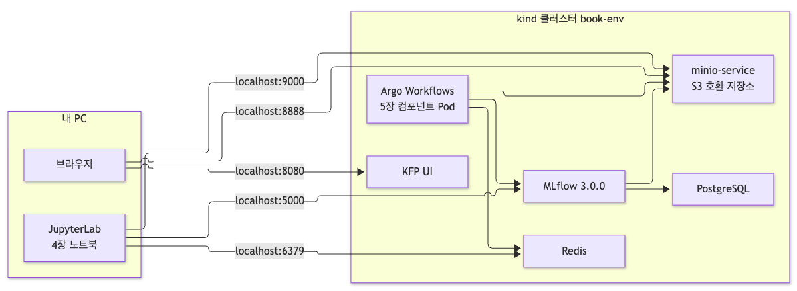
이미지 해설 (img002)
- 무엇이 보이나: 왼쪽 "내 PC" 상자에 브라우저와 JupyterLab(4장 노트북) 이 있습니다. 오른쪽 노란색 "kind 클러스터 book-env" 상자 안에는 minio-service(S3 호환 저장소), KFP UI, MLflow 3.0.0, PostgreSQL, Redis, 그리고 Argo Workflows(5장 컴포넌트 Pod) 가 있습니다. 두 상자 사이의 선에
localhost:9000,localhost:8888,localhost:8080,localhost:5000,localhost:6379라고 적혀 있습니다. - 초보자용 풀이: PC 에서는
localhost:포트라는 하나의 문으로 클러스터 안 서비스를 부릅니다(port-forward 터널). 반면 5장 파이프라인의 Pod 는 클러스터 안에 있으므로 터널을 거치지 않고 서비스 이름(...svc.cluster.local)으로 직접 저장소·MLflow 를 부릅니다. 같은 서비스라도 PC 에서 쓰는 주소와 Pod 에서 쓰는 주소가 다르다는 것이 이 실습 전체에서 가장 중요한 감각입니다. - 여기서 확인할 것: 화살표 중 Argo Workflows Pod 에서 나가는 선이 저장소·MLflow·Redis 쪽으로 뻗어 있습니다. 다만 이 그림은 책 5장의 일반 구조를 한 장에 모은 것이고, 이 실습 D 단계의 피처 조회(
get_historical_features)는 Redis 가 아니라 S3 의 registry.db 와 원천 parquet 을 읽습니다. Redis 는 C 단계에서materialize한 온라인 값을 확인하는 용도로 읽습니다(상세는 다음 섹션).
책의 4장과 5장은 MLflow 서버 위치가 다릅니다
- 책의 4장은 PC에서
mlflow ui를 띄우지만, 5장은 Pod에서 접근할 수 있는 MLflow 서버를 전제로 한다. - 여기서는 처음부터 공용 서버 하나를 쓰고 PC에
localhost:5000으로 연결해, 노트북과 파이프라인이 같은 모델을 보게 했다.
쉬운 풀이
| 구분 | 책 4장 | 책 5장 | 이 실습 |
|---|---|---|---|
| MLflow 서버 | PC 에서 mlflow ui 를 직접 실행(내 PC 안에서만 접근) |
Pod 가 접근할 수 있는 서버가 필요 | 클러스터 안에 서버 1대를 올리고, PC 에는 localhost:5000 터널로 연결 |
| 노트북이 보는 주소 | 로컬 서버 | (Pod 쪽에서 별도) | http://localhost:5000 |
| 파이프라인 Pod 가 보는 주소 | 해당 없음 | 클러스터 내부 서비스 주소 | mlflow-service.mlflow.svc.cluster.local:5000 계열(→ 변수 <POD_MLFLOW_URL>) |
| 결과 | 4장 모델을 5장이 못 볼 수 있음 | - | 노트북이 등록한 모델을 파이프라인이 그대로 조회 |
localhost:5000)를 그 사무실에 연결해 둔 것입니다. 노트북에서 등록한 모델 버전을 파이프라인 Pod 가 같은 사무실에서 찾아 쓸 수 있습니다.표기 참고: 위 두 글머리표는 수강생 노트의 본문 문장입니다. 표의 5장 "Pod 쪽 주소" 예시는 이 가이드의 변수 체계(
<POD_MLFLOW_URL>)를 미리 보여 준 것이며, 실제 값은 가변값 표 섹션에서 본인 환경에 맞게 확인합니다.
→ MLflow·Feast·KFP 개념 자체가 낯설다면 이론편(CH4, CH5)을 먼저 훑어보고 오세요. 이 문서는 개념보다 "어떤 명령을 어디서 실행하고 무엇이 나오면 성공인가" 에 집중합니다.
전체 그림
이 섹션은 본격적으로 명령을 치기 전에 "무엇이 어디에 떠 있고, 어느 단계가 어느 단계에 기대는가" 를 머릿속에 지도로 그려 두는 곳입니다. 지금 다 이해하지 못해도 괜찮으니, 막힐 때마다 이 지도로 돌아오세요.
1. 전체 흐름: 누가 누구를 부르는가
PC 에서 시작한 요청이 어떤 포트를 거쳐 클러스터 안 서비스에 닿고, 그 서비스들이 저장소(S3)·Redis·PostgreSQL 을 어떻게 쓰는지 한 장으로 본 그림입니다. 아래 그림에서 굵은 구분은 "PC 쪽 주소(localhost)" 와 "클러스터 안 주소(Pod 쪽)" 입니다.
flowchart LR
subgraph PC["내 PC"]
BR["브라우저"]
NB["JupyterLab 노트북 8890"]
CLI["터미널 kubectl aws cli"]
end
subgraph FWD["port-forward 터널 python bookenv.py forward"]
P9000["localhost 9000"]
P8888["localhost 8888"]
P5000["localhost 5000"]
P6379["localhost 6379"]
P8080["localhost 8080"]
end
subgraph K8S["kind 클러스터 book-env"]
S3["minio-service S3 호환 저장소 SeaweedFS"]
MLF["MLflow 3.0.0"]
PG["PostgreSQL"]
RD["Redis 온라인 스토어"]
KUI["KFP UI"]
ARGO["Argo Workflows 작업 Pod"]
FJOB["feast-job Job"]
end
NB --> P9000
NB --> P5000
NB --> P6379
CLI --> P9000
BR --> P8888
BR --> P5000
BR --> P8080
P9000 --> S3
P8888 --> S3
P5000 --> MLF
P6379 --> RD
P8080 --> KUI
MLF -->|"메타데이터"| PG
MLF -->|"모델과 아티팩트"| S3
FJOB -->|"feast apply registry.db"| S3
KUI -->|"run 제출"| ARGO
ARGO -->|"입력 읽기 결과 쓰기"| S3
ARGO -->|"Feast SDK 가 registry.db 와 parquet 읽기"| S3
ARGO -->|"모델 버전 조회"| MLF읽는 법
- 왼쪽 두 상자(PC, 터널)는 내 컴퓨터, 오른쪽 큰 상자는 Docker 안에 만든 kind 클러스터 입니다.
- 노트북(B·C 단계)은
localhost:포트로 들어옵니다. 파이프라인 작업 Pod(D 단계)는 터널을 쓰지 않고 클러스터 안에서 서비스 이름으로 직접 S3 와 MLflow 를 부릅니다. - D 단계에서 Argo 가 Redis 로 가는 화살표는 없습니다. 파이프라인의 피처 조회(
retrieve-features-from-feast)는get_historical_features로, S3 의registry.db와 원천 parquet 에서 "그 시각 기준의 과거 피처"를 읽습니다. Redis(온라인 스토어)는 C 단계에서materialize로 값을 채우고 노트북이 확인하는 용도입니다.
⚠ 바로잡기: 책/그림에 따라 5장 컴포넌트 Pod 에서 Redis 로 가는 선이 그려져 있을 수 있습니다(위 img002 도 그런 모양). 이 실습 D 단계의 피처 조회는 Redis 가 아니라 S3(registry.db + parquet) 에서 이뤄지는 것으로 바로잡아 이해하세요. Redis 를 읽는 쪽은 C 단계의 노트북 확인입니다.
2. 실습 단계 의존 순서: 무엇이 무엇을 만든다
뒤 단계는 앞 단계의 산출물이 있어야 동작합니다. 중간에 막히면 "내가 이 화살표의 왼쪽 산출물을 만들었나?" 를 먼저 확인하세요.
flowchart TD
A2["A 클러스터와 서비스 설치 up"] --> A3["A forward 켜 두기"]
A3 --> A4["A 버킷 만들기"]
A4 --> A5["A 책 코드와 가상환경, JupyterLab"]
A5 --> B3["B 학습 run 3개"]
B3 --> B4["B 모델 등록과 버전 지정"]
A4 --> C1["C parquet 업로드"]
C1 --> C2["C feast apply"]
C2 --> C4["C materialize 후 Redis 확인"]
C2 --> C5["C feature_store 설정 파일 업로드"]
A2 --> D2["D 이미지 빌드와 kind load"]
D2 --> D3["D 클러스터 안 feast-job"]
D3 --> D4["D 입력 업로드와 컴파일"]
C5 --> D4
D4 --> D6["D KFP run 실행"]
B4 --> D6
D6 --> D7["D 예측 parquet 결과 저장"]
D7 --> E1["E 결과 해석과 오류 대응"]자주 쓰는 대응 관계
| 만들어야 하는 것 | 필요로 하는 단계 | 없으면 생기는 일 |
|---|---|---|
| 버킷 | B(CSV·모델 저장), C(parquet·registry), D(결과 저장) | 업로드/저장 단계에서 NoSuchBucket 류 오류 |
| 등록된 모델 버전 | D(model-inference 가 모델 이름과 버전으로 조회) |
모델을 찾지 못함 |
registry.db + 피처 원천 parquet |
D(retrieve-features-from-feast) |
피처 조회 실패 |
클러스터에 적재된 이미지(kind load) |
D(작업 Pod 가 이미지를 인터넷에서 받지 않음) | ErrImageNeverPull 류로 Pod 가 시작하지 못함 |
3. 포트와 역할 한눈에 보기
python bookenv.py forward 를 켜 두면 아래 주소가 PC 에서 열립니다. forward 터미널을 닫으면 모두 끊깁니다. (macOS 에서는 5000 포트를 AirPlay Receiver 가 먼저 쓰고 있을 수 있으니 다음 섹션의 준비물 안내를 확인하세요.)
| PC 주소 | 연결되는 것 | 용도 | 같은 서비스의 Pod 쪽 주소(참고) |
|---|---|---|---|
http://localhost:9000 |
S3 API (서비스명 minio-service, 이 실습의 실제 구현은 SeaweedFS) |
aws cli, boto3, minio SDK, MLflow 아티팩트 업로드 | minio-service.kubeflow.svc.cluster.local:9000 |
http://localhost:8888/buckets/ |
SeaweedFS Filer 웹 UI | 버킷·파일을 눈으로 확인(로그인 없음) | (사람이 브라우저로 보는 화면) |
http://localhost:5000 |
MLflow 3.0.0 | 실험·모델 UI 와 API | mlflow-service.mlflow.svc.cluster.local:5000 |
localhost:6379 |
Redis | Feast 온라인 스토어(실습용 비밀번호 redis123) |
redis-deployment-master.redis.svc.cluster.local:6379 |
http://localhost:8080 |
KFP UI | 파이프라인 업로드·실행·결과 확인 | (사람이 브라우저로 보는 화면) |
http://127.0.0.1:8890/lab |
JupyterLab (--port 8890) |
노트북 실행. 8888 은 저장소 화면이 쓰므로 피한 포트 | (PC 전용) |
🔧 본인 환경에 맞게 교체: 위 표의localhost:포트는 PC 쪽 값(→<PC_S3_URL>=http://localhost:9000,<PC_MLFLOW_URL>=http://localhost:5000)이고, 오른쪽 열은 Pod 쪽 값(→<POD_S3_HOSTPORT>=host:port형식으로 http:// 없이,<POD_MLFLOW_URL>=http:// 를 붙인 주소)입니다. 네임스페이스·서비스명을 바꿨다면kubectl get svc -A로 확인한 값을 쓰세요. 두 부류를 섞으면 접속이 실패합니다. 자세한 변수 표는 다음 파트의 "변수 표" 섹션을 보세요.
🔧 실습용 계정 (실습용 값, 실제 환경에서는 변경): S3 접근키/비밀키 =minio/minio123, Redis 비밀번호 =redis123. 로컬 실습 환경 전용 예시값이며 실제 서비스에서는 절대 그대로 쓰지 않습니다.
4. 한 번만 알아 두면 편한 구분
| 질문 | 답 |
|---|---|
노트북 셀에서 localhost:9000 은 어디? |
PC 의 터널 입구이므로 클러스터 S3 에 닿습니다(forward 가 켜져 있을 때). |
파이프라인 Pod 코드에서 localhost:9000 은 어디? |
그 Pod 자신이므로 아무것도 없어서 접속 실패합니다. Pod 에서는 서비스 주소를 써야 합니다. |
| MLflow Experiment 와 KFP Experiment 는 같은가? | 별개입니다(이름만 같음). |
| Argo CD 와 Argo Workflows 는 같은가? | 다릅니다. Argo CD 는 책이 Kubeflow 를 설치할 때 고른 GitOps 도구, Argo Workflows 는 KFP 가 파이프라인 작업을 Pod 로 실행하는 엔진입니다. 이 실습은 KFP standalone 만 설치하므로 Argo CD 는 없습니다. |
| 버킷은 몇 개인가? | 업무용 버킷은 bookenv.py buckets 가 만드는 것 + KFP 가 준비한 mlpipeline 입니다. 정확한 개수는 A 단계의 버킷 섹션에서 직접 세어 확인합니다. |
실습 진행 체크리스트와 준비물
시작 전에 준비물, 진행 체크리스트, 어디까지가 필수이고 어디부터가 선택인지를 정리합니다.
1. 먼저 체험해 보기: localhost 함정
이 실습에서 가장 많이 겪는 오류의 뿌리는 "같은 localhost 가 말하는 사람에 따라 다른 곳을 가리킨다"는 점입니다. 아래 버튼을 눌러 보세요.
2. 준비물
필수 도구와 자원
| 준비물 | 확인 방법 | 비고 |
|---|---|---|
| Docker 또는 호환 런타임(Docker Desktop, OrbStack 등) | docker info 가 오류 없이 서버 버전을 출력 |
실행 중이어야 합니다. 수강생 노트는 Docker 29.8.2(OrbStack) 환경 |
| kind | kind version |
kind 가 Docker 안에 클러스터를 만듭니다 |
| kubectl | kubectl version --client |
클러스터 조회·진단 |
| git | git --version |
실습 저장소와 저자 코드 내려받기 |
| Python 3.11 + uv | python3 --version, uv --version |
A 단계에서 uv venv .venv-book --python 3.11 로 전용 환경을 만듭니다 |
| 디스크·메모리 여유 | Docker 의 리소스 설정 화면 | 첫 실행은 이미지 다운로드·빌드로 20분 이상, 캐시가 있으면 약 8분(수강생 기록). 참고로 정확한 최소 메모리는 본문에 없습니다. kind 안내 등을 근거로 Docker 에 넉넉히(예: 8GB 이상) 주는 것을 권하지만, 직접 검증한 값은 아닙니다 |
| aws cli (A-4 는 선택, B-3 부터는 설치 권장) | aws --version |
A-4 의 확인은 bookenv.py buckets 와 저장소 웹 화면으로 대신할 수 있습니다. B-3 이후의 확인 명령은 aws 를 씁니다(설치하지 않으면 웹 화면으로 파일 이름·크기만 눈으로 확인). 설치 방법은 A-0 |
| 브라우저 | - | MLflow, KFP UI, 저장소 화면 확인 |
터미널은 몇 개 필요한가
| 터미널 | 용도 | 닫아도 되나? |
|---|---|---|
| [PC 터미널 1] | 설치·조회·일반 명령(python bookenv.py up, kubectl, 컴파일 등). A-5 이후에는 가상환경을 켠 상태 |
필요할 때 새로 열어도 됨(폴더 이동과 가상환경은 다시) |
| [PC 터미널 2: forward 창] | python bookenv.py forward 를 실습이 끝날 때까지 켜 둠 |
닫으면 안 됩니다. 닫으면 localhost 포트가 모두 끊김 |
| [PC 터미널 3: Jupyter 창] | jupyter lab --notebook-dir book --port 8890 를 켜 두는 창(A-6). 이 창에서는 다른 명령을 치지 않습니다 |
노트북을 쓰는 동안 유지 |
| [JupyterLab 노트북 셀] | B·C 단계 코드 실행 (브라우저에 열린 JupyterLab 에서 셀을 실행) | - |
| [PC 터미널 4: 모니터링 창] | D-5 에서 클러스터 상태를 계속 지켜보는 창 | D-5 에서 엽니다 |
| [PC 터미널 5: Feast UI 창] (선택) | C-6 에서만 feast ui 를 켜 두는 창 |
C-6 에서 엽니다 |
| [브라우저] | MLflow(5000), KFP UI(8080), 저장소 화면(8888/buckets/) 확인 | - |
OS별 주의
⚠ macOS: 포트 5000 은 AirPlay Receiver 가 쓸 수 있습니다. MLflow 를localhost:5000으로 열 텐데, macOS 의 AirPlay 수신 기능이 5000 포트를 먼저 점유하고 있으면 forward 가 실패하거나 엉뚱한 응답이 올 수 있습니다. 이론편 4장 수강생 노트에도 "AirPlay 수신 모드로 점유되어 AirPlay 수신을 끄고 실습했다"는 기록이 있습니다. 시스템 설정의 공유(AirPlay 수신 모드)를 끄고 진행하세요. 참고로 메뉴 이름은 macOS 버전마다 다를 수 있습니다. 끄기 곤란하면 5000 대신 다른 포트를 쓸 수도 있지만 초보자에게는 권하지 않습니다.bookenv.py forward는 포트가 고정이라 따로 수동 port-forward 를 써야 하고, 노트북·스크립트의 MLflow 주소(<PC_MLFLOW_URL>)도 전부 함께 바꿔야 하며, 이 가이드의 명령은 5000 기준으로 쓰여 있습니다. 가능하면 AirPlay 수신을 끄고 진행하세요.
🔧 Apple Silicon (M 시리즈): 수강생 노트의 출력은 arm64 macOS(/opt/homebrew, OrbStack) 환경입니다. 실습 중exec format error가 나오면 이미지의 CPU 아키텍처(amd64/arm64)와 Docker 의 플랫폼 설정, Rosetta 사용 여부를 확인하세요. 이 오류는 모든 사람에게 나는 것이 아니며 필수 절차도 아닙니다. 모든 이미지의 arm64 지원 여부는 직접 확인하지 않았습니다(직접 확인하지 않음).
🔧 Windows: WSL2(Ubuntu) 안에서 전체를 진행하는 것을 권합니다. 이 가이드의 명령은 bash 기준(source .venv-book/bin/activate,export,wc,sed,watch)이라 PowerShell 에서 그대로 동작하지 않습니다. Windows 에 설치한 가상환경과 WSL 안의 가상환경을 섞어 쓰지 말고 하나의 환경에서 끝까지 진행하세요. Docker Desktop 과 WSL 을 연결하는 방법은 A-0 의 Windows 절(WSL integration 에서 Ubuntu 켜기)과 Docker 공식 문서를 따르세요. PowerShell 을 꼭 써야 한다면 활성화는.\.venv-book\Scripts\Activate.ps1, 환경변수는$env:이름="값"형식이라고 알려져 있습니다(일반적으로 알려진 내용이며 직접 확인하지는 않았습니다).
| OS | 가상환경 켜기 | 브라우저 열기 | watch 명령 |
|---|---|---|---|
| macOS / Linux | source .venv-book/bin/activate |
주소를 직접 입력하거나 open(mac) / xdg-open(Linux) |
macOS 는 기본 없음 → D-5 의 kubectl get pods -w 로 대신하거나 같은 명령을 직접 반복 (Homebrew 가 있다면 brew install watch) |
| Windows (WSL2) | WSL 안에서 위와 동일 | 윈도우 브라우저에 주소 직접 입력 | WSL 에서 사용 가능 |
| Windows (PowerShell) | .\.venv-book\Scripts\Activate.ps1 (직접 확인하지 않음) |
Start-Process 주소 |
없음 |
3. 실습 진행 체크리스트
각 줄은 "이걸 해냈다면 다음으로 가도 좋다"는 성공 신호입니다. 소단계의 이름은 이후 섹션의 제목과 같습니다.
A. 환경과 버킷 준비
- [ ] A-1.
python bookenv.py check마지막 줄에All required tools are available.이 나온다 - [ ] A-2.
python bookenv.py up이The environment is ready. Next: python bookenv.py forward로 끝난다 - [ ] A-3. forward 를 별도 터미널에 켜 두었고,
localhost:8888/buckets/화면이 열린다 - [ ] A-4. 업무용 버킷이 생성되고 저장소 화면에서 확인된다
- [ ] A-5. 저자 코드 clone, 가상환경 활성화, 버전 확인(
3.0.0 0.40.1 2.9.0 1.5.2)을 마쳤다 - [ ] A-6. JupyterLab(
8890)이 열리고ch04노트북이 보인다
B. MLflow 학습과 모델 등록
- [ ] B. 노트북 커널이
.venv-book환경이다, MLflow 에 run 이 기록되고 모델이 Model Registry 에 등록된다
C. Feast 피처 정의와 조회
- [ ] C. 피처 원천 parquet 을 올리고
feast apply로 정의를 등록했다,materialize후 Redis 에 값이 들어갔다, 설정 파일을 S3 에 올렸다
D. KFP 배치 추론
- [ ] D. 이미지를 빌드해
kind load했다, 클러스터 안feast-job이 끝났다, 파이프라인을 컴파일해 UI 에서 run 을 실행했고 4개 작업이 모두 초록색으로 끝났다
E. 결과 해석
- [ ] E.
inference-datasets에 예측 parquet 이 생기고, 결과 열의 뜻(확률,user_id없음 등)을 이해했다
📌 위 체크리스트는 큰 단계 기준 요약입니다. 소단계별 "성공 신호"는 각 단계 섹션의 ✅ 기대 결과 와 🔍 확인 방법 에 있습니다. 중간에 멈췄다가 돌아올 때는python bookenv.py status로 네임스페이스별 Pod 상태를 먼저 확인하고, 이미 있는 클러스터는 재사용되므로up을 다시 실행해도 됩니다(수강생 노트의 흐름 설명 기준).
4. 필수 경로와 선택 심화
| 구분 | 내용 | 어디에 있나 |
|---|---|---|
| 필수 경로 | A 환경 세팅 → B MLflow → C Feast → D KFP 배치 추론 → E 결과 해석 | 본문(번호순) |
| 선택 심화 | 줄별 주석이 달린 긴 코드(파이프라인 정의, component.yaml, IR yaml), 파드 내부 구조 분석, OS별 차이 |
접이식 또는 "🔬 심화 노트" |
| 도전과제 | 보충 섹션의 연습용 스크립트(feature_study.py, income_study.py, pipeline_study.py, run_pipeline_study.py) |
마지막 보충 섹션 |
이 문서의 표기 규칙
| 표기 | 뜻 |
|---|---|
[PC 터미널 1], [PC 터미널 2: forward 창], [JupyterLab 노트북 셀], [브라우저], [클러스터 안(Pod)] |
명령을 어디서 실행하는지 |
<VARIABLE_NAME> + 🔧 상자 |
환경마다 달라지는 값. 상자의 설명에 따라 본인 값으로 교체 |
| ⚠ 바로잡기 상자 | 수강생 노트의 오탈자·불일치를 바로잡은 부분(본문/정정본 나란히) |
| "참고로", "덧붙이면" | 수강생 노트에는 없지만 공식 문서나 계산으로 덧붙인 내용. 직접 확인하지 않은 외부 사실은 "직접 확인하지 않음"이라고 밝힘 |
| "수강생이 기록한 과거 실행 결과" | 출력의 숫자(행 수, Healthy 등)는 내 환경에서 똑같이 나온다는 보장이 아니라 참고용 |
| 🎯 목적 / 📋 사전조건 / ⌨ 명령어 / ✅ 기대 결과 / 🔍 확인 방법 / ⚠ 자주 나는 오류 | 각 실습 단계의 6단 구조 |
✏ 명령 블록을 읽는 법: 코드 블록 안에<ENV_ROOT>,<KFP_NAMESPACE>처럼 꺾쇠(< >)로 감싼 이름이 보이면 그대로 입력하지 말고 꺾쇠까지 포함해서 본인 값으로 바꿔 입력합니다 (예:<KFP_NAMESPACE>→kubeflow). 꺾쇠가 없는 명령은 그대로 복사해 붙여 넣어도 됩니다. 어떤 값을 넣을지는 명령 바로 아래의 "🔧 본인 환경에 맞게 교체" 상자와 "변수 체계" 표에 있습니다.
🔧 실습용 값 안내: 문서에 나오는minio/minio123,redis123등은 로컬 실습 전용 예시값입니다. 실제 환경에서는 반드시 변경하고, 개인 토큰이나 계정은<YOUR_...>로 표시된 자리에 본인 값을 넣으세요.
5. 시작하기 전 마지막 점검 3가지
- Docker(또는 OrbStack)를 먼저 실행했습니까? 꺼져 있으면 A-1 부터 막힙니다.
- 터미널 창을 최대 5개까지 열 수 있습니까? 번호의 역할은 문서 전체에서 같습니다. 처음부터 필요한 것은 1 = 일반 명령, 2 = forward 전용, 3 = Jupyter 전용 세 개이고, 4 = 모니터링(D-5) 과 5 = Feast UI(C-6, 선택) 는 그 단계에서 필요할 때 엽니다 (자세한 규칙은 A-0).
- 디스크와 시간(첫 실행 20분 이상)을 확보했습니까?
세 가지가 모두 "예" 라면 다음 파트의 변수 표를 한 번 훑어보고 A 단계로 넘어갑니다.
A-0. 실습 전에 준비할 것: 필수 도구 설치와 터미널 사용 규칙
이 문서의 명령은 도구가 이미 설치되어 있다고 가정하고 시작합니다. 아래 도구가 하나라도 없으면 A-1에서 바로 멈추므로, 먼저 이 절에서 준비를 마치세요. 각 도구의 설치 방법은 운영체제와 버전에 따라 자주 바뀝니다. 그래서 이 절은 명령을 외우게 하지 않고 공식 설치 문서로 안내합니다. 문서가 열리지 않으면 도구 이름과 운영체제를 검색해 공식 사이트를 찾으세요.
⚠ 가장 먼저 확인:python명령이 되나요?
이 가이드의 명령은python bookenv.py ...,python book/ch05/prepare.py처럼python으로 적혀 있습니다. 그런데 Ubuntu 와 macOS 에는python이라는 이름이 없고python3만 있는 경우가 많습니다.
터미널에서python --version을 쳐 보세요.command not found가 나오면 이 가이드의 모든python을python3로 바꿔 입력하세요 (예:python3 bookenv.py check).
가상환경을 활성화한 뒤(A-5 이후)에는 그 안에서는python이름이 생기므로 그대로 써도 됩니다. 다만 A-1 ~ A-4 는 가상환경 이전이라python3가 필요할 수 있습니다.
⚠ macOS(zsh) 사용자 필독: 명령 뒤의# 설명때문에 오류가 날 수 있습니다
이 가이드의 코드에는cd upstream/chapter-5 # = <CH5_ROOT>처럼 명령 줄 끝에#로 시작하는 설명이 붙은 줄이 여러 개 있습니다. macOS 기본 셸 zsh 는 터미널에 직접 입력하거나 붙여넣을 때 이 설명을 주석으로 인정하지 않아zsh: parse error near ...가 나오고 명령이 실행되지 않습니다. (직접 확인: 대화형 zsh 에서 위cd줄이 실패했고, 아래 설정 후에는 성공했습니다.) Linux(bash)와 WSL(bash)에서는 이 설정이 필요 없습니다.
macOS 에서는 터미널 창을 연 직후 한 번 아래를 입력하세요. 새 창을 열 때마다 다시 입력해야 합니다.
[PC 터미널 1] (macOS 만)
setopt interactive_comments
매번 입력하기 싫다면 위 한 줄을 ~/.zshrc 파일 끝에 추가해 두면 새 창에도 적용됩니다 (이 파일을 직접 고쳐 본 것은 아니므로 줄만 추가하세요).
1. 필요한 도구 한눈에 보기
| 도구 | 하는 일 | 확인 명령 (설치되어 있으면 버전이 나옵니다) | 공식 설치 문서 |
|---|---|---|---|
| Docker | 컨테이너를 만들고 실행합니다. kind 가 이 위에서 돕니다 | docker --version 그리고 docker info |
macOS: https://docs.docker.com/desktop/setup/install/mac-install/ / Windows: https://docs.docker.com/desktop/setup/install/windows-install/ / Ubuntu: https://docs.docker.com/engine/install/ubuntu/ |
| kind | Docker 안에 연습용 Kubernetes 클러스터를 만듭니다 | kind version |
https://kind.sigs.k8s.io/docs/user/quick-start/#installation |
| kubectl | 클러스터를 조작하는 명령 도구입니다 | kubectl version --client |
https://kubernetes.io/docs/tasks/tools/ |
| git | 실습 저장소를 내려받습니다 | git --version |
운영체제 패키지 관리자 또는 https://git-scm.com/downloads |
| Python 3.11 | 실습 코드와 노트북을 실행합니다. 가상환경은 3.11 로 만듭니다 | python3 --version 이 3.11 이 아니어도 괜찮습니다. 아래 3번에서 uv 로 3.11 을 따로 받으면 되고, 시스템 python3 은 A-1 ~ A-4 의 bookenv.py 실행에만 쓰입니다 |
아래 3번 참고 |
| uv | 파이썬 가상환경과 패키지를 빠르게 설치합니다 (A-5 에서 사용) | uv --version |
https://docs.astral.sh/uv/getting-started/installation/ |
| aws cli (A-4 는 선택, B-3 부터는 설치 권장) | 터미널에서 버킷 내용을 확인합니다. A-4 의 확인은 웹 화면으로 대신할 수 있습니다. B-3 이후의 확인 명령(Run ID 구하기, CSV 행 수, 업로드 확인 등)은 aws 명령을 쓰므로 B-3 에 들어가기 전에 설치해 두기를 권합니다. 설치하지 않을 때의 대안: 저장소 웹 화면(http://localhost:8888/buckets/)에서 파일 이름과 크기를 눈으로 확인 |
aws --version |
https://docs.aws.amazon.com/cli/latest/userguide/getting-started-install.html |
위 표의 "확인 명령"은 이 가이드가 정한 합격 기준이 아니라, 설치 여부를 보는 간단한 방법입니다. A-1 의
python bookenv.py check가 최종 점검을 합니다.
2. 운영체제별로 알아 둘 점
macOS (Apple Silicon 포함)
- 터미널을 열면 가장 먼저
setopt interactive_comments를 입력합니다 (위의# 설명오류 안내 참고). - Docker 는 Docker Desktop 을 설치하고 앱을 먼저 실행해 둡니다. 앱이 꺼져 있으면
docker info가 연결 오류를 냅니다. - 시스템에 들어 있는 파이썬은 오래된 버전(예: 3.9)일 수 있습니다. 이 가이드의 가상환경은 3.11 이어야 하므로 아래 3번처럼
uv로 3.11 을 받습니다. - 포트 5000 을 macOS 의 AirPlay Receiver 가 쓰는 경우가 있습니다. A-3 의 안내를 먼저 읽으세요.
Ubuntu / Linux
- Docker 를 설치한 뒤 일반 사용자가
sudo없이docker를 쓸 수 있게 하는 설정(사용자를docker그룹에 추가)이 필요합니다. 이 설정이 없으면permission denied while trying to connect to the Docker daemon socket오류가 납니다. 공식 안내: https://docs.docker.com/engine/install/linux-postinstall/ 그룹을 추가한 뒤에는 로그아웃했다가 다시 로그인(또는 재부팅)해야 확실히 적용됩니다. 터미널 창만 새로 여는 것으로는 적용되지 않는 경우가 있습니다. 적용되었는지는groups를 입력했을 때 목록에docker가 보이는지로 확인하세요. - 배포판 기본 파이썬이 3.11 보다 낮을 수 있습니다(예: Ubuntu 22.04 는 보통 3.10). 아래 3번을 따르세요.
- 이 가이드의
open <주소>명령은 macOS 용입니다. Linux 에서는xdg-open <주소>를 쓰거나 브라우저 주소창에 직접 입력합니다.
Windows 11
- 이 가이드의 명령은 모두
bash문법입니다. Windows 에서는 WSL2(Ubuntu) 안의 터미널에서 실행하세요. PowerShell 이나 명령 프롬프트에서 그대로 실행하면 대부분 실패합니다. - 작업 폴더는 WSL 의 홈(
~) 아래에 만드세요 (예: 터미널을 열면 처음 위치하는 곳에서git clone).C:드라이브를 가리키는/mnt/c/...아래에서 작업하면 속도가 느리고 권한·줄바꿈 문제가 날 수 있다고 알려져 있습니다(공식 문서: https://learn.microsoft.com/en-us/windows/wsl/filesystems). -
준비 순서는 다음과 같습니다.
- WSL2 와 Ubuntu 설치: https://learn.microsoft.com/en-us/windows/wsl/install (재부팅이 필요할 수 있고, 가상화 기능이 켜져 있어야 합니다)
- Docker Desktop 설치 후, 설정의 WSL integration 에서 Ubuntu 를 켭니다: https://docs.docker.com/desktop/features/wsl/
- Ubuntu(WSL) 터미널을 열어 위 표의 도구 중 kind, kubectl, git, uv, Python, aws cli 는 WSL 안에 Linux 용으로 설치합니다. 위 표의 Docker 링크(Windows 용)는 Docker Desktop 을 설치하는 것이고, kind·kubectl·uv 는 그 링크로 설치하는 것이 아닙니다. Windows 용
.exe로 설치한 도구는 WSL 안에서 보이지 않을 수 있습니다. 설치 방법은 각 도구의 공식 문서에서 Linux 항목을 따르세요.- kind: https://kind.sigs.k8s.io/docs/user/quick-start/#installing-from-release-binaries
- kubectl: https://kubernetes.io/docs/tasks/tools/install-kubectl-linux/
- uv: https://docs.astral.sh/uv/getting-started/installation/#standalone-installer
- 그 밖의 WSL 개발 환경 설정: https://learn.microsoft.com/en-us/windows/wsl/setup/environment
WSL 터미널을 여는 방법은 시작 메뉴에서 Ubuntu 를 검색해 실행하는 것입니다. 열린 창의 프롬프트가
사용자이름@PC이름:~$형태이면 WSL 안입니다.
-
WSL2 는 기본적으로 메모리를 제한합니다. 메모리가 부족하면 Pod 가 계속 재시작될 수 있습니다. 이때는 Windows 의
.wslconfig로 메모리 상한을 늘립니다. 설정 방법은 공식 문서 https://learn.microsoft.com/en-us/windows/wsl/wsl-config 의.wslconfig항목을 참고하세요(설정 후에는 WSL 을 종료했다가 다시 시작해야 적용됩니다). - Windows 브라우저에서
localhost:5000같은 주소로 WSL 안의 서비스에 접속되는지는 WSL 의 네트워크 모드에 따라 다릅니다. Microsoft 문서에 따르면 기본값인 NAT 모드에서는 Windows 에서 WSL 의 IP 를 조회해야 할 수 있고, mirrored 모드에서는localhost(127.0.0.1)로 서로 접속할 수 있다고 합니다: https://learn.microsoft.com/en-us/windows/wsl/networking- 먼저 그냥
http://localhost:5000을 열어 보세요. 열리면 아무것도 바꿀 필요가 없습니다. - 열리지 않으면 위 문서의 안내대로 네트워크 모드를 확인하세요. 이 가이드의
bookenv.py forward는127.0.0.1에만 연결하므로, WSL 의 다른 IP 주소로는 접속되지 않을 수 있습니다(직접 확인하지는 못했습니다).
- 먼저 그냥
- WSL 안의 파일을 Windows 브라우저의 "파일 선택" 창에서 고르는 방법: 파일 선택 창의 주소 입력란에
\\wsl$\Ubuntu\home\<사용자이름>\...를 붙여 넣으면 됩니다(배포판 이름이Ubuntu가 아니면 바꿉니다).\\wsl$로 WSL 의 파일을 Windows 탐색기에서 볼 수 있다는 점은 Microsoft 문서 https://learn.microsoft.com/en-us/windows/wsl/filesystems 에 나와 있습니다. WSL 터미널에서explorer.exe .를 실행하면 지금 폴더가 Windows 탐색기로 열려 정확한 경로를 확인할 수 있습니다. D-5 에서 파이프라인 yaml 을 올릴 때 필요합니다.
3. Python 3.11 준비
가상환경을 3.11 로 만들어야 하므로 시스템 파이썬이 3.11 이 아니면 uv 로 3.11 을 받는 것이 가장 간단합니다. uv 를 설치한 뒤(위 표의 링크) 아래를 실행합니다.
[PC 터미널 1] (Windows 는 WSL 터미널)
uv python install 3.11
uv python list
기대 결과: uv python list 에 3.11.x 가 설치된 것으로 표시됩니다. 이렇게 받은 3.11 은 A-5 의 uv venv ... --python 3.11 이 자동으로 찾아 씁니다. uv python install 의 옵션은 버전에 따라 다를 수 있으니, 오류가 나면 https://docs.astral.sh/uv/guides/install-python/ 를 확인하세요.
4. Docker 에 줄 메모리와 디스크
- 이 실습은 클러스터 안에 저장소, Redis, PostgreSQL, MLflow, Kubeflow Pipelines 를 함께 올립니다. 메모리가 작으면 Pod 가
Pending이거나 재시작을 반복할 수 있습니다. - 권장값은 원 가이드의 예시로 Docker 에 메모리 8GB 이상, 디스크 40GB 정도의 여유가 제시됩니다. 이 값은 직접 검증한 최소치가 아니라 안전하게 잡은 예시입니다. PC 전체 메모리가 16GB 라면 Docker 에 8GB 를 주는 것이 무난합니다.
- Docker Desktop(macOS·Windows) 에서는 설정의 Resources 항목에서 메모리를 바꿉니다.
- Ubuntu 같은 Linux 의 Docker Engine 에는 이런 설정 화면이 없습니다. 컨테이너가 PC 의 메모리를 직접 쓰므로, 따로 늘릴 것 없이 PC 에 8GB 이상의 여유 메모리가 있으면 됩니다. 컨테이너별 메모리 제한이 걸려 있다면 공식 문서를 참고하세요: https://docs.docker.com/engine/containers/resource_constraints/
- 처음 실행은 이미지 다운로드와 빌드 때문에 20분 넘게 걸릴 수 있고, 이후 이미지 빌드(D-2)에서 10분 이상이 더 걸릴 수 있습니다. 시간 여유를 두고 시작하세요.
5. 이 가이드의 터미널 번호 규칙 (처음부터 끝까지 동일)
실습 중에는 터미널 창을 여러 개 씁니다. 헷갈리지 않도록 번호의 역할을 문서 전체에서 고정했습니다.
| 이름 | 역할 | 언제 여나 | 닫아도 되나 |
|---|---|---|---|
| PC 터미널 1 | 일반 명령 창. python bookenv.py up/buckets, 이미지 빌드, kubectl, aws 등 |
처음부터 | 실습이 끝날 때까지 사용 |
| PC 터미널 2: forward 창 | python bookenv.py forward 전용. 이 창에서는 다른 명령을 치지 않습니다 |
A-3 | 실습이 끝날 때까지 켜 둡니다 |
| PC 터미널 3: Jupyter 창 | jupyter lab 을 실행하는 창. 이 창도 서버가 차지하므로 다른 명령을 치지 않습니다 |
A-6 | 노트북을 쓰는 동안 켜 둡니다 |
| PC 터미널 4: 모니터링 창 | D-5 에서 watch -d kubectl get pod,workflows ... (없으면 kubectl get pods -w) 를 실행하는 창. 화면을 계속 갱신하므로 다른 명령을 치지 않습니다 |
D-5 | D-7 까지 보다가 Ctrl+C 로 끕니다 |
| PC 터미널 5: Feast UI 창 (선택) | C-6 에서만 feast ui 를 실행하는 창. UI 를 켜 두는 동안 다른 명령을 치지 않습니다 |
C-6 | UI 를 다 봤으면 Ctrl+C 로 끕니다 |
- 새 터미널을 열 때마다
cd "<ENV_ROOT>"로 폴더에 들어가고, 가상환경을 다시 활성화하고,export한 환경변수도 다시 설정해야 합니다(새 터미널은 앞 창의 설정을 물려받지 않습니다). - 터미널 1 을
watch같은 계속 도는 명령으로 점유하지 마세요. 그런 명령은 위 표의 전용 창(2, 3, 4, 5)에서만 실행합니다.
아래 A~E 의 각 단계 머리말에는
[PC 터미널 1]처럼 어느 창에서 치는지 표시되어 있습니다. 번호가 이 표와 다르게 보이면 이 표가 맞습니다.
변수 체계: PC 주소와 Pod 주소, 표기 규칙, 표 사용법
이 파트는 실습 곳곳에 나오는 <VARIABLE_NAME> 표기를 한곳에 모아 정리한 사전입니다. 실습 본문은 본문에 적힌 예시값(예: book-env, localhost:9000, minio123)을 기본으로 쓰므로, 예시 그대로 따라 할 수 있는 환경이라면 이 파트를 읽지 않아도 실습은 진행됩니다. 포트가 겹치거나, 폴더·클러스터 이름을 바꾸거나, 다른 Kubernetes(kind 가 아닌 곳)에서 따라 할 때 이 파트를 펼쳐 보세요.
localhost 가 바로 이 "여기"입니다. 내 PC 에서 localhost 는 내 PC, Pod(클러스터 안 작은 컴퓨터) 안에서 localhost 는 그 Pod 자기 자신입니다. 그래서 같은 MinIO(S3) 를 가리키려 해도 PC 는 localhost:9000, Pod 는 minio-service.kubeflow.svc.cluster.local:9000 처럼 서로 다른 주소를 써야 합니다. 마치 같은 회사 건물이라도 밖에서는 대표번호로, 건물 안에서는 내선번호로 거는 것과 같습니다.1. PC 주소와 Pod 주소 구분도
flowchart LR
subgraph PC["내 PC"]
NB["노트북 aws cli feast CLI"]
FW["port-forward 터널 localhost"]
end
subgraph K["kind 클러스터"]
S3["minio-service 9000 SeaweedFS"]
MLF["mlflow-service 5000"]
RED["redis-deployment-master 6379"]
POD["KFP 작업 Pod"]
end
NB -->|"PC 주소 localhost 9000"| FW
FW --> S3
FW --> MLF
FW --> RED
POD -->|"Pod 주소 서비스 DNS 9000"| S3
POD -->|"Pod 주소 서비스 DNS 5000"| MLF
POD -.->|"localhost 는 Pod 자기 자신"| POD그림 읽는 법: 왼쪽 PC 에서 나가는 모든 접속은 python bookenv.py forward 가 열어 둔 터널(localhost) 을 지나 클러스터로 들어갑니다. 오른쪽 클러스터 안의 작업 Pod 는 터널을 거치지 않고 서비스 이름(DNS) 으로 직접 찾아갑니다. 점선(Pod 에서 localhost)은 "자기 자신에게 말을 거는" 길이라 서비스에 닿지 않습니다. 또한 D 단계 배치 추론의 피처 조회(retrieve-features-from-feast)는 Redis 가 아니라 S3 의 registry.db 와 원천 parquet 을 읽는다는 점도 기억하세요(그림에서 작업 Pod 에서 Redis 로 가는 화살표가 없는 이유입니다).
2. 이 가이드의 변수 표기 규칙
| 표기 | 뜻 | 예 |
|---|---|---|
<NAME> |
본인 환경에 맞게 바꿀 값. 표에 본문의 예시값이 있다. 꺾쇠 < > 자체는 지우고 값만 넣는다 |
<CLUSTER_NAME> → book-env |
<PC_...> |
내 PC 에서 접속할 때 쓰는 주소/포트. 대부분 localhost 계열 |
<PC_S3_URL> = http://localhost:9000 |
<POD_...> |
클러스터 안 Pod 에서 접속할 때 쓰는 주소. 서비스 DNS 계열 | <POD_S3_HOSTPORT> = minio-service.kubeflow.svc.cluster.local:9000 |
..._URL |
http:// 까지 포함한 전체 주소 |
<POD_MLFLOW_URL> |
..._HOSTPORT |
http:// 없이 호스트:포트 만 |
<POD_S3_HOSTPORT>, <PC_S3_HOSTPORT> |
<YOUR_...> |
개인 토큰·계정처럼 사람마다 다른 값 | <YOUR_JUPYTER_TOKEN> |
주소 형태(scheme, 즉 http:// 포함 여부)는 쓰는 곳마다 다르므로 반드시 구분합니다.
| 변수 | http:// |
쓰이는 곳 |
|---|---|---|
<PC_S3_URL> |
포함 | PC 의 aws CLI, Feast, MLflow 의 S3 환경변수 |
<PC_S3_HOSTPORT> |
없음 | PC 의 Minio SDK(Minio("localhost:9000", ..., secure=False)) |
<POD_S3_URL> |
포함 | Pod 의 AWS_ENDPOINT_URL 등 환경변수, Feast Job |
<POD_S3_HOSTPORT> |
없음 | KFP Run 파라미터 minio_host |
<POD_MLFLOW_URL> |
포함 | KFP Run 파라미터 mlflow_host, Pod 의 MLFLOW_TRACKING_URI |
<POD_REDIS_HOST> + <REDIS_PORT> |
없음 | Feast connection_string (호스트:포트,password=...) |
⚠ 바로잡기: 본문이minio_host에는minio-service.kubeflow.svc.cluster.local:9000(scheme 없음),mlflow_host에는http://mlflow-service.mlflow.svc.cluster.local:5000(scheme 포함)을 넣는데, 이를 한 가지 "S3 주소" 변수로 뭉뚱그리면 안 됩니다. 이 가이드에서는 PC 용 / Pod 용 변수를 분리했고, 14개 파라미터 치환본에서는minio_host=<POD_S3_HOSTPORT>(scheme 없음),mlflow_host=<POD_MLFLOW_URL>(http:// 포함)로 씁니다. 둘을 바꿔 쓰면 접속에 실패합니다.
3. 이 표는 어떻게 쓰나
- 먼저 예시 그대로 시도합니다. 소스와 같은 macOS/Linux + Docker + kind 환경이라면 표의 "본문의 예시값"을 그대로 쓰면 됩니다.
- 바꾸고 싶거나 바꿔야 하는 값만 표에서 찾습니다. 각 행의 "확인·결정 방법" 에 적힌 명령으로 내 환경의 실제 값을 알아냅니다(마지막 섹션 "환경별 빠른 점검 표"에 명령을 모아 두었습니다).
- 서로 연결된 이름은 동시에 바꿉니다. 예를 들어 포트, 버킷 이름, 이미지 태그, 네임스페이스, 서비스 DNS 는 노트북·YAML·Job·Run 파라미터 여러 곳에 흩어져 있어, 한 곳만 바꾸면 다른 곳이 안 맞아 실패합니다.
- 치환 명령 모음 섹션의 코드를 복사한 뒤
<...>를 실제 값으로 바꿔 실행합니다. - Pod 해시·run ID·시간·이미지 ID 같은 자동 생성 값은 입력하는 값이 아니라 내 실행에서 조회하는 값입니다(자동 생성 출력 섹션 참고).
🔧 본인 환경에 맞게 교체: 꺾쇠< >를 그대로 셸에 붙여 넣으면 리다이렉션 기호로 해석되어 실패합니다. 반드시 값으로 바꾼 뒤 실행하세요.bookenv.py/prepare.py에는 모든 값을 받는 CLI 옵션이 있는 것이 아니므로, 포트·이름을 바꿀 때는 관련 스크립트 상수·매니페스트·노트북·설정·JSON·이미지 참조를 함께 수정해야 합니다(없는--port,--namespace옵션을 붙이지 마세요).
🔧 비밀번호·키 표기: 이 가이드의minio/minio123/redis123/postgres123은 모두 실습용 값, 실제 환경에서는 변경해야 합니다. 책의 방식은 키를 파라미터로 넘겨 UI 에도 보이므로 로컬 실습에만 쓰고, 운영에서는 Secret 과 서비스 계정 권한으로 전달합니다.
이 파트의 표에 나온 소요 시간·IP·run ID·점수·파일 크기·행 수(예: 30,162행)는 수강생이 기록한 과거 실행 결과입니다. 내 실행에서 같은 값이 나오지 않아도 정상일 수 있습니다. 표에서 (참고) 라고 덧붙인 값은 소스 본문에는 없고 공개된 실습 저장소나 관례에서 찾은 값이며, "(직접 확인하지 않음)"은 직접 실행해 보지 않은 값입니다.
가변값 표 1: 경로·실행 도구·버전
경로(폴더·파일), 실행 도구, 버전은 PC 마다 가장 많이 달라지는 영역입니다. 아래 표의 "본문의 예시값"은 수강생이 실습한 macOS(Homebrew) 환경의 값입니다.
| 변수명 | 본문의 예시값 | 의미 | 확인·결정 방법 |
|---|---|---|---|
<ENV_REPO_URL> |
https://github.com/johklo/ml-platform-book-env.git |
실습 환경 저장소 | 원 가이드 링크, git remote -v |
<ENV_ROOT> |
ml-platform-book-env (폴더 이름. 실제로는 /home/me/ml-platform-book-env 처럼 절대 경로를 씁니다) |
실습 작업 루트(저장소 clone 폴더) | clone 한 폴더 안에서 pwd 를 입력해 나온 절대 경로를 복사해 사용. 폴더 이름만 넣으면 다른 폴더에서 cd 가 실패합니다 |
<CH4_REPO_URL> |
https://github.com/practical-mlops/chapter-4.git |
책 4장 코드 저장소 | git remote -v |
<CH5_REPO_URL> |
https://github.com/practical-mlops/chapter-5.git |
책 5장 코드 저장소 | git remote -v |
<CH4_ROOT> |
upstream/chapter-4 |
4장 코드 로컬 경로 | clone 목적지. 노트북이 ../../upstream/chapter-4 로 참조하므로 바꾸면 노트북도 수정 |
<CH5_ROOT> |
upstream/chapter-5 |
5장 코드 로컬 경로 | prepare.py, 이미지 빌드 context, 컴파일 위치가 모두 이 경로와 일치해야 함 |
<BOOK_DIR> |
book |
JupyterLab 문서 루트(--notebook-dir) |
그 아래 ch04, ch05 폴더가 있는지 확인 |
<VENV_NAME> |
.venv-book |
Python 가상환경 폴더 이름 | 자유. 활성화 경로(source <VENV_NAME>/bin/activate)와 일치만 하면 됨. 실제 Python 경로는 which python 으로 확인 |
<INCOME_CSV_PATH> |
../../upstream/chapter-4/data/income_data.csv |
book/ch04 기준 학습 CSV 경로 |
노트북 위치 기준 상대 경로. 파일이 실제로 있는지 확인 |
<LOCAL_FEATURE_REPO> |
book/ch04/feature_repo |
PC 에서 쓰는 Feast 폴더(feature_store.yaml 이 있는 곳) |
feast ui 등을 실행할 현재 폴더 |
<FEAST_JOB_BUILD_CONTEXT> |
upstream/chapter-5/scripts/feast |
feast-job 이미지의 빌드 context(COPY 범위) | requirements.txt, 정의 파일이 있는지 확인 |
<COMPONENT_BUILD_CONTEXT> |
upstream/chapter-5 |
components 이미지의 빌드 context | src, components, requirements.txt 가 있는지 확인 |
<MLFLOW_DOCKERFILE> |
images/mlflow/Dockerfile |
MLflow 서버 이미지 빌드 파일 | 파일 내용 |
<RUNTIME_DOCKERFILE> |
images/runtime/Dockerfile |
A 단계 runtime 이미지 빌드 파일 | 예제 feature_repo 포함 여부 |
<FEAST_JOB_DOCKERFILE> |
book/ch05/Dockerfile.feast-job |
D 단계 feast-job 빌드 파일 | 기반 이미지 bookworm 확인 |
<COMPONENT_DOCKERFILE> |
book/ch05/Dockerfile.components |
D 단계 components 빌드 파일 | scikit-learn, SQLAlchemy 제약 확인 |
<FEAST_JOB_MANIFEST> |
book/ch05/feast-job.yaml |
D 단계 Feast Job 리소스 파일 | 이미지·namespace·env 확인 |
<PIPELINE_PACKAGE> |
upstream/chapter-5/income_classifier_pipeline.yaml |
KFP 에 업로드할 컴파일 결과(IR YAML) | python inference_pipeline.py 로 생성되는 파일 |
<RUN_PARAMETER_FILE> |
book/ch05/run-parameters.json |
UI 입력용 14개 파라미터 예시 | 필드가 14개인지 확인 |
<CONTAINER_WORKDIR> |
/opt 또는 /app |
이미지 내부 작업 폴더 | A 단계 runtime 이미지는 /opt, D 단계 이미지는 /app. COPY·실행 경로를 같이 수정 |
<CONTAINER_FEATURE_REPO> |
/opt/feature_repo |
runtime 이미지 안의 피처 정의 경로 | Dockerfile 의 COPY 줄 |
<CONTAINER_REQUIREMENTS> |
/opt/requirements.txt 또는 /app/requirements.txt |
이미지 내부 패키지 목록 | Dockerfile 의 COPY/RUN 과 일치 |
<PLOT_DIR> |
categorical_variable_plots/ |
데이터 탐색 PNG 저장 폴더 | 노트북 출력, MLflow Artifacts 탭 |
<COLUMN_LIST_FILE> |
column_list.pkl |
원-핫 인코딩 열 순서 파일 | 학습의 log_artifact 경로와 D 단계 다운로드 경로가 일치해야 함 |
<DOCKER_BIN> |
/usr/local/bin/docker |
docker 실행 파일 경로 | command -v docker (bookenv 는 DOCKER 환경변수로 덮어쓰기 가능) |
<KIND_BIN> |
/opt/homebrew/bin/kind |
kind 실행 파일 경로 | command -v kind (KIND 환경변수) |
<KUBECTL_BIN> |
/opt/homebrew/bin/kubectl |
kubectl 실행 파일 경로 | command -v kubectl (KUBECTL 환경변수) |
<GIT_BIN> |
/opt/homebrew/bin/git |
git 실행 파일 경로 | command -v git (GIT 환경변수) |
<KUBECTL_ALIAS> |
k |
소스 D-7 의 k logs ... 에 쓰인 kubectl 별칭 |
별칭이므로 기본은 kubectl 로 쓰면 됨 |
<BOOK_PYTHON_VERSION> |
3.11 |
PC 쪽 Python (uv venv --python 3.11) |
python3 --version (가상환경을 켠 뒤에는 python --version) |
<D_PYTHON_VERSION> |
3.10 |
D 단계 feast-job / components 이미지의 Python | Dockerfile 의 기반 이미지. PC(3.11)와 다른 점은 영향 여부 (직접 확인하지 않음) |
<DOCKER_SERVER_VERSION> |
29.8.2 |
관찰된 Docker 서버 버전 | docker info --format '{{.ServerVersion}}'. 같은 값을 강제할 필요 없음 |
<KIND_VERSION> |
노트에는 표기가 없음. 원 가이드는 0.27 (직접 확인하지 않음) | kind CLI 버전 | kind version. 노드 이미지가 지원되는 버전인지 확인 |
<KFP_BACKEND_VERSION> |
2.4.1 |
클러스터에 설치되는 KFP 태그(driver / launcher 이미지도 동일) | python bookenv.py 의 KFP 버전 설정, Deployment 이미지 태그 |
<KFP_SDK_VERSION> |
2.9.0 |
PC 에서 파이프라인을 작성·컴파일하는 SDK | python -c "import kfp; print(kfp.__version__)" |
<PIPELINE_SCHEMA_VERSION> |
2.1.0 |
컴파일된 IR 의 schemaVersion |
컴파일러가 자동 기록. 손으로 고치지 않음 |
<MLFLOW_VERSION> |
3.0.0 |
MLflow 서버·클라이언트 | book/requirements.txt 와 images/mlflow/requirements.txt 의 버전, mlflow.__version__ |
<FEAST_VERSION> |
0.40.1 |
Feast 버전 | feast version 또는 feast.__version__. 각 이미지의 requirements 도 확인 |
<SKLEARN_VERSION> |
1.5.2 |
모델 저장/로드가 일치해야 하는 scikit-learn | 학습(PC)과 추론(Pod)의 sklearn.__version__ 이 같아야 함 |
<SQLALCHEMY_CONSTRAINT> |
sqlalchemy<2.1 |
MLflow 3.0.0 과 맞추기 위한 제약(소스 Dockerfile 주석) | 제공 Dockerfile. 공식 일반 제약과는 구분 |
<ALEMBIC_CONSTRAINT> |
노트에는 표기가 없음. 원 가이드는 alembic<1.17 (직접 확인하지 않음) |
ImportError 가 날 때의 대응 제한 | 실제 오류 traceback 으로 판단 |
기대 버전 확인 한 줄(소스 A-5): python -c "import mlflow, feast, kfp, sklearn; print(mlflow.__version__, feast.__version__, kfp.__version__, sklearn.__version__)" 결과가 3.0.0 0.40.1 2.9.0 1.5.2 이면 됩니다.
🔧 본인 환경에 맞게 교체: 도구 경로(<DOCKER_BIN>등)는 macOS Homebrew 기준 예시입니다. Linux 에서는/usr/bin/..., Windows 에서는 다른 경로일 수 있습니다.command -v 도구이름(Windows 는where 도구이름)으로 확인하세요. 가상환경 활성화 명령도 OS 마다 다릅니다(본문의source .venv-book/bin/activate는 macOS/Linux 용).
가변값 표 2: 클러스터·이미지·서비스·접속(포트 포함)
이 영역은 "어느 클러스터의, 어느 이름의, 어떤 이미지/서비스에, 어떤 주소·포트로 접속하나"를 다룹니다. PC 에서 쓰는 값(PC_)과 Pod 에서 쓰는 값(POD_)을 반드시 구분하세요.
클러스터·네임스페이스·노드
| 변수명 | 본문의 예시값 | 의미 | 확인·결정 방법 |
|---|---|---|---|
<CLUSTER_NAME> |
book-env |
kind 클러스터 이름 | kind get clusters. cluster/kind.yaml 의 name 과 bookenv 상수를 함께 수정 |
<KUBE_CONTEXT> |
kind-book-env |
kubectl 접속 context (kind-<클러스터이름>) |
kubectl config get-contexts |
<KIND_NODE_IMAGE> |
kindest/node:v1.31.6 |
Kubernetes 노드 이미지(= K8s 버전) | cluster/kind.yaml. kind 릴리스가 지원하는 태그인지 확인 |
<KIND_NODE_NAME> |
book-env-control-plane |
kind 노드(= Docker 컨테이너) 이름 (<클러스터이름>-control-plane) |
kubectl get nodes, docker ps |
<NODE_INTERNAL_IP> |
192.168.97.2 |
노드 내부 IP (자동 부여) | kubectl get nodes -o wide. 복사해 고정하지 않음 |
<KFP_NAMESPACE> |
kubeflow |
KFP, S3(SeaweedFS), feast-job 이 있는 네임스페이스 | kubectl get ns. 서비스 DNS 도 함께 바뀜 |
<MLFLOW_NAMESPACE> |
mlflow |
MLflow 네임스페이스 | kubectl get ns |
<POSTGRES_NAMESPACE> |
postgres |
MLflow DB 네임스페이스 | kubectl get ns |
<REDIS_NAMESPACE> |
redis |
Feast 온라인 스토어(Redis) 네임스페이스 | kubectl get ns |
이미지
| 변수명 | 본문의 예시값 | 의미 | 확인·결정 방법 |
|---|---|---|---|
<MLFLOW_IMAGE> |
book-env/mlflow:3.0.0 |
MLflow 서버 로컬 이미지 | docker images. 빌드 태그, Deployment, kind 적재 이미지가 일치해야 함 |
<RUNTIME_IMAGE> |
book-env/runtime:0.1 |
A 단계 예제 runtime 이미지 | docker images. D 단계 components 이미지와는 별개 |
<FEAST_JOB_IMAGE> |
book-ch5/feast-job:0.1 |
D 단계 feast-job 이미지 | 빌드, bookenv.py load, Job 의 image: 가 모두 일치 |
<COMPONENT_IMAGE> |
book-ch5/components:0.1 |
D 단계 4개 task 공통 이미지 | prepare, 빌드, load, component.yaml, 컴파일 IR 의 image: 가 모두 일치 |
<SEAWEED_IMAGE> |
chrislusf/seaweedfs:3.85 |
실제 S3 저장소 이미지(이름만 minio) |
kubectl get deploy -n kubeflow minio -owide |
<ARGO_EXEC_IMAGE> |
quay.io/argoproj/argoexec:v3.4.17 |
Argo 실행기 이미지(init / wait 컨테이너) | Pod 의 image: 줄 |
<KFP_DRIVER_IMAGE> |
ghcr.io/kubeflow/kfp-driver:2.4.1 |
KFP driver Pod 의 main 이미지 | Pod yaml |
<KFP_LAUNCHER_IMAGE> |
ghcr.io/kubeflow/kfp-launcher:2.4.1 |
작업 Pod 의 launcher(init) 이미지 | Pod yaml |
<MLFLOW_BASE_IMAGE> |
python:3.11-slim-bookworm |
A 단계 MLflow·runtime 기반 이미지 | Dockerfile 의 FROM |
<D_BASE_IMAGE> |
python:3.10-slim-bookworm |
D 단계 feast-job·components 기반 이미지 | Dockerfile 의 FROM. 원래 buster 는 apt 404 가 나서 bookworm 으로 바꿈 |
<IMAGE_PULL_POLICY> |
Never |
로컬 이미지만 쓰도록 하는 정책 | kind 에 이미지를 적재한 경우. 외부 Kubernetes 라면 정책을 다시 검토 |
서비스·배포(Deployment) 이름
| 변수명 | 본문의 예시값 | 의미 | 확인·결정 방법 |
|---|---|---|---|
<S3_SERVICE> |
minio-service |
S3 Service 이름 | kubectl -n kubeflow get svc |
<S3_DEPLOYMENT> |
minio |
실제로는 SeaweedFS 인 Deployment 이름 | kubectl -n kubeflow get deploy |
<MLFLOW_SERVICE> |
mlflow-service |
MLflow Service 이름 | kubectl -n mlflow get svc |
<MLFLOW_DEPLOYMENT> |
mlflow-deployment |
MLflow Deployment 이름 | kubectl -n mlflow get deploy |
<POSTGRES_SERVICE> |
postgres-release-postgresql |
DB 서비스/배포 이름 | manifests/services/postgres.yaml |
<REDIS_DEPLOYMENT> |
redis-deployment-master |
Redis 서비스/배포 이름 | kubectl -n redis get svc,deploy, redis.yaml |
<KFP_UI_SERVICE> |
ml-pipeline-ui (참고: bookenv 코드 기준) |
KFP UI 접속 대상 Service | kubectl -n kubeflow get svc |
접속 주소·포트 (PC 쪽 / Pod 쪽)
| 변수명 | 본문의 예시값 | 의미 | 확인·결정 방법 |
|---|---|---|---|
<PC_HOST> |
localhost (127.0.0.1) |
PC 의 loopback 주소 | Pod 에는 쓰지 않음 |
<S3_PORT> |
9000 |
S3 API 클러스터 내부 포트 | Service, 컨테이너, endpoint 가 일치 |
<PC_S3_PORT> |
9000 |
S3 의 PC 쪽 포트(port-forward 의 왼쪽 값) | 충돌 시 다른 포트로 변경 |
<FILER_PORT> |
8888 |
SeaweedFS Filer(저장소 웹 UI) 내부 포트 | Deployment, UI 확인 |
<PC_FILER_PORT> |
8888 |
Filer 의 PC 쪽 포트 | JupyterLab 기본 포트(8888)와 겹치지 않게 주의 |
<MLFLOW_PORT> |
5000 |
MLflow 서버 내부 포트 | Deployment, Service |
<PC_MLFLOW_PORT> |
5000 |
MLflow 의 PC 쪽 포트 | macOS 는 AirPlay Receiver 가 5000 을 쓰는 경우가 있음. 충돌하면 AirPlay 수신을 끄거나 다른 포트로 바꾸고 <PC_MLFLOW_URL> 도 함께 변경 |
<REDIS_PORT> |
6379 |
Redis 내부 TCP 포트 | Service, connection_string |
<PC_REDIS_PORT> |
6379 |
Redis 의 PC 쪽 포트 | PC 에 이미 Redis 가 떠 있으면 충돌 |
<KFP_UI_PORT> |
8080 |
KFP UI 의 PC 쪽 포트 | bookenv 는 8080:80 |
<KFP_UI_TARGET_PORT> |
노트에는 표기가 없음. 80 (공개된 bookenv 코드 기준) |
KFP UI Service 포트 | 공개된 bookenv 코드 |
<JUPYTER_PORT> |
8890 |
JupyterLab 포트 | 실제 출력 URL 확인. 저장소 화면 8888 과 겹치지 않게 |
<FEAST_UI_PORT> |
8889 |
feast ui -p 포트 |
기본(8888)과 구분, 미사용 포트 |
<PC_S3_URL> |
http://localhost:9000 |
PC 에서 쓰는 S3 URL (aws cli / Feast / MLflow S3 환경변수) | scheme 포함 |
<PC_S3_HOSTPORT> |
localhost:9000 |
PC 에서 Minio SDK 에 넣는 값 | scheme 없이, secure=False |
<PC_REDIS_HOST> |
localhost |
PC 용 Feast YAML 의 Redis 호스트(localhost:6379) |
C 단계 port-forward 대상 |
<PC_MLFLOW_URL> |
http://localhost:5000 |
PC 의 MLflow tracking URI | MLflow UI 가 열리는지 확인 |
<POD_S3_HOSTPORT> |
minio-service.kubeflow.svc.cluster.local:9000 |
Pod 용 S3 호스트:포트. KFP 파라미터 minio_host |
Service DNS(<서비스>.<네임스페이스>.svc.cluster.local), http:// 없음 |
<POD_S3_URL> |
http://minio-service.kubeflow.svc.cluster.local:9000 |
Pod 의 AWS / Feast / MLflow S3 endpoint | scheme 포함 |
<POD_MLFLOW_URL> |
http://mlflow-service.mlflow.svc.cluster.local:5000 |
Pod 의 tracking URI. KFP 파라미터 mlflow_host |
http:// 포함 |
<POD_REDIS_HOST> |
redis-deployment-master.redis.svc.cluster.local |
Pod 용 Feast YAML 의 Redis 호스트 (포트는 <REDIS_PORT>) |
kubectl -n redis get svc |
서비스 DNS 의 모양은<서비스이름>.<네임스페이스>.svc.cluster.local:<포트>입니다. 예: S3 는 서비스minio-service+ 네임스페이스kubeflow+ 포트9000이라서minio-service.kubeflow.svc.cluster.local:9000이 됩니다. 네임스페이스나 서비스 이름을 바꿨다면 이 주소 변수들도 같이 바뀝니다.
🔧 본인 환경에 맞게 교체: PC 쪽 포트(<PC_..._PORT>)를 바꾸면 bookenv 의 forward 설정(왼쪽 포트)과 노트북의 접속 주소를 함께 바꿔야 합니다. bookenv 는 고정 포트를 쓰므로, 충돌을 피하려면 치환 명령 모음의 "수동 port-forward" 를 별도 터미널에서 쓰고, 같은 포트에 bookenv forward 와 동시에 띄우지 마세요.
환경 변수: PC 값 vs Pod 값
환경변수 이름은 바꾸지 않고 값만 바꿉니다.
| 설정 이름 | PC 값 | Pod 값 / 사용 위치 |
|---|---|---|
AWS_ACCESS_KEY_ID |
minio |
minio (Secret 또는 본문의 Job / run 값). 실습용 |
AWS_SECRET_ACCESS_KEY |
minio123 |
minio123. 실습용, 실제 환경에서는 변경 |
AWS_ENDPOINT_URL |
<PC_S3_URL> |
<POD_S3_URL> |
FEAST_S3_ENDPOINT_URL |
<PC_S3_URL> |
<POD_S3_URL> |
MLFLOW_S3_ENDPOINT_URL |
<PC_S3_URL> |
<POD_S3_URL> |
MLFLOW_TRACKING_URI |
<PC_MLFLOW_URL> |
<POD_MLFLOW_URL> |
REDIS_CONNECTION_STRING |
본문의 runtime ENV 에는 PC 값 없음 | <POD_REDIS_HOST>:<REDIS_PORT> (Feast YAML 은 ,password=... 까지 필요) |
AWS_DEFAULT_REGION |
<AWS_REGION> (참고: CLI 보완용 값) |
us-east-1 |
REDIS_PW |
redis123 |
본문의 진단용 셸 변수(Redis 서버 설정 이름 자체는 아님) |
PYTHONPATH / PYTHONUNBUFFERED |
본문에 PC 설정 없음 | D 단계 이미지에서 /app / 1 |
계정·인증·지역 (모두 실습용)
| 변수명 | 본문의 예시값 | 의미 | 확인·결정 방법 |
|---|---|---|---|
<AWS_REGION> |
us-east-1 |
SDK region (runtime 이미지 AWS_DEFAULT_REGION) |
S3 호환 저장소라 임의값. 서버 설정과 일치 |
<S3_ACCESS_KEY> |
minio |
S3 사용자 키 | 실습용 값, 실제 환경에서는 변경. Job / Secret / 노트북 / run JSON 이 일치해야 함 |
<S3_SECRET_KEY> |
minio123 |
S3 비밀 키 | 실습용 값, 실제 환경에서는 변경 |
<REDIS_PASSWORD> |
redis123 |
Redis 인증 | 실습용 값, 실제 환경에서는 변경. prepare.py / 노트북이 YAML 에 기입. Secret, 로컬/Pod YAML 과 일치 |
<TLS_SECURE> |
False (secure=False) |
로컬 HTTP 접속 여부 (Minio SDK 옵션) | 실제 TLS 환경이면 True + 인증서 검증 |
<YOUR_JUPYTER_TOKEN> |
token=... |
JupyterLab 접속 시 자동 생성되는 토큰 | jupyter lab 실행 터미널의 URL(http://127.0.0.1:8890/lab?token=...) 에서 확인. 개인 값이므로 공유·재사용 금지 |
🔧 덧붙임: 본문이 cat 만 보여 준 매니페스트의 추가 값: 아래는 소스 본문에는 펼쳐지지 않고 공개된 실습 저장소에서 찾은 값입니다(본문에 직접 나온 값은 아닙니다).
| 변수명 | 확인 예시값 (참고) | 의미 | 확인·결정 방법 |
|---|---|---|---|
<POSTGRES_IMAGE> |
postgres:16-alpine |
MLflow DB 이미지 | manifest |
<POSTGRES_PORT> |
5432 |
DB 접속 포트 | Service, 접속 URI |
<POSTGRES_USER> / <POSTGRES_DATABASE> |
postgres / postgres |
MLflow backend 계정 / DB | 서버의 --backend-store-uri |
<POSTGRES_PASSWORD> |
postgres123 |
DB 비밀번호 | 실습용 값, 실제 환경에서는 변경. PostgreSQL Secret 과 mlflow-store 일치 |
<POSTGRES_SECRET> / <POSTGRES_PASSWORD_KEY> |
postgres-release-postgresql / postgres-password |
DB Secret 이름 / key | Secret 과 Deployment 의 secretKeyRef 일치 |
<POSTGRES_PVC> / <POSTGRES_STORAGE> |
postgres-data / 2Gi |
영속 디스크 요청 | PVC Bound, StorageClass 확인 |
<POSTGRES_DATA_DIR> |
/var/lib/postgresql/data/pgdata |
DB 데이터 폴더 | PGDATA 와 mount 일치 |
<REDIS_IMAGE> |
redis:7-alpine |
Redis 서버 이미지 | 실제 patch 버전은 이미지 inspect 필요 |
<REDIS_SECRET> / <REDIS_PASSWORD_KEY> |
redis-deployment / redis-password |
인증 설정 참조 | Secret 과 Deployment 일치 |
<MLFLOW_STORE_SECRET> |
mlflow-store |
MLflow 서버의 S3·DB 계정 Secret | Deployment 의 envFrom |
<SEAWEED_VOLUME_MAX> |
100 |
저장소 volume 개수 상한 설정 | patch args. "100GB" 라는 뜻이 아님 |
<SEAWEED_VOLUME_SIZE_MB> |
64 |
volume 크기 설정(MB) | -master.volumeSizeLimitMB |
<SEAWEED_DATA_DIR> |
/data |
저장 디렉토리 | 볼륨 mount |
<SEAWEED_S3_CONFIG> |
/tmp/s3.json |
S3 계정 설정 생성 파일 | patch 와 환경 키 일치 |
<SEAWEED_LISTEN_ADDRESS> |
0.0.0.0 |
컨테이너 수신 주소 | PC forward 의 127.0.0.1 과 구분 |
<SEAWEED_INTERNAL_IP> |
127.0.0.1 |
weed 내부 주소 설정 | patch 구성 |
<SEAWEED_REPLICATION> |
000 |
복제 설정 | 단일 노드 로컬 예시 |
<REPLICAS> |
1 |
서비스 Pod 수 | 용량·가용성 목적에 따라 검토 |
<KFP_MANIFESTS_ROOT> |
.cache/kfp-2.4.1/manifests/kustomize |
고정 태그 KFP 설치 파일 캐시 | bookenv 의 KFP 버전 설정 |
<KFP_CRD_TIMEOUT> / <KIND_READY_TIMEOUT> |
120s / 180s |
설치 대기 시간 | bookenv 코드 |
<RETRY_DELAY> |
10초 |
실패 재시도 간격 | bookenv 코드 |
<BOOK_ALEMBIC_PIN> / <BOOK_SQLALCHEMY_PIN> |
1.16.5 / 2.0.55 |
읽은 lock 파일의 실제 핀 | 설치 가능 여부는 직접 실행해 보지 않았습니다 (직접 확인하지 않음) |
가변값 표 3: 버킷·피처·모델·입출력·실행 설정
이 영역은 B~D 단계에서 노트북·Feast·KFP 가 공유하는 이름들입니다. 버킷 이름처럼 한쪽만 바꾸면 다른 쪽이 못 찾는 값이 많으므로, 바꿀 때는 "같이 바꿔야 할 곳"을 꼭 확인하세요.
버킷과 객체
| 변수명 | 본문의 예시값 | 의미 | 확인·결정 방법 |
|---|---|---|---|
<DATASET_BUCKET> |
mlflow-datasets |
학습/테스트 CSV 버킷 (B 단계) | 노트북 코드에 고정되어 있어 바꾸면 노트북 수정 필요. buckets.yaml 과 일치 |
<ARTIFACT_BUCKET> |
mlflow-artifacts |
MLflow 파일(모델, 그래프, column_list.pkl) 버킷 |
MLflow 서버 default artifact root, 실험의 artifact_location |
<FEATURE_DATA_BUCKET> |
feature-data-sets |
Feast 원천 parquet 와 entity_df.parquet 버킷 |
FileSource, 업로드 스크립트, run JSON |
<REGISTRY_BUCKET> |
feature-registry |
Feast Registry 와 설정 파일 버킷 | Feast YAML, 업로드 스크립트, run JSON |
<OUTPUT_BUCKET> |
inference-datasets |
최종 예측 결과 버킷 | buckets.yaml, run JSON |
<KFP_ARTIFACT_BUCKET> |
mlpipeline |
KFP 중간 파일·로그 버킷 (KFP 가 준비) | KFP 기본값. 직접 만들지 않음 |
<DATASET_PREFIX> |
income-classifier-datasets |
CSV 객체의 접두 경로(폴더처럼 보임) | 학습 run 코드 |
<DEMOGRAPHIC_FILE> |
demographic_features.parquet |
인구 특성 원천 | 3열 FileSource |
<OCCUPATIONAL_FILE> |
occupational_features.parquet |
직업 특성 원천 | occupation FeatureView 와 연결 |
<RELATIONSHIP_FILE> |
relationship_features.parquet |
관계 특성 원천 | 2열 FileSource |
<ENTITY_FILE> |
entity_df.parquet |
예측 대상(사용자 + 기준 시각) | 소스 경로 upstream/chapter-4/feast/data/. 업로드 스크립트, run JSON |
<OUTPUT_FILE> |
income_predictions.parquet |
최종 결과 파일 이름 | 쓰는 쪽과 show_predictions.py 가 일치. 같은 이름으로 재실행하면 덮어쓸 수 있음 |
<PREDICTION_COLUMN> |
Predicted_Income_Class |
결과 확률 열 이름 | frame.columns |
Feast (피처 저장소)
| 변수명 | 본문의 예시값 | 의미 | 확인·결정 방법 |
|---|---|---|---|
<FEAST_PROJECT> |
my_feature_repo |
Registry 와 Redis 에서 쓰는 프로젝트 이름 | feature_store.yaml. PC 용과 Pod 용 YAML 이 일치해야 함 |
<LOCAL_REGISTRY_FILE> |
registry_local.db |
PC 에서 만든 Registry 파일 (C-2) | PC 용 feature_store.yaml 의 registry: |
<POD_REGISTRY_FILE> |
registry.db |
클러스터 Job 이 만든 Registry 파일 (D-3) | 클러스터용 YAML 의 registry: |
<LOCAL_FEAST_CONFIG> |
feature_store.yaml |
localhost 용 설정 파일 (C-5 에서 버킷에 업로드) | 버킷 feature-registry |
<POD_FEAST_CONFIG> |
feature_store_k8s.yaml |
클러스터용 설정 파일 이름 (D-4 에서 업로드) | upload_inputs.py, run JSON |
<ENTITY_JOIN_KEY> |
user_id |
대상 식별(join) 키 | entity.py, parquet 컬럼 |
<EVENT_TIMESTAMP_COLUMN> |
event_timestamp |
기준/원천 시각 열 | parquet dtype, FileSource 설정 |
<DEMOGRAPHIC_VIEW> |
demographic |
인구 피처 묶음(FeatureView) | feast list 또는 Feast UI |
<RELATIONSHIP_VIEW> |
relationship |
관계 피처 묶음 | 동일 |
<OCCUPATION_VIEW> |
occupation |
직업 피처 묶음 | 동일 |
<FEATURE_LIST> |
아래 JSON 의 8개 (뷰이름:피처명 쉼표 구분) |
D 단계 과거 피처 조회 목록 | feature_repo/features.py. Field 이름의 대소문자·하이픈 일치 |
<FEATURE_TTL_DAYS> |
소스 설명의 가정은 2일. 실제 책 코드는 365 (참고용, 직접 확인하지 않음) | 과거 조회를 허용하는 기간 | features.py, 기준 시각에서 역산 |
<MATERIALIZE_START> |
2022-09-16T00:00:00 |
온라인 적재 시작 (README 값) | parquet 의 실제 시간 범위를 확인 |
<MATERIALIZE_END> |
2023-09-17T00:00:00 |
온라인 적재 끝 | 시간대·원천 범위 확인. 오늘 날짜로 무조건 바꾸지 않음 |
<FEATURE_LIST> 의 소스 본문값(길이가 길어 따로 표기):
demographic:Sex,demographic:Race,demographic:Native_country,relationship:Relationship,relationship:Marital-Status,occupation:Workclass,occupation:Education,occupation:Occupation
MLflow (학습·모델 등록)
| 변수명 | 본문의 예시값 | 의미 | 확인·결정 방법 |
|---|---|---|---|
<MLFLOW_EXPERIMENT> |
income-classifier |
MLflow 실험(학습 기록 묶음) 이름 | MLflow UI/API. KFP 실험 이름과 같아 보이지만 별개 |
<MLFLOW_EXPERIMENT_ID> |
1 |
자동 생성되는 실험 ID | get_experiment_by_name. 노트의 출력 artifact_location='s3://mlflow-artifacts/1' 의 1 |
<MODEL_ARTIFACT_PATH> |
income-classifier |
학습 모델 파일의 artifact 경로 | 선택한 run 의 Artifacts 탭 |
<MODEL_NAME> |
random-forest-classifier |
등록 모델 이름 | MLflow Models, search_model_versions |
<MODEL_VERSION> |
1 |
등록된 숫자 버전 | registered.version. 재등록하면 증가 |
<MODEL_STAGE> |
Production |
D 단계가 찾는 stage (대소문자 구분) | B-4 에서 지정한 값과 일치. API current_stage 로 확인 |
<MODEL_ALIAS> |
본문에 없음. 참고로 champion 을 쓸 수 있음 |
stage 대신 쓸 수 있는 별칭 | API 로 alias 를 설정하고 D 단계 코드도 함께 수정 (stage 전환 API 는 2.9.0 부터 deprecated 로 알려짐, 공식 문서를 다시 확인하세요) |
<MODEL_TYPE> |
sklearn |
모델 로더 flavor | 등록한 모델 종류 |
<MODEL_SELECTION_AUC> |
0.8 (노트북 9번 셀 코드 기준이며 소스 본문에는 숫자가 없음) |
최고 run 을 고르는 필터 하한 (metrics.roc_auc_score_test > 0.8 류). MLflow UI 예시 필터는 0.7 이라 서로 다름 |
후보 run 목록과 모델 종류 확인. 후보가 없으면 등록 셀에서 오류가 날 수 있음 |
<TRAIN_FRACTION> |
0.80 |
학습 분할 비율 (train_size=0.80) |
train_test_split |
<RANDOM_SEED> |
본문에 지정 없음 | 분할·모델 난수 | 재현이 필요하면 split 과 모델에서 명시(참고 의견) |
KFP (파이프라인·실행)
| 변수명 | 본문의 예시값 | 의미 | 확인·결정 방법 |
|---|---|---|---|
<KFP_PIPELINE_NAME> |
income-classifier-pipeline |
파이프라인 이름 | DSL 의 name=, UI 업로드 |
<KFP_EXPERIMENT_NAME> |
income-classifier |
KFP 실험 이름 | MLflow 실험과 별개 |
<KFP_RUN_NAME> |
income-classifier-run-1 |
한 번의 run 표시 이름 | UI. run UUID 와 별개 |
<PIPELINE_DESCRIPTION> |
Chapter 5 income classifier batch inference |
파이프라인 설명 | 자유 |
<EXPERIMENT_DESCRIPTION> |
Chapter 5 batch inference runs |
실험 설명 | 자유 |
<FEAST_JOB_NAME> |
feast-job |
K8s Job 이름 | metadata.name. wait / logs 명령과 일치 |
<FEAST_CONTAINER_NAME> |
feast-container |
Job 안 컨테이너 이름 | Job spec |
<JOB_BACKOFF_LIMIT> |
4 |
실패 재시도 한도 | Job spec. 스키마 오류는 반복해도 해결되지 않음 |
<JOB_RESTART_POLICY> |
Never |
실패한 컨테이너를 재시작할지 | Job spec |
<ROLLOUT_TIMEOUT_SECONDS> |
900 |
bookenv.py up 의 Deployment 대기 한도(각각 최대) |
자원·네트워크 상황에 따라 |
<JOB_TIMEOUT_SECONDS> |
300 |
feast-job / buckets Job 대기 (--timeout=300s) |
오류 로그를 먼저 확인 |
<KFP_APPLY_RETRIES> |
3 |
플랫폼 apply 재시도 횟수 | bookenv. CRD/API 준비 상태 확인 |
<SCAN_COUNT_HINT> |
1000 |
Redis --scan --count 힌트 |
정확한 개수가 아님 |
<ENABLE_CACHE> |
true |
task 결과 재사용(캐시) | 입력이 불변인지, 재실행 목적이 무엇인지에 따라 |
<KFP_ARTIFACT_PATH> |
minio://mlpipeline/v2/artifacts/income-classifier-pipeline/.../data_output |
중간 산출물 URI | run 의 Input/Output 에서 확인. 직접 만들어 고정하지 않음 |
<TEMP_DOWNLOAD_PATH> |
/tmp/entity_df.parquet |
executor 의 임시 파일 | 실제 코드, 동시 실행 안전성 확인 |
<OUTPUT_METADATA_PATH> |
/tmp/kfp_outputs/output_metadata.json |
선택적 메타데이터 파일 | launcher 로그. 없다고 해서 실패는 아님 |
⚠ 바로잡기: 소스 A-4 는 "실습에 사용할 6개 버킷 생성"이라 쓰지만,buckets.yaml의 for 반복문이 만드는 버킷은mlflow-datasets mlflow-artifacts feature-registry feature-data-sets inference-datasets5개입니다(여섯 번째mlpipeline은 KFP 가 이미 준비해 둔 버킷이라aws s3 ls에는 6개가 보입니다). 위 표에서<KFP_ARTIFACT_BUCKET>만 "직접 만들지 않는 버킷"으로 구분한 이유입니다.
⚠ 바로잡기: 소스 D-3 의 확인 명령aws s3 ls s3://feature-data-sets ...는aws s3 ls s3://feature-registry ...가 맞습니다(feast apply 결과인registry.db가 올라가는 버킷은<REGISTRY_BUCKET>).
가변값 표 4: 자동 생성 출력과 매 실행 바뀌는 값
아래 값들은 입력하는 값이 아니라, 내 실행이 만들어 내는 값입니다. 본문에 보이는 예시값(UUID, Pod 해시, 시각, 크기)은 수강생이 기록한 과거 실행 결과이며, 내 환경에서는 전부 다르게 나오는 것이 정상입니다. 내 값은 "확인·결정 방법" 열의 명령/화면에서 직접 조회해서 쓰세요.
| 변수명 | 본문의 예시값 | 의미 | 확인·결정 방법 |
|---|---|---|---|
<TRAIN_RUN_ID> |
de18555f8b0e427eb11ca28f8db55920 |
모델 run 의 ID. 학습/테스트 CSV 파일명 접미사로도 쓰임 | 선택한 run 의 run.info.run_id, aws s3 ls s3://<DATASET_BUCKET> --recursive 의 파일명 |
<OTHER_RUN_ID> |
e1484d05d2f74d898896e16f4aaa7e1a |
다른 학습 run 의 예시 | 내 run 목록. 앞 값과 섞어 쓰지 않음 |
<EDA_RUN_NAME> |
eda-d0e8e59b-3106-42d2-bcfe-0af278cd9c46 |
데이터 탐색 run 의 표시 이름 (eda- 로 시작) |
MLflow run UI |
<KFP_RUN_ID> |
76d39a9d-843f-4831-a226-27b52065bb34 |
KFP 실행 UUID | KFP UI / API. 업무 키가 아님 |
<WORKFLOW_NAME> |
income-classifier-pipeline-65js8 |
Argo Workflow 이름 (접미사는 무작위) | kubectl get workflows.argoproj.io -n kubeflow |
<ROOT_DRIVER_POD> |
income-classifier-pipeline-65js8-system-dag-driver-1368447337 |
최상위 DAG driver Pod | run 의 실제 Pod spec·라벨 |
<TASK_DRIVER_POD> |
income-classifier-pipeline-65js8-system-container-driver-4052658554 |
read 작업 준비용 driver Pod | 실제 Pod 의 역할 확인 |
<READ_TASK_POD> |
income-classifier-pipeline-65js8-system-container-impl-266872564 |
실제 read executor Pod | 이미지·command 확인 |
<INFERENCE_TASK_POD> |
income-classifier-pipeline-65js8-system-container-impl-3755583876 |
실제 inference executor Pod | 해당 run 의 task 와 Pod 대응 확인 |
<FAILED_POD> |
실행마다 다름 | 실패 진단 대상 Pod | UI 의 task 와 Pod Events |
<ARTIFACT_UUID> |
b81aa662-49f0-4e48-a60d-0f91c6ddd82d 등 |
task 별 artifact 하위 경로 | Input/Output 의 URI |
<CACHE_ENDPOINT> |
10.96.239.64:8887 |
KFP 내부 cache 서버 주소 (launcher 로그에 보임) | 실제 로그 / Service. JSON 에 넣는 값이 아님 |
<IMAGE_ID_OR_DIGEST> |
f6b8df5479f5, sha256:... |
이미지 내용 식별자 | docker inspect, crictl images. 같은 태그라도 빌드마다 달라짐 |
<OBSERVED_OUTPUT_SHAPE> |
(30162, 91) |
이번 실행 결과 parquet 의 (행, 열) 크기 | pd.read_parquet(...).shape. 가이드의 다른 설명과 열 수가 다를 수 있음 |
<OBSERVED_KEY_COUNT> |
30162 |
Redis 에 적재된 키 수 | DBSIZE. 업무 데이터의 완전성은 별도 확인 |
<LOCAL_EXAMPLE_PATH> |
/Users/<사용자이름>/Downloads/... |
노트의 출력에 찍힌 원 노트 환경 PC 의 파일 경로 | 내 PC 의 절대 경로로 치환. wc 출력 뒤의 경로는 본문에서 섞여 나온 것이라 무시 |
<OBSERVATION_TIME> |
2026-10-29 22:37:31 등 |
객체·로그 시각 | 실제 조회. UTC 와 로컬 시간대를 구분 (같은 실행에서 13:36:59(UTC 로그)와 22:37:31(로컬 S3 시각)이 함께 보이는 이유) |
<OBSERVED_RESOURCE_STATE> |
Debian 12 (bookworm), OrbStack 커널, containerd 2.0.2 | 수강생의 런타임 환경 | kubectl get nodes -o wide. 같은 값일 필요 없음 |
Pod 해시, 재시작 횟수(RESTARTS), AGE, 이미지 크기, UUID, execution ID, 메모리 경로는 매 실행 바뀌므로 위 변수군으로 관리합니다. 다음 값도 고정 합격선이 아닙니다: 결과 크기 2.6 MiB / 276.6 KiB, Predicted_Income_Class 의 mean 0.2478, 실행 시간 약 2분, 테스트 ROC AUC (Decision Tree 약 0.817, Random Forest 0.855, XGBoost 0.714).
🔧 본인 환경에 맞게 교체:<TRAIN_RUN_ID>는 B 단계에서 MLflow UI 의 모델 run 상세 또는search_model_versions출력(v.run_id)에서 얻고,<WORKFLOW_NAME>과 Pod 이름은 D-6 에서kubectl get workflows.argoproj.io -n kubeflow와kubectl get pod -n kubeflow -l pipelines.kubeflow.org/v2_component=true --sort-by=.metadata.creationTimestamp로 얻습니다. 본문의 예시 이름을 내 명령에 그대로 붙여 넣으면 "NotFound" 가 납니다.
보충(도전과제) 예제의 별도 변수
보충 예제에 쓰이는 값은 본 실습 값과 섞지 않습니다(본 실습 폴더·가상환경·MLflow 에 영향을 주지 않도록 별도 폴더에서 진행). 이 표는 덧붙인 내용이며, 소스 본문에는 ~ 한 줄뿐입니다.
| 변수명 | 예시값 | 의미 |
|---|---|---|
<SUPPLEMENT_ROOT> |
새 별도 폴더 | 보충 예제 작업 폴더 |
<SUPPLEMENT_VENV> |
.venv |
보충용 가상환경 |
<SUPPLEMENT_REPO> |
income-features-study |
보충용 Feast repo |
<SUPPLEMENT_PROJECT> |
income_study |
보충용 Feast project |
<SUPPLEMENT_SERVICE> |
income_model_v1 |
보충용 FeatureService 이름 |
<SUPPLEMENT_TRACKING_URI> |
sqlite:///income-study.db |
보충용 MLflow 저장소 |
<SUPPLEMENT_MODEL> |
income-study |
보충용 등록 모델 이름 |
<SUPPLEMENT_PIPELINE> / <SUPPLEMENT_PACKAGE> |
income-study-batch / income-study-pipeline.yaml |
보충용 파이프라인 이름 / 패키지 |
<SUPPLEMENT_ROOT_OUTPUT> |
kfp-local-output |
KFP 로컬 실행 출력 폴더 |
<SUPPLEMENT_MODEL_URI_FILE> |
selected_model_uri.txt |
선택한 모델 URI 기록 파일 |
모델 버전은 실행 후 조회합니다. 사용자 42, 날짜 2025-05-22, 근무 시간 36 / 52 는 설명용 합성 사례값이며, 바꾸려면 원천·entity·기대값을 함께 바꿔야 합니다.
치환 명령 모음: 단계별 명령·포트포워딩·설정 파일
본문의 핵심 명령을 가변값으로 바꿔 쓴 버전입니다. 표기 규칙은 앞의 "변수 체계" 섹션을 따릅니다. 꺾쇠 <...> 는 실제 값으로 바꾼 뒤 실행하세요(예시값 그대로 쓰는 경로가 초보자 기본 경로입니다).
🔧 본인 환경에 맞게 교체: 아래 블록은 같은 터미널에서 이어서 실행한다고 가정합니다. 새 터미널을 열었다면 가상환경을 다시 활성화하고(source <VENV_NAME>/bin/activate),export한 환경변수를 다시 export 해야 합니다. 새 터미널의 시작 위치는 홈 폴더이므로 먼저cd "<ENV_ROOT>"로 저장소 폴더에 들어갑니다. 또 macOS·Ubuntu 에는python이라는 이름이 없는 경우가 많으니, 아래 블록의python bookenv.py ...와python book/...는 가상환경을 켜기 전에는python3로 바꿔 입력합니다(A-0 맨 위 안내).
1. 공통 변수 export (PC 터미널)
[PC 터미널] 에서 B~E 단계의 aws, Feast, MLflow 명령을 실행하기 전에 한 번 설정합니다.
# 소스 C/D 단계의 export 와 같은 변수. 실습용 값이며 실제 환경에서는 변경한다.
export AWS_ACCESS_KEY_ID="<S3_ACCESS_KEY>" # 소스 예시: minio
export AWS_SECRET_ACCESS_KEY="<S3_SECRET_KEY>" # 소스 예시: minio123
export AWS_ENDPOINT_URL="<PC_S3_URL>" # 소스 예시: http://localhost:9000
export FEAST_S3_ENDPOINT_URL="<PC_S3_URL>"
export MLFLOW_S3_ENDPOINT_URL="<PC_S3_URL>"
export MLFLOW_TRACKING_URI="<PC_MLFLOW_URL>" # 소스 예시: http://localhost:5000
export AWS_DEFAULT_REGION="<AWS_REGION>" # 소스 예시: us-east-1
export REDIS_PW="<REDIS_PASSWORD>" # 소스 예시: redis123 (Redis 확인 명령용)
2. A 단계: 도구·클러스터·포워딩·버킷·환경
# [PC 터미널 1] A-1 ~ A-2 (처음엔 20분 넘게 걸릴 수 있음)
git clone <ENV_REPO_URL>
cd "<ENV_ROOT>"
python bookenv.py check
python bookenv.py up
# 클러스터 확인
cat cluster/kind.yaml
kubectl --context "<KUBE_CONTEXT>" get node -owide
python bookenv.py status
kubectl --context "<KUBE_CONTEXT>" -n "<KFP_NAMESPACE>" get deploy "<S3_DEPLOYMENT>" -owide
docker images
docker exec "<KIND_NODE_NAME>" crictl images | grep -E 'mlflow|runtime'
# [PC 터미널 2: forward 창] A-3 — 실습이 끝날 때까지 켜 둔다
python bookenv.py forward
# [PC 터미널 1] A-4 버킷 생성은 클러스터 안 Job 이라 forward 가 필요 없고, 확인(aws s3 ls)에만 forward 가 필요하다
python bookenv.py buckets
aws s3 ls
# [PC 터미널 1] A-5 ~ A-6
git clone <CH4_REPO_URL> <CH4_ROOT>
git clone <CH5_REPO_URL> <CH5_ROOT>
uv venv <VENV_NAME> --python <BOOK_PYTHON_VERSION> --seed
source <VENV_NAME>/bin/activate # macOS / Linux. Windows 는 다른 활성화 명령
uv pip install --python <VENV_NAME> -r <BOOK_DIR>/requirements.txt
python -c "import mlflow, feast, kfp, sklearn; print(mlflow.__version__, feast.__version__, kfp.__version__, sklearn.__version__)"
# [PC 터미널 3: Jupyter 창] A-6 — 새 터미널을 열고 <ENV_ROOT> 로 이동해 가상환경을 활성화한 뒤 실행. 이 창은 노트북을 쓰는 동안 켜 둔다
jupyter lab --notebook-dir <BOOK_DIR> --port <JUPYTER_PORT>
3. B~C 단계: 확인 명령
# [PC 터미널 1] B-3 CSV 확인 (위 export 가 되어 있어야 함)
aws s3 ls s3://<DATASET_BUCKET> --recursive --human-readable --summarize
wc -l <CH4_ROOT>/data/income_data.csv
aws s3 cp s3://<DATASET_BUCKET>/<DATASET_PREFIX>/train-<TRAIN_RUN_ID>.csv - | wc -l
# 아래 숫자(24130, 24131)는 소스 분할 크기 기준. 자기 분할 크기에 맞게 바꾼다.
aws s3 cp s3://<DATASET_BUCKET>/<DATASET_PREFIX>/train-<TRAIN_RUN_ID>.csv - | sed -n '24130,24131p'
# [PC 터미널 1] C 단계 확인
aws s3 ls s3://<FEATURE_DATA_BUCKET> --recursive --human-readable --summarize
kubectl --context "<KUBE_CONTEXT>" -n "<REDIS_NAMESPACE>" exec deploy/<REDIS_DEPLOYMENT> -- redis-cli -a "$REDIS_PW" DBSIZE
kubectl --context "<KUBE_CONTEXT>" -n "<REDIS_NAMESPACE>" exec deploy/<REDIS_DEPLOYMENT> -- redis-cli -a "$REDIS_PW" INFO keyspace
kubectl --context "<KUBE_CONTEXT>" -n "<REDIS_NAMESPACE>" exec deploy/<REDIS_DEPLOYMENT> -- redis-cli -a "$REDIS_PW" --scan --count <SCAN_COUNT_HINT> | wc -l
aws s3 ls s3://<REGISTRY_BUCKET> --recursive --human-readable
aws s3 cp s3://<REGISTRY_BUCKET>/<LOCAL_FEAST_CONFIG> - | cat
# [PC 터미널 5: Feast UI 창] C-6 (선택) — feature_store.yaml 이 있는 폴더에서 실행. 이 창은 UI 를 켜 두는 동안 다른 명령을 치지 않는다
cd "<ENV_ROOT>" # 새 터미널은 홈에서 시작합니다. 먼저 저장소 폴더로 이동하고 가상환경을 켭니다
source <VENV_NAME>/bin/activate
cd <LOCAL_FEATURE_REPO>
feast ui -p <FEAST_UI_PORT>
# [PC 터미널 1] 브라우저 열기 (macOS 는 open, Linux 는 xdg-open, Windows(WSL) 는 주소창에 직접 입력)
open http://127.0.0.1:<FEAST_UI_PORT>
⚠ 바로잡기: B-3 의train/testCSV 행 수는 노트의 출력에서28,935/10,924로 정상값(24,129/6,033)보다 크고 끝이,,,,0.0으로 채워져 있습니다. 위sed -n '24130,24131p'의 고정 숫자는 정상 분할 크기 기준이므로 내 분할 크기에 맞게 바꾸세요. (원인과 정정 코드는 B-3 섹션 참고)
4. D 단계: 이미지·Job·업로드·컴파일·실행 확인
# [PC 터미널 1] D-1 ~ D-2
python book/ch05/prepare.py
docker build -t <FEAST_JOB_IMAGE> -f <FEAST_JOB_DOCKERFILE> <FEAST_JOB_BUILD_CONTEXT>
docker build -t <COMPONENT_IMAGE> -f <COMPONENT_DOCKERFILE> <COMPONENT_BUILD_CONTEXT>
python bookenv.py load <FEAST_JOB_IMAGE>
python bookenv.py load <COMPONENT_IMAGE>
docker exec "<KIND_NODE_NAME>" crictl images | grep book-ch5
# [PC 터미널 1] D-3 Feast Job
kubectl apply -f <FEAST_JOB_MANIFEST>
kubectl -n <KFP_NAMESPACE> wait --for=condition=complete --timeout=<JOB_TIMEOUT_SECONDS>s job/<FEAST_JOB_NAME>
kubectl get job -n <KFP_NAMESPACE> <FEAST_JOB_NAME> -owide
kubectl -n <KFP_NAMESPACE> logs job/<FEAST_JOB_NAME>
# 정정: 소스 원문은 s3://feature-data-sets 이지만 registry.db 가 올라가는 버킷은 feature-registry
aws s3 ls s3://<REGISTRY_BUCKET> --recursive --human-readable --summarize
# [참고용] D-3 을 다시 실행해야 할 때만 쓰는 명령입니다. 처음에는 입력하지 않습니다. 지운 뒤에는 위 D-3 블록의 첫 줄(apply)부터 다시 합니다.
kubectl -n <KFP_NAMESPACE> delete job <FEAST_JOB_NAME>
# [PC 터미널 1] D-4 입력 업로드와 컴파일
python book/ch05/upload_inputs.py
aws s3 ls s3://<FEATURE_DATA_BUCKET> --recursive --human-readable
cd <CH5_ROOT>
python inference_pipeline.py
cat income_classifier_pipeline.yaml
cd "<ENV_ROOT>" # 소스의 cd ../.. 대신 절대 경로로 복귀
grep "image:" <PIPELINE_PACKAGE>
# Windows PowerShell 이라면: Select-String "image:" <PIPELINE_PACKAGE>
# [PC 터미널 4: 모니터링 창] D-5 ~ D-6 — 이 창에는 아래 한 줄만 입력하고 계속 켜 둔다
# watch 가 없으면(macOS 기본) 이 줄 대신: kubectl get pods -n <KFP_NAMESPACE> -w
watch -d kubectl get pod,workflows -n <KFP_NAMESPACE>
# [PC 터미널 1] D-6 확인 명령 (브라우저: http://localhost:<KFP_UI_PORT>)
kubectl explain workflows
kubectl get workflows.argoproj.io -n <KFP_NAMESPACE>
kubectl get pod -n <KFP_NAMESPACE> -l pipelines.kubeflow.org/v2_component=true --sort-by=.metadata.creationTimestamp
# [PC 터미널 1] D-7 (Pod 이름은 내 실행에서 조회한 값으로 교체)
kubectl get pod -n <KFP_NAMESPACE> <INFERENCE_TASK_POD> -o yaml | grep -i image: | sort | uniq
kubectl logs -n <KFP_NAMESPACE> <INFERENCE_TASK_POD> -c main # 소스는 별칭 k 사용: k logs ...
aws s3 ls s3://<KFP_ARTIFACT_BUCKET> --recursive --human-readable
aws s3 ls s3://<OUTPUT_BUCKET> --recursive --human-readable
python book/ch05/show_predictions.py
# [참고용] 한꺼번에 붙여 넣지 마세요. 아래 세 줄은 서로 다른 상황의 명령입니다. 지금 입력하지 않습니다. 필요할 때 E-2 에서 하나씩 입력합니다.
# [PC 터미널 1] E 종료·정리
python bookenv.py status # 재개할 때 상태 확인 후 A-3 부터
python bookenv.py down # 클러스터와 모든 실습 기록 삭제 (되돌릴 수 없음)
docker rmi <COMPONENT_IMAGE> <FEAST_JOB_IMAGE> <MLFLOW_IMAGE> <RUNTIME_IMAGE>
참고로 위wait --timeout=…s는 본문이300s를 쓴 자리입니다. 시간만 늘려서 해결되는 문제인지 먼저logs/describe로 원인을 확인하세요.
5. 수동 port-forward (포트 충돌 시 대안)
bookenv 는 고정 포트를 쓰므로, 충돌 시 bookenv forward 의 왼쪽 포트와 PC 쪽 접속 값(노트북, <PC_..._URL>)을 같이 바꾸거나, 아래를 별도 터미널에서 씁니다. 같은 포트에 bookenv forward 와 동시에 띄우지 마세요.
# [참고용] 포트가 겹칠 때만 쓰는 대안입니다. 각 줄은 켜 둔 채로 남는 명령이라 서비스마다 별도 터미널이 필요합니다. 한 창에 붙여 넣지 마세요.
# [PC 터미널 2: forward 창] 서비스마다 하나씩 (또는 터미널을 나눠서)
kubectl --context "<KUBE_CONTEXT>" -n "<KFP_NAMESPACE>" port-forward --address 127.0.0.1 svc/"<S3_SERVICE>" "<PC_S3_PORT>:<S3_PORT>"
kubectl --context "<KUBE_CONTEXT>" -n "<KFP_NAMESPACE>" port-forward --address 127.0.0.1 deploy/"<S3_DEPLOYMENT>" "<PC_FILER_PORT>:<FILER_PORT>"
kubectl --context "<KUBE_CONTEXT>" -n "<MLFLOW_NAMESPACE>" port-forward --address 127.0.0.1 svc/"<MLFLOW_SERVICE>" "<PC_MLFLOW_PORT>:<MLFLOW_PORT>"
kubectl --context "<KUBE_CONTEXT>" -n "<REDIS_NAMESPACE>" port-forward --address 127.0.0.1 svc/"<REDIS_DEPLOYMENT>" "<PC_REDIS_PORT>:<REDIS_PORT>"
kubectl --context "<KUBE_CONTEXT>" -n "<KFP_NAMESPACE>" port-forward --address 127.0.0.1 svc/"<KFP_UI_SERVICE>" "<KFP_UI_PORT>:<KFP_UI_TARGET_PORT>"
예: macOS 에서 5000 이 AirPlay Receiver 에 점유되었다면 <PC_MLFLOW_PORT> 를 5001 로 바꾸고, <PC_MLFLOW_URL> 도 http://localhost:5001 로 함께 바꿉니다(노트북의 tracking URI 포함).
참고로 버킷 생성 head-bucket || create-bucket 흐름에서 head-bucket 실패가 인증·연결 문제라면 create-bucket 도 실패합니다. "버킷이 없음"으로 단정하지 말고 오류 메시지를 확인하세요. 아래는 PC 에서 직접 같은 흐름을 쓰는 치환본입니다(본문의 buckets.yaml 은 클러스터 안 Job 에서 http://minio-service:9000 으로 같은 일을 합니다).
# [PC 터미널 1] 5개 업무용 버킷 보장 (위 export 가 되어 있어야 함)
for bucket in "<DATASET_BUCKET>" "<ARTIFACT_BUCKET>" "<REGISTRY_BUCKET>" "<FEATURE_DATA_BUCKET>" "<OUTPUT_BUCKET>"; do
aws --endpoint-url "<PC_S3_URL>" s3api head-bucket --bucket "$bucket" ||
aws --endpoint-url "<PC_S3_URL>" s3api create-bucket --bucket "$bucket"
done
6. 설정 파일 치환본
kind 클러스터 설정(cluster/kind.yaml)과 MLflow 서버 실행 인자입니다.
# kind.yaml 치환본
kind: Cluster
apiVersion: kind.x-k8s.io/v1alpha4
name: <CLUSTER_NAME>
nodes:
- role: control-plane
image: <KIND_NODE_IMAGE>
참고로 공개된 매니페스트의 MLflow 서버 실행 인자를 치환한 형태입니다. 컨테이너 안의 바인딩 0.0.0.0 과 PC 의 loopback(127.0.0.1)을 혼동하지 마세요. 실제 공유 시스템에서는 비밀번호를 Secret 으로 전달합니다.
# [참고용] 클러스터 안 MLflow 컨테이너가 실행하는 명령을 풀어 쓴 것입니다. PC 에서 입력하지 않습니다.
mlflow server --host 0.0.0.0 --port "<MLFLOW_PORT>" \
--backend-store-uri "postgresql+psycopg2://<POSTGRES_USER>:<POSTGRES_PASSWORD>@<POSTGRES_SERVICE>.<POSTGRES_NAMESPACE>.svc.cluster.local:<POSTGRES_PORT>/<POSTGRES_DATABASE>" \
--default-artifact-root "s3://<ARTIFACT_BUCKET>"
7. Dockerfile / Job 치환본
# A 단계 runtime 이미지의 ENV 치환본 (실제 Dockerfile 은 값 치환 후 build)
FROM <MLFLOW_BASE_IMAGE>
WORKDIR <CONTAINER_WORKDIR>
ENV AWS_DEFAULT_REGION=<AWS_REGION> \
AWS_ENDPOINT_URL=<POD_S3_URL> \
FEAST_S3_ENDPOINT_URL=<POD_S3_URL> \
MLFLOW_S3_ENDPOINT_URL=<POD_S3_URL> \
MLFLOW_TRACKING_URI=<POD_MLFLOW_URL> \
REDIS_CONNECTION_STRING=<POD_REDIS_HOST>:<REDIS_PORT>
# D 단계 feast-job.yaml 치환본
apiVersion: batch/v1
kind: Job
metadata:
name: <FEAST_JOB_NAME>
namespace: <KFP_NAMESPACE>
spec:
template:
spec:
containers:
- name: <FEAST_CONTAINER_NAME>
image: <FEAST_JOB_IMAGE>
imagePullPolicy: <IMAGE_PULL_POLICY>
command: ["feast", "apply"]
env:
- name: AWS_SECRET_ACCESS_KEY
value: "<S3_SECRET_KEY>" # 실습용, 실제 환경에서는 변경
- name: AWS_ACCESS_KEY_ID
value: "<S3_ACCESS_KEY>"
- name: FEAST_S3_ENDPOINT_URL
value: "<POD_S3_URL>"
- name: AWS_ENDPOINT_URL
value: "<POD_S3_URL>"
restartPolicy: <JOB_RESTART_POLICY>
backoffLimit: <JOB_BACKOFF_LIMIT>
🔧 본인 환경에 맞게 교체: Job 이 Pod 안에서 도는 만큼FEAST_S3_ENDPOINT_URL,AWS_ENDPOINT_URL에는 반드시 Pod 용 주소(<POD_S3_URL>)를 넣습니다.localhost를 넣으면 Pod 자기 자신을 가리켜 S3 에 닿지 못합니다.
치환 명령 모음: KFP Run 14개 파라미터와 Feast 설정 두 가지
KFP 에서 Run 을 만들 때 입력하는 14개 파라미터는 Pod 안에서 쓰이는 값이라서 localhost 가 아니라 Pod 용 주소를 써야 합니다. 두 값만 형태가 다릅니다.
| 파라미터 | 값 형태 | 변수 | 이유 |
|---|---|---|---|
minio_host |
호스트:포트 (scheme 없음) |
<POD_S3_HOSTPORT> |
Minio SDK 형식(http:// 를 붙이지 않음) |
mlflow_host |
http://호스트:포트 (scheme 포함) |
<POD_MLFLOW_URL> |
MLflow tracking URI 형식 |
⚠ 바로잡기: 이 두 값의 형태를 서로 바꿔 넣으면(예:minio_host에http://...,mlflow_host에서http://생략) 접속에 실패합니다. 서비스 주소에localhost를 넣지 않는 이유는 작업이 PC 가 아닌 Pod 에서 돌기 때문입니다.
소스 본문 예시 (book/ch05/run-parameters.json)
[브라우저] KFP UI 의 Run 생성 화면에 채우는 값입니다. access_key / secret_key 는 실습용 값이니 실제 환경에서는 꼭 바꾸세요. UI 와 실행 명세에 키가 그대로 보이는 방식은 로컬 교육용으로만 쓰세요.
{
"minio_host": "minio-service.kubeflow.svc.cluster.local:9000",
"access_key": "minio",
"secret_key": "minio123",
"entity_df_bucket": "feature-data-sets",
"entity_df_filename": "entity_df.parquet",
"feature_store_bucket_name": "feature-registry",
"feature_store_config_file_name": "feature_store_k8s.yaml",
"feature_list": "demographic:Sex,demographic:Race,demographic:Native_country,relationship:Relationship,relationship:Marital-Status,occupation:Workclass,occupation:Education,occupation:Occupation",
"model_name": "random-forest-classifier",
"model_type": "sklearn",
"model_stage": "Production",
"mlflow_host": "http://mlflow-service.mlflow.svc.cluster.local:5000",
"output_bucket": "inference-datasets",
"output_file_name": "income_predictions.parquet"
}
변수 치환본
{
"minio_host": "<POD_S3_HOSTPORT>",
"access_key": "<S3_ACCESS_KEY>",
"secret_key": "<S3_SECRET_KEY>",
"entity_df_bucket": "<FEATURE_DATA_BUCKET>",
"entity_df_filename": "<ENTITY_FILE>",
"feature_store_bucket_name": "<REGISTRY_BUCKET>",
"feature_store_config_file_name": "<POD_FEAST_CONFIG>",
"feature_list": "<FEATURE_LIST>",
"model_name": "<MODEL_NAME>",
"model_type": "<MODEL_TYPE>",
"model_stage": "<MODEL_STAGE>",
"mlflow_host": "<POD_MLFLOW_URL>",
"output_bucket": "<OUTPUT_BUCKET>",
"output_file_name": "<OUTPUT_FILE>"
}
14개 파라미터 대응표
| # | 파라미터 | 본문 예시 | 치환 변수 | 같이 맞춰야 하는 곳 |
|---|---|---|---|---|
| 1 | minio_host |
minio-service.kubeflow.svc.cluster.local:9000 |
<POD_S3_HOSTPORT> |
서비스·네임스페이스·포트 |
| 2 | access_key |
minio |
<S3_ACCESS_KEY> |
S3 계정 (실습용) |
| 3 | secret_key |
minio123 |
<S3_SECRET_KEY> |
S3 계정 (실습용) |
| 4 | entity_df_bucket |
feature-data-sets |
<FEATURE_DATA_BUCKET> |
C 단계 업로드 버킷 |
| 5 | entity_df_filename |
entity_df.parquet |
<ENTITY_FILE> |
D-4 업로드 객체 이름 |
| 6 | feature_store_bucket_name |
feature-registry |
<REGISTRY_BUCKET> |
Feast 설정 업로드 버킷 |
| 7 | feature_store_config_file_name |
feature_store_k8s.yaml |
<POD_FEAST_CONFIG> |
D-4 업로드 객체 이름 (클러스터용) |
| 8 | feature_list |
demographic:Sex,...,occupation:Occupation (8개) |
<FEATURE_LIST> |
features.py 의 뷰/필드 이름 |
| 9 | model_name |
random-forest-classifier |
<MODEL_NAME> |
B-4 등록 이름 |
| 10 | model_type |
sklearn |
<MODEL_TYPE> |
등록한 모델 flavor |
| 11 | model_stage |
Production |
<MODEL_STAGE> |
B-4 에서 지정한 stage (대소문자 구분) |
| 12 | mlflow_host |
http://mlflow-service.mlflow.svc.cluster.local:5000 |
<POD_MLFLOW_URL> |
MLflow 서비스·네임스페이스·포트 |
| 13 | output_bucket |
inference-datasets |
<OUTPUT_BUCKET> |
A-4 에서 만든 버킷 |
| 14 | output_file_name |
income_predictions.parquet |
<OUTPUT_FILE> |
show_predictions.py 의 읽는 이름 |
Feast feature_store.yaml 두 가지
같은 프로젝트라도 PC 에서 실행하는 쪽과 Pod 에서 실행하는 쪽의 Redis 주소·Registry 파일이 다릅니다. 둘은 서로 다른 파일입니다.
소스 본문(PC 용, C-5 에서 버킷에 올린 feature_store.yaml):
project: my_feature_repo
registry: s3://feature-registry/registry_local.db
provider: local
offline_store:
type: file
online_store:
type: redis
connection_string: "localhost:6379,password=redis123"
소스 본문(클러스터 용, D-3 의 upstream/chapter-5/scripts/feast/feature_store.yaml, 버킷에는 feature_store_k8s.yaml 로 업로드):
project: my_feature_repo
registry: s3://feature-registry/registry.db
provider: local
offline_store:
type: file
online_store:
type: redis
connection_string: "redis-deployment-master.redis.svc.cluster.local:6379,password=redis123"
치환본 1 — PC 용 (<LOCAL_FEAST_CONFIG> = feature_store.yaml, C 단계):
project: <FEAST_PROJECT>
registry: s3://<REGISTRY_BUCKET>/<LOCAL_REGISTRY_FILE>
provider: local
offline_store:
type: file
online_store:
type: redis
connection_string: "<PC_REDIS_HOST>:<PC_REDIS_PORT>,password=<REDIS_PASSWORD>"
치환본 2 — 클러스터용 (<POD_FEAST_CONFIG> = feature_store_k8s.yaml, D 단계):
project: <FEAST_PROJECT>
registry: s3://<REGISTRY_BUCKET>/<POD_REGISTRY_FILE>
provider: local
offline_store:
type: file
online_store:
type: redis
connection_string: "<POD_REDIS_HOST>:<REDIS_PORT>,password=<REDIS_PASSWORD>"
| 항목 | PC 용 | 클러스터용 |
|---|---|---|
| 파일 이름 | feature_store.yaml |
feature_store_k8s.yaml (버킷에 올린 이름) |
| Registry | registry_local.db |
registry.db |
| Redis 주소 | localhost:6379 |
redis-deployment-master.redis.svc.cluster.local:6379 |
| S3 접속 (환경변수) | <PC_S3_URL> |
<POD_S3_URL> |
| 만든 곳 | C-2 feast apply (노트북) |
D-3 feast-job (클러스터 Job) |
| 비밀번호 | <REDIS_PASSWORD> (redis123, 실습용) |
동일 (D-1 prepare.py 가 Redis password set) |
🔧 본인 환경에 맞게 교체:<FEAST_PROJECT>는 두 파일이 같아야 합니다. Redis 비밀번호를 바꿨다면 Redis 서버 설정, PC 용 YAML, 클러스터용 YAML, 준비 스크립트(prepare.py)를 모두 같은 값으로 맞춥니다.
참고: D 단계 배치 추론의retrieve-features-from-feast는 위 클러스터용 YAML 의online_store(Redis)를 읽지 않고,registry가 가리키는 S3 의registry.db와 원천 parquet 을 통해get_historical_features로 과거 피처를 조회합니다. 그래도 YAML 형식상 Redis 주소·비밀번호가 필요하므로 두 환경의 값을 모두 맞춰 둡니다.
환경별 빠른 점검 표: 내 환경 값 찾는 명령
"내 환경의 값이 뭐지?" 싶을 때 쓰는 명령 모음입니다. 모두 읽기 전용 조회라서 클러스터를 바꾸지 않습니다. 실행 위치는 [PC 터미널] 입니다. (kubectl 에 --context 를 생략하면 현재 context 를 씁니다.)
도구와 버전
| 알고 싶은 값 | 명령 | 어떤 변수를 채우나 |
|---|---|---|
| docker / kind / kubectl / git 경로 | command -v docker kind kubectl git (원 가이드는 python bookenv.py check 출력을 사용) |
<DOCKER_BIN>, <KIND_BIN>, <KUBECTL_BIN>, <GIT_BIN> |
| 필수 도구 한꺼번에 점검 | python bookenv.py check |
도구 경로, Docker 버전 (All required tools are available.) |
| Docker 서버 버전 / 데몬 실행 여부 | docker info --format 'Docker {{.ServerVersion}}' |
<DOCKER_SERVER_VERSION>. 실행 중이 아니면 Docker 앱(Docker Desktop, OrbStack 등)을 먼저 켜세요 |
| kind 버전 | kind version |
<KIND_VERSION> |
| 패키지 4종 버전 | python -c "import mlflow, feast, kfp, sklearn; print(mlflow.__version__, feast.__version__, kfp.__version__, sklearn.__version__)" |
<MLFLOW_VERSION>, <FEAST_VERSION>, <KFP_SDK_VERSION>, <SKLEARN_VERSION> (기대: 3.0.0 0.40.1 2.9.0 1.5.2) |
| 현재 작업 폴더의 절대 경로 | pwd |
<ENV_ROOT> |
클러스터·컨텍스트·네임스페이스
| 알고 싶은 값 | 명령 | 어떤 변수를 채우나 |
|---|---|---|
| kind 클러스터 이름 | kind get clusters |
<CLUSTER_NAME> |
| kubectl context | kubectl config get-contexts |
<KUBE_CONTEXT> (kind-<클러스터이름>) |
| 노드 이름·내부 IP·K8s 버전 | kubectl get node -owide |
<KIND_NODE_NAME>, <NODE_INTERNAL_IP> |
| kind 노드(Docker 컨테이너) 이름 | docker ps |
<KIND_NODE_NAME> (<클러스터이름>-control-plane) |
| 네임스페이스 목록 | kubectl get ns |
<KFP_NAMESPACE>, <MLFLOW_NAMESPACE>, <POSTGRES_NAMESPACE>, <REDIS_NAMESPACE> |
| 전체 서비스(이름·포트) 한눈에 | kubectl get svc -A |
<S3_SERVICE>, <MLFLOW_SERVICE>, <REDIS_DEPLOYMENT>, 각 포트 → Pod 주소(<서비스>.<네임스페이스>.svc.cluster.local:<포트>) 조합 |
| 네임스페이스별 서비스 | kubectl -n kubeflow get svc, kubectl -n mlflow get svc, kubectl -n redis get svc |
<POD_S3_HOSTPORT>, <POD_MLFLOW_URL>, <POD_REDIS_HOST> |
| 네임스페이스별 배포 | kubectl -n kubeflow get deploy, kubectl -n redis get deploy |
<S3_DEPLOYMENT>, <MLFLOW_DEPLOYMENT>, <REDIS_DEPLOYMENT> |
| 설치된 전체 상태 | python bookenv.py status |
kubeflow / mlflow / postgres / redis 의 Pod 상태 |
이미지
| 알고 싶은 값 | 명령 | 어떤 변수를 채우나 |
|---|---|---|
| PC 에 빌드된 이미지 | docker images |
<MLFLOW_IMAGE>, <RUNTIME_IMAGE>, <FEAST_JOB_IMAGE>, <COMPONENT_IMAGE> |
| kind 노드에 적재된 이미지 | docker exec <KIND_NODE_NAME> crictl images (\| grep -E 'mlflow\|runtime' 또는 \| grep book-ch5) |
적재 여부. 없으면 ErrImageNeverPull → python bookenv.py load <이미지> |
| 실제 S3 저장소가 무엇인지 | kubectl get deploy -n kubeflow minio -owide |
<SEAWEED_IMAGE> (이름은 minio 지만 chrislusf/seaweedfs) |
| 클러스터 전체에서 쓰이는 이미지 | kubectl get pods -A -o yaml \| grep -i image: \| sort \| uniq |
이미지 이름 전체 (Pod 구조·이미지 확인용) |
| 특정 Pod 가 쓴 이미지 | kubectl get pod -n kubeflow <POD_NAME> -o yaml \| grep -i image: \| sort \| uniq |
<ARGO_EXEC_IMAGE>, <KFP_DRIVER_IMAGE>, <KFP_LAUNCHER_IMAGE> |
포트·접속
| 알고 싶은 값 | 명령 | 어떤 변수를 채우나 |
|---|---|---|
| 포트워딩 후 접속 주소 5개 | python bookenv.py forward 의 출력 |
<PC_S3_URL>, <PC_FILER_PORT>, <PC_MLFLOW_URL>, <PC_REDIS_PORT>, <KFP_UI_PORT> |
| 이미 쓰는 포트(충돌 여부) | lsof -i :<포트> (예: lsof -i :5000, macOS/Linux) |
충돌하면 <PC_..._PORT> 변경. macOS 는 5000 이 AirPlay Receiver 와 겹칠 수 있음 |
| JupyterLab 접속 주소·토큰 | jupyter lab 실행 터미널의 http://127.0.0.1:8890/lab?token=... 줄 |
<JUPYTER_PORT>, <YOUR_JUPYTER_TOKEN> |
| Redis 가 응답하는지 | kubectl -n redis exec deploy/<REDIS_DEPLOYMENT> -- redis-cli -a "$REDIS_PW" DBSIZE |
연결·키 개수 (<OBSERVED_KEY_COUNT>) |
데이터·실행 결과
| 알고 싶은 값 | 명령 | 어떤 변수를 채우나 |
|---|---|---|
| 버킷 목록 | aws s3 ls |
버킷 이름 5~6개 (mlpipeline 포함) |
| 버킷 안 객체 | aws s3 ls s3://<버킷> --recursive --human-readable --summarize |
객체 이름, 크기, <TRAIN_RUN_ID> (CSV 파일명 접미사) |
| 클러스터용/PC 용 Feast 설정 확인 | aws s3 cp s3://<REGISTRY_BUCKET>/<파일> - \| cat |
<POD_FEAST_CONFIG>, Registry 파일 이름, Redis 주소 |
| 등록 모델·버전·stage | 노트북에서 for v in mlflow_client.search_model_versions("name='<MODEL_NAME>'"): print(v.version, v.current_stage, v.run_id) |
<MODEL_VERSION>, <MODEL_STAGE>, <TRAIN_RUN_ID> |
| 파이프라인 실행 이름 | kubectl get workflows.argoproj.io -n <KFP_NAMESPACE> |
<WORKFLOW_NAME> |
| 실행 Pod (생성 순) | kubectl get pod -n <KFP_NAMESPACE> -l pipelines.kubeflow.org/v2_component=true --sort-by=.metadata.creationTimestamp |
<ROOT_DRIVER_POD>, <TASK_DRIVER_POD>, <READ_TASK_POD>, <INFERENCE_TASK_POD> |
| 컴파일 IR 의 이미지 참조 | grep "image:" <PIPELINE_PACKAGE> (Windows: Select-String "image:" <PIPELINE_PACKAGE>) |
<COMPONENT_IMAGE> 일치 여부 (기대: 4줄 모두 book-ch5/components:0.1) |
| 최종 결과 크기·열 | python book/ch05/show_predictions.py |
<OBSERVED_OUTPUT_SHAPE>, user_id 가 없음(False) |
🔧 본인 환경에 맞게 교체: 점검 결과가 표의 "본문의 예시값"과 같으면 아무것도 바꾸지 않아도 됩니다. 다르면 해당 변수만 새 값으로 바꾸고, "같이 맞춰야 하는 곳"(노트북, YAML, Job, Run 파라미터)을 모두 갱신하세요. 값을 모르겠으면 추측하지 말고 위 명령으로 조회한 결과를 쓰세요.
이 표의 명령 중 본문에 직접 나온 것은python bookenv.py check/status/forward,kubectl get node -owide,kubectl get deploy -n kubeflow minio -owide,docker images,docker exec ... crictl images,aws s3 ls ...,kubectl get workflows.argoproj.io,kubectl get pod -l ... --sort-by,grep -i image: | sort | uniq,kind get clusters입니다.kubectl get svc -A,kubectl get ns,docker ps,kubectl config get-contexts,command -v,lsof -i는 값을 조회하기 위해 덧붙인 일반 명령입니다.
A. 환경 세팅 개요: 무엇을 만들고 왜 필요한가
이 파트(A)는 실습 전체의 바닥판을 까는 단계입니다. 여기서 만든 것이 B(MLflow) · C(Feast) · D(Kubeflow Pipelines) · E(결과 확인) 모두에서 그대로 쓰입니다. A 를 마치면 "내 PC 안에 작은 쿠버네티스 클러스터가 떠 있고, 거기에 저장소(S3)·MLflow·Redis·KFP 가 올라가 있으며, 브라우저와 노트북에서
localhost로 접속할 수 있는" 상태가 됩니다.
🎯 이 파트에서 만드는 것
| 만드는 것 | 어디에 | 쓰이는 곳 |
|---|---|---|
kind 클러스터 book-env (노드 1개, kindest/node:v1.31.6) |
내 PC 의 Docker 안 | 모든 서비스의 집 |
| KFP standalone 2.4.1 (Pipelines 서버 + 내부 MySQL + Argo Workflows + 저장소) | 클러스터 kubeflow 네임스페이스 |
D 단계 배치 추론 파이프라인 |
S3 호환 저장소 (이름은 minio, 실제 이미지는 SeaweedFS 3.85) |
클러스터 kubeflow 네임스페이스 |
데이터셋·모델·피처 레지스트리·예측 결과 보관 |
| MLflow 3.0.0 서버 + PostgreSQL | mlflow / postgres 네임스페이스 |
B 단계 실험 기록·모델 등록 |
| Redis | redis 네임스페이스 |
C 단계 Feast 온라인 스토어 |
업무용 S3 버킷 5개 (+ KFP 가 만든 mlpipeline 1개) |
위 저장소 안 | B~E 전 단계 |
Python 3.11 가상환경 .venv-book + 저자 코드 |
내 PC | B~C 노트북 |
| JupyterLab (포트 8890) | 내 PC | 노트북 실습 |
🧭 A 파트 전체 지도
flowchart LR
subgraph PC["내 PC"]
T1["PC 터미널 1 bookenv.py up 과 buckets"]
T2["PC 터미널 2 bookenv.py forward"]
BR["브라우저와 JupyterLab"]
DK["Docker 이미지 mlflow 와 runtime"]
end
subgraph KIND["kind 클러스터 book-env"]
KFP["kubeflow 네임스페이스 KFP 2.4.1 와 S3 저장소"]
ML["mlflow 네임스페이스 MLflow 3.0.0"]
PG["postgres 네임스페이스"]
RD["redis 네임스페이스"]
end
T1 -->|"kubectl apply 로 설치"| KIND
DK -->|"kind load 로 노드에 주입"| ML
ML -->|"실험 메타데이터"| PG
ML -->|"모델과 그래프"| KFP
T2 -->|"터널 9000 8888 5000 6379 8080"| BR
BR -->|"localhost 로 접속"| KFP
BR -->|"localhost 로 접속"| ML
BR -->|"localhost 로 접속"| RD위 그림에서 화살표가 두 종류라는 점이 중요합니다. 설치(up, buckets)는 PC 터미널 1 이 클러스터 안으로 직접 넣는 것이고, 접속(forward)은 PC 에서 클러스터 안 서비스를 들여다보는 길입니다. 접속 길이 막혀 있어도 설치된 서비스는 클러스터 안에서 정상 동작합니다.
🖥 터미널 역할 정리 (A 파트에서 계속 쓰는 약속)
| 이름 | 하는 일 | 끄면? |
|---|---|---|
| PC 터미널 1 | 일반 명령 창: up, status, buckets, git clone, venv 만들기, 이후 모든 aws, feast, kubectl, docker |
실습 내내 사용. 새 창으로 바꾸면 cd "<ENV_ROOT>", 가상환경 활성화, export 를 다시 해야 함 |
| PC 터미널 2: forward 창 | python bookenv.py forward (실습이 끝날 때까지 계속 켜 둠) |
PC 에서 localhost:9000/8888/5000/6379/8080 접속이 모두 끊김 |
| PC 터미널 3: Jupyter 창 | A-6 에서 jupyter lab 을 실행하고 계속 켜 둠. 이 창에서는 다른 명령을 치지 않음 |
닫으면 노트북 화면이 끊김 |
🔧 본인 환경에 맞게 교체 (A 파트 공통 가변값)
<ENV_REPO_URL> = 소스 예시https://github.com/johklo/ml-platform-book-env.git. 실습용 환경 저장소 주소(강의에서 안내된 주소가 다르면 그것을 사용).
<ENV_ROOT> = 소스 예시ml-platform-book-env(git clone 으로 생기는 폴더). 본인이 clone 한 실제 경로로 교체. 이후 모든python bookenv.py ...는 이 폴더에서 실행합니다. 확인:pwd후ls bookenv.py.
<VENV_NAME> = 소스 예시.venv-book. 가상환경 폴더 이름(A-5).
<KUBE_CONTEXT> = 노트의 출력에 나온kind-book-env. kind 클러스터 이름이book-env이므로 context 는kind-book-env. 확인:kubectl config get-contexts.
<KIND_NODE_NAME> = 소스 예시book-env-control-plane. 확인:docker ps --format '{{.Names}}'.
<PC_S3_URL> = 소스 예시http://localhost:9000(PC 에서 aws cli / 노트북이 쓰는 주소, forward 필요). Pod 안에서 쓰는 주소와 다릅니다 → B~D 에서<POD_S3_HOSTPORT>,<POD_MLFLOW_URL>로 따로 다룹니다.
<JUPYTER_PORT> = 소스 예시8890. 저장소 화면(8888)과 겹치지 않는 아무 빈 포트.
비밀번호·키 표기: 이 실습의 S3 계정 minio / minio123 은 실습용 값입니다. 실제 환경에서는 꼭 바꿔서 쓰세요.
📚 참고 링크
- 원 가이드: https://johklo.github.io/docs/tech/machine-learning-platform-engineering/04-experiments-features-pipelines/
- 실습 환경 저장소: https://github.com/johklo/ml-platform-book-env.git
- 저자 코드: https://github.com/practical-mlops/chapter-4.git, https://github.com/practical-mlops/chapter-5.git
- KFP 매니페스트: https://github.com/kubeflow/pipelines/tree/master/manifests/kustomize
개념(MLflow·Feast·KFP 가 무엇인지)은 길게 반복하지 않습니다. → 이론편(CH4, CH5) 참고.
A-1. 도구 확인
🎯 목적
실습 저장소(ml-platform-book-env)를 내려받고, 클러스터를 만들 때 필요한 도구(docker, kind, kubectl, git)가 설치되어 있고 Docker 가 실제로 켜져 있는지 한 번에 점검합니다.
📋 사전조건
- Docker(또는 OrbStack 같은 호환 런타임)가 실행 중이어야 합니다. 설치만 되어 있고 꺼져 있으면
docker info단계에서 막힙니다. - 먼저
python --version을 쳐 보세요.command not found가 나오면 이 절과 이후 A-2 ~ A-4 의python bookenv.py ...를 모두python3 bookenv.py ...로 바꿔 입력합니다 (자세한 설명은 A-0 맨 위 빨간 박스). kind,kubectl,git, Python 이 PATH 에 있어야 합니다.uv는 A-5 에서 필요합니다. 아직 설치하지 않았다면 먼저 A-0 의 도구 표와 공식 설치 링크를 따라 설치하세요.- 참고로 원 가이드의 권장 환경은 Docker 메모리 8GB 이상, 여유 디스크 40GB, kind 0.27, Python 3.11 이라고 알려져 있습니다. 다만 직접 검증한 값은 아니고, 모든 OS 에서 통하는 최소 사양도 아닙니다.
⌨ 명령어
[PC 터미널 1]
# 저장소를 내려받고 실습에 필요한 도구가 설치되어 있는지 확인
# (python 이 없으면 아래 마지막 줄을 python3 bookenv.py check 로 입력)
git clone https://github.com/johklo/ml-platform-book-env.git
cd ml-platform-book-env
python bookenv.py check
<ENV_REPO_URL> 과 <ENV_ROOT> 로 일반화하면 다음과 같습니다(내용은 같음).
git clone <ENV_REPO_URL>
cd "<ENV_ROOT>"
# python 이 없으면(macOS·Ubuntu) 아래 python 을 python3 로 바꿔 입력
python bookenv.py check
🔧 본인 환경에 맞게 교체: <ENV_REPO_URL> = 위 clone 주소, <ENV_ROOT> = clone 으로 생긴 폴더 경로(소스 예시 ml-platform-book-env). 이후 A-2~A-6 의 모든 명령은 이 폴더 안에서 실행합니다.
✅ 기대 결과
수강생이 기록한 과거 실행 결과입니다.
docker /usr/local/bin/docker
kind /opt/homebrew/bin/kind
kubectl /opt/homebrew/bin/kubectl
git /opt/homebrew/bin/git
$ /usr/local/bin/docker info --format Docker {{.ServerVersion}}
Docker 29.8.2
All required tools are available.
- 앞 4줄은 각 도구가 어디에 설치되어 있는지(경로) 입니다. 경로 자체는 PC 마다 다릅니다(
/opt/homebrew/bin은 Apple Silicon Mac 의 Homebrew 위치 예시). 같은 경로가 아니어도 정상입니다. $ ... docker info --format Docker {{.ServerVersion}}줄은bookenv.py가 내부에서 실행해 보여 주는 명령입니다.Docker 29.8.2는 Docker 서버(데몬)가 응답했다는 뜻입니다. 버전 숫자가 달라도 됩니다.- 마지막 줄
All required tools are available.이 통과 신호입니다.
🔍 확인 방법
- 마지막 줄이
All required tools are available.인지 확인합니다. 도구가 빠졌을 때 어떤 메시지가 나오는지는 원 가이드에 나와 있지 않습니다. 아마 빠진 도구의 이름이 표시될 것입니다. - 덧붙이면,
check는 Python·uv 의 버전이나 패키지 호환성은 검사하지 않는다고 알려져 있습니다. 아래 명령으로 따로 확인하세요.
# python 이 없으면(macOS·Ubuntu) python3 --version 으로 입력
python --version
uv --version
⚠ 자주 나는 오류
| 증상 | 원인 | 해결 |
|---|---|---|
docker info 단계에서 실패, 서버 버전이 나오지 않음 |
Docker / OrbStack 이 실행되지 않음 (원인은 추정이며, 정확한 메시지는 확인되지 않았습니다) | Docker Desktop 또는 OrbStack 을 실행하고 docker info 가 응답하는지 확인한 뒤 check 재실행 |
| 특정 도구가 목록에 없음 | 설치되지 않았거나 PATH 에 없음 | 해당 도구 설치 후 새 터미널에서 재실행 |
git clone 실패 |
네트워크·사내 프록시·접근 권한 | 네트워크 확인. 이미 같은 이름의 폴더가 있으면 기존 폴더를 지우지 말고 그 폴더로 cd |
python 명령이 없음 (command not found) |
Ubuntu·macOS 에는 python3 만 있는 경우가 많음 |
python3 bookenv.py check 로 실행하고, 이후 모든 python bookenv.py ... 도 python3 bookenv.py ... 로 바꿔 입력 (A-0 맨 위 안내 참고) |
A-2. 클러스터와 서비스 설치 (python bookenv.py up)
🎯 목적
python bookenv.py up 한 줄로 kind 클러스터 book-env 를 만들고, 그 안에 KFP standalone 2.4.1, S3 호환 저장소(SeaweedFS), PostgreSQL, Redis, MLflow 3.0.0 을 설치합니다. 설치 후에는 status 와 몇 가지 확인 명령으로 "모두 떴는지" 점검합니다.
- kind: Docker 컨테이너 하나를 "쿠버네티스 노드"로 쓰는 로컬 쿠버네티스 도구. 이 실습은 노드가 1개(
control-plane)입니다. - KFP(Kubeflow Pipelines) standalone: Kubeflow 전체가 아니라 파이프라인 기능만 따로 설치한 형태.
- 네임스페이스(namespace): 클러스터 안의 "방 구분".
kubeflow,mlflow,postgres,redis4개 방에 나눠 설치됩니다.
up 은 "이사 자동화 스크립트"입니다. 건물(클러스터)을 세우고, 층마다 필요한 입주사(KFP·DB·Redis·MLflow)를 순서대로 들이고, 모두 불이 켜질 때까지(rollout) 최대 15분씩 기다려 줍니다. 이미 건물이 있으면 새로 짓지 않고 재사용하므로 중간에 끊겨도 다시 실행해도 됩니다.📋 사전조건
- A-1 의
check가All required tools are available.로 통과해야 합니다. - 디스크·메모리 여유, 이미지·Git 다운로드가 가능한 네트워크.
- 소요 시간: 소스 기록으로 이미지 캐시가 있던 실행은 약 8분, 처음에는 다운로드와 빌드 때문에 20분 넘게 걸릴 수 있습니다. 이 시간은 어디까지나 참고용이며 환경에 따라 달라집니다.
[PC 터미널 1]에서,<ENV_ROOT>폴더 안에서 실행합니다.
⌨ 명령어
(1) 설치 실행
[PC 터미널 1]
# 클러스터와 서비스를 설치 : The environment is ready. Next: python bookenv.py forward가 나올 때까지 기다린다.
# python 이 없으면(macOS·Ubuntu) 아래 python 을 python3 로 바꿔 입력
# 이미지 캐시가 있던 실행에서는 약 8분 걸렸고, 처음에는 다운로드와 빌드 때문에 20분 넘게 걸릴 수 있다.
python bookenv.py up
실행이 끝나면 마지막에 다음과 같은 출력이 나옵니다. (... 는 그 사이에 나오는 긴 로그를 줄인 표시입니다)
...
The environment is ready. Next: python bookenv.py forward
중간의 ... 는 설치 로그입니다. 마지막 줄에 The environment is ready. Next: python bookenv.py forward 가 나올 때까지 창을 닫지 말고 기다립니다.
(2) python bookenv.py up 이 내부에서 하는 일 (소스 설명 본문)
# python bookenv.py up 흐름
check → kind create (이미 있으면 재사용)
→ install_kfp:
git sparse clone (태그 2.4.1, manifests/kustomize만, 캐시)
→ cluster-scoped-resources apply → CRD(applications.app.k8s.io) established 대기
→ env/platform-agnostic apply (재시도 3회)
→ minio 디플로이먼트 패치, workflow-controller 패치
→ postgres.yaml, redis.yaml apply
→ docker build + kind load (mlflow, runtime 이미지)
→ mlflow.yaml apply
→ rollout status 순차 대기 (각 최대 900초)
아래 슬라이더를 움직이면서 단계별로 "무엇을 하고 왜 하는지"를 확인해 보세요.
▶ bookenv.py up 단계별 진행 (슬라이더를 움직여 보세요)
현재 단계 1 / 10
- check : 도구 점검
- kind create : 클러스터 생성 (있으면 재사용)
- install_kfp ① git sparse clone (2.4.1)
- install_kfp ② cluster-scoped-resources apply + CRD 대기
- install_kfp ③ env/platform-agnostic apply (재시도 3회)
- install_kfp ④ minio 패치 + workflow-controller 패치
- postgres.yaml, redis.yaml apply
- docker build + kind load (mlflow, runtime)
- mlflow.yaml apply
- rollout status 순차 대기 (각 최대 900초)
도구(docker, kind, kubectl, git)가 있는지 다시 점검합니다. A-1 의 check 와 같은 검사입니다.
위 동작을 수동으로 확인하고 싶을 때의 명령입니다(up 이 이미 수행하므로 성공 후 다시 설치할 필요는 없습니다).
# [참고용] up 이 이미 하는 일입니다. 입력하지 않아도 됩니다. 아래는 이해를 돕기 위한 원 노트의 축약 표기입니다.
# Machine Learning Pipelines for Kubeflow 저장소 아래 매니페스트를 로컬에 받고 설치에 사용
# https://github.com/kubeflow/pipelines/tree/master/manifests/kustomize
kubectl apply -k cluster-scoped-resources
kubectl apply -k env/platform-agnostic
## 두 개의 patch --patch-file
# - deployment/minio에 object-store-patch.yaml을 적용합니다. # cat manifests/kfp/object-store-patch.yaml
# - deployment/workflow-controller에 executor-patch.yaml을 적용합니다. # cat manifests/kfp/executor-patch.yaml
⚠ 위 두kubectl apply -k는 소스 본문의 축약 표기라 실행 위치(받아 둔 KFP 매니페스트 폴더)와 context·namespace 가 생략되어 있습니다. 그대로 복사해 실행하는 용도가 아니라up이 하는 일을 이해하는 용도입니다. 직접 실행해야 한다면 참고로 다음처럼 쓸 수 있습니다. 다만<KFP_MANIFESTS_ROOT>는 본인 캐시 위치로 바꿔야 합니다(공개 저장소에서 읽은 예시는.cache/kfp-2.4.1/manifests/kustomize이며, 직접 검증하지는 않았습니다).
# [참고용] up 이 이미 하는 일을 풀어 쓴 것입니다. 입력하지 않아도 됩니다. 직접 해야 할 때만 <KFP_MANIFESTS_ROOT> 를 바꿔서 사용하세요.
kubectl --context "<KUBE_CONTEXT>" apply -k "<KFP_MANIFESTS_ROOT>/cluster-scoped-resources"
kubectl --context "<KUBE_CONTEXT>" wait --for=condition=established --timeout=120s crd/applications.app.k8s.io
kubectl --context "<KUBE_CONTEXT>" apply -k "<KFP_MANIFESTS_ROOT>/env/platform-agnostic"
kubectl --context "<KUBE_CONTEXT>" -n "<KFP_NAMESPACE>" patch deployment minio --patch-file manifests/kfp/object-store-patch.yaml
kubectl --context "<KUBE_CONTEXT>" -n "<KFP_NAMESPACE>" patch deployment workflow-controller --patch-file manifests/kfp/executor-patch.yaml
🔧 본인 환경에 맞게 교체: <KUBE_CONTEXT> = 노트 출력의kind-book-env(확인:kubectl config get-contexts). <KFP_NAMESPACE> =kubeflow(노트 출력의-n kubeflow). <KFP_MANIFESTS_ROOT> =up이 sparse clone 으로 받은manifests/kustomize위치(캐시 폴더 안, 확인:find . -path '*manifests/kustomize' -maxdepth 4).
(3) kind 클러스터 확인
[PC 터미널 1]
# kind k8s 설치 확인
cat cluster/kind.yaml
kind: Cluster
apiVersion: kind.x-k8s.io/v1alpha4
name: book-env
nodes:
- role: control-plane
image: kindest/node:v1.31.6
name: book-env→ 클러스터 이름. kubectl context 는kind-book-env가 됩니다.role: control-plane→ 노드 1개가 관리자 역할과 일꾼 역할을 겸합니다.image: kindest/node:v1.31.6→ 쿠버네티스 v1.31.6 노드 이미지.
kubectl get node -owide
NAME STATUS ROLES AGE VERSION INTERNAL-IP EXTERNAL-IP OS-IMAGE KERNEL-VERSION CONTAINER-RUNTIME
book-env-control-plane Ready control-plane 9m40s v1.31.6 192.168.97.2 <none> Debian GNU/Linux 12 (bookworm) 7.2.12-orbstack-00394-gbecdd6130068 containerd://2.0.2
(4) 네임스페이스별 Pod 확인 (status)
[PC 터미널 1]
# 실습 도구 설치 확인
# python 이 없으면(macOS·Ubuntu) 아래 python 을 python3 로 바꿔 입력
python bookenv.py status
== kubeflow
$ /opt/homebrew/bin/kubectl --context kind-book-env -n kubeflow get pods
NAME READY STATUS RESTARTS AGE
cache-deployer-deployment-67b7ff8785-cj4k2 1/1 Running 0 9m48s
cache-server-fb5bc88b7-j2w6c 1/1 Running 0 9m48s
metadata-envoy-deployment-7964b7b586-v5v46 1/1 Running 0 9m48s
metadata-grpc-deployment-66b7d897b4-4s4bv 1/1 Running 5 (4m43s ago) 9m48s
metadata-writer-76899549df-78lkd 1/1 Running 1 (5m16s ago) 9m48s
minio-76d4b8f979-btvdz 1/1 Running 0 9m45s
ml-pipeline-794c8cd8b7-kptjs 1/1 Running 2 (5m22s ago) 9m48s
ml-pipeline-persistenceagent-68b6c7fddf-jrxvr 1/1 Running 1 (5m37s ago) 9m48s
ml-pipeline-scheduledworkflow-7f8667b76b-8ql2z 1/1 Running 0 9m48s
ml-pipeline-ui-649594d7f4-n9vzv 1/1 Running 0 9m48s
ml-pipeline-viewer-crd-79d4555d8f-88m85 1/1 Running 0 9m47s
ml-pipeline-visualizationserver-6b9c885665-rssq8 1/1 Running 0 9m47s
mysql-75d57bbfbf-nwldw 1/1 Running 0 9m47s
workflow-controller-5cb6757498-k7tzd 1/1 Running 0 9m47s
== mlflow
$ /opt/homebrew/bin/kubectl --context kind-book-env -n mlflow get pods
NAME READY STATUS RESTARTS AGE
mlflow-deployment-d9f8c7688-qsn57 1/1 Running 0 6m36s
== postgres
$ /opt/homebrew/bin/kubectl --context kind-book-env -n postgres get pods
NAME READY STATUS RESTARTS AGE
postgres-release-postgresql-546c65b4db-g774f 1/1 Running 0 9m47s
== redis
$ /opt/homebrew/bin/kubectl --context kind-book-env -n redis get pods
NAME READY STATUS RESTARTS AGE
redis-deployment-master-68886f9c8f-wqzd7 1/1 Running 0 9m46s
Pod 이름 뒤의 해시(67b7ff8785-cj4k2 등)는 설치마다 달라지므로 똑같지 않아도 정상입니다. 읽는 법은 다음과 같습니다.
| 열 | 뜻 | 정상 값 |
|---|---|---|
READY |
컨테이너 준비 수 / 전체 수 | 1/1 |
STATUS |
현재 상태 | Running |
RESTARTS |
재시작 횟수 | 0 이상. 아래 "자주 나는 오류" 참고 |
AGE |
만들어진 지 얼마나 됐는지 | 설치 직후 10분 안팎 |
kubeflow 네임스페이스에는 Pod 14개, mlflow·postgres·redis 에는 각각 1개가 있어야 합니다(모두 1/1 Running).
(5) 저장소가 SeaweedFS 로 바뀐 것 확인
[PC 터미널 1]
# deployment/minio에 object-store-patch.yaml 패치 적용 결과 : minio 디폴로이먼트는 실제로는 Seaweedfs 이다. 아래 이미지 확인.
kubectl get deploy -n kubeflow minio -owide
NAME READY UP-TO-DATE AVAILABLE AGE CONTAINERS IMAGES SELECTOR
minio 1/1 1 1 11m minio chrislusf/seaweedfs:3.85 app=minio,application-crd-id=kubeflow-pipelines
이름은 minio 지만 실제 이미지는 chrislusf/seaweedfs:3.85 입니다. 이름을 그대로 둔 이유는 KFP 가 이 이름(Service minio-service 등)으로 저장소를 찾기 때문으로 보입니다. 그래서 문서 전반에서 "MinIO(SeaweedFS)" 로 표기합니다.
(6) PostgreSQL / Redis 매니페스트 보기
[PC 터미널 1]
# postgres.yaml, redis.yaml apply 설치
cat manifests/services/postgres.yaml
cat manifests/services/redis.yaml
본문에는 두 파일의 내용이 펼쳐져 있지 않고 cat 명령만 있습니다. 직접 열어서 이미지와 실행 인자를 확인하세요.
덧붙이면, 공개 환경 저장소에서는 PostgreSQL 이미지가postgres:16-alpine, Redis 이미지가redis:7-alpine으로 알려져 있습니다(직접 검증한 값은 아닙니다). 본인 파일의image:와args/command줄을 직접 열어 보고, Redis 인지 Valkey 호환 서버인지 판단하세요. 확인 없이 단정하지 마세요.
(7) 이미지 빌드: mlflow, runtime
up 은 두 개의 컨테이너 이미지를 PC 에서 빌드합니다.
# docker build
## mlflow 컨테이너 이미지 빌드
cat images/mlflow/Dockerfile
FROM python:3.11-slim-bookworm
COPY images/mlflow/requirements.txt /opt/requirements.txt
RUN pip install --no-cache-dir -r /opt/requirements.txt
EXPOSE 5000
FROM python:3.11-slim-bookworm→ 가벼운 Debian bookworm 기반 Python 3.11 이미지에서 출발.COPY ... requirements.txt→ MLflow 서버에 필요한 패키지 목록을 이미지 안으로 복사.RUN pip install→ 그 패키지를 설치(--no-cache-dir은 캐시를 남기지 않아 이미지를 작게).EXPOSE 5000→ MLflow 서버가 5000 포트를 쓴다는 표시(A-3 의localhost:5000과 연결).
## runtime 컨테이너 이미지 빌드
cat images/runtime/Dockerfile
FROM python:3.11-slim-bookworm
WORKDIR /opt
COPY examples/requirements.txt /opt/requirements.txt
RUN pip install --no-cache-dir -r /opt/requirements.txt
COPY examples/feature_repo /opt/feature_repo
# Cluster addresses for KFP task Pods. S3 keys come from a Kubernetes secret.
ENV AWS_DEFAULT_REGION=us-east-1 \
AWS_ENDPOINT_URL=http://minio-service.kubeflow.svc.cluster.local:9000 \
FEAST_S3_ENDPOINT_URL=http://minio-service.kubeflow.svc.cluster.local:9000 \
MLFLOW_S3_ENDPOINT_URL=http://minio-service.kubeflow.svc.cluster.local:9000 \
MLFLOW_TRACKING_URI=http://mlflow-service.mlflow.svc.cluster.local:5000 \
REDIS_CONNECTION_STRING=redis-deployment-master.redis.svc.cluster.local:6379
WORKDIR /opt→ 이후 명령의 기본 폴더.COPY examples/feature_repo /opt/feature_repo→ Feast 피처 저장소 정의를 이미지에 포함(D 단계 파이프라인 Pod 가 사용).- 주석(
# Cluster addresses ...) 그대로: "KFP 작업 Pod 용 클러스터 주소. S3 키는 쿠버네티스 시크릿에서 온다." 즉 키는 이미지에 박지 않습니다. ENV ...6개는 모두 Pod 안에서 쓰는 클러스터 내부 주소입니다.*.svc.cluster.local은 클러스터 안에서만 풀리는 이름이라 PC 에서는 열리지 않습니다.
localhost:9000, Pod 안에서 부르는 이름은 minio-service.kubeflow.svc.cluster.local:9000 입니다. 같은 사람을 집에서는 "민수야", 회사에서는 "김 대리님" 이라 부르는 것과 같습니다. 이 구분이 D 단계에서 <PC_S3_URL> 과 <POD_S3_HOSTPORT> 로 갈라지는 이유입니다.🔧 본인 환경에 맞게 교체: <POD_S3_HOSTPORT> = 소스 예시minio-service.kubeflow.svc.cluster.local:9000(http:// 없음, Pod 안에서 S3 에 접속하는 host:port). <POD_MLFLOW_URL> = 소스 예시http://mlflow-service.mlflow.svc.cluster.local:5000(http:// 포함). 서비스 이름·네임스페이스를 바꾸지 않았다면 그대로 사용합니다. 확인:kubectl --context <KUBE_CONTEXT> get svc -A.
(8) 빌드된 이미지가 PC 에 저장됐는지 확인
[PC 터미널 1]
# up 동작 중 mlflow, runtime 컨테이너 이미지 빌드 실행 후 로컬에 저장 확인
docker images
IMAGE ID DISK USAGE CONTENT SIZE
book-env/mlflow:3.0.0 58e58927e621 1.38GB 307MB
book-env/runtime:0.1 cf5cc65115a8 1.65GB 356MB
...
(9) kind 노드에 주입(kind load) 확인
[PC 터미널 1]
# kind load 로 mlflow, runtime 컨테이너 이미지를 kind k8s 에 주입 확인
docker exec book-env-control-plane crictl images
docker exec book-env-control-plane crictl images | grep -E 'mlflow|runtime'
docker.io/book-env/mlflow 3.0.0 4cbc4bdd7e4db 307MB
docker.io/book-env/runtime 0.1 e35d685aac09d 356MB
docker exec <컨테이너> ...→ kind 노드는 Docker 컨테이너이므로 그 안에서crictl(노드 안의 컨테이너 런타임 이미지 조회 도구)을 실행합니다.- 두 이미지가
docker.io/book-env/...로 노드 안에 보이면 주입 성공입니다. 크기(307MB / 356MB)가docker images의 CONTENT SIZE 와 같습니다. - ID 문자열은 두 도구가 서로 다르게 표시합니다(58e589… vs 4cbc4b…). 표시 방식의 차이로 보이지만 정확한 원인은 확인되지 않았습니다. 이름·태그·크기가 같으면 같은 이미지로 보면 됩니다.
🔧 본인 환경에 맞게 교체:book-env-control-plane= <KIND_NODE_NAME> (kind 클러스터 이름 +-control-plane). 확인:docker ps --format '{{.Names}}'.
(10) MLflow 매니페스트 보기
[PC 터미널 1]
# mlflow.yaml apply 설치
cat manifests/services/mlflow.yaml
본문에는 cat 명령만 있고 내용은 펼쳐져 있지 않습니다. 직접 열어 image: book-env/mlflow:3.0.0 과 Service 이름(mlflow-service)이 위 ENV 의 주소와 맞는지 눈으로 확인해 보세요.
🧾 책의 설치 방식 vs 이 실습
| 구성 요소 | 책의 설치 방식 | 이 실습 |
|---|---|---|
| Kubeflow | Argo CD로 전체 설치. Istio, 인증, 대시보드, Notebooks 등 포함 | kind에 KFP standalone 2.4.1만 설치 |
| KFP의 저장소와 실행 기반 | MySQL, MinIO, Argo Workflows가 함께 배포됨 | 같은 구성에서 MinIO 이미지를 SeaweedFS로 교체 |
| PostgreSQL, Redis | 부록 A의 Bitnami Helm 차트로 별도 설치 | 같은 서비스 이름의 매니페스트로 설치 |
| MLflow 서버 | 이미지 빌드 후 Deployment와 Service를 별도 적용 | MLflow 3.0.0 이미지를 빌드해 설치 |
| 업무용 버킷 | MinIO에서 직접 생성 | 저장소 화면에서 직접 생성 |
⚠ Argo CD 와 Argo Workflows 를 구분하세요.
Argo CD : 책이 Kubeflow 설치에 선택한 GitOps 도구(Git 에 적힌 대로 클러스터를 맞춰 주는 도구).
Argo Workflows : KFP 가 파이프라인 작업을 Pod 로 실행하는 엔진.
Kubeflow 를 설치한다고 Argo CD 가 자동으로 생기는 것은 아닙니다. 이 실습의 KFP standalone 에는 Argo CD 가 없고, 파이프라인 실행을 맡는 Argo Workflows(workflow-controllerPod)만 있습니다.
표의 마지막 줄(업무용 버킷)은 그대로 "저장소 화면에서 직접 생성"이라고 되어 있지만, 이 가이드의 A-4 는 python bookenv.py buckets 명령으로 한 번에 만드는 방법을 기본으로 합니다. 저장소 화면(New Folder)에서 하나씩 만드는 방법도 가능하다고 알려져 있습니다. 어느 쪽이든 최종 버킷 이름이 같아야 합니다.
✅ 기대 결과
- 마지막 줄
The environment is ready. Next: python bookenv.py forward - 노드
book-env-control-plane이Ready,v1.31.6 status:kubeflowPod 14개,mlflow·postgres·redis각 1개 모두1/1 Runningminio디플로이먼트 이미지가chrislusf/seaweedfs:3.85- PC 에
book-env/mlflow:3.0.0,book-env/runtime:0.1이미지가 있고, 노드 안(crictl images)에도 같은 이름이 있음
위 숫자(9m40s, 1.38GB 등)는 모두 수강생이 기록한 과거 실행 결과이며 본인 값과 달라도 됩니다.
🔍 확인 방법
[PC 터미널 1] 순서대로 한 번씩 실행해 모두 통과하면 A-2 완료입니다.
# python 이 없으면(macOS·Ubuntu) 첫 줄을 python3 bookenv.py status 로 입력
python bookenv.py status
kubectl get deploy -n kubeflow minio -owide
docker images | grep -E 'book-env/(mlflow|runtime)'
docker exec book-env-control-plane crictl images | grep -E 'mlflow|runtime'
추가로 클러스터 안 모든 Pod 가 어떤 이미지를 쓰는지 한눈에 보려면(실제 이미지 확인용):
kubectl get pods -A -o yaml | grep -i image: | sort | uniq
-A: 모든 네임스페이스.-o yaml: 각 Pod 를 YAML 로 출력.grep -i image::image:가 들어간 줄만 추림(-i는 대소문자 무시).sort | uniq: 정렬 후 중복 제거.- 이 출력에서
chrislusf/seaweedfs:3.85,book-env/mlflow:3.0.0등을 찾아 본인 클러스터가 기대한 이미지로 떠 있는지 확인합니다. grep가 없는 Windows PowerShell 에서는kubectl get pods -A -o yaml | Select-String "image:"로 대체합니다(참고로 Windows 에서는 WSL2 를 권장합니다).
⚠ 자주 나는 오류
| 증상 | 원인 | 해결 |
|---|---|---|
up 이 20분 넘게 걸림 |
첫 실행은 이미지 다운로드와 빌드가 필요 (캐시가 있으면 약 8분) | 기다립니다. 중간에 끊겼다면 같은 명령을 재실행(기존 클러스터는 재사용) |
RESTARTS 가 0 이 아님 (metadata-grpc 5회, ml-pipeline 2회 등) |
노트의 출력 사례. 의존하는 DB 가 준비되기 전에 먼저 떠서 재시작했을 것으로 추정(정확한 원인은 확인되지 않음) | 최종 1/1 Running 이면 정상 범위. 계속 증가하면 kubectl describe pod, kubectl logs 확인 |
| rollout 대기 900초 초과 | 이미지 pull 지연, 자원 부족 | python bookenv.py status 로 어느 Pod 인지 찾고 kubectl -n <NS> describe pod <POD> → kubectl -n <NS> logs <POD> 순서로 확인. Docker 메모리 설정도 확인. 구체적인 사례는 원 가이드에 없음 |
Pod 가 Pending / ImagePullBackOff |
자원 부족, 이미지 다운로드 실패, 저장 공간 대기 | 위와 같이 describe 로 이벤트 확인 후 원인 해결하고 up 재실행 |
| CRD 대기 타임아웃 | CRD 등록 지연 | up 재실행 (CRD 등록 대기와 apply 는 재시도 구조) |
Apple Silicon Mac 에서 Pod 가 exec format error 로 죽음 |
이미지 CPU 구조(arm64 / amd64)가 맞지 않을 수 있음(참고로 덧붙인 내용) | 필수 경로는 아님. 이미지·노드의 아키텍처를 확인(docker image inspect <IMAGE> --format '{{.Architecture}}')하고 Rosetta/플랫폼 설정을 확인. 이 실습의 소스 환경(Apple Silicon 으로 보이는 /opt/homebrew 경로)에서는 발생 사례가 기록되어 있지 않음 |
kubectl 이 엉뚱한 클러스터를 봄 |
다른 context 가 현재 선택됨 | kubectl config use-context kind-book-env 또는 명령마다 --context kind-book-env 지정 |
참고로 설치 상태가 꼬였을 때의 클러스터 삭제·재개 방법은 E 파트의 "종료·재개·삭제"를 따르세요. 기존 클러스터를 이유 없이 지우지 말고 먼저 python bookenv.py status 로 상태를 확인하세요.
A-3. 포트포워딩과 화면 확인
🎯 목적
클러스터 안에 있는 서비스(S3 저장소, 저장소 웹 UI, MLflow, Redis, KFP UI)를 내 PC 의 localhost 포트로 연결해서, 브라우저·노트북·aws cli 가 접속할 수 있게 합니다.
- port-forward: PC 의 특정 포트로 들어온 요청을 클러스터 안 서비스의 포트로 그대로 전달해 주는 터널.
📋 사전조건
- A-2 가
The environment is ready.로 끝났어야 합니다. - PC 터미널 2: forward 창(새로 엽니다)에서 실행하고 실습이 끝날 때까지 켜 둡니다. 이 창에서는 다른 명령을 치지 않습니다.
- 새 터미널이므로 먼저
<ENV_ROOT>로 이동합니다:cd "<ENV_ROOT>". - macOS(zsh) 라면 새 창에서 먼저
setopt interactive_comments를 입력합니다 (A-0 참고). 이 창은 앞 창의 설정을 물려받지 않습니다. - 로컬 포트
9000,8888,5000,6379,8080이 비어 있어야 합니다(아래 오류 표 참고).
⚠ macOS 사용자 먼저 확인: 포트 5000 은 AirPlay Receiver 가 쓰고 있을 수 있습니다. macOS 의 "AirPlay 수신(AirPlay Receiver)" 기능이 켜져 있으면 5000 포트를 점유하는 경우가 있어, MLflow(localhost:5000) 접속이 실패하거나 엉뚱한 응답이 올 수 있습니다. 이 실습은 MLflow 를localhost:5000으로 쓰도록 짜여 있으므로 forward 를 켜기 전에 시스템 설정에서 AirPlay 수신을 끄고 진행하세요(4장 이론편의 환경 안내에도 "AirPlay 수신을 끄고 실습" 이라는 취지의 언급이 있습니다). 시스템 설정 앱의 검색창에 AirPlay 를 입력하면 해당 항목이 나옵니다(메뉴 이름과 위치는 macOS 버전마다 다릅니다). 공식 안내: Apple 지원 문서. 끄기 곤란하다면 5000 포트를 쓰는 프로세스가 무엇인지 먼저 확인하세요. 확인:lsof -nP -iTCP:5000 -sTCP:LISTEN(출력의 첫 열이 프로세스 이름입니다). 다른 포트로 바꾸려면 노트북과 파이프라인에 적힌localhost:5000을 모두 바꿔야 해서 초보자에게는 권하지 않습니다.
⌨ 명령어
[PC 터미널 2: forward 창]
# PC 터미널 2(forward 창)에서 다음 명령을 실행하고 실습이 끝날 때까지 켜 둔다.
# 새 터미널은 홈 폴더에서 시작하므로 먼저 저장소 폴더로 이동한다.
cd "<ENV_ROOT>"
# 이 창은 가상환경을 켜지 않으므로 python 이 없으면 python3 bookenv.py forward 로 입력
python bookenv.py forward
✅ 기대 결과
수강생이 기록한 출력입니다. 오른쪽 # 뒤는 본문의 설명입니다.
S3 API (MinIO 호환) http://localhost:9000 # S3 API의 서비스 이름과 계정은 유지(minio / minio123)
저장소 웹 UI (SeaweedFS Filer) http://localhost:8888/buckets/ # mlpipeline 폴더가 있는 저장소, 로그인 없이 접속 가능
MLflow http://localhost:5000 # 왼쪽 위에 mlflow 3.0.0이 표시되는 MLflow
Redis http://localhost:6379
KFP UI http://localhost:8080 # Pipelines, Experiments, Runs 메뉴가 있는 KFP
Port-forwarding is active. Press Ctrl+C to stop.
각 주소가 무엇인지 정리하면 다음과 같습니다.
| PC 주소 | 무엇인가 | 어떻게 확인하나 | 비고 |
|---|---|---|---|
http://localhost:9000 |
S3 API (MinIO 호환). 서비스 이름과 계정은 유지 (minio / minio123, 실습용 값, 실제 환경에서는 변경) |
브라우저가 아니라 aws s3 ls 같은 SDK·CLI 로 |
브라우저로 열면 화면 대신 XML 오류 등이 나올 수 있으나 정상 |
http://localhost:8888/buckets/ |
저장소 웹 UI (SeaweedFS Filer). 로그인 없이 접속 | 브라우저 | 아래 img003 |
http://localhost:5000 |
MLflow. 왼쪽 위에 mlflow 3.0.0 표시 |
브라우저 | macOS 는 AirPlay 주의 |
localhost:6379 |
Redis (HTTP 가 아니라 TCP 서비스) | 브라우저로 열지 않음. B~C 단계에서 redis 클라이언트로 확인 | 노트의 출력에는 http:// 로 적혀 있으나 브라우저용이 아님 |
http://localhost:8080 |
KFP UI. Pipelines, Experiments, Runs 메뉴 | 브라우저 | D 단계에서 사용 |
⚠ 바로잡기: 노트 출력의Redis http://localhost:6379표기는 HTTP 주소가 아닙니다. Redis 는 자체 TCP 프로토콜을 쓰므로 정정본은localhost:6379(브라우저에 입력하지 않음) 입니다.
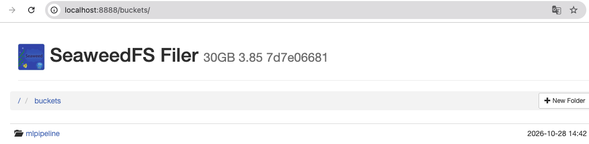
이미지 해설 (img003) : 브라우저 주소창이 localhost:8888/buckets/ 이고, 화면 제목은 SeaweedFS Filer 30GB 3.85 …, 경로 표시는 / / buckets, 오른쪽에 + New Folder 버튼이 있습니다. 목록에는 폴더 mlpipeline 하나뿐이고 날짜는 2026-10-28 14:42 입니다.
- 풀이: 저장소 안의 "버킷" 하나가 여기서는 "폴더" 하나로 보입니다.
mlpipeline은 KFP 가 파이프라인 작업 사이에 파일을 주고받기 위해 설치 때 미리 만들어 둔 버킷입니다. 아직 우리가 만들 업무용 버킷 5개가 없는 forward 직후의 처음 상태입니다. - 여기서 확인할 것: ① 이 화면이 열리면 forward 와 저장소가 정상이라는 뜻입니다. ②
SeaweedFS Filer … 3.85가 A-2 에서 본chrislusf/seaweedfs:3.85와 일치합니다. ③ 이 화면이 열려도 S3 계정(minio/minio123) 인증이 성공했다는 증명은 아니므로 A-4 의aws s3 ls로 따로 확인합니다.
아래 위젯으로 "어떤 PC 주소가 어떤 서비스로 이어지는지"를 눌러서 확인해 보세요.
▶ port-forward 지도: 버튼을 눌러 보세요
버튼을 누르면 설명이 여기에 나옵니다.
🔍 확인 방법
[PC 터미널 1] (forward 창 말고 다른 창)에서 실행합니다.
# [참고용] 브라우저 주소창에 직접 입력해 확인합니다. 터미널에는 입력하지 않습니다.
# http://localhost:8888/buckets/ (mlpipeline 폴더가 보이는지)
# http://localhost:5000 (왼쪽 위에 mlflow 3.0.0)
# http://localhost:8080 (Pipelines, Experiments, Runs 메뉴)
# 터미널에서 간단히 점검 (응답 코드 확인)
curl -s -o /dev/null -w "%{http_code}\n" http://localhost:5000
curl -s -o /dev/null -w "%{http_code}\n" http://localhost:8080
- 정상이면
200같은 숫자가 나옵니다. 연결 자체가 안 되면000이 나옵니다. - S3 API(9000)와 Redis(6379)는 이 단계에서는 화면이 없으므로 A-4 의
aws s3 ls(S3), B~C 단계(Redis)에서 확인합니다.
참고로 bookenv.py forward 는 127.0.0.1 에만 바인딩하며 터널이 끊기면 다시 여는 것으로 알려져 있습니다(직접 검증하지는 않았습니다). 따라서 같은 네트워크의 다른 PC 에서는 접속할 수 없고, 배너가 출력됐다고 해서 다섯 터널이 모두 정상 연결된 것은 아닙니다.
⚠ 자주 나는 오류
| 증상 | 원인 | 해결 |
|---|---|---|
localhost:5000 이 안 열리거나 MLflow 가 아닌 응답 |
macOS AirPlay Receiver 가 5000 포트 점유 | 시스템 설정에서 AirPlay 수신 끄기 후 forward 재실행. 대안으로 포트를 바꾸려면 forward 로컬 포트와 노트북의 MLflow 주소를 모두 함께 바꿔야 함(이후 문서가 모두 5000 기준이라 권하지 않음) |
| forward 가 포트 사용 중이라며 실패 | 9000, 8888, 5000, 6379, 8080 중 이미 쓰는 프로그램이 있음 (예: 이전에 띄운 forward, 로컬 Jupyter, 로컬 MinIO/Redis) | lsof -nP -iTCP:<PORT> -sTCP:LISTEN 로 점유 프로세스 확인 후 종료. 이전 forward 창이 남아 있으면 Ctrl+C |
| 노트북에서 "연결 오류" | forward 터미널을 닫았거나 Ctrl+C 를 누름 |
python bookenv.py forward 를 다시 실행 |
로그에 Reconnecting 이 반복 |
대상 Pod 재시작 또는 터널이 끊겼다 다시 맺는 중 | 잠시 대기. 계속되면 python bookenv.py status 로 Pod 상태 확인 |
http://localhost:9000 을 브라우저로 열었더니 화면 대신 오류/XML |
정상 (S3 API 는 화면이 없는 서비스) | aws s3 ls 로 확인 (A-4) |
localhost:6379 를 브라우저로 열었더니 이상한 화면 |
Redis 는 HTTP 가 아님 | 브라우저로 열지 않음 |
A-4. 버킷 만들기
🎯 목적
B~E 단계의 코드가 이름을 고정해서 사용하는 S3 버킷을 만듭니다. 버킷은 "저장소 안의 최상위 서랍"이고, 데이터셋·모델·피처 레지스트리·예측 결과를 서랍별로 나눠 둡니다.
NoSuchBucket 오류가 납니다. 여섯 번째 서랍 mlpipeline 은 KFP 가 설치할 때 이미 짜 둔 것입니다.📋 사전조건
- A-2 완료(저장소 Pod 가
Running). - 생성(
python bookenv.py buckets)은 클러스터 안에서 Job 이 실행되므로 forward 가 필요 없습니다. - 확인(
aws s3 ls)은 PC 에서localhost:9000으로 접속하므로 A-3 forward 가 켜져 있어야 합니다. 또 PC 에 aws cli 가 설치되어 있어야 합니다(선택). - 이 단계의 명령은
[PC 터미널 1](<ENV_ROOT>폴더)에서 실행합니다.
⚠ 바로잡기: 본문 제목은 "실습에 사용할 6개 버킷 생성" 입니다. 그러나 아래buckets.yaml의for bucket in …루프가 만드는 이름을 직접 세면 5개(mlflow-datasets,mlflow-artifacts,feature-registry,feature-data-sets,inference-datasets)입니다. 최종 목록이 6개인 이유는 KFP 가 설치 때 이미 만들어 둔mlpipeline이 함께 보이기 때문입니다. 정정: 생성하는 것은 5개, 확인했을 때 보이는 것은 6개(= 5 + mlpipeline). 또한 "생성"은python bookenv.py buckets(클러스터 내부 Job, forward 불필요), "확인"은aws s3 ls(forward 필요)로 서로 다른 방법임을 구분하세요.
⌨ 명령어
(1) 생성: 버킷 매니페스트 읽기 + buckets 실행
[PC 터미널 1]
# 실습에 사용할 버킷 생성 (원문 제목: "6개 버킷" → 실제 생성 루프 대상은 5개)
cat manifests/services/buckets.yaml
파일 내용입니다 (... 는 줄인 부분). 클러스터 안에서 도는 Job 의 스크립트이며 직접 입력하는 것이 아닙니다.
...
args:
- |
for bucket in mlflow-datasets mlflow-artifacts feature-registry feature-data-sets inference-datasets; do
aws --endpoint-url http://minio-service:9000 s3api head-bucket --bucket "$bucket" 2>/dev/null \
|| aws --endpoint-url http://minio-service:9000 s3api create-bucket --bucket "$bucket"
done
aws --endpoint-url http://minio-service:9000 s3 ls
buckets.yaml 의 스크립트를 한 줄씩 풀면 다음과 같습니다.
| 줄 | 뜻 |
|---|---|
for bucket in A B C D E; do … done |
5개 이름을 하나씩 $bucket 에 넣어 반복 |
aws … s3api head-bucket --bucket "$bucket" 2>/dev/null |
버킷이 이미 있는지 조용히(에러 숨김) 확인 |
\|\| aws … s3api create-bucket --bucket "$bucket" |
앞 확인이 실패(없음)했을 때만 생성. 그래서 여러 번 실행해도 안전(이미 있으면 건너뜀) |
aws … s3 ls |
마지막에 전체 버킷 목록 출력 |
--endpoint-url http://minio-service:9000 |
Pod 안에서 쓰는 주소(서비스 이름). PC 의 localhost:9000 과 다름 |
이 스크립트는 bookenv.py 가 클러스터 안에서 Job(한 번 실행하고 끝나는 Pod)으로 돌립니다.
# python 이 없으면(macOS·Ubuntu) 아래 python 을 python3 로 바꿔 입력
python bookenv.py buckets
출력 (수강생이 기록한 과거 실행 결과). ... 는 줄인 부분이고, 날짜·시각은 실행할 때마다 다릅니다.
...
2026-10-28 15:14:25 feature-data-sets
2026-10-28 15:14:24 feature-registry
2026-10-28 15:14:26 inference-datasets
2026-10-28 15:14:24 mlflow-artifacts
2026-10-28 15:14:23 mlflow-datasets
2026-10-28 14:42:41 mlpipeline
- 위 6줄이 Job 의 마지막
s3 ls결과입니다(수강생이 기록한 과거 실행 결과). mlpipeline만 시각이 14:42 로 더 이른 것은 KFP 설치 때 이미 만들어졌기 때문입니다. 나머지 5개는 같은 15:14 대에 생성되었습니다.
(2) 확인(선택): PC 의 aws cli 로 조회
S3 호환 저장소라서 aws cli 의 s3 명령으로 그대로 조회할 수 있습니다. 이 방식은 PC → localhost:9000 이므로 forward 가 필요합니다.
[PC 터미널 1] (새 터미널이면 export 를 다시 해야 합니다)
# 혹은 aws cli 가 설치되어 있다면, S3 호환되므로 aws cli 의 s3 명령으로 버킷 조회
export "AWS_ACCESS_KEY_ID"="minio"
export "AWS_SECRET_ACCESS_KEY"="minio123"
export "AWS_ENDPOINT_URL"="http://localhost:9000"
aws s3 ls
2026-10-29 00:14:25 feature-data-sets
2026-10-29 00:14:24 feature-registry
2026-10-29 00:14:26 inference-datasets
2026-10-29 00:14:24 mlflow-artifacts
2026-10-29 00:14:23 mlflow-datasets
2026-10-28 23:42:41 mlpipeline
🔧 본인 환경에 맞게 교체: <PC_S3_URL> = 소스 예시http://localhost:9000(위AWS_ENDPOINT_URL값. PC 에서만 쓰는 주소이고 Pod 안에서는 쓰지 않음).AWS_ACCESS_KEY_ID=minio,AWS_SECRET_ACCESS_KEY=minio123은 실습용 값, 실제 환경에서는 변경. 환경 변수 대신 명령에 직접 주소를 줄 수도 있습니다:aws --endpoint-url "<PC_S3_URL>" s3 ls. 리전 오류가 나면export AWS_DEFAULT_REGION=us-east-1을 추가합니다(Pod 용 runtime 이미지가us-east-1을 쓰는 것에 맞춘, 덧붙인 값입니다).
두 출력의 시각이 9시간 다른 것(15:14 ↔ 00:14, 14:42 ↔ 23:42)은 같은 시점을 서로 다른 시간대로 보여 주기 때문으로 보입니다(클러스터 안 Job 은 UTC 기준, PC 는 로컬 시간대 기준으로 추정되지만 정확한 원인은 확인되지 않았습니다). 버킷 이름과 개수가 같으면 정상입니다.
참고로 터미널을 새로 열면 export 한 값은 사라집니다. C~D 단계에서도 같은 변수가 필요하면 "같은 터미널에서 이어서 실행하거나, 새 터미널이면 위 export 를 다시 실행" 하세요.
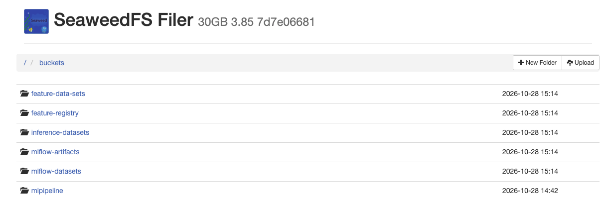
이미지 해설 (img004) : 같은 SeaweedFS Filer 화면(/buckets)에 이제 폴더가 6개 보입니다. 위에서부터 feature-data-sets, feature-registry, inference-datasets, mlflow-artifacts, mlflow-datasets(모두 2026-10-28 15:14), 그리고 mlpipeline(2026-10-28 14:42). 오른쪽 위에는 + New Folder 와 Upload 버튼이 있습니다.
- 풀이: img003(처음엔
mlpipeline하나)과 비교해 5개가 새로 생겼습니다. 이것이buckets가 성공했다는 시각적 증거입니다. Filer 에서+ New Folder로 같은 이름을 하나씩 만들 수도 있다고 알려져 있지만(원 가이드 방식), 오타 위험이 커서bookenv.py buckets를 권장합니다. - 여기서 확인할 것: 6개 이름이 위 로그·표와 글자 하나까지 같은지(특히 하이픈
-, 밑줄_아님).
🗂 버킷별 역할
| 버킷 | 저장할 것 | 사용하는 단계 |
|---|---|---|
mlflow-datasets |
학습, 테스트 CSV | B |
mlflow-artifacts |
모델, 그래프, column_list.pkl |
B, D |
feature-data-sets |
피처 원천 parquet와 예측 대상 entity_df.parquet |
C, D |
feature-registry |
Feast Registry와 설정 파일 | C, D |
inference-datasets |
최종 예측 parquet | D, E |
mlpipeline |
KFP 작업 사이에 전달할 아티팩트 | KFP가 준비 |
아래 위젯에서 단계를 골라 보면 그 단계가 어느 서랍을 여는지 볼 수 있습니다.
▶ 버킷 서랍장: 단계 버튼을 눌러 보세요
학습·테스트 CSV
모델·그래프·pkl
피처 parquet, entity_df
Feast Registry
최종 예측 parquet
KFP 작업 간 아티팩트
단계 버튼을 누르면 그 단계가 쓰는 서랍만 밝게 보입니다.
✅ 기대 결과
buckets의 마지막s3 ls와 PC 의aws s3 ls모두 6개 이름:feature-data-sets,feature-registry,inference-datasets,mlflow-artifacts,mlflow-datasets,mlpipeline.- 브라우저
http://localhost:8888/buckets/에도 폴더 6개(img004).
🔍 확인 방법
aws s3 ls | wc -l # 6 이 나오면 6개 (PC, forward 필요)
브라우저 http://localhost:8888/buckets/ 에서 6개 폴더가 보이는지도 확인합니다. aws s3 ls 가 응답하면 S3 계정(minio/minio123)으로 실제 S3 API 접근까지 된다는 점에서 Filer 화면 확인보다 한 단계 더 확실한 확인입니다.
⚠ 자주 나는 오류
| 증상 | 원인 | 해결 |
|---|---|---|
이후 단계에서 NoSuchBucket |
버킷 이름 오타, 또는 buckets 를 실행하지 않음 |
aws s3 ls 로 이름 대조 후 python bookenv.py buckets 재실행(이미 있는 것은 건너뜀) |
이름에 밑줄을 씀 (feature_data_sets) |
책 본문의 일부 표기가 밑줄이지만 오기 | 하이픈이 맞음: feature-data-sets |
aws s3 ls 가 연결 거부 / timeout |
forward(localhost:9000) 가 꺼짐 |
A-3 의 forward 창 확인 후 재실행 |
aws s3 ls 가 AWS 실제 서비스로 가려다 인증 오류 |
AWS_ENDPOINT_URL 미지정 (새 터미널에서 export 를 안 함) |
위 export 3줄을 다시 실행하거나 --endpoint-url "<PC_S3_URL>" 사용 |
aws: command not found |
aws cli 미설치 (이 확인 방법은 선택) | 설치하지 않아도 buckets 출력과 Filer 화면으로 확인 가능 |
buckets 가 실패 |
저장소 Pod 가 아직 준비 전 | python bookenv.py status 로 kubeflow 의 minio-… 가 1/1 Running 인지 확인 후 재실행 |
A-5. 책 코드와 가상환경
🎯 목적
저자 코드(chapter-4, chapter-5)를 upstream/ 폴더에 받고, Python 3.11 가상환경 .venv-book 을 만들어 실습 패키지(mlflow, feast, kfp, scikit-learn 등)를 설치합니다.
- 가상환경(venv): 이 프로젝트 전용으로 패키지를 따로 설치해 두는 격리된 Python 공간. PC 의 다른 Python 프로그램과 버전이 섞이지 않게 합니다.
- uv: pip 보다 빠른 Python 패키지·가상환경 관리 도구입니다.
📋 사전조건
[PC 터미널 1]에서<ENV_ROOT>폴더 안.git, Python 3.11,uv사용 가능(uv --version으로 설치되어 있는지 확인하세요. 없다면 A-0 의 도구 표에 있는 공식 설치 링크로 설치합니다).- 폴더 구조 가정:
<ENV_ROOT>/book/에requirements.txt가 있고(저장소에 포함),upstream/아래에 저자 코드를 받습니다. 이미upstream/chapter-4폴더가 있으면git clone이 실패하므로 기존 폴더를 지우지 말고 그대로 사용합니다.
⌨ 명령어
[PC 터미널 1]
# 노트북과 스크립트가 읽을 저자 코드를 upstream/에 받는다.
git clone https://github.com/practical-mlops/chapter-4.git upstream/chapter-4
git clone https://github.com/practical-mlops/chapter-5.git upstream/chapter-5
# 가상환경을 활성화
uv venv .venv-book --python 3.11 --seed
source .venv-book/bin/activate # macOS와 Linux의 활성화 명령
# 패키지 설치
cat book/requirements.txt
uv pip install --python .venv-book -r book/requirements.txt
# 버전을 확인 : 3.0.0 0.40.1 2.9.0 1.5.2가 나오면 된다.
python -c "import mlflow, feast, kfp, sklearn; print(mlflow.__version__, feast.__version__, kfp.__version__, sklearn.__version__)"
버전 확인 명령이 아래 한 줄을 출력하면 정상입니다 (버전 숫자는 위 requirements.txt 에 따라 다를 수 있습니다).
3.0.0 0.40.1 2.9.0 1.5.2
명령별 풀이:
| 명령 | 하는 일 |
|---|---|
git clone … upstream/chapter-4 |
책 4장 저자 코드를 upstream/chapter-4 에 받음 (B-1 첫 셀이 upstream/chapter-4/data/income_data.csv 를 찾음) |
git clone … upstream/chapter-5 |
책 5장 저자 코드 (D 단계에서 사용) |
uv venv .venv-book --python 3.11 --seed |
Python 3.11 로 .venv-book 가상환경 생성. --seed 는 pip 등 기본 도구도 함께 넣는 옵션 |
source .venv-book/bin/activate |
가상환경 활성화 (macOS / Linux). 성공하면 프롬프트 앞에 (.venv-book) 가 붙음 |
cat book/requirements.txt |
설치할 패키지 목록 확인 (눈으로 확인하는 용도) |
uv pip install --python .venv-book -r book/requirements.txt |
그 목록을 .venv-book 안에 설치 |
python -c "import … print(…)" |
핵심 4개 패키지 버전 출력 |
🔧 본인 환경에 맞게 교체: <VENV_NAME> = 원 가이드의 예시.venv-book(원하는 이름을 써도 되며, 이후 명령의source <VENV_NAME>/bin/activate와uv pip install --python <VENV_NAME>에 같이 반영). <BOOK_PYTHON_VERSION> =3.11. <CH4_ROOT> =upstream/chapter-4, <CH5_ROOT> =upstream/chapter-5. 확인:python -c "import sys; print(sys.executable)"가<ENV_ROOT>/.venv-book/...를 가리키는지.
참고로 Windows 는 활성화 명령이 다릅니다. PowerShell 은.\.venv-book\Scripts\Activate.ps1, cmd 는.venv-book\Scripts\activate를 쓰는 것이 일반적입니다(일반적으로 알려진 방법이며 직접 확인하지는 않았습니다). 또 이후 단계의export,watch,wc,sed같은 bash 명령은 PowerShell 에서 그대로 동작하지 않으므로 WSL2(Ubuntu) 안에서 전체 실습을 진행하기를 권합니다. 다만 WSL2 와 Docker 를 연동하는 방법은 직접 확인하지 않았습니다.
✅ 기대 결과
3.0.0 0.40.1 2.9.0 1.5.2
네 숫자는 순서대로 mlflow 3.0.0 / feast 0.40.1 / kfp 2.9.0 / scikit-learn 1.5.2 입니다. 이 버전 조합이 맞아야 이후 노트북과 파이프라인이 문서대로 동작합니다.
🔍 확인 방법
python -c "import sys; print(sys.executable)" # .venv-book 안의 python 인지
python -c "import mlflow, feast, kfp, sklearn; print(mlflow.__version__, feast.__version__, kfp.__version__, sklearn.__version__)"
ls upstream/chapter-4/data/income_data.csv # B-1 첫 셀이 찾는 파일
git -C upstream/chapter-4 rev-parse HEAD # 어느 커밋의 코드인지 기록(선택)
⚠ 자주 나는 오류
| 증상 | 원인 | 해결 |
|---|---|---|
나중에 B-1 첫 셀에서 AssertionError |
upstream/chapter-4/data/income_data.csv 가 없음 (clone 위치가 다르거나 clone 을 안 함) |
이 단계의 git clone 위치(<ENV_ROOT>/upstream/chapter-4)부터 확인 |
fatal: destination path 'upstream/chapter-4' already exists |
이미 clone 했음 | 기존 폴더를 지우지 말고 내용 확인 후 그대로 사용 |
uv: command not found |
uv 가 설치되어 있지 않거나, 방금 설치해서 현재 터미널이 아직 모름 | A-0 의 도구 표에 있는 공식 링크로 설치한 뒤 터미널을 새로 열어 다시 시도 |
uv venv --python 3.11 이 Python 3.11 을 못 찾음 |
PC 에 3.11 이 없음 | A-0 의 "3. Python 3.11 준비" 대로 uv python install 3.11 을 먼저 실행한 뒤 다시 시도 |
| 버전 출력이 다름 (예: mlflow 2.x) | 가상환경이 활성화되지 않은 채 다른 Python 으로 실행 | source .venv-book/bin/activate 후 which python 이 .venv-book 안인지 확인 |
| 의존성 충돌 / wheel 을 못 찾음 | 잘못된 Python 버전 또는 패키지 조합 | 새 가상환경에서 book/requirements.txt(고정된 목록)로 다시 설치. 임의로 패키지 버전을 올리지 않음 |
ModuleNotFoundError (노트북에서) |
Jupyter 를 가상환경 밖에서 실행 | A-6 에서 활성화한 터미널에서 jupyter lab 실행 |
A-6. JupyterLab
🎯 목적
JupyterLab 을 띄워 B~C 단계의 노트북(book/ch04, book/ch05)을 실행할 환경을 준비하고, 이후 터미널을 열 때마다 같은 가상환경을 활성화하는 습관을 만듭니다.
- JupyterLab: 브라우저에서 코드(노트북)를 셀 단위로 실행하는 개발 환경.
📋 사전조건
- A-5 에서
.venv-book이 만들어졌고 활성화된 터미널이어야 합니다(프롬프트에(.venv-book)). - A-3 의 forward 창은 계속 켜져 있어야 노트북에서 MLflow(
localhost:5000)·S3(localhost:9000)에 연결됩니다. - macOS(zsh) 라면 새 창에서 먼저
setopt interactive_comments를 입력합니다 (A-0 참고). 이 창은 앞 창의 설정을 물려받지 않습니다. - 8890 포트가 비어 있어야 합니다. 저장소 화면이 8888 을 쓰므로 Jupyter 는 8890 으로 띄워 겹치지 않게 합니다.
⌨ 명령어
[PC 터미널 3: Jupyter 창] 새 터미널을 하나 더 엽니다. 아래 블록의 cd·source 두 줄로 저장소 폴더로 이동하고 가상환경을 켠 다음 jupyter lab 을 실행합니다.
# 새 터미널이면 먼저 저장소 폴더로 이동하고 가상환경을 켠다 (macOS zsh 는 맨 먼저 setopt interactive_comments).
cd "<ENV_ROOT>"
source .venv-book/bin/activate
# 저장소 화면의 8888과 겹치지 않게 8890으로 실행한다.
# 출력된 http://127.0.0.1:8890/lab?token=... 주소를 열고 ch04 폴더의 노트북 두 개를 확인한다.
jupyter lab --notebook-dir book --port 8890
이 창은 Jupyter 서버가 점유하므로 그대로 켜 둡니다. 이후 명령은 PC 터미널 1 에서 칩니다. A 단계에서 쓰던 터미널 1 이 그대로 있다면 거기에서, 닫았다면 아래처럼 새로 열어 복구하세요.
[PC 터미널 1] (닫았거나 새로 열었을 때만)
# 새로 연 터미널은 앞 창의 설정을 물려받지 않습니다. 폴더 이동과 가상환경 활성화를 다시 합니다.
cd "<ENV_ROOT>"
source .venv-book/bin/activate
🔧 본인 환경에 맞게 교체: <BOOK_DIR> =book(노트북 폴더,<ENV_ROOT>/book). <JUPYTER_PORT> =8890. <ENV_ROOT> = 환경 저장소 폴더. 명령 형태로 쓰면jupyter lab --notebook-dir "<BOOK_DIR>" --port "<JUPYTER_PORT>". 새 터미널의cd "<ENV_ROOT>"는 원 가이드에는 없고 따로 덧붙인 줄입니다(상대 경로.venv-book이 맞도록).
✅ 기대 결과
- 터미널에
http://127.0.0.1:8890/lab?token=...형태의 주소가 출력됩니다.token값은 실행할 때마다 달라지므로 본인 터미널에 출력된 주소를 그대로 복사해서 사용합니다(이 문서에 적힌 값으로 고정되어 있지 않습니다). - 브라우저로 그 주소를 열면 JupyterLab 화면이 나오고, 왼쪽 파일 목록에
ch04,ch05폴더와requirements.in,requirements.txt가 보입니다. 원 가이드는 "ch04 폴더의 노트북 두 개"를 확인하라고 안내합니다.
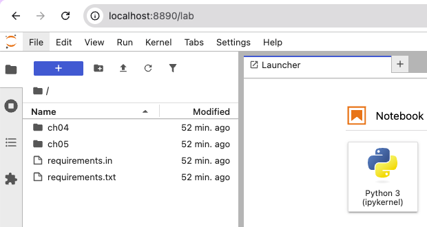
이미지 해설 (img005) : 브라우저 주소창이 localhost:8890/lab 이고 상단에 File / Edit / View / Run / Kernel / Tabs / Settings / Help 메뉴가 있는 JupyterLab 화면입니다. 왼쪽 파일 브라우저의 경로는 / 이며 ch04, ch05 폴더와 requirements.in, requirements.txt 파일이 있고(Modified 는 "52 min. ago"), 오른쪽 Launcher 탭에는 Python 3 (ipykernel) 노트북 타일이 보입니다.
- 풀이: 루트(
/)가book폴더라는 뜻입니다.--notebook-dir book이 적용되어book안의 내용이 최상위로 보이는 것입니다. 주소의 8890 이 8888(저장소 화면)과 겹치지 않는 포트라는 것도 확인됩니다.Python 3 (ipykernel)은 노트북이 사용할 커널(코드를 실제로 실행하는 Python)입니다. - 여기서 확인할 것: ① 주소 포트
8890. ②ch04폴더 안에 노트북 두 개가 있는지(더블클릭해서 확인). ③ 노트북을 열었을 때 커널이.venv-book의 Python 인지(B-1 첫 셀에서sys.executable로 확인하게 됩니다).
🔍 확인 방법
- 브라우저에서 출력된
127.0.0.1:8890/lab?token=...주소가 열리는지. ch04폴더를 열어 노트북 두 개를 확인.- 참고로 노트북 첫 셀에서
import sys; print(sys.executable)를 실행해 경로가<ENV_ROOT>/.venv-book/...인지 확인해 보세요. 다른 Python 이면 mlflow 등을 찾지 못합니다.
⚠ 자주 나는 오류
| 증상 | 원인 | 해결 |
|---|---|---|
노트북에서 ModuleNotFoundError: mlflow 등 |
가상환경이 비활성 상태에서 jupyter lab 을 실행했거나 다른 Python 커널 선택 |
터미널을 닫고 source .venv-book/bin/activate 후 다시 실행. 노트북 상단 커널이 Python 3 (ipykernel) 인지 확인 |
| 8890 이 이미 사용 중이라며 다른 포트(8891 등)로 뜸 | 이전 Jupyter 가 남아 있음 | 터미널이 출력한 실제 URL 을 사용하거나 이전 Jupyter 를 종료 |
| 기본 포트 8888 에서 충돌 | 저장소 화면(Filer)이 8888 을 쓰는 forward 와 충돌 | 원 가이드대로 --port 8890 사용 |
| 주소를 열었는데 토큰을 물음 | token 이 없는 주소로 접속 | 터미널에 출력된 ...lab?token=... 전체를 복사해서 열기 |
| 노트북에서 "연결 오류" | forward 창이 꺼짐 | A-3 의 python bookenv.py forward 다시 실행 |
새 터미널에서 python 이 다른 버전 |
새 창은 가상환경이 자동 활성화되지 않음 | 새 창마다 source .venv-book/bin/activate |
check 통과 ② status 에서 Pod 17개 1/1 Running(kubeflow 14 + mlflow 1 + postgres 1 + redis 1) ③ forward 창 켜짐, localhost:5000 과 8080 이 열림 ④ aws s3 ls 에 버킷 6개 ⑤ 버전 출력이 3.0.0 0.40.1 2.9.0 1.5.2 ⑥ localhost:8890/lab 이 열리고 ch04 가 보임.B 개요: MLflow 는 실험 노트
MLflow 는 학습 알고리즘이 아닙니다. 학습한 결과를 기록하고, 나중에 다시 찾을 수 있게 해 주는 도구입니다. 노트북에서 start_run() 으로 기록 범위를 열고, 그 안에서 fit() 으로 학습한 뒤, 메트릭(점수)과 모델을 남깁니다.
이번 실습의 MLflow 개념 6가지
| 개념 | 역할 | 이번 실습 | 노트 비유 |
|---|---|---|---|
| Experiment | 관련 run 을 묶음 | income-classifier |
노트 한 권의 표지 |
| Run | 한 번의 실행 기록 | 데이터 탐색, Decision Tree, Random Forest, XGBoost | 노트의 한 페이지 |
| Parameter | 실행 설정 | 트리 깊이 등 모델 설정 | 페이지 위쪽의 "실험 조건" |
| Metric | 측정 결과 | roc_auc_score_test, 정확도 |
페이지 아래쪽의 "결과 점수" |
| Artifact | 실행에서 남긴 파일 | 모델, 그래프, column_list.pkl |
페이지에 붙인 첨부 파일 |
| Model Registry | 관리할 모델의 이름과 버전 | random-forest-classifier v1 |
정식 채택 목록 |
개념을 더 자세히 알고 싶으면 → 이론편(CH4) 참고. 여기서는 "노트북 셀을 어떤 순서로 실행하고, 무엇을 눈으로 확인하는가" 에 집중합니다.
B 단계 전체 그림
아래 첫 번째 그림은 누가 누구에게 말을 거는가(구성 요소 관계), 두 번째 그림은 무엇을 어떤 순서로 하는가(단계 흐름)입니다.
flowchart LR NB["JupyterLab 노트북 01_mlflow_tracking"] -->|"기록 요청 PC 주소 localhost 5000"| MLF["MLflow 서버"] NB -->|"분할한 CSV 업로드 localhost 9000"| DS["버킷 mlflow-datasets"] MLF -->|"실험 run 메타데이터"| PG["PostgreSQL"] MLF -->|"그래프 모델 column_list.pkl"| ART["버킷 mlflow-artifacts"] MLF -->|"모델 이름과 버전"| REG["Model Registry"]
그림 읽는 법: 노트북은 두 군데로 말을 겁니다. MLflow 서버(기록 요청)와 S3 호환 저장소(데이터 CSV 업로드). MLflow 서버는 숫자·이름 같은 메타데이터는 PostgreSQL 에, 파일은 mlflow-artifacts 버킷에 나눠 저장합니다. 이 그림의 localhost 는 모두 내 PC 에서의 주소이고, python bookenv.py forward 가 켜져 있어야 닿습니다.
flowchart TD S1["B-1 노트북 열기 커널 확인 준비 셀 실행"] --> S2["B-2 데이터 탐색 그래프 저장 첫 run eda"] S2 --> S3["B-3 데이터 분할 후 Decision Tree Random Forest XGBoost 학습"] S3 --> S3b["run 4개 비교 ROC AUC"] S3b --> S4["B-4 가장 좋은 run 을 모델 레지스트리에 등록"] S4 --> S5["버전을 Production 으로 지정 5장 추론이 이 모델을 찾음"]
📋 B 전체 공통 사전조건
- forward 창이 켜져 있어야 합니다:
[PC 터미널 2: forward 창]에서python bookenv.py forward실행 중 (A-3). 이 단계에서는 특히 9000(S3) 과 5000(MLflow) 이 필요합니다. - 버킷
mlflow-datasets,mlflow-artifacts가 있어야 합니다 (A-4). - 노트북 커널이
.venv-book가상환경이어야 합니다 (A-6). - 노트북은 저자의
chapter-4/mlflow/data_exploration_and_model_training.ipynb를 바탕으로 만들었고, 환경에 맞춰 추가한 셀은 제목에[환경]이 붙어 있습니다.
⚠ macOS 사용자 주의: macOS 의 AirPlay Receiver 가 5000 포트를 이미 쓰고 있어 MLflow forward 가 실패하거나 엉뚱한 응답이 오는 경우가 알려져 있습니다. A-3 에서 forward 가 5000 포트 때문에 실패했다면 그 절의 안내를 먼저 확인하세요.
🔧 본인 환경에 맞게 교체 (이 파트의 B 단계 공통)
<PC_S3_URL>=http://localhost:9000: PC 에서 S3(SeaweedFS)에 접속하는 주소. forward 의 9000 포트와 같아야 합니다.
<PC_MLFLOW_URL>=http://localhost:5000: PC 에서 MLflow 에 접속하는 주소. 브라우저로 열어 MLflow 화면이 나오면 맞는 값입니다.
<ENV_ROOT>=ml-platform-book-env: 실습 저장소를 clone 한 폴더. 확인: 그 폴더에서pwd.
<VENV_NAME>=.venv-book: 가상환경 폴더 이름. 확인:which python.
S3 키minio/minio123은 실습용 값, 실제 환경에서는 변경해야 합니다.
이 가이드에 나오는 점수·행 수·시각은 모두 수강생이 기록한 과거 실행 결과입니다. 데이터 분할과 학습이 무작위라 내 화면의 숫자는 조금 달라도 정상입니다.
B-1. 노트북과 준비 셀
🎯 목적
학습 노트북을 열고, 데이터 CSV 의 위치와 S3 접속 정보(환경변수) 를 준비하는 앞쪽 셀 네 개를 실행합니다. 뒤의 모든 셀이 이 준비에 의존합니다.
assert 가 바로 알려 줍니다.📋 사전조건
- A-3 의 forward 가 켜져 있음 (9000, 5000), A-4 의 버킷 생성 완료, A-5 에서 책 코드(
upstream/chapter-4)를 내려받음. - JupyterLab 이
.venv-book을 활성화한 터미널에서 실행됨 (A-6).
⌨ 명령어
[JupyterLab 노트북 셀] — 터미널 명령은 없고, 노트북 안에서 셀을 실행합니다.
- JupyterLab 에서
ch04/01_mlflow_tracking.ipynb를 엽니다. 오른쪽 위의 커널 표시가Python 3 (ipykernel)인지 확인합니다. JupyterLab 을.venv-book에서 실행했다면 이 커널이 곧.venv-book환경입니다.
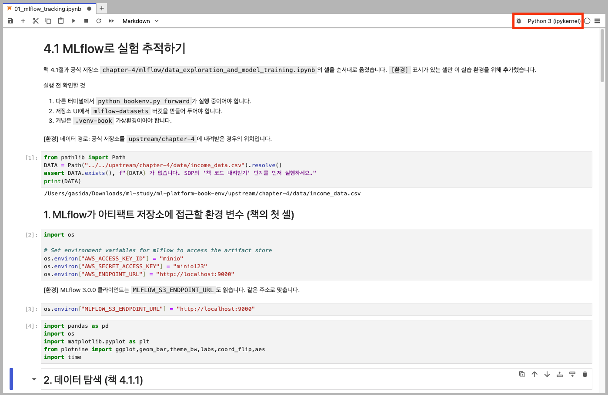
이미지 해설: JupyterLab 에서 01_mlflow_tracking.ipynb 를 연 첫 화면입니다. 빨간 박스가 커널 표시(Python 3 (ipykernel)) 입니다. 제목 "4.1 MLflow로 실험 추적하기" 아래에 "실행 전 확인할 것" 세 가지(① 다른 터미널에서 python bookenv.py forward 실행 중, ② 저장소 UI 에서 mlflow-datasets 버킷 생성, ③ 커널은 .venv-book 가상환경)가 적혀 있고, 그 아래에 번호 [1]~[4] 셀이 보입니다.
[1]: 데이터 CSV 경로를 만들고 파일이 있는지assert로 확인한 뒤 경로를 출력[2]:AWS_ACCESS_KEY_ID,AWS_SECRET_ACCESS_KEY,AWS_ENDPOINT_URL환경변수 설정 (책의 첫 셀)[3]:[환경]셀 — MLflow 3.0.0 클라이언트는MLFLOW_S3_ENDPOINT_URL도 읽으므로 같은 주소로 설정[4]:pandas,matplotlib,plotnine,time등 import
여기서 확인할 것: 우측 위 커널이 Python 3 (ipykernel) 인가, 그리고 [1] 셀 출력으로 CSV 의 절대 경로가 나오는가. (그림의 /Users/<사용자이름>/... 는 원 노트를 쓴 수강생의 PC 경로이니 내 화면에서는 내 경로가 나옵니다.)
화면 속 셀 내용을 글로 옮기면 다음과 같습니다 (환경변수 값은 실습용 예시).
# [1] 데이터 경로 준비 (노트북 위치 book/ch04 기준 상대 경로)
from pathlib import Path
DATA = Path("../../upstream/chapter-4/data/income_data.csv").resolve()
assert DATA.exists(), f"{DATA} 가 없습니다. SOP의 '책 코드 내려받기' 단계를 먼저 실행하세요."
print(DATA)
# [2] MLflow 가 아티팩트 저장소에 접근할 환경 변수 (책의 첫 셀)
import os
os.environ["AWS_ACCESS_KEY_ID"] = "minio" # 실습용 값, 실제 환경에서는 변경
os.environ["AWS_SECRET_ACCESS_KEY"] = "minio123" # 실습용 값, 실제 환경에서는 변경
os.environ["AWS_ENDPOINT_URL"] = "http://localhost:9000"
# [3] [환경] MLflow 3.0.0 클라이언트는 MLFLOW_S3_ENDPOINT_URL 도 읽음. 같은 주소로 맞춤
os.environ["MLFLOW_S3_ENDPOINT_URL"] = "http://localhost:9000"
# [4] import
import pandas as pd
import os
import matplotlib.pyplot as plt
from plotnine import ggplot, geom_bar, theme_bw, labs, coord_flip, aes
import time
- 맨 위부터
import pandas as pd ...가 있는 셀까지 네 셀을Shift+Enter로 차례로 실행합니다. 셀을 실행하면 결과가 아래에 나오고 다음 셀로 커서가 넘어갑니다.
🔧 본인 환경에 맞게 교체
<INCOME_CSV_PATH>=../../upstream/chapter-4/data/income_data.csv: 노트북(book/ch04) 위치에서 본 CSV 의 상대 경로. 책 코드를 다른 곳에 받았다면 이 경로를 바꿔야 합니다. 확인: 터미널에서ls <ENV_ROOT>/upstream/chapter-4/data에income_data.csv가 있는지.
<PC_S3_URL>=http://localhost:9000: 셀[2],[3]의 주소 두 곳. forward 포트를 바꿨다면 둘 다 같은 값으로.
S3 키minio/minio123은 실습용, 실제 환경에서는 변경.
셸에서
export한 환경변수는 이미 실행 중인 노트북 커널에 자동으로 전달되지 않습니다. 그래서 노트북 안에서os.environ[...]셀을 따로 실행하는 것입니다. 참고로 커널을 재시작하면 환경변수 셀을 다시 실행해야 합니다.
✅ 기대 결과
- 네 셀이 오류 없이 끝납니다 (
In [ ]가 번호로 바뀜). [1]셀 출력으로.../upstream/chapter-4/data/income_data.csv형태의 절대 경로가 나옵니다.
🔍 확인 방법
- 우측 위 커널 이름이
Python 3 (ipykernel)인가. - 출력된 경로가 실제로 내 PC 의
upstream/chapter-4/data/income_data.csv인가.
⚠ 자주 나는 오류
| 증상 | 원인 | 해결 |
|---|---|---|
첫 셀이 AssertionError: ... 가 없습니다 |
책 코드(upstream/chapter-4)가 예상 위치에 없음 |
A-5 에서 clone 한 위치 확인. 경로가 다르면 <INCOME_CSV_PATH> 수정 |
ModuleNotFoundError: No module named 'plotnine' 등 |
JupyterLab 을 가상환경 밖에서 실행했거나 커널이 다른 환경 | A-6 처럼 .venv-book 을 활성화한 터미널에서 jupyter lab 을 다시 실행하고 커널 확인 |
커널 목록에 Python 3 (ipykernel) 이 여러 개 |
환경이 여러 개 | 노트북 첫 셀에서 import sys; print(sys.executable) 를 실행해 경로에 <VENV_NAME> 이 들어 있는지 확인 |
B-2. 데이터 탐색과 첫 run
🎯 목적
학습 전에 데이터가 어떤 상태인지 확인하고(탐색), 그 결과 그래프를 MLflow 의 첫 번째 run(eda-...)에 첨부 파일(Artifact)로 남깁니다. 그리고 income-classifier 실험(노트 한 권)을 만들어 MLflow 와 연결이 되는지 확인합니다.
📋 사전조건
- B-1 완료 (환경변수 셀 실행됨).
- forward 의 5000 포트(MLflow)가 열려 있음 — 브라우저에서
<PC_MLFLOW_URL>(http://localhost:5000) 이 열려야 합니다. - 버킷
mlflow-artifacts가 있음 (그래프 PNG 가 여기에 저장됨).
⌨ 명령어
[JupyterLab 노트북 셀]
- 노트북의
2. 데이터 탐색아래 셀 세 개를Shift+Enter로 실행합니다.df.info()에 30,162행과 9개 열이 나오고, 변수별 그래프가categorical_variable_plots/폴더에 저장됩니다. - 노트북의
3. MLflow 연결아래 셀 세 개를 실행합니다.income-classifier실험이 만들어지고artifact_location='s3://mlflow-artifacts/1'이 출력됩니다.
[브라우저] — MLflow 화면(<PC_MLFLOW_URL>)
- MLflow 화면에서
income-classifier를 열어eda-로 시작하는 run 의 Artifacts 탭에 PNG 가 있는지 확인합니다.
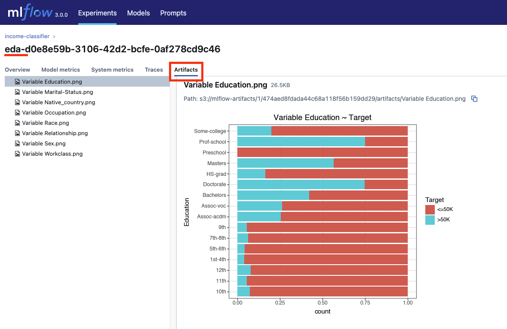
이미지 해설: MLflow 3.0.0 화면에서 income-classifier > eda-d0e8e59b-... run 을 연 모습입니다. 빨간 밑줄은 run 이름이 eda- 로 시작한다는 뜻이고, 빨간 박스는 Artifacts 탭입니다. 왼쪽 파일 목록에 Variable Education.png, Variable Marital-Status.png, Variable Native_country.png, Variable Occupation.png, Variable Race.png, Variable Relationship.png, Variable Sex.png, Variable Workclass.png — PNG 8개가 보입니다. 오른쪽은 선택한 Variable Education.png(26.5KB)로, 학력(Education)별로 <=50K(빨강)와 >50K(하늘색) 비율을 쌓은 가로 막대그래프입니다. 그 위의 Path: s3://mlflow-artifacts/1/<run ID>/artifacts/Variable Education.png 가 이 파일이 실제로 저장된 S3 위치입니다.
여기서 확인할 것: ① run 이름이 eda- 로 시작하는지, ② Artifacts 탭에 PNG 8개가 있는지, ③ Path: 가 s3://mlflow-artifacts/... 로 시작하는지. (그림에서 Doctorate·Prof-school 은 >50K 비율이 높고 Preschool 은 거의 <=50K 로, 학력과 정답이 관련 있음을 눈으로 볼 수 있습니다.)
🔧 본인 환경에 맞게 교체
<PC_MLFLOW_URL>=http://localhost:5000: 노트북의mlflow.set_tracking_uri(...)와 브라우저 주소가 같은 값이어야 합니다.
<MLFLOW_EXPERIMENT>=income-classifier: 실험 이름.<MLFLOW_EXPERIMENT_ID>=1은 자동 부여되는 번호라 환경마다 다를 수 있습니다 (출력의s3://mlflow-artifacts/1에서1이 그 번호).
<PLOT_DIR>=categorical_variable_plots/: 그래프 PNG 저장 폴더 (노트북 폴더 안).
왜 탐색 결과도 기록할까요? 탐색에서는 결측 표기와 범주별 표본 수, 정답 비율을 먼저 봅니다. 어떤 열을 썼는지뿐 아니라 데이터가 어떤 상태였는지도 기록해야 다음 실험과 비교할 수 있습니다.
✅ 기대 결과 (수강생이 기록한 과거 실행 결과)
df.info(): 30,162행, 9개 열 (정답 열Target포함).categorical_variable_plots/폴더(JupyterLab 왼쪽 파일 목록)에 변수별 PNG 생성.- 출력에
artifact_location='s3://mlflow-artifacts/1'. - MLflow 에
eda-...run 1개, Artifacts 에 PNG 8개.
🔍 확인 방법
- MLflow 화면 →
income-classifier→eda-run → Artifacts 탭 →Path:가s3://mlflow-artifacts/1/...인가. - 참고로 이미
income-classifier실험이 있는 상태에서 다시 실행하면 새 실험이 만들어지지 않고 기존 실험의artifact_location이 그대로 유지될 수 있습니다. 실험 번호가1이 아니어도 이상한 것이 아닙니다.
⚠ 자주 나는 오류
| 증상 | 원인 | 해결 |
|---|---|---|
연결 거부 / Connection refused / 타임아웃 (MLflow 연결 셀) |
forward 가 꺼졌거나 5000 포트가 막힘 | [PC 터미널 2: forward 창] 이 살아 있는지 확인. macOS 라면 AirPlay Receiver 가 5000 을 쓰는지 확인 (A-3) |
NoSuchBucket |
mlflow-artifacts 버킷이 없음 |
A-4 의 python bookenv.py buckets 로 만든 뒤 aws s3 ls 로 확인 |
| 그래프 저장 중 한글/폰트 경고 | 폰트 문제 | 경고만 나오고 PNG 가 저장된다면 실습에는 지장이 없는 경우가 많습니다 (환경마다 다를 수 있음) |
B-3. 데이터 분할과 모델 학습
먼저 알아 두세요: 이 절의 "CSV 빈 행 정정"은 선택입니다. 학습한 모델의 점수(AUC 등)와 B-4 이후 단계(모델 등록, Feast, KFP)는 이 정정과 상관없이 진행됩니다. 처음 실습이라면 정정을 건너뛰고 B-4 로 넘어가도 됩니다. 저장된 CSV 의 행 수가
24,130 / 6,034가 아닌 것이 걸린다면 아래 "직접 고치는 방법"을 따르세요.
🎯 목적
데이터를 학습용 80% / 평가용 20% 로 나누고, 세 가지 모델(Decision Tree, Random Forest, XGBoost)을 같은 데이터로 학습해 MLflow 에 기록합니다. 나눈 CSV 는 mlflow-datasets 버킷에 올라가고, 원-핫 열 순서 파일 column_list.pkl 은 모델과 함께 기록됩니다.
Occupation_ Sales=1, 나머지 직업 칸은 모두 0. 그래서 학습 데이터의 열이 8개에서 90여 개로 늘어납니다. 추론할 때도 같은 열을 같은 순서로 만들어야 하기 때문에 그 순서를 column_list.pkl 로 저장해 둡니다.📋 사전조건
- B-2 완료, forward 의 9000(S3)·5000(MLflow) 열림, 버킷
mlflow-datasets존재 (A-4). - 이 절의 순서는 (1) 노트북 셀 실행과 MLflow 화면 확인 → (1-b) Run ID 구하기 → (2) 올라간 CSV 확인 → (3) 행 수 비교 입니다. (3) 의 명령은 (1-b) 에서 구한
$TRAIN_RUN_ID변수를 쓰므로, 여기서는 미리 할 일이 없습니다. - (1-b)·(2)·(3) 은
aws명령을 씁니다. aws cli 를 설치하지 않았다면 (1-b) 의 Run ID 는 MLflow 화면의 Run ID 로 대신 구하고, (2)·(3) 은 저장소 웹 화면(http://localhost:8888/buckets/)에서 파일 이름과 크기만 눈으로 확인합니다 (A-0 의 aws cli 항목).
⌨ 명령어
(1) 노트북 셀 실행 [JupyterLab 노트북 셀]
4. 학습 데이터 분할과5. MinIO 버킷 확인셀을 실행합니다.mlflow-datasets bucket found가 나와야 합니다.
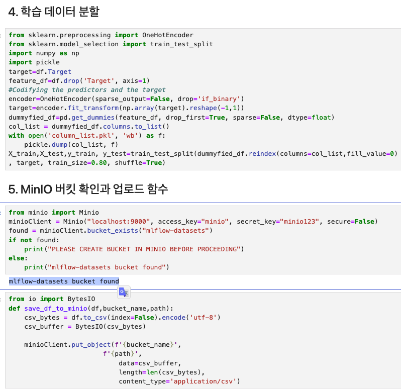
이미지 해설: 위쪽 4. 학습 데이터 분할 셀은 ① df 에서 정답 Target 을 떼어 feature_df 를 만들고, ② OneHotEncoder 로 정답을 숫자로 바꾸고, ③ pd.get_dummies(feature_df, drop_first=True, ...) 로 범주형 열을 원-핫으로 바꾸고, ④ 그 열 이름 목록 col_list 를 column_list.pkl 로 저장하고, ⑤ train_test_split(..., train_size=0.80, shuffle=True) 로 80:20 분할합니다. 아래쪽 5. MinIO 버킷 확인과 업로드 함수 셀은 Minio("localhost:9000", access_key="minio", secret_key="minio123", secure=False) 로 저장소에 접속해 mlflow-datasets 버킷이 있는지 확인하고, 없으면 PLEASE CREATE BUCKET IN MINIO BEFORE PROCEEDING, 있으면 파란 선택 영역의 mlflow-datasets bucket found 를 출력합니다. 그 아래 save_df_to_minio 함수는 DataFrame 을 CSV 로 바꿔 버킷에 올리는 도구입니다.
여기서 확인할 것: 출력이 mlflow-datasets bucket found 인가. (PLEASE CREATE BUCKET... 이면 A-4 로 돌아가 버킷을 만듭니다.)
6. Decision Tree,7. Random Forest,8. XGBoost셀을 차례로 실행합니다. 각각 약 1분 걸립니다.
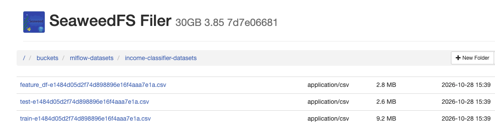
이미지 해설: SeaweedFS Filer(저장소 웹 화면)에서 buckets / mlflow-datasets / income-classifier-datasets 폴더를 연 모습입니다. feature_df-e1484d05...csv(2.8 MB), test-e1484d05...csv(2.6 MB), train-e1484d05...csv(9.2 MB) 세 파일이 application/csv 형식으로 보입니다. 파일 이름 끝의 긴 문자열(e1484d05...)이 MLflow run ID 입니다. 즉 "이 CSV 는 그 run 에서 쓴 데이터"라는 표시입니다. 여기서는 Decision Tree 셀을 한 번 실행한 직후라 파일이 3개뿐입니다.
여기서 확인할 것: 셀을 한 번 실행할 때마다 이 폴더에 feature_df-, test-, train- CSV 세 개가 새 run ID 를 붙여 추가되는지. (파일 크기 표기는 웹 화면(MB)과 aws s3 ls(MiB)가 단위가 달라 숫자가 조금 다르게 보입니다.)
- MLflow 에서 run 네 개(탐색 1개 + 모델 3개)가 보이는지 확인합니다.
[브라우저]
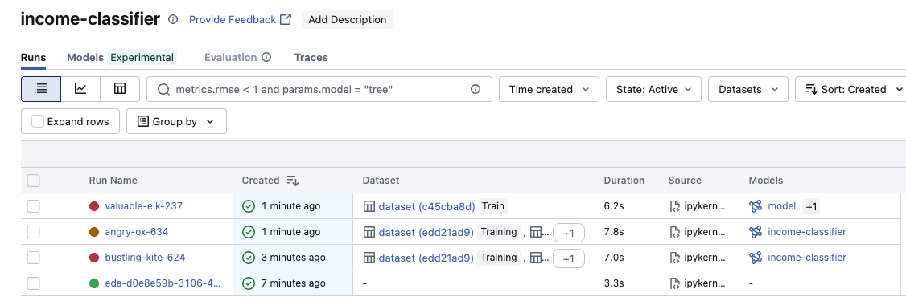
이미지 해설: income-classifier 실험의 Runs 목록입니다. 아래 표에 run 4개가 보입니다.
| Run 이름 | Models 열 | 해석 |
|---|---|---|
valuable-elk-237 |
model 외 +1 |
가장 최근 run (XGBoost 로 보임, 자동 기록 이름이 model) |
angry-ox-634 |
income-classifier |
Random Forest 로 보임 |
bustling-kite-624 |
income-classifier |
Decision Tree 로 보임 |
eda-d0e8e59b-3106-4... |
- |
데이터 탐색 run (모델 없음, 3.3초) |
위쪽 검색창의 metrics.rmse < 1 and params.model = "tree" 는 MLflow 가 보여 주는 필터 문장의 예시 입력창일 뿐, 이 필터가 적용된 결과가 아닙니다. (필터가 적용되었다면 조건에 맞는 run 만 남았을 것이고, 이 실습에는 rmse 메트릭이 없습니다.) 어느 run 이 어느 모델인지는 이름 색이 아니라 run 을 열어 확인해야 합니다. 여기의 매핑은 화면 정황에 따른 해석이며 확정이 아닙니다. 또 Models 열의 model 과 income-classifier 는 모델을 저장한 artifact 경로 이름이 다르다는 뜻입니다 (B-4 의 주의 참고).
여기서 확인할 것: run 이 모두 4개(탐색 1 + 모델 3)인가, 모델 run 의 State 가 정상(초록 체크)인가. 학습 셀을 여러 번 실행했다면 run 이 더 많은 것이 정상입니다.
이 단계에서 꼭 알아둘 점: 소득 분류 예제는 직업과 학력 같은 범주형 열을 원-핫 인코딩합니다. 추론에서도 같은 열 순서를 써야 해서, 학습 시
column_list.pkl을 모델과 함께 기록하고, 5장의 추론 컴포넌트가 이를 내려받습니다. 서비스에서 새 입력마다 인코딩 열을 임의로 만들면 모델은 같아도 다른 의미의 입력을 받게 됩니다.
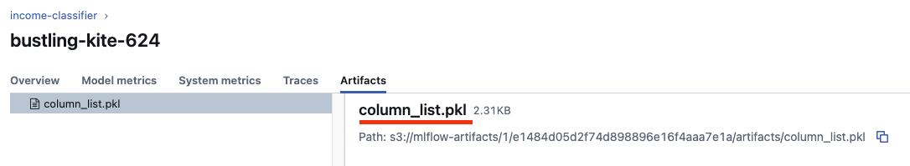
이미지 해설: 모델 run bustling-kite-624 를 열고 Artifacts 탭을 본 화면입니다. 왼쪽 목록에 column_list.pkl(2.31KB) 한 개가 있고, 오른쪽 Path: 는 s3://mlflow-artifacts/1/e1484d05d2f74d898896e16f4aaa7e1a/artifacts/column_list.pkl 입니다. 이 pkl 파일에는 원-핫 인코딩된 열 이름의 순서가 들어 있습니다. 5장 배치 추론에서 이 파일을 내려받아 입력 열을 똑같이 맞춥니다. (이 run 에는 같은 폴더에 모델 파일도 있을 수 있으나, 이 화면 캡처에서는 column_list.pkl 한 개만 보입니다.)
여기서 확인할 것: column_list.pkl 이 모델 run 의 Artifacts 에 있고 경로가 s3://mlflow-artifacts/... 인가. 이 경로의 중간 문자열(e1484d05...)이 위 CSV 파일명 끝의 run ID 와 같다는 점도 확인해 보세요 (같은 run 이라는 증거).
- 이번 실행의 테스트 ROC AUC 는 Decision Tree 약 0.817, Random Forest 0.855, XGBoost 0.714 였습니다 (수강생이 기록한 과거 실행 결과). 데이터 분할이 무작위라 같은 수치가 나오지 않을 수 있습니다.
log_input()은 데이터 출처를 기록하는 기능이지, 원천 CSV 를 자동으로 복사하는 기능은 아니라는 점도 구분해야 합니다.
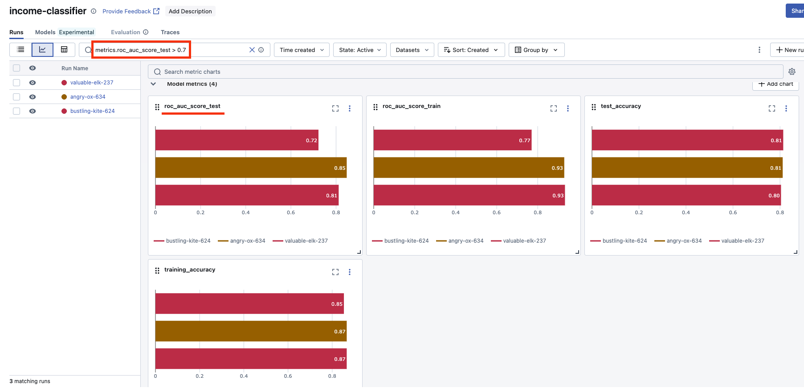
이미지 해설: Runs 화면의 차트 보기입니다. 검색창에는 metrics.roc_auc_score_test > 0.7 이 실제로 적용되어(빨간 박스) 왼쪽 아래에 3 matching runs 가 표시됩니다 (탐색 run 은 이 메트릭이 없어서 빠짐). 오른쪽에 메트릭별 막대 차트 4개가 있습니다.
| 차트 | bustling-kite-624 |
angry-ox-634 |
valuable-elk-237 |
|---|---|---|---|
| roc_auc_score_test | 0.81 | 0.85 | 0.72 |
| roc_auc_score_train | 0.93 | 0.93 | 0.77 |
| test_accuracy | 0.80 | 0.81 | 0.81 |
| training_accuracy | 0.87 | 0.87 | 0.85 |
위 표는 차트 막대 순서와 범례를 읽어 옮긴 값으로, 막대의 정확한 run 대응은 이미지만으로 확정하기 어려워 대략적인 해석입니다. 원 가이드의 수치(DT 약 0.817 / RF 0.855 / XGB 0.714)와 반올림하면 일치합니다.
여기서 확인할 것: 학습 점수(roc_auc_score_train)가 테스트 점수보다 눈에 띄게 높으면(예: 0.93 vs 0.81) 학습 데이터에 너무 맞춰진(과적합) 신호일 수 있습니다. 세 모델 중 테스트 점수가 가장 높은 run 이 다음 B-4 의 등록 후보입니다.
(1-b) Run ID 구하기 [PC 터미널 1] (위 (1) 의 1~3번까지 마친 직후 에 합니다. 아래 블록의 첫 세 줄이 S3 접속용 export 입니다. 새 터미널이면 이 블록을 처음부터 입력하세요)
# S3 접속용 설정 (새 터미널이면 꼭 필요합니다. 이미 했다면 다시 입력해도 괜찮습니다)
export "AWS_ACCESS_KEY_ID"="minio"
export "AWS_SECRET_ACCESS_KEY"="minio123"
export "AWS_ENDPOINT_URL"="http://localhost:9000"
# 학습 셀을 실행한 뒤 버킷에 생긴 CSV 파일 이름을 봅니다. 파일 이름 끝의 긴 영문·숫자가 run ID 입니다.
aws s3 ls s3://mlflow-datasets/income-classifier-datasets/ --human-readable
# 가장 최근 train CSV 의 run ID 만 뽑아서 변수에 담기 (macOS / Linux / WSL)
TRAIN_RUN_ID=$(aws s3 ls s3://mlflow-datasets/income-classifier-datasets/ | grep ' train-' | sort | tail -n 1 | awk '{print $NF}' | sed 's/^train-//; s/\.csv$//')
echo "$TRAIN_RUN_ID"
학습 셀을 세 번(Decision Tree, Random Forest, XGBoost) 실행했다면 CSV 도 세 번 만들어지고, 위 명령은 그중 가장 최근에 만들어진 것의 ID 를 고릅니다. 이 ID 는 CSV 행 수를 확인하는 용도로만 쓰이므로 어느 모델의 것이든 괜찮습니다. echo 로 32자리 영문·숫자가 나오면 성공입니다. 이후 확인 명령은 이 변수 $TRAIN_RUN_ID 를 그대로 쓰므로 값을 직접 붙여 넣을 필요가 없습니다. 새 터미널을 열면 변수가 사라지므로 위 명령을 다시 실행하세요. 파일 이름 형식이 달라 비어 있으면 첫 번째 aws s3 ls 출력을 보고 직접 복사하세요.
(2) 올라간 CSV 확인 [PC 터미널 1] (forward 창이 아닌 다른 창. 새 터미널이면 아래 export 3줄을 다시 실행해야 합니다)
# mlflow-datasets 버킷에 객체 확인
export "AWS_ACCESS_KEY_ID"="minio"
export "AWS_SECRET_ACCESS_KEY"="minio123"
export "AWS_ENDPOINT_URL"="http://localhost:9000"
aws s3 ls s3://mlflow-datasets --recursive --human-readable --summarize
수강생이 기록한 과거 실행 결과입니다 (파일명의 ID, 시각은 내 환경에서는 다릅니다).
2026-10-29 00:42:19 2.6 MiB income-classifier-datasets/feature_df-de18555f8b0e427eb11ca28f8db55920.csv
2026-10-29 00:39:39 2.6 MiB income-classifier-datasets/feature_df-e1484d05d2f74d898896e16f4aaa7e1a.csv
2026-10-29 00:42:19 2.5 MiB income-classifier-datasets/test-de18555f8b0e427eb11ca28f8db55920.csv
2026-10-29 00:39:40 2.5 MiB income-classifier-datasets/test-e1484d05d2f74d898896e16f4aaa7e1a.csv
2026-10-29 00:42:19 8.8 MiB income-classifier-datasets/train-de18555f8b0e427eb11ca28f8db55920.csv
2026-10-29 00:39:39 8.8 MiB income-classifier-datasets/train-e1484d05d2f74d898896e16f4aaa7e1a.csv
Total Objects: 6
Total Size: 27.9 MiB
객체가 6개인 이유: 이 수강생은 학습 셀을 두 번(
e1484d05...와de18555f...) 실행했고, 한 번에 CSV 세 개(feature_df,test,train)가 생겼기 때문입니다. "모델 3개 x CSV 2개" 가 아닙니다. 셀을 다시 돌리면 파일이 더 쌓입니다.
🔧 본인 환경에 맞게 교체
<PC_S3_URL>=http://localhost:9000(위AWS_ENDPOINT_URL) : forward 포트와 같은 값.
<DATASET_BUCKET>=mlflow-datasets: 학습/테스트 CSV 버킷.income-classifier-datasets는 그 안의 폴더(prefix).
<TRAIN_RUN_ID>= 원 가이드의 예시de18555f8b0e427eb11ca28f8db55920: 내 학습 run 의 ID. (1-b) 의aws s3 ls출력에서 파일명 끝부분을 복사하거나 MLflow run 화면의 Run ID 에서 확인합니다. 아래 확인 명령은$TRAIN_RUN_ID변수를 쓰므로 값을 직접 붙여 넣을 필요는 없습니다(변수가 비어 있으면 위 "(1-b) Run ID 구하기" 를 다시 실행).
키minio/minio123은 실습용 값, 실제 환경에서는 변경.
(3) 원본 데이터와 분할 결과 비교 [PC 터미널 1] (위 export 와 $TRAIN_RUN_ID 가 살아 있는 같은 터미널에서 이어서)
데이터 행 수가 30,162 → 24,129 + 6,033 으로 맞아떨어지는지 확인하는 명령입니다. 먼저 원본 CSV 입니다. <ENV_ROOT> (저장소 폴더)에서 실행합니다.
# 원본 및 추출 데이터 비교
# 저장소 폴더에서 실행합니다 (이미 그 폴더라면 그대로 두어도 됩니다)
cd "<ENV_ROOT>"
# 원본 데이터 : 30162개 데이터값 존재 (wc -l 은 헤더 1줄 포함이라 30163 으로 보임)
wc -l upstream/chapter-4/data/income_data.csv
30163 upstream/chapter-4/data/income_data.csv
## Target 필드 존재(=정답)
head -n 2 upstream/chapter-4/data/income_data.csv
Workclass,Education,Marital-Status,Occupation,Relationship,Race,Sex,Native_country,Target
State-gov, Bachelors, Never-married, Adm-clerical, Not-in-family, White, Male, United-States, <=50K
다음은 참조(reference) 데이터 feature_df-*.csv 입니다. 학습과 테스트에 쓰인 모든 사용자를 포함한 전체 특성 데이터여서 30,162개(원본과 같은 개수)여야 합니다. aws s3 cp 의 목적지를 - 로 지정하면 파일로 저장하지 않고 표준출력으로 내보내므로, 뒤에 wc -l, head 를 파이프(|)로 이을 수 있습니다.
# 참조(reference) 데이터 : 30162개
## aws s3 cp의 목적지를 -로 지정하면 파일로 저장하지 않고 표준출력으로 내보냅니다.
aws s3 cp s3://mlflow-datasets/income-classifier-datasets/feature_df-$TRAIN_RUN_ID.csv - | wc -l
30163 /Users/<사용자이름>/Downloads/feature_df-771df7c0507d4e99862d9d70f47fba51.csv
# 원본 데이터에서 정답 열이 제거됨! : 정답 열(Target)을 따로 빼고, 나머지 8개 컬럼을 입력 특성 feature_df로 둡니다.
# feature_df=df.drop('Target', axis=1)
aws s3 cp s3://mlflow-datasets/income-classifier-datasets/feature_df-$TRAIN_RUN_ID.csv - 2>/dev/null | head -n 2
Workclass,Education,Marital-Status,Occupation,Relationship,Race,Sex,Native_country
State-gov, Bachelors, Never-married, Adm-clerical, Not-in-family, White, Male, United-States
참고: 위 첫 번째 출력 줄 끝의/Users/<사용자이름>/Downloads/feature_df-771df7c0...csv는 원 기록에 그대로 남은 부분입니다.wc -l이 파이프 입력을 세면 보통 숫자만 나옵니다. 중요한 것은 숫자 30163(헤더 포함 30,162행)입니다.2>/dev/null은 진행 메시지(오류 출력)를 버려서 화면을 깔끔하게 해 줍니다.
이제 학습/테스트 CSV 입니다. 기대하는 값은 훈련 24,129 + 테스트 6,033 = 30,162 입니다 (train_size=0.80 : 80% 학습, 20% 평가).
# 훈련 데이터 24129 + 테스트 데이터셋 6033 = 30162개(원본 데이터 갯수)
# 참고) train_size=0.80, # 80%는 학습, 나머지 20%는 평가 비율
# 훈련용 데이터 (수강생 기록 : 28935 로 나옴 -> 아래 경고 박스 참고)
aws s3 cp s3://mlflow-datasets/income-classifier-datasets/train-$TRAIN_RUN_ID.csv - | wc -l
28935
aws s3 cp s3://mlflow-datasets/income-classifier-datasets/train-$TRAIN_RUN_ID.csv - | sed -n '24130,24131p'
0.0,1.0,0.0,0.0,0.0,0.0,0.0,0.0,0.0,0.0,0.0,0.0,0.0,1.0,0.0,0.0,0.0,0.0,0.0,0.0,0.0,0.0,0.0,0.0,1.0,0.0,0.0,0.0,1.0,0.0,0.0,0.0,0.0,0.0,0.0,0.0,0.0,0.0,0.0,0.0,0.0,0.0,0.0,1.0,0.0,0.0,0.0,0.0,1.0,1.0,0.0,0.0,0.0,0.0,0.0,0.0,0.0,0.0,0.0,0.0,0.0,0.0,0.0,0.0,0.0,0.0,0.0,0.0,0.0,0.0,0.0,0.0,0.0,0.0,0.0,0.0,0.0,0.0,0.0,0.0,0.0,0.0,0.0,0.0,0.0,0.0,0.0,1.0,0.0,0.0,0.0
,,,,,,,,,,,,,,,,,,,,,,,,,,,,,,,,,,,,,,,,,,,,,,,,,,,,,,,,,,,,,,,,,,,,,,,,,,,,,,,,,,,,,,,,,,0.0
aws s3 cp s3://mlflow-datasets/income-classifier-datasets/train-$TRAIN_RUN_ID.csv - | tail -n 2
,,,,,,,,,,,,,,,,,,,,,,,,,,,,,,,,,,,,,,,,,,,,,,,,,,,,,,,,,,,,,,,,,,,,,,,,,,,,,,,,,,,,,,,,,,0.0
,,,,,,,,,,,,,,,,,,,,,,,,,,,,,,,,,,,,,,,,,,,,,,,,,,,,,,,,,,,,,,,,,,,,,,,,,,,,,,,,,,,,,,,,,,0.0
⚠ 바로잡기 (중요) : train/test CSV 에 빈 행이 섞였습니다
원 가이드의 출력: train CSV 는wc -l= 28,935, test CSV 는 10,924 이고, 24,131번째 줄부터 끝까지,,,,,,,,...,0.0처럼 빈 칸에 마지막 값만 0.0 인 행이 이어집니다. 책은 이를 "24,129개 데이터값 존재, 그 아래부터는 ,,,,0.0 으로 채워짐" 이라고만 적었습니다.
정정본 (이건 정상이 아닙니다): 학습 데이터는 24,129행(+헤더 1줄 =wc -l24,130), 테스트는 6,033행(+헤더 = 6,034) 이어야 하고 빈 행이 없어야 합니다. 합치면 30,162행으로 원본과 같아야 합니다.
원인(추정이며, 원 노트북 코드를 직접 확인하지는 않았습니다):X_train은 분할 전 원래 행 번호(인덱스)를 그대로 갖고 있는데, 정답y_train은 새 Series 라 0번부터 시작합니다. 둘을concat으로 이어 붙이면 번호가 맞지 않는 행이 새 줄로 추가되고 값은 비어(NaN) 정답만 남습니다. 늘어난 약 4,800줄이 이렇게 생긴 빈 행으로 추정됩니다. 학습(fit)은 원래의X_train·y_train을 쓰므로 모델 학습 자체가 이 CSV 를 읽어서 망가졌다고 단정할 수는 없지만, 저장된 CSV 와 MLflow 에 기록되는 데이터 입력 메타데이터는 영향을 받습니다.
덧붙이면 정정 코드 예시 는 다음과 같습니다. 합치기 전에 reset_index(drop=True) 로 행 번호를 0부터 다시 매겨 두 쪽을 맞춥니다. 노트북의 CSV 를 만드는 부분을 이런 식으로 바꿔 볼 수 있습니다. 모델 학습 코드를 대신하는 것이 아니라 저장용 DataFrame 을 만드는 부분만 고치는 예시입니다.
원본 (빈 행이 생기는 방식, 개념 예시)
# X_train 의 인덱스는 원래 행 번호(예: 5, 12, 31 ...),
# y_train 은 새 Series 라 인덱스가 0, 1, 2 ...
# -> 번호가 안 맞아 concat 시 행이 늘고 NaN 이 생김
train_df = pd.concat([X_train, y_train], axis=1)
정정본 (reset_index(drop=True) 로 번호를 맞춘 뒤 합치기)
# 번호를 0부터 다시 매겨(drop=True: 옛 번호는 버림) 맞춘 뒤 합치기
train_df = X_train.reset_index(drop=True).copy()
train_df["Target"] = y_train.ravel()
test_df = X_test.reset_index(drop=True).copy()
test_df["Target"] = y_test.ravel()
# 모양이 맞는지 바로 검사
assert len(train_df) == len(X_train) == len(y_train)
assert len(test_df) == len(X_test) == len(y_test)
assert not train_df.isna().any().any()
assert not test_df.isna().any().any()
직접 고치는 방법 (단계별)
- JupyterLab 에서
ch04폴더의 MLflow 학습 노트북을 엽니다. 노트북의 셀들을 위에서부터 훑으며,pd.concat(이 들어 있는 줄을 찾습니다. 단축키: 노트북을 연 채로Ctrl+F(Mac 은Cmd+F) 로concat을 검색하세요. concat으로X_train과y_train(또는X_test와y_test)을 이어 붙이는 줄이 보이면, 그 줄을 위 "정정본" 의 두 줄(reset_index(drop=True)로 복사한 뒤Target열 대입)로 바꿉니다. 테스트용도 같은 방식으로 바꿉니다.- 그 DataFrame 을
to_csv하거나 S3 에 올리는 변수 이름(train_df,test_df등)이 정정본과 다르면, 정정본의 변수 이름을 노트북의 이름에 맞춰 쓰세요. 이름이 맞지 않으면 옛 변수가 그대로 업로드됩니다. - 수정한 셀과 그 아래 학습·업로드 셀을 다시 실행합니다. 새 run 이 만들어지고 새 run ID 의 CSV 가 올라갑니다.
- 위 "(1-b) Run ID 구하기" 를 다시 실행해 새 run ID 를 구한 뒤, 아래 확인 명령을 새 ID 로 실행합니다.
wc -l이 24,130 / 6,034 가 나오면 정상입니다.
concat 줄을 찾지 못했다면 배포된 노트북이 이미 고쳐져 있을 수 있습니다. 이때는 5번의 wc -l 결과만 보고 판단하세요. 24,130 / 6,034 가 나오면 고칠 필요가 없고, 28,000 줄대 / 10,000 줄대로 나오면 위 방법으로 고쳐야 합니다. 이 가이드는 현재 배포된 노트북의 코드를 직접 열어 보지 못했으므로 위 "원본" 코드는 원인을 설명하기 위한 개념 예시입니다.
학습 점수(AUC 등)는 이 CSV 와 무관하게 계산되므로, 이 수정을 건너뛰어도 B-4 모델 등록과 이후 단계는 진행됩니다. 다만 저장된 CSV 로 결과를 다시 확인할 때 행 수가 맞지 않아 보입니다.
🔧 본인 환경에 맞게 교체
아래sed -n '24130,24131p',sed -n '6034,6035p'의 줄 번호는 수강생의 분할 크기(24,129 / 6,033) 기준입니다. 내 분할 크기가 다르면(학습 행 수 + 1),(학습 행 수 + 2)줄처럼 자기 값에 맞게 바꾸세요. 정상이라면 마지막 줄이 빈 행(,,,,0.0)이 아니라 숫자가 채워진 행이어야 합니다.
다음은 원-핫 인코딩 결과 확인입니다. 첫 줄은 열 이름(헤더), 둘째 줄은 0 과 1 로 표현된 값입니다. 마지막 열이 정답 열입니다. 원래 노트북이 만든 CSV 에서는 마지막 열 이름이 0 이고, 위 정정본으로 만든 CSV 에서는 Target 입니다. 둘 다 정상이니 마지막 열이 정답(0 또는 1)이면 됩니다.
# 문자열 범주형 변수를 더미(원-핫) 변수로 바꿉니다. 모델은 숫자만 다루기 때문입니다 -> 아래 0 과 1로 표현되는 부분 확인.
aws s3 cp s3://mlflow-datasets/income-classifier-datasets/train-$TRAIN_RUN_ID.csv - 2>/dev/null | head -n 2
출력(수강생 기록). 첫 줄은 열 이름 목록, 둘째 줄은 값입니다. 열 이름의 형식은 원래열이름_ 범주값 (범주값 앞에 공백이 있음 — 원본 CSV 값이 Private 처럼 앞에 공백을 갖고 있어서) 입니다.
Workclass_ Local-gov,Workclass_ Private,Workclass_ Self-emp-inc,Workclass_ Self-emp-not-inc,Workclass_ State-gov,Workclass_ Without-pay,Education_ 11th,Education_ 12th,Education_ 1st-4th,Education_ 5th-6th,Education_ 7th-8th,Education_ 9th,Education_ Assoc-acdm,Education_ Assoc-voc,Education_ Bachelors,Education_ Doctorate,Education_ HS-grad,Education_ Masters,Education_ Preschool,Education_ Prof-school,Education_ Some-college,Marital-Status_ Married-AF-spouse,Marital-Status_ Married-civ-spouse,Marital-Status_ Married-spouse-absent,Marital-Status_ Never-married,Marital-Status_ Separated,Marital-Status_ Widowed,Occupation_ Armed-Forces,Occupation_ Craft-repair,Occupation_ Exec-managerial,Occupation_ Farming-fishing,Occupation_ Handlers-cleaners,Occupation_ Machine-op-inspct,Occupation_ Other-service,Occupation_ Priv-house-serv,Occupation_ Prof-specialty,Occupation_ Protective-serv,Occupation_ Sales,Occupation_ Tech-support,Occupation_ Transport-moving,Relationship_ Not-in-family,Relationship_ Other-relative,Relationship_ Own-child,Relationship_ Unmarried,Relationship_ Wife,Race_ Asian-Pac-Islander,Race_ Black,Race_ Other,Race_ White,Sex_ Male,Native_country_ Canada,Native_country_ China,Native_country_ Columbia,Native_country_ Cuba,Native_country_ Dominican-Republic,Native_country_ Ecuador,Native_country_ El-Salvador,Native_country_ England,Native_country_ France,Native_country_ Germany,Native_country_ Greece,Native_country_ Guatemala,Native_country_ Haiti,Native_country_ Holand-Netherlands,Native_country_ Honduras,Native_country_ Hong,Native_country_ Hungary,Native_country_ India,Native_country_ Iran,Native_country_ Ireland,Native_country_ Italy,Native_country_ Jamaica,Native_country_ Japan,Native_country_ Laos,Native_country_ Mexico,Native_country_ Nicaragua,Native_country_ Outlying-US(Guam-USVI-etc),Native_country_ Peru,Native_country_ Philippines,Native_country_ Poland,Native_country_ Portugal,Native_country_ Puerto-Rico,Native_country_ Scotland,Native_country_ South,Native_country_ Taiwan,Native_country_ Thailand,Native_country_ Trinadad&Tobago,Native_country_ United-States,Native_country_ Vietnam,Native_country_ Yugoslavia,0
0.0,1.0,0.0,0.0,0.0,0.0,0.0,0.0,0.0,0.0,0.0,0.0,0.0,0.0,0.0,0.0,0.0,0.0,0.0,0.0,1.0,0.0,1.0,0.0,0.0,0.0,0.0,0.0,0.0,0.0,0.0,0.0,0.0,0.0,0.0,0.0,0.0,0.0,0.0,1.0,0.0,0.0,0.0,0.0,0.0,0.0,0.0,0.0,1.0,1.0,0.0,0.0,0.0,0.0,0.0,0.0,0.0,0.0,0.0,0.0,0.0,0.0,0.0,0.0,0.0,0.0,0.0,0.0,0.0,0.0,0.0,0.0,0.0,0.0,0.0,0.0,0.0,0.0,0.0,0.0,0.0,0.0,0.0,0.0,0.0,0.0,0.0,1.0,0.0,0.0,
읽는 법: 둘째 줄에서
Workclass_ Private칸이1.0,Education_ Some-college칸이1.0,Marital-Status_ Married-civ-spouse칸이1.0이므로 "민간기업, 대학 일부 이수, 결혼한 사람" 이라는 뜻입니다. 나머지 범주 칸은 모두0.0입니다. (원 가이드의 둘째 줄은 끝이0.0,0.0,로 끊겨 있어 마지막 정답 값이 보이지 않는 상태로 기록되어 있습니다.)
이번에는 테스트용 데이터셋입니다. 기대값은 6,033개입니다.
# 테스트용 데이터셋 : 6033개 데이터값이 있어야 함 (수강생 기록은 아래 경고와 같이 10924 로 나옴)
aws s3 cp s3://mlflow-datasets/income-classifier-datasets/test-$TRAIN_RUN_ID.csv - | wc -l
10924
aws s3 cp s3://mlflow-datasets/income-classifier-datasets/test-$TRAIN_RUN_ID.csv - 2>/dev/null | head -n 2
출력은 train 과 같은 형식의 열 이름 줄(마지막 열 0)과 값 줄입니다.
Workclass_ Local-gov,Workclass_ Private,Workclass_ Self-emp-inc,Workclass_ Self-emp-not-inc,Workclass_ State-gov,Workclass_ Without-pay,Education_ 11th,Education_ 12th,Education_ 1st-4th,Education_ 5th-6th,Education_ 7th-8th,Education_ 9th,Education_ Assoc-acdm,Education_ Assoc-voc,Education_ Bachelors,Education_ Doctorate,Education_ HS-grad,Education_ Masters,Education_ Preschool,Education_ Prof-school,Education_ Some-college,Marital-Status_ Married-AF-spouse,Marital-Status_ Married-civ-spouse,Marital-Status_ Married-spouse-absent,Marital-Status_ Never-married,Marital-Status_ Separated,Marital-Status_ Widowed,Occupation_ Armed-Forces,Occupation_ Craft-repair,Occupation_ Exec-managerial,Occupation_ Farming-fishing,Occupation_ Handlers-cleaners,Occupation_ Machine-op-inspct,Occupation_ Other-service,Occupation_ Priv-house-serv,Occupation_ Prof-specialty,Occupation_ Protective-serv,Occupation_ Sales,Occupation_ Tech-support,Occupation_ Transport-moving,Relationship_ Not-in-family,Relationship_ Other-relative,Relationship_ Own-child,Relationship_ Unmarried,Relationship_ Wife,Race_ Asian-Pac-Islander,Race_ Black,Race_ Other,Race_ White,Sex_ Male,Native_country_ Canada,Native_country_ China,Native_country_ Columbia,Native_country_ Cuba,Native_country_ Dominican-Republic,Native_country_ Ecuador,Native_country_ El-Salvador,Native_country_ England,Native_country_ France,Native_country_ Germany,Native_country_ Greece,Native_country_ Guatemala,Native_country_ Haiti,Native_country_ Holand-Netherlands,Native_country_ Honduras,Native_country_ Hong,Native_country_ Hungary,Native_country_ India,Native_country_ Iran,Native_country_ Ireland,Native_country_ Italy,Native_country_ Jamaica,Native_country_ Japan,Native_country_ Laos,Native_country_ Mexico,Native_country_ Nicaragua,Native_country_ Outlying-US(Guam-USVI-etc),Native_country_ Peru,Native_country_ Philippines,Native_country_ Poland,Native_country_ Portugal,Native_country_ Puerto-Rico,Native_country_ Scotland,Native_country_ South,Native_country_ Taiwan,Native_country_ Thailand,Native_country_ Trinadad&Tobago,Native_country_ United-States,Native_country_ Vietnam,Native_country_ Yugoslavia,0
0.0,1.0,0.0,0.0,0.0,0.0,1.0,0.0,0.0,0.0,0.0,0.0,0.0,0.0,0.0,0.0,0.0,0.0,0.0,0.0,0.0,0.0,0.0,0.0,1.0,0.0,0.0,0.0,0.0,0.0,0.0,0.0,0.0,1.0,0.0,0.0,0.0,0.0,0.0,0.0,0.0,1.0,0.0,0.0,0.0,0.0,0.0,0.0,1.0,0.0,0.0,0.0,0.0,0.0,0.0,0.0,0.0,0.0,0.0,0.0,0.0,0.0,0.0,0.0,0.0,0.0,0.0,0.0,0.0,0.0,0.0,0.0,0.0,0.0,0.0,0.0,0.0,0.0,0.0,0.0,0.0,0.0,0.0,0.0,0.0,0.0,0.0,1.0,0.0,0.0,
test 의 열 이름은 train 과 완전히 같은 91개 열입니다.
# 테스트 CSV 의 6034~6035번째 줄: 정상이면 6034 번째 줄이 데이터 끝(헤더 포함 6034줄)이고 6035 는 없어야 함
aws s3 cp s3://mlflow-datasets/income-classifier-datasets/test-$TRAIN_RUN_ID.csv - | sed -n '6034,6035p'
0.0,1.0,0.0,0.0,0.0,0.0,0.0,0.0,0.0,0.0,0.0,0.0,0.0,0.0,0.0,0.0,0.0,0.0,0.0,0.0,1.0,0.0,0.0,0.0,1.0,0.0,0.0,0.0,0.0,0.0,0.0,1.0,0.0,0.0,0.0,0.0,0.0,0.0,0.0,0.0,1.0,0.0,0.0,0.0,0.0,0.0,0.0,0.0,0.0,1.0,0.0,0.0,0.0,0.0,0.0,0.0,0.0,0.0,0.0,0.0,0.0,0.0,0.0,0.0,0.0,0.0,0.0,0.0,0.0,0.0,0.0,0.0,0.0,0.0,0.0,0.0,0.0,0.0,0.0,0.0,0.0,0.0,0.0,0.0,0.0,0.0,0.0,1.0,0.0,0.0,
,,,,,,,,,,,,,,,,,,,,,,,,,,,,,,,,,,,,,,,,,,,,,,,,,,,,,,,,,,,,,,,,,,,,,,,,,,,,,,,,,,,,,,,,,,0.0
이 출력에서 6034번째 줄은 값이 채워진 행이고 6035번째 줄부터 빈 행(,,,,0.0) 이 시작됩니다. 즉 테스트 데이터도 같은 방식으로 빈 행이 붙어 10,924줄이 된 것입니다. 위 정정 코드로 고치면 사라집니다.
✅ 기대 결과 (수강생이 기록한 과거 실행 결과)
mlflow-datasets bucket found출력.- 학습 셀 3개(약 1분씩) 정상 종료.
mlflow-datasets/income-classifier-datasets/에feature_df-,train-,test-CSV 가 run ID 를 붙여 생김.- 데이터 개수: 원본 30,162 / 참조(
feature_df) 30,162 / 훈련 24,129 + 테스트 6,033 = 30,162 (원 기록은 train 28,935줄·test 10,924줄이라 위 정정 박스 대상). - MLflow run 4개 (탐색 1 + 모델 3, 학습 셀을 더 실행했다면 그 이상).
🔍 확인 방법
| 확인 | 명령 / 화면 | 정상 기준 |
|---|---|---|
| 버킷 확인 | aws s3 ls s3://mlflow-datasets --recursive --human-readable --summarize |
CSV 가 학습 셀 실행 횟수만큼 쌍(feature_df, test, train)으로 쌓임 |
| 원본 행 수 | wc -l upstream/chapter-4/data/income_data.csv |
30163 (헤더 포함) |
| 정답 열 제거 확인 | feature_df CSV head -n 2 |
열 8개, Target 없음 |
| 학습/테스트 합계 | train wc -l (헤더 포함) + test wc -l (헤더 포함) |
헤더 2줄을 빼고 합쳤을 때 30,162 (정정 후 24,130 + 6,034 - 2 = 30,162) |
| 정답이 있는 마지막 열 | train/test head -n 2 |
마지막 열 이름이 0(원래 노트북) 또는 Target(정정본), 값은 0 또는 1 |
| 모델 비교 | MLflow 차트 보기 | roc_auc_score_test 가 모델마다 다르고, 학습 점수와 큰 차이가 없는지 |
⚠ 자주 나는 오류
| 증상 | 원인 | 해결 |
|---|---|---|
PLEASE CREATE BUCKET IN MINIO BEFORE PROCEEDING |
mlflow-datasets 버킷이 없음 |
A-4 로 돌아가 python bookenv.py buckets 실행 후 aws s3 ls 로 확인 |
wc -l 이 24,130 / 6,034 가 아니라 28,935 / 10,924 |
X 와 y 인덱스 불일치로 빈 행 생김 (위 바로잡기) | reset_index(drop=True) 로 정정 후 셀 재실행 |
Connection refused 또는 EndpointConnectionError |
forward 꺼짐 / AWS_ENDPOINT_URL 오타 |
forward 창 확인, export 3줄 재실행 (새 터미널이면 다시 해야 함) |
| 같은 셀을 다시 돌렸더니 CSV 와 run 이 늘어남 | 정상 동작 | 이전 run 은 그대로 남음. 어느 run 을 쓸지는 run ID 로 구분 |
export 후에도 aws 가 인증 오류 |
새 터미널에서 환경변수를 안 넣음 | 같은 터미널에서 이어서 실행하거나 export 3줄 재실행 |
B-4. 모델 등록
🎯 목적
가장 좋은 run 을 찾아 모델 레지스트리에 random-forest-classifier 라는 이름으로 등록하고, 5장 배치 추론이 찾을 수 있도록 그 버전을 Production 으로 지정합니다.
📋 사전조건
- B-3 완료: 모델 run 이 있고, 그 run 에 모델 파일이
income-classifier경로로 기록되어 있음. - 노트북 커널과 MLflow 연결(
mlflow_client)이 살아 있음.
⌨ 명령어
[JupyterLab 노트북 셀]
9. 가장 좋은 run을 찾아 모델 레지스트리에 등록셀을 실행합니다. (테스트 ROC AUC 가 일정 값을 넘는 run 중 가장 높은 것을 골라 등록합니다.)- 바로 아래
[환경]셀로 등록한 버전을Production으로 지정합니다.
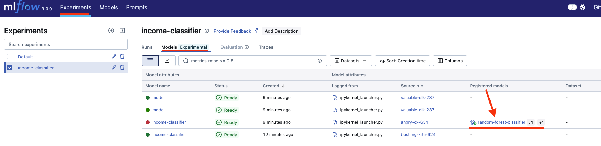
이미지 해설: Experiments > income-classifier 의 Models 탭(빨간 밑줄)입니다. 모델 4줄이 보이는데 이름이 model(원천 run valuable-elk-237) 2줄과 income-classifier(원천 run angry-ox-634, bustling-kite-624) 2줄입니다. angry-ox-634 줄의 Registered models 열에 빨간 화살표로 random-forest-classifier v1 이 표시됩니다 — 즉 이 run 의 모델이 레지스트리에 v1 으로 등록되었다는 뜻입니다. 위쪽 필터 입력창의 metrics.rmse >= 0.8 은 예시 문구입니다.
여기서 확인할 것: Registered models 열에 random-forest-classifier v1 이 있는 줄이 Random Forest run 인지. 그리고 이 모델의 이름이 model 이 아니라 income-classifier 인지 확인하세요 (아래 주의 참고).
[환경]셀이 왜 필요한가요? 5장의 추론 컴포넌트는 입력 파라미터model_stage값과 같은 stage(환경: dev, stg, prod 등)의 버전을 찾습니다. 책에는 stage 를 바꾸는 절차가 따로 없으므로, 여기서 방금 등록한 버전을Production으로 지정합니다. 이 단계를 빼면 D 단계에서 해당 stage 의 모델을 찾지 못해 실패합니다. 책은 "MLflow 3 에서 stage 는 deprecated 기능이지만 아직 동작한다" 고 설명합니다.
[JupyterLab 노트북 셀] — 등록 버전을 Production 으로 지정하고 확인
mlflow_client.transition_model_version_stage("random-forest-classifier", registered.version, "Production")
for v in mlflow_client.search_model_versions("name='random-forest-classifier'"):
print(v.version, v.current_stage, v.run_id)
출력 (수강생이 기록한 과거 실행 결과. run ID 는 내 환경에서 다릅니다):
1 Production de18555f8b0e427eb11ca28f8db55920
각 열의 뜻은 버전 번호 / 현재 stage / 이 버전이 만들어진 run 의 ID 입니다. 이 한 줄이 곧 "v1 이 Production 이다" 라는 확인입니다.
⚠ stage 방식에 대한 보완 (원 가이드에 없는 덧붙임)
MLflow 의transition_model_version_stage는 2.9.0 부터 deprecated(앞으로 없어질 예정)된 것으로 알려져 있습니다(공식 문서로 다시 확인해 보세요). 이 실습의 MLflow 3.0.0 에서는 아직 동작하고 5장 코드가 stage 로 모델을 찾기 때문에 그대로 사용합니다. 새로 만드는 시스템에서는 alias(별칭, 예:champion) 와 구체적인 숫자 버전을 쓰기를 권합니다. 다만 alias 만 추가하고 D 단계의 stage 기반 조회 코드를 그대로 두면 전환이 끝난 것이 아니므로, 조회 코드도 함께 바꿔야 합니다. 또Production은 대소문자를 구분하며 MLflow 의 기본 stage 는None·Staging·Production·Archived입니다.
🔧 본인 환경에 맞게 교체
<MODEL_NAME>=random-forest-classifier: 등록 모델 이름. D 단계의 파라미터와 같은 값이어야 합니다.
<MODEL_STAGE>=Production: D 단계가 찾는 stage (대소문자 구분).
<MODEL_ARTIFACT_PATH>=income-classifier: 학습된 모델이 run 안에 저장된 artifact 경로.
<MODEL_SELECTION_AUC>=0.8(노트북 9번 셀 코드 기준이며, 원 가이드 본문에는 숫자가 없습니다) : 등록 후보를 고르는 필터 하한 (metrics.roc_auc_score_test > 0.8류). 내 run 의 점수가 이보다 낮으면 후보가 없어 오류가 납니다. 점수를 보고 값을 낮추세요. (MLflow 화면 필터 예시의 0.7 과는 다른 값입니다.)
[브라우저]Models → random-forest-classifier 에서 버전과 원천 run 을 확인합니다.
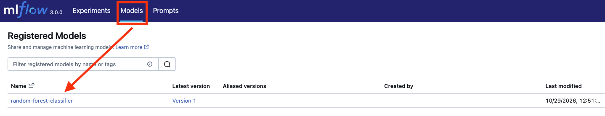
이미지 해설: MLflow 3.0.0 상단 Models 메뉴(빨간 박스)를 눌러 보이는 Registered Models 목록입니다. random-forest-classifier 가 있고 Latest version 이 Version 1, Aliased versions 열은 비어 있으며 마지막 수정 시각이 표시됩니다. 이 화면이 보여 주는 것은 "레지스트리에 등록되어 있고 최신 버전이 1 이다" 까지입니다.
⚠ 바로잡기: 이 화면만으로 버전이 Production 이라고 확인할 수는 없습니다. 목록에는 stage 열이 없습니다. Production 지정 여부는 (1) 위search_model_versions출력의Production, 또는 (2) 모델 이름을 눌러 들어가 Version 1 상세 화면에서 확인하세요. (Aliased versions 열이 비어 있는 것은 alias 를 쓰지 않았다는 뜻일 뿐, stage 와는 별개입니다.)
여기서 확인할 것: random-forest-classifier 이름과 Version 1 이 보이는가, 그리고 버전 상세에서 원천 run 이 Random Forest run 으로 연결되는가.
책 코드를 따라가는 것과 실제 출시 기준은 다릅니다
- 책은 테스트 점수(
metrics.roc_auc_score_test)로 모델을 고릅니다. 운영용 실험에서는 검증셋으로 후보를 선택하고, 테스트셋은 마지막 확인에만 쓰는 편이 맞습니다. 테스트셋으로 반복해서 고르면 그 시험지에 맞춰진 모델을 고르게 됩니다. - stage 나 alias 는 다른 버전을 가리키도록 바뀔 수 있습니다. 실제 배치에서는 실행 시작 시 구체 버전을 확정하고
models:/이름/숫자형태(예:models:/random-forest-classifier/1)로 기록하는 것이 좋습니다. 그러면 "그날 어떤 모델로 돌렸는지" 를 나중에 정확히 말할 수 있습니다.
대체 셀: Random Forest run 을 직접 골라 등록
9번 셀이 IndexError 를 내거나, 가장 높은 점수의 run 이 Random Forest 가 아니라서 등록이 이상할 때 씁니다. 9번 셀을 대신하는 것이므로, 쓰기로 했다면 9번 셀은 실행하지 말고 아래 셀을 새 셀에 붙여 실행하세요. 그다음에 이어지는 Production 지정 셀은 그대로 실행합니다.
[JupyterLab 노트북 셀] (B-2 에서 MLflow 에 연결하고 B-3 에서 모델 3종을 학습한 같은 노트북에서)
mlflow_client = MlflowClient() # 노트북에 이미 있는 mlflow_client 가 있으면 이 줄은 생략해도 됩니다
exp = mlflow_client.get_experiment_by_name("income-classifier") # 실험 이름: B-2 에서 만든 것
runs = mlflow_client.search_runs([exp.experiment_id], order_by=["metrics.roc_auc_score_test DESC"]) # 점수 높은 순
rf = None
for r in runs: # 점수가 높은 run 부터 하나씩 확인하면서
try:
loaded = mlflow.sklearn.load_model(f"runs:/{r.info.run_id}/income-classifier")
except Exception:
continue # income-classifier 경로에 모델이 없는 run(예: XGBoost 자동 기록)은 건너뜀
if type(loaded).__name__ == "RandomForestClassifier": # 실제로 Random Forest 인 첫 run 을 고른다
rf = r
break
assert rf is not None, "Random Forest run 을 찾지 못했습니다. B-3 의 Random Forest 학습 셀을 다시 실행하세요."
print("선택한 run:", rf.info.run_id, "AUC:", rf.data.metrics["roc_auc_score_test"])
registered = mlflow.register_model(f"runs:/{rf.info.run_id}/income-classifier", "random-forest-classifier")
print("등록:", registered.name, "버전", registered.version)
- 점수가 높은 run 부터 차례로 열어 보면서 실제로 Random Forest 인 첫 run 을 고릅니다. 그래서 Decision Tree 나 XGBoost 의 점수가 더 높아도 상관없습니다.
- 기대 출력:
선택한 run: …,등록: random-forest-classifier 버전 1처럼 두 줄이 나옵니다. 버전 번호는 이미 등록한 적이 있으면 2, 3 … 으로 올라갑니다. Random Forest run 을 찾지 못했습니다가 나오면 B-3 의 7번(Random Forest) 셀이 실행되지 않은 것입니다. 그 셀을 다시 실행한 뒤 이 셀을 실행하세요.- MLflow 3.x 에서는
artifact_path가 deprecated 라는 경고나 "Run with id … has no artifacts at artifact path" 경고가 보일 수 있습니다. 등록이 끝나고 위의 출력이 나오면 동작한 것입니다. 이 셀은 로컬의 MLflow 3.0.0 에서 같은 구조의 실험으로 동작을 확인했지만, 수강생 환경의 노트북과 완전히 같은 조건에서 실행해 본 것은 아닙니다.
✅ 기대 결과 (수강생이 기록한 과거 실행 결과)
- 셀 출력
1 Production <run_id>. - MLflow Models 화면에
random-forest-classifier가Version 1로 등록됨. - Experiments 의 Models 탭에서 Random Forest run 줄에
random-forest-classifier v1.
🔍 확인 방법
- 노트북:
search_model_versions출력의 두 번째 값이Production. - 화면: Models →
random-forest-classifier→ Version 1 상세에서 stage 와 원천 run 확인 (위 바로잡기 참고). - 덧붙이면, 원천 run 의 Artifacts 에 모델 파일과
column_list.pkl이 있는지도 확인해 두세요. 그러면 5장이 쓰는 재료가 갖춰진 것입니다.
⚠ 자주 나는 오류
| 증상 | 원인 | 해결 |
|---|---|---|
9번 셀에서 IndexError: list index out of range |
필터 조건(roc_auc_score_test > 기준)을 만족하는 run 이 없음 (노트북이 결과 [0] 을 바로 참조하는 경우) |
B-3 의 점수를 확인하고 기준값(<MODEL_SELECTION_AUC>)을 낮추거나, 학습 run 이 정상인지 확인 |
| 가장 높은 run 이 XGBoost 라서 등록이 실패하거나 엉뚱한 경로를 가리킴 | 등록 코드는 income-classifier 경로의 모델만 대상으로 하는데, XGBoost 자동 기록 이름은 model (B-3 의 model vs income-classifier 차이) |
다시 학습하지 말고, 아래 "대체 셀: Random Forest run 을 직접 골라 등록" 을 새 셀에 붙여 실행 |
D 단계에서 No model found in stage Production 류 오류 |
stage 지정 셀을 건너뜀 | 이 단계의 transition_model_version_stage 셀을 실행하고 출력이 Production 인지 확인 |
Production 이 아니라 production 등으로 입력함 |
stage 이름은 대소문자 구분 | 정확히 Production |
5장 추론에서 predict_proba 오류 |
선택된 모델이 XGBoost 같은 다른 형식 | 추론 코드는 scikit-learn 모델을 가정하므로 선택한 run 의 모델 형식과 D 의 model_type 을 맞추세요 |
C 개요: Feast 는 피처 창고
MLflow 가 "어떤 모델을 만들었는가" 를 기록한다면, Feast 는 "모델이 사용할 피처를 어디서 어떤 기준으로 가져오는가" 를 관리합니다. 피처(feature)는 모델에 넣는 입력 값(여기서는 성별, 직업 등 사용자 정보)입니다.
feast apply)과 진열대에 물건을 실제로 올리는 것(feast materialize)은 다른 작업입니다.Feast 구성 요소 6가지
| 구성 요소 | 저장하거나 정의하는 것 | 이번 실습 | 창고 비유 |
|---|---|---|---|
| Entity | 누구의 값인지 식별할 조인 키 | user_id |
물건에 붙은 "주인 번호표" |
| Data source | 원천 위치, 시간 필드와 접속 정보 | S3 의 parquet | 창고 입고 장부의 위치 |
| FeatureView | 피처 이름, 타입, Entity 와 TTL | demographic, relationship, occupation | 선반 이름과 진열 규칙 |
| Registry | 위 정의들의 메타데이터 | feature-registry 의 Registry 파일 |
재고 목록표 |
| Offline store | 과거 피처 이력 | feature-data-sets 의 parquet |
과거 기록 창고 |
| Online store | 빠르게 조회할 최신 피처 | Redis | 계산대 옆 진열대 |
용어 풀이: TTL(Time To Live)은 "이 값을 기준 시각에서 얼마나 오래 전 것까지 유효하다고 볼 것인가" 의 기한입니다. event_timestamp 는 "그 값이 발생한 시각" 입니다. 개념 설명은 → 이론편(CH4) 참고.
feast apply 와 materialize 는 다른 작업입니다. 전자는 정의를 등록하고, 후자는 피처 값을 온라인 저장소로 옮깁니다. Registry 에 FeatureView 가 보인다고 Redis 에도 값이 있다는 뜻은 아닙니다.
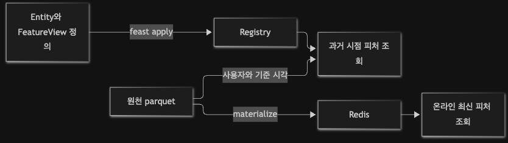
이미지 해설: 어두운 배경의 흐름도입니다. ① 왼쪽 위 Entity 와 FeatureView 정의 → (feast apply) → Registry → 과거 시점 피처 조회로 이어지는 줄, ② 원천 parquet → (사용자와 기준 시각) → 과거 시점 피처 조회로 가는 줄, ③ 원천 parquet → (materialize) → Redis → 온라인 최신 피처 조회로 가는 줄입니다. 즉 과거 조회는 Registry(정의)와 원천 parquet 를 합쳐서 하고, 온라인 조회는 materialize 로 Redis 에 옮겨 둔 값을 읽습니다.
여기서 확인할 것: feast apply 는 화살표가 Registry 까지만 갑니다. Redis 로 가는 화살표는 materialize 에만 있습니다.
apply vs materialize 체험
C 단계 전체 그림
flowchart LR P["원천 parquet 3개 feature-data-sets"] -->|"C-1 업로드"| OFF["Offline store"] DEF["entity.py features.py feature_store.yaml"] -->|"C-2 feast apply"| REG["Registry registry_local.db feature-registry"] OFF -->|"C-3 get_historical_features 사용자와 기준 시각"| HIST["과거 시점 피처"] REG --> HIST OFF -->|"C-4 feast materialize"| RED["Redis 온라인 스토어"] RED -->|"C-4 get_online_features"| ONL["최신 피처"] DEF -->|"C-5 feature_store.yaml 업로드"| REG
그림 읽는 법: 오른쪽 위 가닥이 과거 시점 조회(Registry 의 정의 + 원천 parquet), 아래 가닥이 온라인 조회(materialize 로 Redis 에 옮긴 값)입니다. C-5 는 PC 용 설정 파일을 feature-registry 버킷에 보관하는 단계입니다. 참고로 5장(D 단계) 배치 추론의 피처 조회는 Redis 가 아니라 S3 의 registry.db 와 원천 parquet 을 읽는 과거 시점 조회입니다.
📋 C 전체 공통 사전조건
- 이 노트북은 저자의
chapter-4/Readme.md명령을 셀에서 실행할 수 있게 옮긴 것입니다. S3 와 Redis 를 모두 쓰므로 forward 의 9000 과 6379 터널이 모두 열려 있어야 합니다 ([PC 터미널 2: forward 창]). - 버킷
feature-data-sets,feature-registry가 있어야 합니다 (A-4). - 노트북은
ch04/02_feast_feature_store.ipynb입니다.[환경]표시가 있는 셀만 이 실습 환경을 위해 추가한 셀입니다.
🔧 본인 환경에 맞게 교체 (C 단계 공통)
<PC_S3_URL>=http://localhost:9000: PC 에서 S3 에 접속하는 주소 (aws cli, Feast).
<PC_REDIS_HOST>:<PC_REDIS_PORT>=localhost:6379: PC 에서 Redis 에 접속하는 주소. Pod 안에서는 이 주소를 쓸 수 없습니다 (Pod 의 localhost 는 Pod 자신, D 단계 참고).
<REDIS_PASSWORD>=redis123, S3 키minio/minio123: 실습용 값, 실제 환경에서는 변경.
<FEATURE_DATA_BUCKET>=feature-data-sets,<REGISTRY_BUCKET>=feature-registry,<FEAST_PROJECT>=my_feature_repo.
<LOCAL_FEATURE_REPO>=book/ch04/feature_repo:feature_store.yaml이 있는 PC 쪽 Feast 폴더.
<CH4_ROOT>=upstream/chapter-4: 책 4장 코드 경로.
이 가이드의 행 수·시각은 수강생이 기록한 과거 실행 결과입니다.
C-1. 준비와 원천 파일 업로드
🎯 목적
Feast 가 읽을 원천 데이터 파일 3개(parquet) 를 feature-data-sets 버킷에 올리고, PC 에 피처 저장소 폴더(feature_repo/) 를 만들어 정의 파일 3개를 복사합니다.
📋 사전조건
- forward 의 9000 과 6379 가 열려 있어야 합니다 (이 단계는 S3 만 쓰지만 C-2 부터 Redis 가 필요합니다).
- 버킷
feature-data-sets,feature-registry가 만들어져 있어야 합니다. - B 와 같은 커널(
.venv-book)을 사용합니다.
⌨ 명령어
[JupyterLab 노트북 셀]
ch04/02_feast_feature_store.ipynb를 열고[환경] 경로와 명령 실행 도우미,1. 환경 변수셀을 실행합니다.
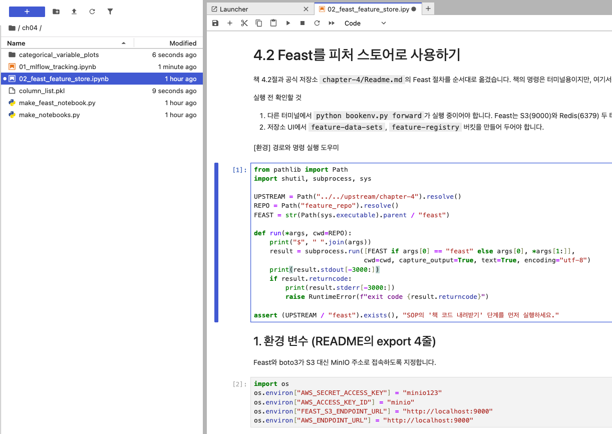
이미지 해설: 왼쪽은 JupyterLab 의 ch04/ 폴더로 categorical_variable_plots, 01_mlflow_tracking.ipynb, 02_feast_feature_store.ipynb, column_list.pkl(B 단계 결과물), 그리고 노트북을 만든 make_feast_notebook.py, make_notebooks.py 가 보입니다. 오른쪽은 02_feast_feature_store.ipynb 의 시작 화면입니다. 제목 "4.2 Feast를 피처 스토어로 사용하기" 아래 "실행 전 확인할 것"에 ① python bookenv.py forward 실행 중 (S3 9000 과 Redis 6379), ② feature-data-sets, feature-registry 버킷 생성이 적혀 있습니다. 셀 [1] 은 UPSTREAM(책 코드 위치), REPO(feature_repo), FEAST(가상환경의 feast 실행 파일) 경로를 정하고, 터미널 명령을 대신 실행해 출력까지 보여 주는 run() 도우미를 정의합니다. 셀 [2] 는 환경변수 4개를 설정합니다.
import os
os.environ["AWS_SECRET_ACCESS_KEY"] = "minio123" # 실습용 값, 실제 환경에서는 변경
os.environ["AWS_ACCESS_KEY_ID"] = "minio" # 실습용 값, 실제 환경에서는 변경
os.environ["FEAST_S3_ENDPOINT_URL"] = "http://localhost:9000"
os.environ["AWS_ENDPOINT_URL"] = "http://localhost:9000"
여기서 확인할 것: 두 셀이 오류 없이 끝나고 assert (UPSTREAM / "feast").exists() 가 통과하는가. Feast 와 boto3 가 AWS S3 대신 우리 저장소 주소로 접속하도록 만드는 것이 이 4줄입니다.
2. 피처 원천 파일을 feature-data-sets 버킷으로 옮기기셀을 실행합니다. 이 셀은 책 코드의 parquet 파일을 버킷에 올립니다. 올릴 파일은 다음 세 개입니다.
[PC 터미널 1] (참고용: 책 코드에 있는 원천 파일 확인, <ENV_ROOT> 에서)
ls upstream/chapter-4/feast/feature_data
demographic_features.parquet occupational_features.parquet relationship_features.parquet
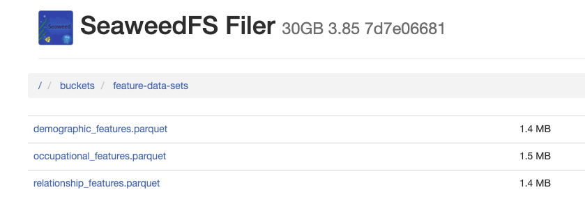
이미지 해설: SeaweedFS Filer 에서 buckets / feature-data-sets 를 연 모습입니다. demographic_features.parquet(1.4 MB), occupational_features.parquet(1.5 MB), relationship_features.parquet(1.4 MB) 세 파일이 올라와 있습니다. parquet 는 표 형태의 데이터를 열 단위로 압축해 저장하는 이진 파일 형식이라 텍스트 편집기로 열면 깨져 보입니다.
여기서 확인할 것: 파일 3개가 모두 있는지 (이름의 occupational 과 FeatureView 이름 occupation 이 다르지만 그대로가 맞습니다).
[PC 터미널 1] 업로드 확인 (새 터미널이면 아래 export 3줄(AWS_*)을 다시 실행하세요. 위 노트북 셀의 os.environ 4줄은 노트북 커널에만 적용되고 이 셸에는 적용되지 않으므로, 그 4줄을 실행했다고 해서 export 를 생략하면 안 됩니다. 이 셸에서 이미 export 를 했고 같은 터미널이라면 생략 가능)
# feature-data-sets 버킷에 객체 업로드 확인
export "AWS_ACCESS_KEY_ID"="minio"
export "AWS_SECRET_ACCESS_KEY"="minio123"
export "AWS_ENDPOINT_URL"="http://localhost:9000"
aws s3 ls s3://feature-data-sets --recursive --human-readable --summarize
출력 (수강생이 기록한 과거 실행 결과. 마지막 Total 두 줄은 --summarize 에 의해 같이 나오며, 원 노트에는 기록되어 있지 않습니다):
2026-10-29 01:26:16 1.4 MiB demographic_features.parquet
2026-10-29 01:26:16 1.4 MiB occupational_features.parquet
2026-10-29 01:26:16 1.4 MiB relationship_features.parquet
3. 피처 저장소 폴더 준비셀 두 개를 실행합니다. 저자의entity.py,features.py,feature_store.yaml을feature_repo/로 복사하면서 Redis 비밀번호를redis123으로 바꿉니다.
참고로 노트북 대신 터미널에서 같은 일을 하려면 대략 다음과 같이 합니다 (둘 다 실행할 필요는 없습니다. 노트북 셀을 썼다면 이 명령은 건너뜁니다). 먼저 S3 접속 설정 4줄을 입력합니다. [PC 터미널 1], <ENV_ROOT> 에서:
export AWS_ACCESS_KEY_ID="minio"
export AWS_SECRET_ACCESS_KEY="minio123"
export FEAST_S3_ENDPOINT_URL="<PC_S3_URL>"
export AWS_ENDPOINT_URL="<PC_S3_URL>"
🔧 본인 환경에 맞게 교체:<PC_S3_URL>= 변수 표의 값(예:http://localhost:9000). PC 에서 S3 에 접속하는 주소이며 A-3 의 forward 포트와 같습니다. 꺾쇠< >는 지우고 값만 넣습니다. 앞의AWS_*3줄은 aws cli 용이고,FEAST_S3_ENDPOINT_URL한 줄은 Feast 용이라 합쳐서 4줄입니다. B-3 등 aws 명령만 쓰는 곳에서 말하는 "3줄" 은 이 중AWS_*세 줄(AWS_ACCESS_KEY_ID,AWS_SECRET_ACCESS_KEY,AWS_ENDPOINT_URL)입니다.
그다음 노트북 대신 쓰는 명령입니다. 이 블록은 아래 feature_store.yaml 의 비밀번호를 손으로 고쳐야 하는 단계가 끼어 있어 한 번에 붙여 넣는 용도가 아니라 흐름을 보여 주는 참고용입니다. 노트북 셀을 썼다면 입력하지 않습니다.
# [참고용] 터미널로 직접 하려면 한 줄씩 입력하고, 마지막 줄의 비밀번호 변경은 편집기로 직접 합니다. 노트북 셀을 썼다면 입력하지 않습니다.
mkdir -p "<LOCAL_FEATURE_REPO>"
cp "<CH4_ROOT>/feast/entity.py" "<LOCAL_FEATURE_REPO>/entity.py"
cp "<CH4_ROOT>/feast/features.py" "<LOCAL_FEATURE_REPO>/features.py"
cp "<CH4_ROOT>/feast/feature_store.yaml" "<LOCAL_FEATURE_REPO>/feature_store.yaml"
# 이후 feature_store.yaml 의 connection_string 비밀번호를 redis123 으로 바꿔야 함 (노트북 셀은 정규식으로 자동 변경)
비밀번호를 바꾼 뒤의 feature_store.yaml 은 다음과 같은 모양이어야 합니다 (C-5 에서 실제 출력으로 다시 확인합니다).
project: <FEAST_PROJECT>
registry: s3://<REGISTRY_BUCKET>/registry_local.db
provider: local
offline_store:
type: file
online_store:
type: redis
connection_string: "<PC_REDIS_HOST>:<PC_REDIS_PORT>,password=<REDIS_PASSWORD>"
✅ 기대 결과 (수강생이 기록한 과거 실행 결과)
feature-data-sets버킷에 parquet 3개 (demographic_features,occupational_features,relationship_features)가 각각 약 1.4 MiB 로 올라가 있습니다.book/ch04/feature_repo/폴더에entity.py,features.py,feature_store.yaml이 복사되어 있습니다.
🔍 확인 방법
- 위
aws s3 ls로 parquet 3개가 보이는지 확인합니다. - 파일이 제대로 복사되었는지도 봅니다.
ls <LOCAL_FEATURE_REPO>에 위 파일 3개가 있는지,grep connection_string <LOCAL_FEATURE_REPO>/feature_store.yaml에password=redis123이 있는지 확인하세요. features.py안의 세 데이터 소스 경로가s3://feature-data-sets/...parquet이고 S3 주소 설정(s3_endpoint_override)이 들어 있는지도 확인합니다.
⚠ 자주 나는 오류
| 증상 | 원인 | 해결 |
|---|---|---|
업로드 셀에서 NoSuchBucket |
feature-data-sets 버킷 없음 |
A-4 에서 버킷 생성 (aws s3 ls 로 확인) |
| 연결 거부 / 타임아웃 | forward 꺼짐 | forward 창 확인 |
첫 셀 assert 실패 |
책 코드 위치 다름 | A-5 의 clone 위치와 노트북의 ../../upstream/chapter-4 경로 확인 |
| 이후 단계에서 Redis 인증 오류 | feature_store.yaml 의 비밀번호 변경이 안 됨 |
3번 셀 두 개를 모두 실행했는지, 파일에 password=redis123 이 있는지 확인 |
aws 명령이 인증 오류 |
새 터미널에서 export 안 함 |
같은 터미널에서 이어서 실행하거나 export 3줄 재실행 |
C-2. 정의 등록 (feast apply)
🎯 목적
feast apply 로 Entity·FeatureView·Data source 정의를 Registry 에 등록하고, Redis 쪽 온라인 저장소 준비를 시작합니다.
📋 사전조건
- C-1 을 마쳐서 원천 parquet 업로드와
feature_repo/준비가 끝나 있어야 합니다. - forward 의 9000, 6379 가 열려 있어야 합니다. 노트북을 새로 시작했다면
1. 환경 변수셀을 먼저 다시 실행하세요.
⌨ 명령어
[JupyterLab 노트북 셀]
4. feast apply셀을 실행합니다. 이 셀은s3://feature-registry/registry_local.db에 정의를 기록하고 Redis 를 준비합니다.
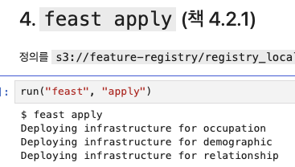
이미지 해설: 셀 안에서 run("feast", "apply") 를 실행한 모습입니다. 출력 첫 줄 $ feast apply 는 도우미가 실행한 명령을 보여 주고, 이어서 Deploying infrastructure for occupation, Deploying infrastructure for demographic, Deploying infrastructure for relationship 세 줄이 나옵니다. FeatureView 3개가 각각 등록(배포)되었다는 뜻입니다. 위쪽 문장은 "정의를 s3://feature-registry/registry_local..." 로 잘려 있으나 등록 위치를 설명하는 문구입니다.
여기서 확인할 것: Deploying infrastructure for ... 가 3줄인가. (메시지 순서는 매번 같지 않을 수 있습니다.)
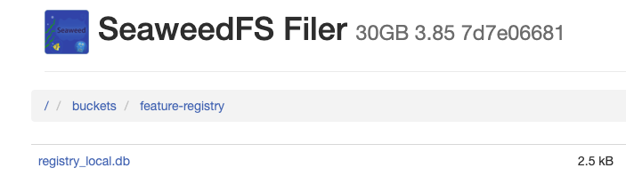
이미지 해설: SeaweedFS Filer 에서 buckets / feature-registry 를 연 화면입니다. registry_local.db(2.5 kB) 한 파일이 있습니다. 이것이 Feast 의 Registry 파일이며, 방금 apply 가 만든 "재고 목록표" 입니다. 이 시점에는 feature_store.yaml 은 아직 이 버킷에 없습니다(C-5 에서 올림).
여기서 확인할 것: registry_local.db 가 보이는가 (크기가 2.5 kB 안팎).
[PC 터미널 1] — S3 접속 설정 (C-2 의 export 4줄). 아래 확인 명령(aws s3 ls, feast feature-views list)과 터미널로 하는 방법이 이 설정을 씁니다. 노트북 셀은 이 값을 스스로 설정하므로, 노트북만 쓴다면 입력하지 않아도 됩니다. 이후 절에서 "C-2 의 export 4줄" 이라고 하면 이 블록입니다. 같은 터미널에서 이어서 실행하고, 새 터미널이면 다시 하세요.
export AWS_ACCESS_KEY_ID="minio"
export AWS_SECRET_ACCESS_KEY="minio123"
export FEAST_S3_ENDPOINT_URL="<PC_S3_URL>"
export AWS_ENDPOINT_URL="<PC_S3_URL>"
🔧 본인 환경에 맞게 교체:<PC_S3_URL>= 변수 표의 값(예:http://localhost:9000). PC 에서 S3 에 접속하는 주소이며 A-3 의 forward 포트와 같습니다. 꺾쇠< >는 지우고 값만 넣습니다. 앞의AWS_*3줄은 aws cli 용이고,FEAST_S3_ENDPOINT_URL한 줄은 Feast 용이라 합쳐서 4줄입니다. B-3 등 aws 명령만 쓰는 곳에서 말하는 "3줄" 은 이 중AWS_*세 줄(AWS_ACCESS_KEY_ID,AWS_SECRET_ACCESS_KEY,AWS_ENDPOINT_URL)입니다.
[PC 터미널 1] — 노트북 셀 대신 터미널에서 직접 하려면 (위 4줄을 입력한 같은 터미널에서). 노트북 셀로 했다면 이 블록은 입력하지 않습니다:
cd "<LOCAL_FEATURE_REPO>"
feast apply
feast feature-views list # 등록된 FeatureView 목록 확인
feast apply는feature_repo폴더(=feature_store.yaml이 있는 곳)에서 실행해야 합니다. 노트북의run()도우미가cwd=REPO로 이 폴더에서 실행해 줍니다.
✅ 기대 결과 (수강생이 기록한 과거 실행 결과)
Deploying infrastructure for occupation / demographic / relationship세 줄이 출력됩니다.s3://feature-registry/registry_local.db가 약 2.5 kB 크기로 생성됩니다.
🔍 확인 방법
[PC 터미널 1]에서aws s3 ls s3://feature-registry --recursive --human-readable을 실행했을 때 (위export4줄 이후)registry_local.db가 보이는지 확인합니다.feast feature-views list에 FeatureView 세 개가 나오는지도 확인합니다. 이 명령은feature_store.yaml이 있는 폴더에서 실행해야 하므로cd "<LOCAL_FEATURE_REPO>"한 뒤에 입력합니다.- 주의:
apply가 성공했다고 Redis 에 값이 적재된 것은 아닙니다. 값은 C-4 의materialize에서 들어갑니다.
⚠ 자주 나는 오류
| 증상 | 원인 | 해결 |
|---|---|---|
NoSuchBucket |
feature-registry 버킷 없음 |
A-4 로 돌아가 버킷 생성 |
| S3 연결 오류 | 9000 forward 꺼짐 또는 FEAST_S3_ENDPOINT_URL 미설정 |
forward 확인, 환경변수 셀(1. 환경 변수) 재실행 |
| Redis 인증/연결 오류 | 6379 forward 꺼짐 또는 비밀번호 불일치 | forward 확인, feature_store.yaml 의 password=redis123 확인 |
| 정의 파일 import 오류 | entity.py/features.py 복사 누락 |
C-1 의 3번 셀 두 개 재실행 |
C-3. 과거 시점 피처 조회
🎯 목적
사용자 목록과 기준 시각(event_timestamp) 을 주고, 그 시각에 알 수 있었던 피처 값을 붙여서 가져옵니다 (get_historical_features). 배치 추론(5장)이 쓰는 방식입니다.
📋 사전조건
- C-2 를 마쳐서 Registry 에 정의가 등록되어 있어야 하고, 원천 parquet 에
user_id와event_timestamp가 있어야 합니다. - forward 9000 이 열려 있어야 합니다.
⌨ 명령어
[JupyterLab 노트북 셀]
5. 과거 시점 피처 조회셀을 실행합니다. 이 셀은 책의feast_retrieval/retrieve_features.py를feature_repo/로 복사해 실행하며, 결과에 사용자와event_timestamp,Sex가 함께 나옵니다.
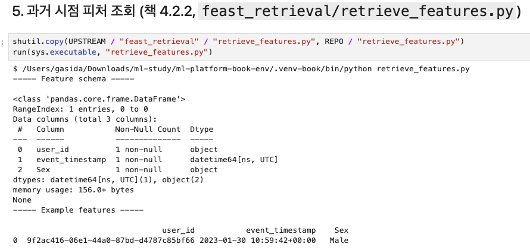
이미지 해설: 셀은 shutil.copy(...) 로 retrieve_features.py 를 feature_repo 에 복사한 뒤 run(sys.executable, "retrieve_features.py") 로 실행합니다. 출력의 ----- Feature schema ----- 아래는 DataFrame 정보입니다: 항목 1개(RangeIndex: 1 entries), 열 3개 — user_id(object), event_timestamp(datetime64[ns, UTC]), Sex(object). ----- Example features ----- 아래에 실제 한 행이 보입니다: 사용자 9f2ac416-06e1-44a0-87bd-d4787c85bf66, 2023-01-30 10:59:42+00:00, Male.
여기서 확인할 것: ① 열이 user_id, event_timestamp, Sex 3개인가, ② Sex 가 비어 있지 않은가(1 non-null). 사용자 ID(UUID)는 내 실행에서 다를 수 있으므로 그림의 ID 를 정답으로 삼지 마세요.
[PC 터미널 1] — 노트북 셀 대신 터미널에서 직접 하려면 먼저 C-2 의 export 4줄(S3 접속 설정)이 살아 있어야 합니다. 새 터미널이면 C-2 의 그 4줄을 다시 입력한 뒤 이어서 합니다 (<ENV_ROOT> 에서 시작합니다). 노트북 셀로 했다면 아래 블록은 입력하지 않습니다.
cd "<ENV_ROOT>"
cp "<CH4_ROOT>/feast_retrieval/retrieve_features.py" "<LOCAL_FEATURE_REPO>/retrieve_features.py"
cd "<LOCAL_FEATURE_REPO>"
python retrieve_features.py
과거 조회에서 꼭 이해할 점
- 핵심은 사용자 ID 만이 아니라 그때 알 수 있었던 값을 붙인다는 점입니다.
- 예를 들어 사용자 42 의 근무 시간이 5월 21일에 36, 6월 4일에 52 였다면 5월 22일 예측에는 36 을 써야 합니다. 최신값 52 를 가져오면 미래 정보가 섞입니다.
- TTL 이 2일이면 5월 25일 조회에서 21일 값은 너무 오래돼 제외됩니다. 또 21일에 발생한 데이터가 23일에 도착했다면 22일에는 알 수 없었으므로, 지연 도착이나 보정 이력이 있는 원천은 실제 사용 가능 시점까지 고려해야 합니다. 시간 필드 하나만 추가한다고 모든 누설이 막히지는 않습니다.
참고로 위 사용자 42 의 숫자와 "TTL 2일" 은 설명을 위해 든 가정 예입니다. 이 실습 책 코드의 FeatureView TTL 은 365일로 알려져 있지만 직접 확인하지는 않았으니,
features.py를 직접 열어 확인해 보세요. Feast 는 entity 행의 기준 시각에서 과거로 TTL 범위까지 조회합니다.
✅ 기대 결과 (수강생이 기록한 과거 실행 결과)
- DataFrame 에
user_id,event_timestamp,Sex3열이 1행으로 나옵니다 (예:2023-01-30 10:59:42+00:00,Male).
🔍 확인 방법
- 출력
Feature schema의 열이 3개이고Non-Null Count가1 non-null인지 봅니다. Sex가None/NaN이면 아래 오류 표를 확인합니다.
⚠ 자주 나는 오류
| 증상 | 원인 | 해결 |
|---|---|---|
Sex 가 비어 있음 (None/NaN) |
기준 시각 이전 원천 값이 없음 / TTL 밖 / 잘못된 Registry | 사용자 키와 event_timestamp, 원천 parquet 의 시간 범위를 같이 확인. 다른 프로젝트의 Registry 를 보고 있지 않은지도 확인 |
| S3 접속 오류 | 9000 forward / 환경변수 | forward 확인, 1. 환경 변수 셀 재실행 |
feature_store.yaml 관련 오류 |
폴더 위치 | 스크립트는 feature_store.yaml 이 있는 feature_repo/ 에서 실행해야 함 |
C-4. 온라인 저장소 적재와 조회
🎯 목적
원천 parquet 의 사용자별 최신값을 Redis 에 적재(feast materialize) 하고, 낮은 지연으로 읽는 온라인 조회가 되는지 확인합니다. Redis 에 실제로 몇 개의 키가 생겼는지 터미널에서 세 가지 방법으로 확인합니다.
📋 사전조건
- C-2 를 마쳐서 apply 로 정의가 등록되어 있어야 합니다.
- forward 의 6379(Redis) 와 9000 이 열려 있고,
feature_store.yaml의 비밀번호가redis123이어야 합니다. - 아래 터미널 확인은
kubectl이 클러스터에 접속할 수 있어야 합니다.
⌨ 명령어
[JupyterLab 노트북 셀]
6. 온라인 저장소로 적재셀을 실행합니다.feast materialize가 README 의 기간인2022-09-16T00:00:00부터2023-09-17T00:00:00까지 원천을 읽어 Redis 에 최신값을 적재합니다. (노트북 셀 대신 터미널에서 하려면<LOCAL_FEATURE_REPO>에서feast materialize "<MATERIALIZE_START>" "<MATERIALIZE_END>"를 실행합니다. 같은 터미널에서 이어서 한다면 그대로 되고, 새 터미널이면 C-2 의export4줄(S3 접속 설정)을 다시 입력해야 합니다.)
[PC 터미널 1] — Redis 에 키가 몇 개 들어갔는지 확인합니다 (kubectl 이 필요, forward 와는 무관합니다).
# redis 키 개수 확인
export REDIS_PW='redis123'
# 1) 키 개수 (가장 간단)
kubectl -n redis exec deploy/redis-deployment-master -- redis-cli -a "$REDIS_PW" DBSIZE
30162
# 2) 키스페이스 요약
kubectl -n redis exec deploy/redis-deployment-master -- redis-cli -a "$REDIS_PW" INFO keyspace
db0:keys=30162,expires=0,avg_ttl=0,subexpiry=0
# 3) 실제로 훑어서 세기 (SCAN 사용, 서버를 막지 않음) -> 데이터의 사용자 수(30,162)와 일치
kubectl -n redis exec deploy/redis-deployment-master -- redis-cli -a "$REDIS_PW" --scan --count 1000 | wc -l
30162
| 방법 | 명령 | 무엇을 알려 주나 |
|---|---|---|
1) DBSIZE |
redis-cli ... DBSIZE |
현재 DB 의 전체 키 개수 (가장 간단) |
2) INFO keyspace |
redis-cli ... INFO keyspace |
DB 별 요약: db0:keys=30162 (키 수), expires=0 (만료 설정된 키 수), avg_ttl=0 (평균 남은 수명) |
3) --scan |
redis-cli ... --scan --count 1000 \| wc -l |
키를 실제로 훑으면서 출력한 줄 수를 셈. SCAN 은 한꺼번에 모두 가져오지 않고 나눠서 순회하므로 서버를 오래 막지 않음 |
세 방법이 모두 30162 로 일치하면 "원천 사용자 30,162명 분의 키가 들어갔다"고 볼 수 있습니다. 한 사용자(엔티티)당 키 하나에 세 FeatureView 의 값이 함께 들어 있어서, FeatureView 가 3개라고 키가 3배가 되지는 않습니다. 덧붙이면 이는 Feast 0.40.1 의 Redis 구현 기준이며, 다른 버전에서도 같은지는 확인하지 않았습니다.
🔧 본인 환경에 맞게 교체
<KUBE_CONTEXT>=kind-book-env: 위 명령은 현재 kubectl context 가 이 클러스터라고 가정합니다. 다른 context 를 쓰는 중이면kubectl --context "<KUBE_CONTEXT>" ...를 붙이세요 (확인:kubectl config get-contexts).
<REDIS_NAMESPACE>=redis(위-n redis),<REDIS_DEPLOYMENT>=redis-deployment-master(위deploy/...) : 확인은kubectl -n redis get deploy.
<REDIS_PASSWORD>=redis123(위REDIS_PW) : 실습용 값, 실제 환경에서는 변경.
<MATERIALIZE_START>=2022-09-16T00:00:00,<MATERIALIZE_END>=2023-09-17T00:00:00: 원천 데이터의 시간 범위를 덮는 기간이어야 합니다.
주의: 위 숫자(30162)는 이 데이터의 사용자 수 때문에 나오는 값입니다.
--scan은KEYS명령보다 서버에 부담이 적지만, 중복 반환이나 도중 변경 가능성이 있어wc -l을 "정확한 검증"으로 일반화하지는 마세요.--count 1000은 반환 개수를 보장하는 값이 아닙니다. 또 키 개수가 맞다고 모든 피처 값이 채워졌다는 뜻은 아닙니다.redis-cli -a는 환경에 따라 "비밀번호를 명령줄에 쓰는 것은 안전하지 않다"는 경고를 출력할 수 있습니다 (원 노트의 출력에는 없었습니다).
[JupyterLab 노트북 셀]
7. 온라인 피처 조회셀을 실행하고Sex값이 비어 있지 않은지 확인합니다.
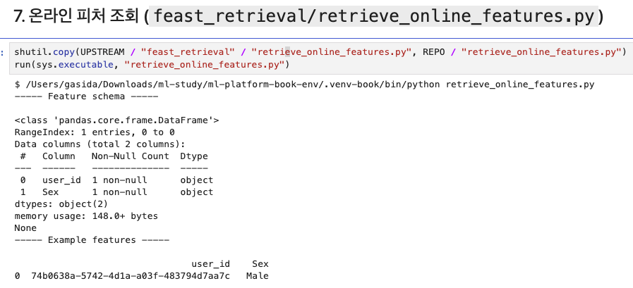
이미지 해설: 셀이 retrieve_online_features.py 를 복사해 실행합니다. 출력의 Feature schema 에는 열이 2개(user_id, Sex)만 있습니다 — C-3 과 달리 event_timestamp 가 없습니다. 온라인 조회는 "지금의 최신 값"을 읽는 것이라 기준 시각이 필요 없기 때문입니다. Example features 에는 사용자 74b0638a-5742-4d1a-a03f-483794d7aa7c 의 Sex = Male 이 보입니다.
여기서 확인할 것: Sex 가 None 이 아닌 실제 값(Male/Female)인가.
- 과거 조회 vs 온라인 조회: 과거 조회는 엔티티의 기준 시각에 맞는 값을 찾고, 온라인 조회는 낮은 지연으로 최신값을 읽는 데 초점을 둡니다. 그래서 5장처럼 과거 시각을 기준으로 배치 추론할 때는 온라인 최신값 대신
get_historical_features()를 씁니다. None이 나오면 적재 여부와 해당 사용자의 원천 데이터를 확인합니다. HTTP 요청 성공이나 적재 기간 표시만으로 모든 사용자에게 유효한 피처가 있다고 볼 수는 없습니다.
✅ 기대 결과 (수강생이 기록한 과거 실행 결과)
- 적재 기간은
2022-09-16T00:00:00~2023-09-17T00:00:00입니다. - Redis
DBSIZE/INFO keyspace/--scan모두 30162 이고,db0:keys=30162,expires=0,avg_ttl=0,subexpiry=0이 출력됩니다. - 온라인 조회 결과에
user_id,Sex가 비어 있지 않게 나옵니다.
🔍 확인 방법
- 위 세 가지 Redis 확인 명령이 서로 같은 숫자를 내는지 봅니다 (이 데이터에서는 사용자 수 30,162).
- 온라인 조회의
user_id가 실제로 원천에 있는 사용자인지,Sex값이 원천과 같은지 확인합니다. 원천 parquet 에서 한 건을 골라 비교해 볼 수 있습니다.
⚠ 자주 나는 오류
| 증상 | 원인 | 해결 |
|---|---|---|
온라인 조회가 None |
적재(materialize) 안 함 / 해당 사용자가 적재 기간에 없음 / 다른 프로젝트의 Registry | materialize 셀 재실행, 기간이 원천 시각을 덮는지, project 이름 일치 확인 |
DBSIZE 가 0 |
materialize 가 실패했거나 아직 안 함 (apply 만으로는 비어 있음) | 6번 셀 출력의 오류 확인 후 재실행 |
kubectl exec 에서 deployments.apps "redis-deployment-master" not found |
네임스페이스/이름이 다름 | kubectl get deploy -A \| grep -i redis 로 확인 후 <REDIS_NAMESPACE>·<REDIS_DEPLOYMENT> 교체 |
NOAUTH / invalid password |
비밀번호가 다름 | REDIS_PW 값을 redis123 (또는 본인이 설정한 값) 으로 맞춤 |
| 노트북에서 Redis 연결 거부 | 6379 forward 꺼짐 | forward 창 확인 |
C-5. 설정 파일 업로드
🎯 목적
PC 에서 쓰는 feature_store.yaml 을 feature-registry 버킷에 올립니다. 5장 파이프라인이 이 위치에서 설정 파일을 내려받는 구조라서 필요한 단계입니다 (README 의 마지막 단계).
📋 사전조건
- C-2 에서 만든
registry_local.db가 이미 있어야 하고, C-1 의 PC 용feature_store.yaml이feature_repo/에 있어야 합니다. - forward 9000 이 열려 있어야 합니다.
⌨ 명령어
[JupyterLab 노트북 셀]
8. feature_store.yaml을 feature-registry 버킷에 올리기셀을 실행합니다. 버킷에feature_store.yaml과registry_local.db가 있으면 여기까지 완료입니다.
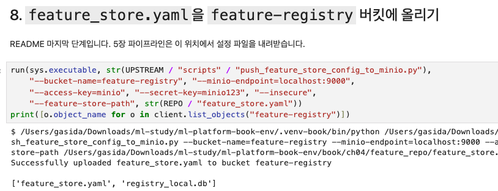
이미지 해설: 셀은 책 코드의 scripts/push_feature_store_config_to_minio.py 를 --bucket-name=feature-registry --minio-endpoint=localhost:9000 --access-key=minio --secret-key=minio123 --insecure --feature-store-path <feature_repo>/feature_store.yaml 옵션으로 실행합니다 (--insecure 는 https 가 아닌 http 로 접속한다는 뜻). 출력은 Successfully uploaded feature_store.yaml to bucket feature-registry, 그리고 client.list_objects("feature-registry") 로 뽑은 목록 ['feature_store.yaml', 'registry_local.db'] 입니다. 위쪽 문장은 "README 마지막 단계입니다. 5장 파이프라인은 이 위치에서 설정 파일을 내려받습니다." 라고 설명합니다.
여기서 확인할 것: Successfully uploaded ... 가 나오고 목록에 파일 2개(feature_store.yaml, registry_local.db)가 있는가.
[PC 터미널 1] — 터미널에서 업로드 결과를 확인합니다 (새 터미널이면 export 3줄(AWS_*) 다시. C-2 의 4줄을 이미 입력한 터미널이면 생략).
# feature-registry 버킷에 객체 업로드 확인
export "AWS_ACCESS_KEY_ID"="minio"
export "AWS_SECRET_ACCESS_KEY"="minio123"
export "AWS_ENDPOINT_URL"="http://localhost:9000"
aws s3 ls s3://feature-registry --recursive --human-readable
2026-10-29 01:40:12 203 Bytes feature_store.yaml
2026-10-29 01:36:40 2.5 KiB registry_local.db
#
aws s3 cp s3://feature-registry/feature_store.yaml - | cat
project: my_feature_repo
registry: s3://feature-registry/registry_local.db
provider: local
offline_store:
type: file
online_store:
type: redis
connection_string: "localhost:6379,password=redis123"
(출력은 수강생이 기록한 과거 실행 결과이며, 첫 줄의 # 은 원 노트에 있던 빈 주석 줄입니다.) aws s3 cp ... - 는 파일을 저장하지 않고 화면(표준출력)으로 내보내서 cat 이 그대로 보여 줍니다.
feature_store.yaml 을 한 줄씩 읽기
| 줄 | 뜻 |
|---|---|
project: my_feature_repo |
이 Feast 설정의 프로젝트 이름 (Registry, Redis 키 구분에 쓰임) |
registry: s3://feature-registry/registry_local.db |
재고 목록표(Registry)의 S3 위치 |
provider: local |
로컬 방식 제공자 |
offline_store: type: file |
과거 기록 창고는 파일(parquet) 방식 |
online_store: type: redis |
진열대는 Redis |
connection_string: "localhost:6379,password=redis123" |
Redis 접속 주소와 비밀번호 (PC 용 localhost, 비밀번호는 실습용 값, 실제 환경에서는 변경) |
⚠ 중요한 점: 이 설정은 PC 에서 쓰는 localhost 용 설정입니다. Pod 에서localhost는 PC 가 아니라 해당 Pod 자신을 가리키므로, D 단계에서는 클러스터 주소를 쓰는 정의와 설정을 따로 준비합니다. 참고로 D 단계에서는 이 파일을 덮어쓰지 않고 별도 파일(예:feature_store_k8s.yaml)과registry.db를 사용합니다. 이 파일을 클러스터용으로 잘못 덮어쓰면 PC 쪽 C-4 조회가 깨질 수 있습니다.
🔧 본인 환경에 맞게 교체
<REGISTRY_BUCKET>=feature-registry(업로드 대상 버킷, 스크립트 옵션--bucket-name).
<PC_S3_HOSTPORT>=localhost:9000(스크립트 옵션--minio-endpoint, scheme(http://) 없이 host:port).
<PC_S3_URL>=http://localhost:9000(위AWS_ENDPOINT_URL, http:// 포함). 두 값을 헷갈리지 마세요.
<LOCAL_FEAST_CONFIG>=feature_store.yaml(버킷 안 파일 이름).
스크립트 옵션 이름은 원 노트의 화면을 기준으로 적었습니다. 책 코드 버전에 따라 다를 수 있으니python upstream/chapter-4/scripts/push_feature_store_config_to_minio.py --help로 직접 확인하세요. 키는 실습용, 실제 환경에서는 변경.
✅ 기대 결과 (수강생이 기록한 과거 실행 결과)
Successfully uploaded feature_store.yaml to bucket feature-registry가 출력됩니다.- 버킷에
feature_store.yaml(203 Bytes),registry_local.db(2.5 KiB)가 있습니다. feature_store.yaml내용은 위와 같고connection_string이localhost:6379,password=redis123입니다.
🔍 확인 방법
aws s3 ls s3://feature-registry --recursive --human-readable에 파일 2개가 보이는지 확인합니다.aws s3 cp s3://feature-registry/feature_store.yaml - | cat로 내용을 확인합니다.
⚠ 자주 나는 오류
| 증상 | 원인 | 해결 |
|---|---|---|
| 업로드 스크립트가 연결 오류 | 9000 forward / --minio-endpoint 형식 |
host:port 형식인지(localhost:9000), forward 확인 |
버킷에 feature_store.yaml 만 있고 registry_local.db 가 없음 |
C-2 의 apply 를 안 함 |
4번 셀 feast apply 실행 |
| 이후 D 단계에서 연결 실패 | PC 용 localhost 설정을 Pod 에서 사용 | D 단계의 클러스터용 설정을 따로 준비 |
C-6. (추가) Feast UI 사용하기
🎯 목적
(추가 항목) Feast UI 로 등록된 정의(데이터 소스, 엔티티, FeatureView)를 웹 화면에서 눈으로 확인합니다.
📋 사전조건
- C-2 를 마쳐서 Registry 에 정의가 등록되어 있어야 합니다.
feature_store.yaml설정 파일이 있는ml-platform-book-env/book/ch04/feature_repo디렉터리에서 실행해야 합니다.- 포트 8889 가 비어 있어야 합니다 (아래 오류 표 참고).
⌨ 명령어
[PC 터미널 5: Feast UI 창] 새 터미널을 하나 더 엽니다. 이 창은 UI 를 켜 둔 동안 계속 사용되므로 끄려면 Ctrl+C 를 누르세요.
(0) 새 터미널 준비 — 새 창은 앞 창의 설정을 물려받지 않으므로 먼저 아래를 입력합니다.
macOS(zsh) 라면 가장 먼저 아래 한 줄을 입력합니다 (이 창에서 # 설명 이 붙은 줄이 오류 나지 않게 합니다). Linux·WSL(bash)은 이 줄이 필요 없습니다.
setopt interactive_comments
그다음 폴더로 이동하고 가상환경을 켭니다. 프롬프트 앞에 (.venv-book) 이 이미 보이면 source 줄은 생략합니다.
cd "<ENV_ROOT>"
source <VENV_NAME>/bin/activate
Feast 가 C-2 에서 쓴 S3 접속 정보도 새 창에서는 사라집니다. C-2 의 export 4줄(S3 접속 설정)과 같은 4줄을 이 창에서도 입력하세요 (실습용 값입니다. 실제 환경에서는 바꾸세요).
export AWS_ACCESS_KEY_ID="minio"
export AWS_SECRET_ACCESS_KEY="minio123"
export FEAST_S3_ENDPOINT_URL="<PC_S3_URL>"
export AWS_ENDPOINT_URL="<PC_S3_URL>"
<PC_S3_URL> 은 변수 표의 값(예: http://localhost:9000)으로 바꿉니다. A-3 의 forward 창(터미널 2)이 켜져 있어야 합니다.
(1) 폴더 확인 (선택)
# tree 가 없으면(macOS·Ubuntu 기본에는 없을 수 있음) 대신: ls -R book/ch04/feature_repo
# (위 (0) 에서 cd "<ENV_ROOT>" 를 했으므로 이 위치에서 실행)
tree book/ch04/feature_repo
출력 예시 (원 노트에서 ... 는 생략된 부분입니다):
book/ch04/feature_repo
├── entity.py
├── feature_store.yaml
...
(2) Feast UI 실행 — 이 창은 UI 를 켜 두는 동안 계속 사용 중이 됩니다.
cd "<ENV_ROOT>/book/ch04/feature_repo"
feast ui -p 8889
(3) 브라우저로 접속 — 위 창은 그대로 두고 [PC 터미널 1] 에서, 또는 브라우저 주소창에 직접 입력합니다.
# macOS 는 open, Linux 는 xdg-open, Windows(WSL) 는 브라우저 주소창에 직접 입력합니다.
open http://127.0.0.1:8889
(tree 출력의 ... 는 원 노트에서 생략된 부분입니다. feast ui -p 8889 는 UI 서버를 켜 두는 명령이라 이 창은 계속 사용 중 상태가 됩니다. open 은 macOS 명령이며, Linux 에서는 xdg-open, Windows PowerShell 에서는 Start-Process 를 쓰면 됩니다. 브라우저 주소창에 http://127.0.0.1:8889 를 직접 입력하면 OS 와 관계없이 열립니다.)
🔧 본인 환경에 맞게 교체
<LOCAL_FEATURE_REPO>=book/ch04/feature_repo(<ENV_ROOT>기준 상대 경로) :feature_store.yaml이 있는 폴더.
<FEAST_UI_PORT>=8889: 명령feast ui -p <FEAST_UI_PORT>와 접속 주소http://127.0.0.1:<FEAST_UI_PORT>에 같은 값. 기본 포트(8888)는 Jupyter 와 겹칠 수 있어 8889 를 쓴 듯하지만, 이유가 따로 적혀 있지는 않습니다.
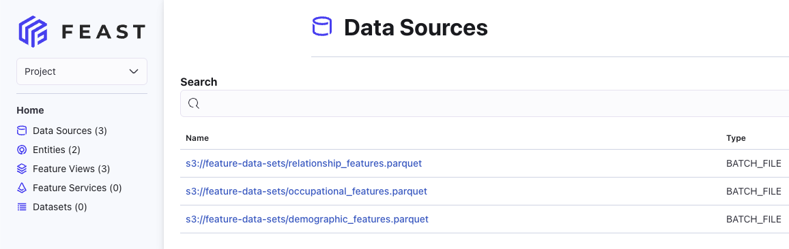
이미지 해설: Feast UI 의 Data Sources(3) 화면입니다. 왼쪽 메뉴에 Data Sources (3), Entities (2), Feature Views (3), Feature Services (0), Datasets (0) 의 개수가 보입니다. 목록에는 s3://feature-data-sets/relationship_features.parquet, .../occupational_features.parquet, .../demographic_features.parquet 세 줄이 있고 Type 은 모두 BATCH_FILE (파일로 읽는 배치 데이터) 입니다.
여기서 확인할 것: 데이터 소스가 3개이고 경로가 s3://feature-data-sets/... 인가.
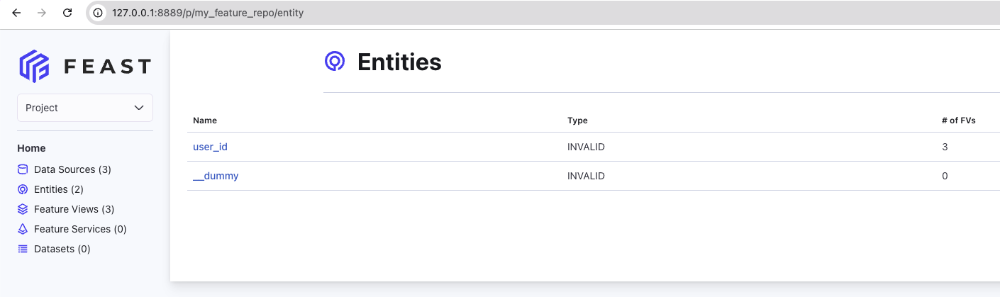
이미지 해설: Entities(2) 화면입니다. 주소창이 127.0.0.1:8889/p/my_feature_repo/entity 이므로 프로젝트 이름은 my_feature_repo 입니다. 표에 user_id(# of FVs = 3), __dummy(# of FVs = 0) 두 줄이 있고 Type 열은 둘 다 INVALID 입니다. user_id 는 FeatureView 3개에서 쓰이는 우리의 진짜 키이고, __dummy 는 Feast 가 내부적으로 만든 항목인 듯하지만, 공식 문서에서 확인하지는 않았습니다.
⚠ 바로잡기 / 판독 주의: Type 열의INVALID는 화면에 그대로 보이는 값이지만 원인은 확정하지 못했습니다. 이 화면 표기와 별개로 앞 단계의apply와 과거/온라인 조회가 성공했다면 실습 진행에는 지장이 없습니다. 이 표기를 근거로 정의가 잘못되었다고 판단하지 마세요 (Entity 타입 표기나 UI 버전 차이 때문일 수 있지만 직접 확인하지는 않았습니다).
여기서 확인할 것: user_id 의 # of FVs 가 3 인가 (세 FeatureView 가 모두 user_id 로 연결됨).
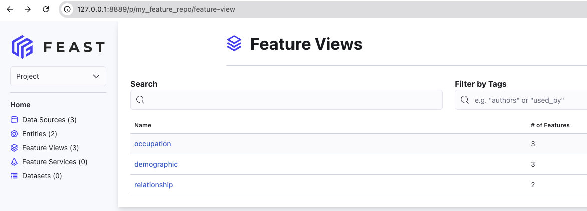
이미지 해설: Feature Views(3) 화면입니다. occupation(# of Features = 3), demographic(3), relationship(2) 세 줄이 보입니다. 피처 수를 합치면 3 + 3 + 2 = 8개이며, 이는 B-3 에서 본 feature_df 의 입력 8개 열과 같습니다. 위에는 이름 검색창과 태그 필터가 있습니다.
여기서 확인할 것: FeatureView 3개의 이름과 피처 수 (3, 3, 2). 화면에 Feature Services (0), Datasets (0) 인 것도 함께 확인하세요 (아직 FeatureService 를 만들지 않았다는 뜻입니다).
✅ 기대 결과 (수강생이 기록한 과거 실행 결과)
- 브라우저로
http://127.0.0.1:8889에 접속하면 프로젝트my_feature_repo가 보입니다. - Data Sources 3 (BATCH_FILE), Entities 2 (
user_id,__dummy), Feature Views 3 (피처 합계 8), Feature Services 0, Datasets 0 으로 표시됩니다.
🔍 확인 방법
- 위 세 화면의 개수와 이름이 같은지 비교합니다. 다르면
feast apply를 다른 폴더에서 실행했거나, 다른feature_store.yaml을 보고 있는 것일 수 있습니다.
⚠ 자주 나는 오류
| 증상 | 원인 | 해결 |
|---|---|---|
feast ui 가 포트 사용 중 오류 |
8889 를 다른 프로그램이 사용 중 (기본 8888 은 Jupyter 와 충돌 가능) | 다른 포트로 -p 변경하고 접속 주소도 같은 포트로 |
| 빈 프로젝트 또는 정의가 안 보임 | feature_store.yaml 이 없는 폴더에서 실행 / 다른 프로젝트 |
book/ch04/feature_repo 로 이동해서 실행, feast apply 가 끝났는지 확인 |
| UI 가 S3 연결 오류 | 9000 forward 꺼짐 또는 환경변수 없음 | forward 확인, export AWS_*, FEAST_S3_ENDPOINT_URL 설정 |
Entity Type 이 INVALID |
위 판독 주의 참고 | 실습 진행에는 지장 없음(원인 미확정) |
open: command not found |
macOS 가 아닌 OS | 브라우저에 주소 직접 입력 |
C-7. 학습과 추론에서 같은 피처를 쓴다는 것
🎯 목적
C 단계가 책의 흐름을 실행한 것인지, 학습부터 추론까지 같은 피처를 쓰도록 계약을 고정한 것인지 구분합니다. 읽기용 정리 단계이며 실행할 명령은 없습니다.
📋 사전조건
- B, C-1~C-5 를 읽었거나 실행해 두세요.
⌨ 명령어
없습니다 (개념 정리 단계입니다).
학습과 추론에서 같은 피처를 쓴다는 것
- 책의 학습 노트북은 CSV 를 직접 읽고, Feast 는 뒤에서 별도로 준비합니다. 따라서 이 노트북이 Feast 에서 학습 피처를 조회하거나 FeatureService 를 MLflow 에 기록하는 것은 아닙니다. 책의 흐름을 실행한 것과, 학습부터 추론까지 피처 계약을 고정한 것은 구분해야 합니다.
- 실제 연결을 강화하려면 필요한 FeatureView 를
income_model_v1같은 FeatureService 로 묶고, 학습 코드가 그 서비스로 과거 피처를 조회하게 합니다. 그때 MLflow run 과 모델 버전에 서비스 이름, 피처 목록, 정의 파일의 해시와 데이터 스냅샷을 남기면 추론에서 같은 계약인지 확인할 수 있습니다. 책은 이 추가 연결을 "아래의 보충 예제로 분리했다" 고 설명하지만, 이 가이드에서는 선택 심화로 다룹니다 (보충 섹션 참고).
flowchart LR
subgraph NOW["이 실습의 실제 흐름"]
CSV["학습 CSV 직접 읽기"] --> TRAIN["B 학습 MLflow 기록"]
FEAST1["C Feast 별도 준비"] --> INF["D 추론 시 Feast 조회"]
end
subgraph IDEAL["연결을 강화한 흐름 선택 심화"]
FS["FeatureService income_model_v1"] --> TR2["학습 코드가 과거 피처 조회"]
TR2 --> ML2["MLflow 에 서비스명 피처 목록 정의 해시 스냅샷 기록"]
ML2 --> INF2["추론에서 같은 계약인지 확인"]
end그림 읽는 법: 왼쪽(이 실습)은 학습과 추론이 서로 다른 입구에서 데이터를 가져오고, 오른쪽(강화 흐름)은 같은 FeatureService 를 양쪽이 공유하며 기록까지 남깁니다. 참고로 피처 이름 목록이 같다는 것만으로 학습·추론의 계약이 고정되지는 않으며, 전처리(원-핫 열 순서, column_list.pkl)와 정의 파일 버전까지 같이 관리해야 합니다.
✅ 기대 결과 / 🔍 확인 방법
- "이 실습은 학습에서 Feast 를 쓰지 않는다"를 설명할 수 있으면 됩니다.
⚠ 자주 나는 오류 (오해)
| 오해 | 실제 |
|---|---|
| Feast 를 설치했으니 학습도 Feast 피처로 했다 | 이 노트북의 학습은 CSV 를 직접 읽음 |
| MLflow 에 FeatureService 정보가 자동으로 기록된다 | 이 노트북은 기록하지 않음 |
| 피처 이름이 같으면 학습/추론 입력이 같다 | 전처리, 열 순서, 정의 버전까지 같아야 함 |
D. Kubeflow Pipelines로 배치 추론 (개요)
5장의 배치 추론은 "예측 대상 사용자 목록"을 읽어 → 그 시점의 피처를 Feast 로 조회하고 → MLflow 에 등록해 둔 모델로 예측하고 → 결과 parquet 을 S3 호환 저장소(inference-datasets 버킷)에 쓰는 일을 Kubeflow Pipelines(KFP) 로 자동화하는 일입니다. 사람이 노트북 셀을 하나씩 실행하던 일을, "네 개의 작은 작업(컴포넌트)을 순서대로 Pod 로 띄우는 파이프라인"으로 바꾼다고 생각하면 됩니다.
데이터는 어떻게 넘어가나
- KFP 는 단계의 순서와 의존성을 관리합니다. 실제 데이터는 작업 Pod 가 파일로 저장하고 다음 Pod 에 전달합니다. 앞 Pod 의 파이썬 객체나 메모리를 공유하는 구조가 아닙니다.
- 모델 이름과 처리 설정 같은 작은 값은 파라미터로, 대상 목록과 피처 테이블은 파일 아티팩트로 전달합니다.
Input[Dataset]과Output[Dataset]은 파일 전달 계약일 뿐 열 타입이나 결측 검사가 아닙니다. 스키마와 업무 키 검사는 컴포넌트 코드에서 해야 합니다.
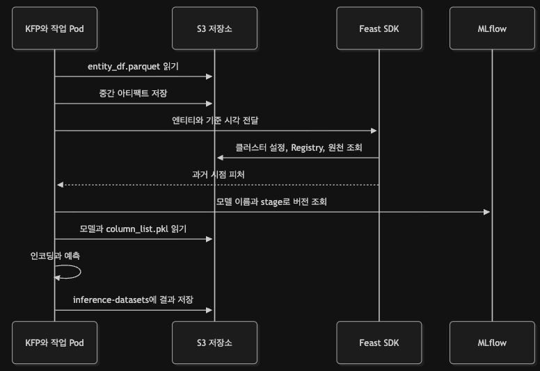
이미지 해설 — 가로로 네 주체(KFP와 작업 Pod / S3 저장소 / Feast SDK / MLflow)가 있고, 위에서 아래로 시간이 흐르는 시퀀스 다이어그램입니다. 화살표를 위에서부터 읽습니다.
- 작업 Pod 가 S3 에서
entity_df.parquet을 읽고, 중간 아티팩트를 S3 에 저장합니다. - 작업 Pod 가 엔티티와 기준 시각을 Feast SDK 에 넘깁니다.
- Feast SDK 가 클러스터 설정, Registry, 원천을 S3 에서 조회하고, 과거 시점 피처(점선 화살표는 반환)를 Pod 에 돌려줍니다.
- Pod 가 MLflow 에서 모델 이름과 stage 로 버전을 조회하고, S3 에서 모델과
column_list.pkl을 읽습니다. - Pod 안에서 인코딩과 예측(자기 자신으로 돌아오는 화살표)을 하고, 결과를
inference-datasets에 저장합니다.
여기서 확인할 것: Feast SDK 의 화살표가 Redis 가 아니라 S3 쪽을 향한다는 점입니다. 이 파이프라인은 "과거 시점 피처"를 조회하므로 온라인 스토어(Redis)가 아니라 S3 의 registry.db 와 원천 parquet 을 읽습니다. (그림 속 "S3 저장소"는 이 실습에서 MinIO 계열 S3 호환 서버입니다.)
아래는 같은 흐름을 이 실습 환경의 구성요소 이름으로 다시 그린 것입니다.
sequenceDiagram
participant U as 수강생
participant K as KFP와 Argo
participant P as 작업 Pod
participant S as S3 저장소
participant F as Feast SDK
participant M as MLflow
U->>K: 파라미터 14개로 Run 시작
K->>P: read-data-from-minio 실행
P->>S: entity_df.parquet 읽기
P->>S: 중간 아티팩트 저장
K->>P: retrieve-features-from-feast 실행
P->>F: 엔티티와 기준 시각 전달
F->>S: registry.db 와 원천 parquet 조회
F-->>P: 과거 시점 피처
K->>P: model-inference 실행
P->>M: 모델 이름과 stage 로 버전 조회
P->>S: 모델과 column_list.pkl 읽기
P->>P: 인코딩과 예측
K->>P: write-data-to-minio 실행
P->>S: inference-datasets 에 parquet 저장네 컴포넌트 한눈에 보기
| 컴포넌트 | 입력 | 출력과 접속 대상 |
|---|---|---|
| read-data-from-minio | entity_df.parquet 위치 |
S3에서 읽은 예측 대상 사용자와 기준 시각 |
| retrieve-features-from-feast | 대상 엔티티, Feast 설정과 피처 목록 | S3 Registry와 원천에서 조회한 과거 피처 |
| model-inference | 피처, 모델 이름과 stage | MLflow에서 찾은 모델의 예측값 |
| write-data-to-minio | 예측 결과와 목적지 | inference-datasets의 최종 parquet |
왜 이미지를 직접 빌드해서 kind 에 넣나
KFP 의 각 작업은 컨테이너 이미지(코드와 라이브러리를 한 묶음으로 포장한 파일) 하나를 Pod 로 띄웁니다. 그래서 파이프라인을 돌리기 전에 "이 작업들이 쓸 이미지"를 먼저 준비해야 합니다. 저자 책과 이 실습의 차이는 다음과 같습니다.
| 항목 | 저자 책 | 이 실습(수강생 노트) |
|---|---|---|
| 이미지 배포 | Docker Hub 에 push | 내 PC 에서 로컬 빌드 → kind 노드에 직접 적재 |
| 베이스 이미지 | python:3.10-slim-buster |
python:3.10-slim-bookworm (buster 는 패키지 설치에서 404) |
| scikit-learn(컴포넌트) | 저자 requirements | 모델을 저장한 노트북과 같은 1.5.2 로 고정 |
| 이미지 참조 | 저자 Docker Hub 이름 | book-ch5/components:0.1, book-ch5/feast-job:0.1 |
| 네임스페이스 | 저자 yaml 기본 | kubeflow 를 명시 |
kind 는 "Docker 컨테이너 하나가 쿠버네티스 노드 역할을 하는" 로컬 클러스터라서, 노드 안의 컨테이너 런타임은 PC 의 Docker 이미지 저장소와 별개입니다. PC 에서 docker build 만 하면 노드는 그 이미지를 모릅니다. 그래서 D-2 에서 "적재(load)"가 꼭 필요하고, Pod 쪽은 imagePullPolicy: Never(인터넷에서 받지 말고 노드에 있는 것만 쓰라는 뜻)로 설정해 둡니다.
flowchart LR
A["D-1 prepare.py 로 이미지 이름 수정"] --> B["D-2 docker build 로 로컬 이미지 2개"]
B --> C["bookenv.py load 로 kind 노드에 적재"]
C --> D["D-3 feast-job 으로 Registry 등록"]
D --> E["D-4 업로드와 컴파일"]
E --> F["D-5 이후 파이프라인 실행"]D-1 ~ D-3 의 순서
| 단계 | 하는 일 | 핵심 결과 |
|---|---|---|
| D-1 | 책 코드의 이미지 이름·Redis 비밀번호를 이 환경에 맞게 수정 | 컴포넌트 이미지 참조 4곳 + Redis password set |
| D-2 | 이미지 2개 빌드 → kind 노드에 적재 | 노드 안 crictl images 에 book-ch5 이미지 2개 |
| D-3 | 클러스터 안에서 feast apply Job 실행 |
s3://feature-registry/registry.db 생성 |
참고로 이 구간의 명령은 모두 같은 작업 폴더
<ENV_ROOT>에서 실행한다고 가정합니다(book/ch05/...,upstream/chapter-5/...가 모두 상대 경로이기 때문입니다).
🔧 본인 환경에 맞게 교체:<ENV_ROOT>= 이 실습 폴더(예: 본문에서book/,upstream/,bookenv.py가 함께 들어 있는 폴더). 확인:ls했을 때bookenv.py가 보이면 맞는 폴더입니다.<VENV_NAME>= 본인이 만든 파이썬 가상환경 이름(D-1 의 "새 터미널"에서 활성화합니다).
D-1. 책 코드를 환경에 맞추기
🎯 목적
저자 README 가 "바꾸라"고 안내한 두 가지를 이 환경에 맞게 고칩니다. (1) 컴포넌트 4개의 이미지 이름을 곧 만들 book-ch5/components:0.1 로 바꾸고, (2) Feast 설정의 Redis 비밀번호를 채웁니다. 파일을 손으로 열어 고치는 대신 prepare.py 가 한 번에 처리해 줍니다.
📋 사전조건
- 파이썬 가상환경(
<VENV_NAME>)이 켜진 일반 명령 창(PC 터미널 1) 을 씁니다. 터미널 1 이 닫혀 있거나 새로 열었다면 아래 명령의cd와source로 폴더 이동과 가상환경 활성화부터 합니다. - 작업 폴더
<ENV_ROOT>에book/ch05/prepare.py와upstream/chapter-5/(A 단계에서 내려받은 저자 코드)가 있어야 합니다. - 이 단계는 클러스터와 통신하지 않으므로 포트포워딩 창은 필요 없습니다.
🔧 본인 환경에 맞게 교체:<ENV_ROOT>=book/,upstream/,bookenv.py가 함께 있는 폴더(확인:ls에bookenv.py가 보임).<VENV_NAME>= 본인 가상환경 이름. 아래 명령은 반드시cd "<ENV_ROOT>"한 뒤에 실행하세요.
⌨ 명령어
[PC 터미널 1: 가상환경 활성화, <ENV_ROOT> 에서]
cd "<ENV_ROOT>"
# 이미 가상환경이 켜진 창이면 다음 줄은 생략해도 됩니다 (프롬프트 앞에 venv 이름이 보이면 켜진 것)
source <VENV_NAME>/bin/activate
python book/ch05/prepare.py
✅ 기대 결과
upstream/chapter-5/components/read_data/component.yaml: image -> book-ch5/components:0.1
upstream/chapter-5/components/retrieve_features/component.yaml: image -> book-ch5/components:0.1
upstream/chapter-5/components/run_inference/component.yaml: image -> book-ch5/components:0.1
upstream/chapter-5/components/write_data/component.yaml: image -> book-ch5/components:0.1
upstream/chapter-5/scripts/feast/feature_store.yaml: Redis password set
이미지 네 개의 참조가 book-ch5/components:0.1 로 바뀌었다는 네 줄과 마지막의 Redis password set 이 나오면 됩니다.
| 줄 | 바뀐 파일 | 의미 |
|---|---|---|
| 1 | components/read_data/component.yaml |
1번 작업(S3 에서 읽기)이 쓸 이미지 |
| 2 | components/retrieve_features/component.yaml |
2번 작업(Feast 조회)이 쓸 이미지 |
| 3 | components/run_inference/component.yaml |
3번 작업(예측)이 쓸 이미지 |
| 4 | components/write_data/component.yaml |
4번 작업(저장)이 쓸 이미지 |
| 5 | scripts/feast/feature_store.yaml |
온라인 스토어(Redis) 접속 비밀번호 채움 |
네 작업이 모두 같은 이미지 하나(book-ch5/components:0.1)를 쓴다는 점을 기억해 두세요. D-2 에서 이 이미지를 만듭니다.
🔍 확인 방법
[PC 터미널 1] 실제로 파일이 바뀌었는지 직접 확인합니다. 출력 문구만 믿지 않는 습관을 들이면 좋습니다.
grep -n "image:" upstream/chapter-5/components/*/component.yaml
참고로
prepare.py는 정해진 문자열을 찾아 바꾸고 결과 문구를 출력하는 방식인 듯합니다(원 노트에 스크립트 내용이 없어 직접 확인하지는 못했습니다). 파일의 따옴표 형식 등이 달라지면 성공 문구와 실제 변경이 어긋날 수 있으니 위grep으로 한 번 더 확인하세요.
⚠ 자주 나는 오류
| 증상 | 원인 | 해결 |
|---|---|---|
No such file or directory: book/ch05/prepare.py |
<ENV_ROOT> 가 아닌 폴더에서 실행 |
cd "<ENV_ROOT>" 후 재실행 |
upstream/chapter-5/... 가 없다는 메시지 |
A 단계에서 저자 코드를 받지 않음 | A 단계의 코드 내려받기 단계로 돌아가 확인 |
ModuleNotFoundError |
가상환경 비활성 | <VENV_NAME> 활성화 후 재실행 |
| 이미지 줄이 4개가 아님 | 일부 component.yaml 의 형식이 다름 |
위 grep 으로 어느 파일이 안 바뀌었는지 확인 |
같은 스크립트를 다시 실행해도 같은 값으로 덮어쓸 뿐일 것 같지만, 직접 확인하지는 않았습니다. 이미지 이름이나 비밀번호를 바꾸고 싶다면
prepare.py의 값과 D-3 의 Job yaml·이후 입력 JSON 을 함께 바꿔야 어긋나지 않습니다.
D-2. 이미지 빌드와 적재
🎯 목적
책은 이미지를 Docker Hub 에 push 하지만, 이 환경은 PC 에서 로컬 빌드하고 kind 노드에 바로 넣습니다. 만들 이미지는 두 개입니다.
book-ch5/feast-job:0.1: D-3 에서feast apply를 실행할 Job 용book-ch5/components:0.1: 파이프라인의 네 작업(D-5 이후)이 공통으로 쓸 이미지
저자 원본에서 두 가지를 바꿨습니다. 저자의 python:3.10-slim-buster 는 패키지 설치(apt-get)에서 404 가 나서 bookworm 으로 바꿨고, 컴포넌트의 scikit-learn 은 모델을 저장한 노트북과 같은 1.5.2 로 맞췄습니다(모델은 저장할 때와 같은 scikit-learn 버전으로 읽어야 안전합니다).
📋 사전조건
- D-1 을 마쳐서
component.yaml의 이미지 이름이 바뀌고 Redis 비밀번호가 채워진 상태여야 합니다. - Docker 가 실행 중이고 kind 클러스터(노드 컨테이너
<KIND_NODE_NAME>)가 떠 있어야 합니다. - 인터넷에 연결되어 있어야 합니다(베이스 이미지와 파이썬 패키지를 내려받습니다). 처음에는 두 이미지를 합쳐 10분 넘게 걸릴 수 있습니다(수강생 환경 기준 예시).
🔧 본인 환경에 맞게 교체:<KIND_NODE_NAME>= 원 노트의 예시book-env-control-plane. kind 노드(컨테이너) 이름이며docker ps로 확인합니다. 이미지 이름·태그(book-ch5/feast-job:0.1,book-ch5/components:0.1)는 D-1 의prepare.py, D-3 Job yaml, 이후 파이프라인과 모두 같은 값이어야 하므로 바꾸려면 전부 함께 바꾸세요.
처음 상태: PC 의 Docker 에도, kind 노드에도 book-ch5 이미지가 없다.
⌨ 명령어 (1) 이미지 1: Feast Job 용
먼저 Dockerfile 을 눈으로 확인합니다. 이 파일은 저자의 practical-mlops/chapter-5/scripts/feast/Dockerfile 에서 베이스 이미지만 바꾼 것입니다.
[PC 터미널 1]
cd "<ENV_ROOT>"
cat book/ch05/Dockerfile.feast-job
# Same as practical-mlops/chapter-5/scripts/feast/Dockerfile except the base image
# (python:3.10-slim-buster apt repos return 404).
# Build context: upstream/chapter-5/scripts/feast
FROM python:3.10-slim-bookworm
WORKDIR /app
RUN apt-get update && \
apt-get install --no-install-recommends -y \
build-essential \
&& apt-get clean && rm -rf /tmp/* /var/tmp/*
COPY requirements.txt /app/requirements.txt
RUN pip3 install --upgrade pip
RUN pip3 install --no-cache-dir -r requirements.txt
ENV PYTHONUNBUFFERED=1
ENV PYTHONPATH="/app"
COPY . /app
CMD ["feast", "apply"]
줄별 풀이
| 줄 | 의미 |
|---|---|
# Same as ... except the base image |
저자 원본과 같지만 베이스 이미지만 다르다는 주석 (설정에는 영향 없음) |
# Build context: upstream/chapter-5/scripts/feast |
빌드할 때 이 폴더를 "작업 폴더(컨텍스트)"로 넘긴다는 안내. 아래 COPY 가 이 폴더 안의 파일을 가리킴 |
FROM python:3.10-slim-bookworm |
출발점이 되는 베이스 이미지. 원본의 slim-buster 는 apt 저장소가 404 라서 bookworm(더 새로운 Debian)으로 교체 |
WORKDIR /app |
이미지 안의 작업 폴더를 /app 으로 (없으면 만들어 이동) |
RUN apt-get update && apt-get install ... build-essential |
컴파일이 필요한 파이썬 패키지를 위해 C 컴파일러 등 도구 설치. --no-install-recommends 로 불필요한 추천 패키지는 제외 |
&& apt-get clean && rm -rf /tmp/* /var/tmp/* |
설치 찌꺼기를 지워 이미지 크기를 줄임 |
COPY requirements.txt /app/requirements.txt |
패키지 목록 파일을 먼저 복사 (캐시 효율을 위해 코드보다 먼저) |
RUN pip3 install --upgrade pip |
pip 를 최신으로 |
RUN pip3 install --no-cache-dir -r requirements.txt |
목록의 패키지(Feast 등)를 설치. --no-cache-dir 은 다운로드 캐시를 남기지 않아 용량 절약 |
ENV PYTHONUNBUFFERED=1 |
파이썬 출력을 버퍼링 없이 즉시 내보냄 → kubectl logs 에 바로 보임 |
ENV PYTHONPATH="/app" |
/app 안의 모듈(entity.py, features.py)을 import 할 수 있게 |
COPY . /app |
빌드 컨텍스트의 나머지 파일(entity.py, features.py, feature_store.yaml 등)을 이미지에 복사 |
CMD ["feast", "apply"] |
컨테이너가 시작되면 기본으로 feast apply 실행 (Job 에서도 같은 명령을 다시 지정) |
이미지에 담기는 빌드 컨텍스트(upstream/chapter-5/scripts/feast)의 구성은 다음과 같습니다.
[PC 터미널 1]
# tree 가 없으면(macOS·Ubuntu 기본에는 없을 수 있음) 대신: ls -R upstream/chapter-5/scripts/feast
tree upstream/chapter-5/scripts/feast
upstream/chapter-5/scripts/feast
├── Dockerfile
├── entity.py
├── feature_store.yaml
├── features.py
├── k8s
│ └── job.yaml
└── requirements.txt
이 폴더에는 저자 원본
Dockerfile이 있지만, 여기서는-f옵션으로book/ch05/Dockerfile.feast-job(bookworm 으로 고친 것)을 지정해 빌드합니다.k8s/job.yaml도 저자 원본이며, D-3 에서는 이를 고친book/ch05/feast-job.yaml을 씁니다.
컨테이너 이미지를 빌드합니다.
[PC 터미널 1]
docker build -t book-ch5/feast-job:0.1 -f book/ch05/Dockerfile.feast-job upstream/chapter-5/scripts/feast
| 부분 | 의미 |
|---|---|
-t book-ch5/feast-job:0.1 |
이미지에 붙일 이름과 태그 |
-f book/ch05/Dockerfile.feast-job |
사용할 Dockerfile 파일 |
upstream/chapter-5/scripts/feast |
빌드 컨텍스트(마지막 인자). Dockerfile 의 COPY 는 이 폴더 기준 |
⌨ 명령어 (2) 이미지 2: 파이프라인 컴포넌트 용
[PC 터미널 1]
cat book/ch05/Dockerfile.components
# Same as practical-mlops/chapter-5/Dockerfile except:
# - python:3.10-slim-buster -> python:3.10-slim-bookworm (buster apt repos return 404)
# - scikit-learn and SQLAlchemy pinned to match the chapter 4 notebook environment
# (the model is pickled with scikit-learn 1.5.2; MLflow 3.0.0 needs SQLAlchemy < 2.1)
# Build context: upstream/chapter-5
FROM python:3.10-slim-bookworm
WORKDIR /app
RUN apt-get update && \
apt-get install --no-install-recommends -y \
build-essential \
&& apt-get clean && rm -rf /tmp/* /var/tmp/*
COPY requirements.txt /app/requirements.txt
RUN pip3 install --upgrade pip
RUN pip3 install --no-cache-dir -r requirements.txt "scikit-learn==1.5.2" "sqlalchemy<2.1"
ENV PYTHONPATH="/app"
COPY . /app
줄별 풀이 (앞의 Dockerfile 과 같은 줄은 생략하고 달라진 부분 위주)
| 줄 | 의미 |
|---|---|
# - python:3.10-slim-buster -> ...bookworm |
위와 같은 이유로 베이스 이미지 교체 |
# - scikit-learn and SQLAlchemy pinned ... |
4장 노트북 환경과 맞추려고 두 패키지 버전을 고정했다는 설명 |
# (the model is pickled with scikit-learn 1.5.2; MLflow 3.0.0 needs SQLAlchemy < 2.1) |
모델은 scikit-learn 1.5.2 로 저장(pickle)되었고, MLflow 3.0.0 은 SQLAlchemy 2.1 미만이 필요하다는 이유 |
# Build context: upstream/chapter-5 |
이 이미지는 upstream/chapter-5 전체를 컨텍스트로 빌드 (components/, src/ 등이 /app 으로 복사됨) |
FROM python:3.10-slim-bookworm ~ RUN pip3 install --upgrade pip |
앞 Dockerfile 과 동일 (베이스, 작업 폴더, 빌드 도구, pip 업그레이드) |
RUN pip3 install --no-cache-dir -r requirements.txt "scikit-learn==1.5.2" "sqlalchemy<2.1" |
requirements.txt 를 설치한 뒤 scikit-learn 을 정확히 1.5.2 로, SQLAlchemy 를 2.1 미만으로 맞춤 |
ENV PYTHONPATH="/app" |
/app 안의 src 등을 import 할 수 있게 |
COPY . /app |
컨텍스트 전체를 이미지에 복사 |
(CMD 없음) |
feast-job 이미지와 달리 기본 실행 명령이 없다. 참고로 각 작업의 실행 명령은 component.yaml 쪽에서 지정하는 듯하며, D-4 이후에서 확인한다 |
빌드 컨텍스트 upstream/chapter-5 의 최상위 구성은 다음과 같습니다.
[PC 터미널 1]
# tree 가 없으면(macOS·Ubuntu 기본에는 없을 수 있음) 대신: ls upstream/chapter-5
tree upstream/chapter-5 -L 1
├── components
├── Dockerfile
├── income_classifier_pipeline.yaml
├── inference_pipeline.py
├── Makefile
├── Readme.md
├── requirements.txt
├── scripts
└── src
컨테이너 이미지를 빌드합니다(앞의 tree 에 쓴 -L 1 은 한 단계 깊이만 보여 달라는 옵션입니다).
[PC 터미널 1]
docker build -t book-ch5/components:0.1 -f book/ch05/Dockerfile.components upstream/chapter-5
⌨ 명령어 (3) 빌드 확인
[PC 터미널 1]
docker images
IMAGE ID DISK USAGE CONTENT SIZE EXTRA
book-ch5/components:0.1 f6b8df5479f5 2.16GB 492MB
book-ch5/feast-job:0.1 8a0092fca037 1.35GB 313MB
...
위 크기와 ID 는 수강생이 기록한 과거 실행 결과입니다. 크기는 환경과 시점에 따라 다르며, 두 이미지가 목록에 있는지만 확인하면 됩니다.
DISK USAGE와CONTENT SIZE는 표시 방식이 다른 두 크기 값인 듯하며(docker 버전에 따라 열 이름이 다를 수 있습니다), 두 열이 모두 있어야 하는 것은 아닙니다.
⌨ 명령어 (4) kind 클러스터에 적재
[PC 터미널 1]
# 이 창은 가상환경이 켜져 있으면 python, 없으면(macOS·Ubuntu) python3 로 입력
python bookenv.py load book-ch5/feast-job:0.1
python bookenv.py load book-ch5/components:0.1
bookenv.py load 는 이 실습 폴더의 도우미 스크립트로, PC 의 Docker 이미지를 kind 노드 안으로 넣어 줍니다.
참고로
bookenv.py load의 내부 구현은 원 노트에 없어 알 수 없습니다. kind 공식 문서에서 같은 일을 하는 표준 명령은kind load docker-image <이미지> --name <클러스터이름>입니다(공식 문서를 다시 확인해 보세요). 이 실습에서는bookenv.py load를 씁니다.
⌨ 명령어 (5) 노드 안에 이미지가 들어갔는지 확인
PC 에 저장된 이미지가 클러스터 노드 안에서(주입되어) 보이는지 확인합니다.
[PC 터미널 1]
docker exec book-env-control-plane crictl images | grep book-ch5
docker.io/book-ch5/components 0.1 cc06494e49d69 492MB
docker.io/book-ch5/feast-job 0.1 2216cbd86d87e 313MB
docker exec <KIND_NODE_NAME> ...: kind 노드는 Docker 컨테이너이므로 그 안에서 명령을 실행합니다.crictl images: 쿠버네티스 노드의 컨테이너 런타임(containerd)에 저장된 이미지 목록. PC 의docker images와는 다른 저장소입니다.- 이미지 앞에
docker.io/가 붙어 있는 것은 이름 표기 규칙일 뿐 Docker Hub 에서 받았다는 뜻이 아닙니다. - 이미지 ID 는
docker images의f6b8df5479f5와crictl의cc06494e49d69처럼 서로 다르게 보일 수 있습니다(수강생 기록). 같은 이름·태그가 있는지로 확인하세요.
✅ 기대 결과
docker images에book-ch5/components:0.1,book-ch5/feast-job:0.1가 있습니다.crictl images | grep book-ch5에docker.io/book-ch5/components 0.1,docker.io/book-ch5/feast-job 0.1두 줄이 나옵니다.
🔍 확인 방법
위 (3) docker images 와 (5) crictl images 두 곳 모두에서 이름과 태그가 보이는지 확인합니다. 하나라도 빠졌다면 빠진 쪽의 이전 단계(빌드 또는 적재)를 다시 하세요.
🔧 본인 환경에 맞게 교체: kind 클러스터에 노드가 여러 개라면 Pod 가 어느 노드에서 뜰지 알 수 없으므로 모든 노드에 이미지가 필요합니다(원 노트의 환경은 노드 book-env-control-plane 하나인 듯합니다).
⚠ 자주 나는 오류
| 증상 | 원인 | 해결 |
|---|---|---|
apt-get update 중 404 |
베이스 이미지가 slim-buster |
book/ch05/Dockerfile.* 의 FROM 이 slim-bookworm 인지 확인 (이미 고쳐진 파일을 쓰고 있어야 함) |
| 빌드가 매우 오래 걸림 | 처음 빌드는 베이스 이미지와 패키지를 전부 내려받음 | 두 개 합쳐 10분 넘게 걸릴 수 있다. 다음 빌드부터는 캐시로 빨라진다 |
pip 의존성 충돌·다운로드 실패 |
네트워크 또는 패키지 버전 충돌 | 인터넷 연결 확인 후 재시도. 로그에서 충돌한 패키지 이름 확인 |
이후 Pod 이 ErrImageNeverPull |
적재(load)를 안 했거나, 이름·태그가 yaml 과 다름 | crictl images \| grep book-ch5 로 노드 안에 있는지, 이름·태그가 book-ch5/...:0.1 인지 확인 |
(Apple Silicon Mac) 컨테이너 실행 시 exec format error |
이미지의 CPU 아키텍처(amd64/arm64)와 노드의 아키텍처가 다름 | 필수는 아니고 해당될 때만 확인하세요. docker version 등으로 Docker 가 어떤 플랫폼인지 보고, Docker Desktop 의 Rosetta 에뮬레이션 설정과 빌드 플랫폼(--platform)이 노드와 맞는지 점검합니다. 외부 패키지의 arm64 지원 여부는 직접 확인하지 않았습니다 |
참고로 Docker Hub push 대신 로컬 적재로 충분한 것은 kind 노드에 이미지가 직접 들어 있기 때문입니다. kind 가 아닌 일반 쿠버네티스 클러스터에서는 레지스트리에 push 하고 필요하면
imagePullSecrets를 설정하는 다른 방법이 필요합니다.
D-3. 클러스터에서 Feast 정의 등록
🎯 목적
4장 노트북에서는 PC 주소(localhost:9000)를 쓰는 registry_local.db 를 만들었습니다. 이번에는 클러스터 안(Pod)의 주소를 쓰는 s3://feature-registry/registry.db 를 만듭니다. 파이프라인 작업 Pod 는 PC 의 localhost 를 볼 수 없기 때문에, 같은 Feast 정의(entity·feature view)를 클러스터 안에서 feast apply 로 한 번 더 등록하는 것입니다. 저자 Job 에서 두 가지만 바꿨습니다. (1) 이미지를 로컬 빌드(Docker Hub push 없이 kind 에 적재)한 것으로 바꿨고, (2) 네임스페이스를 명시했습니다.
registry_local.db)에는 "내 PC 책상 기준 주소"가 적혀 있고, 새 한 벌(registry.db)에는 "도서관 건물 안 기준 주소"가 적혀 있습니다. 건물 안 직원(Pod)은 두 번째 목록을 써야 책을 찾을 수 있습니다.📋 사전조건
- D-2 에서
book-ch5/feast-job:0.1이미지를 kind 노드에 적재해 두었어야 합니다(crictl images로 확인). - 클러스터에 MinIO(
minio-service, 네임스페이스kubeflow)와 Redis(redis-deployment-master.redis.svc.cluster.local)가 떠 있고,feature-registry버킷이 있어야 합니다(A 단계). - 마지막 확인 명령(
aws s3 ls)을 쓰려면 PC 의localhost:9000이 MinIO 로 포트포워딩되어 있어야 합니다([PC 터미널 2: forward 창]이 켜져 있어야 합니다).
🔧 본인 환경에 맞게 교체:
<KFP_NAMESPACE>=kubeflow(Job 을 만들 네임스페이스). 확인:kubectl get ns.
<POD_S3_HOSTPORT>=minio-service.kubeflow.svc.cluster.local:9000(클러스터 안에서 S3 에 접속하는 host:port, scheme 없음). Job 의 환경변수에는 앞에http://를 붙여 넣습니다. 확인:kubectl -n kubeflow get svc.
<PC_S3_URL>=http://localhost:9000(PC 에서 aws cli 가 접속하는 주소, 포트포워딩 필요).
<REGISTRY_BUCKET>=feature-registry.<FEAST_JOB_NAME>=feast-job.<KUBE_CONTEXT>= 본인 kubectl context(확인:kubectl config current-context; 여러 클러스터를 쓰면 명령에--context를 추가).
S3 계정minio/minio123은 실습용 값입니다. 실제 환경에서는 반드시 변경하세요.
PC 주소와 Pod 주소는 다른 변수입니다. 같은 MinIO 라도 PC 에서는
<PC_S3_URL>(localhost:9000), 클러스터 안에서는http://<POD_S3_HOSTPORT>로 접속합니다. 이 단계의 Job 안에서는 후자만 씁니다.
⌨ 명령어 (1) Job 정의 읽기
[PC 터미널 1]
cd "<ENV_ROOT>"
cat book/ch05/feast-job.yaml
# practical-mlops/chapter-5/scripts/feast/k8s/job.yaml with two changes:
# - the image is built locally and loaded into kind (no Docker Hub push)
# - namespace is set explicitly
apiVersion: batch/v1
kind: Job
metadata:
name: feast-job
namespace: kubeflow
spec:
template:
spec:
containers:
- name: feast-container
image: book-ch5/feast-job:0.1
imagePullPolicy: Never
command: ["feast", "apply"]
env:
- name: AWS_SECRET_ACCESS_KEY
value: "minio123"
- name: AWS_ACCESS_KEY_ID
value: "minio"
- name: FEAST_S3_ENDPOINT_URL
value: "http://minio-service.kubeflow.svc.cluster.local:9000"
- name: AWS_ENDPOINT_URL
value: "http://minio-service.kubeflow.svc.cluster.local:9000"
restartPolicy: Never
backoffLimit: 4
줄별 풀이
| 줄 | 의미 |
|---|---|
# ... with two changes: |
저자 job.yaml 에서 두 가지만 바꿨다는 설명 |
# - the image is built locally and loaded into kind |
변경 1: 이미지를 Docker Hub 에서 받지 않고 로컬 빌드 후 kind 에 적재한 것을 사용 |
# - namespace is set explicitly |
변경 2: 네임스페이스를 kubeflow 로 명시 |
apiVersion: batch/v1 / kind: Job |
"한 번 실행하고 끝나는 작업"(Job) 리소스. 계속 떠 있는 Deployment 와 다르다 |
name: feast-job |
Job 이름. kubectl wait job/feast-job, logs job/feast-job 에서 이 이름을 쓴다 |
namespace: kubeflow |
변경 2. 이 Job 이 속할 네임스페이스. -n kubeflow 로 조회한다 |
spec.template.spec.containers |
Job 이 띄울 Pod 안의 컨테이너 정의 |
name: feast-container |
컨테이너 이름 (CONTAINERS 열에 표시됨) |
image: book-ch5/feast-job:0.1 |
변경 1. D-2 에서 만들어 적재한 이미지 |
imagePullPolicy: Never |
이미지를 인터넷/레지스트리에서 받지 않고 노드에 있는 것만 사용. 노드에 없으면 ErrImageNeverPull |
command: ["feast", "apply"] |
컨테이너에서 실행할 명령. entity·feature view 정의를 Registry 에 등록 |
AWS_SECRET_ACCESS_KEY = minio123 |
S3(MinIO) 비밀 키. 실습용 값, 실제 환경에서는 변경 |
AWS_ACCESS_KEY_ID = minio |
S3(MinIO) 접근 키. 실습용 값 |
FEAST_S3_ENDPOINT_URL |
Feast 가 Registry 를 읽고 쓸 S3 서버 주소. Pod 주소(http://<POD_S3_HOSTPORT>) |
AWS_ENDPOINT_URL |
AWS SDK(boto3 등)가 쓸 S3 서버 주소. 마찬가지로 Pod 주소 |
restartPolicy: Never |
실패해도 같은 Pod 를 재시작하지 않음(대신 아래 backoffLimit 만큼 새 Pod 로 재시도) |
backoffLimit: 4 |
실패 시 최대 4번까지 재시도 |
feast apply 가 읽는 정의 파일들도 확인해 둡니다. 원 노트에는 features.py 와 entity.py 의 내용이 출력되어 있지 않고 cat 명령만 있습니다(4장 노트북에서 정의한 것과 같은 entity·feature view 로, relationship, demographic, occupation 입니다).
[PC 터미널 1]
# 아래 feast-job 실행 동작 관련 파일
cat upstream/chapter-5/scripts/feast/features.py
cat upstream/chapter-5/scripts/feast/entity.py
cat upstream/chapter-5/scripts/feast/feature_store.yaml
feature_store.yaml 출력:
project: my_feature_repo
registry: s3://feature-registry/registry.db
provider: local
offline_store:
type: file
online_store:
type: redis
connection_string: "redis-deployment-master.redis.svc.cluster.local:6379,password=redis123"
| 줄 | 의미 |
|---|---|
project: my_feature_repo |
Feast 프로젝트 이름 (4장과 같은 이름) |
registry: s3://feature-registry/registry.db |
Registry(정의 목록) 저장 위치. 이 Job 이 만들 파일 |
provider: local |
Feast 제공자 종류. 정의 등록과 파일 기반 조회에 쓰는 기본값 |
offline_store: type: file |
과거 피처를 파일(parquet) 에서 읽는 오프라인 스토어. D 단계 retrieve-features-from-feast 가 쓰는 쪽 |
online_store: type: redis |
실시간 조회용 Redis 온라인 스토어 (materialize 로 채우는 곳) |
connection_string: "redis-deployment-master.redis.svc.cluster.local:6379,password=redis123" |
클러스터 안 Redis 의 주소:포트와 비밀번호. 비밀번호 redis123 은 D-1 의 Redis password set 이 채운 실습용 값, 실제 환경에서는 변경 |
feast apply는 정의(메타데이터)를 Registry 에 등록하는 일이지, 값을 Redis 로 옮기는materialize가 아닙니다. D 단계의 과거 피처 조회는 Redis 가 아니라 S3 의registry.db와 원천 parquet 을 쓰기 때문에, 이 Job 만으로 충분합니다. → 개념은 이론편(5장) 참고.
⌨ 명령어 (2) Job 실행과 완료 대기
[PC 터미널 1]
# feast-job 실행
kubectl apply -f book/ch05/feast-job.yaml
kubectl -n kubeflow wait --for=condition=complete --timeout=300s job/feast-job
job.batch/feast-job condition met
kubectl apply -f: yaml 의 Job 을 클러스터에 만듭니다. Job 이 Pod 를 띄워feast apply를 실행합니다.kubectl wait --for=condition=complete --timeout=300s: Job 이 완료될 때까지 최대 300초(5분) 기다립니다.condition met이 나오면 성공입니다.
[PC 터미널 1]
kubectl get job -n kubeflow feast-job -owide
NAME STATUS COMPLETIONS DURATION AGE CONTAINERS IMAGES SELECTOR
feast-job Complete 1/1 35s 62s feast-container book-ch5/feast-job:0.1 batch.kubernetes.io/controller-uid=41f22b34-4edc-4e50-b50a-58ee4c445c92
위
DURATION 35s,AGE 62s,controller-uid는 수강생이 기록한 과거 실행 결과입니다(값은 매번 다릅니다).STATUS Complete,COMPLETIONS 1/1이면 됩니다.
⌨ 명령어 (3) 로그 확인
[PC 터미널 1]
kubectl -n kubeflow logs job/feast-job
Deploying infrastructure for relationship
Deploying infrastructure for demographic
Deploying infrastructure for occupation
세 줄은 4장에서 정의한 feature view 세 개(relationship, demographic, occupation)가 등록되었다는 뜻입니다.
⌨ 명령어 (4) Registry 파일이 버킷에 올라갔는지 확인
⚠ 바로잡기: 원 노트의 확인 명령은aws s3 ls s3://feature-data-sets ...로 적혀 있습니다. 하지만feast apply가registry.db를 올리는 버킷은feature_store.yaml의registry: s3://feature-registry/registry.db에 적힌 feature-registry 입니다.
원 노트:aws s3 ls s3://feature-data-sets --recursive --human-readable --summarize
정정:aws s3 ls s3://feature-registry --recursive --human-readable --summarize
이 명령은 PC 에서 실행하므로 PC 주소(<PC_S3_URL>)를 쓰고, 포트포워딩이 켜져 있어야 합니다. 새 터미널이면 export 를 다시 실행하세요.
[PC 터미널 1] (같은 터미널에서 이어서 실행하고, 새 터미널이면 export 를 다시 실행하세요)
# feature-registry 버킷에 객체 업로드 확인
export "AWS_ACCESS_KEY_ID"="minio"
export "AWS_SECRET_ACCESS_KEY"="minio123"
export "AWS_ENDPOINT_URL"="http://localhost:9000"
aws s3 ls s3://feature-registry --recursive --human-readable --summarize
2026-10-29 01:40:12 203 Bytes feature_store.yaml
2026-10-29 21:37:15 2.6 KiB registry.db # 이번 feast k8s job 에 의해 추가됨
2026-10-29 01:36:40 2.5 KiB registry_local.db # 요건 챕터4장에서 사용한것
export "AWS_ENDPOINT_URL"="http://localhost:9000"의 값이<PC_S3_URL>입니다. 키minio/minio123은 실습용 값입니다.--recursive --human-readable --summarize: 하위 파일까지 전부, 크기를 읽기 쉬운 단위로, 마지막에 합계를 표시.- 출력 오른쪽
#뒤 설명은 수강생이 직접 적은 주석입니다(명령 출력이 아닙니다). registry.db: 이번 Job(클러스터 주소 기준)이 만든 것.registry_local.db: 4장 노트북이 만든 것(PC 주소 기준). 둘 다 있어야 정상입니다. 날짜와 시각은 수강생이 실행했을 때의 값입니다.- 이 시점에는 아직
feature_store_k8s.yaml이 없습니다. D-4 의 업로드 단계에서 올라갑니다.
✅ 기대 결과
job.batch/feast-job condition metSTATUS Complete,COMPLETIONS 1/1- 로그에
Deploying infrastructure for relationship / demographic / occupation세 줄 s3://feature-registry에registry.db(약 2.6 KiB)가 추가됩니다 (registry_local.db는 그대로입니다)
🔍 확인 방법
kubectl get job -n kubeflow feast-job -owide의IMAGES열이book-ch5/feast-job:0.1인지 봅니다.- 로그 세 줄이 모두 나왔는지 봅니다.
aws s3 ls s3://feature-registry ...에서registry.db가 보이는지 봅니다(위 정정 참고).- (선택) 클러스터 안에서 쓰는 이미지를 한꺼번에 점검하고 싶을 때 아래처럼 볼 수 있습니다. 지금 시점에는
book-ch5/feast-job:0.1만 보이면 정상입니다.book-ch5/components:0.1은 아직 Pod 로 실행한 적이 없어 D-6 에서 파이프라인을 실행한 뒤에야 나타납니다. 두 이미지가 노드에 적재됐는지는 D-2 의crictl images로 확인하세요.
[PC 터미널 1]
kubectl get pods -A -o yaml | grep -i image: | sort | uniq
각 부분의 의미는 다음과 같습니다. get pods -A -o yaml 은 전체 네임스페이스의 Pod 를 yaml 로 출력하고, grep -i image: 는 이미지 줄만 추리며(-i 는 대소문자 무시), sort | uniq 는 정렬 후 중복을 제거합니다. (Windows PowerShell 에서는 grep 대신 Select-String 을 씁니다.)
⚠ 자주 나는 오류
| 증상 | 원인 | 해결 |
|---|---|---|
Pod 상태 ErrImageNeverPull |
imagePullPolicy: Never 인데 노드에 이미지가 없음 |
D-2 의 crictl images \| grep book-ch5 로 적재 여부·이름·태그 확인 후 bookenv.py load 재실행 |
로그에 entity_key_serialization_version 경고 |
저자의 feature_store.yaml 설정에 이 값이 명시되어 있지 않아서 나오는 경고 |
이 실습에서는 경고로만 나타납니다(원 노트 기준). 값을 바꾸지 말고 그대로 진행 |
kubectl wait 가 timeout |
Job 이 300초 안에 끝나지 않음 | kubectl -n kubeflow logs job/feast-job, kubectl -n kubeflow describe pod ... 의 Events 확인 |
aws s3 ls 가 연결 실패 |
포트포워딩 창이 꺼짐, 또는 AWS_ENDPOINT_URL 을 Pod 주소로 잘못 export |
[PC 터미널 2: forward 창] 확인, PC 에서는 http://localhost:9000 |
aws s3 ls 결과에 registry.db 없음 |
원 노트대로 feature-data-sets 버킷을 조회했음 |
s3://feature-registry 로 조회 |
이미 같은 이름의 Job 이 있어 apply 가 변경을 반영하지 못함 |
완료된 Job 은 템플릿을 수정할 수 없음 | 아래 재실행 방법대로 지우고 다시 apply |
다시 실행하려면 기존 Job 을 지우고 다시 적용합니다.
[PC 터미널 1]
kubectl -n kubeflow delete job feast-job
kubectl apply -f book/ch05/feast-job.yaml
이 삭제는
feast-job이라는 Job 오브젝트(와 그 Pod)만 지웁니다. 이미 올라간registry.db는 버킷에 남습니다.
D-4 개요: 입력 파일 2개 업로드 + 파이프라인 컴파일
이 단계에서는 "KFP 에 올리기 전 준비 두 가지" 를 합니다.
- 입력 파일 2개를 S3(MinIO/SeaweedFS) 에 올립니다 — 파이프라인이 실행될 때 컨테이너가 이 파일을 읽습니다.
- 파이프라인을 컴파일합니다 — 파이썬으로 쓴 파이프라인 정의(
inference_pipeline.py)를 KFP 가 이해하는 실행 명세 YAML(income_classifier_pipeline.yaml)로 바꿉니다.
업로드할 파일 2개
| 로컬(PC) 원본 | 올라가는 위치(S3) | 쓰임새 |
|---|---|---|
upstream/chapter-5/scripts/feast/feature_store.yaml |
s3://feature-registry/feature_store_k8s.yaml |
클러스터 안 파드가 Feast 를 열 때 쓰는 클러스터용 설정 파일(registry 위치, 오프라인/온라인 저장소 주소 등) |
upstream/chapter-4/feast/data/entity_df.parquet |
s3://feature-data-sets/entity_df.parquet |
추론할 대상 목록(entity). "누구에 대해 피처를 조회해 예측할지" 를 담은 표 |
두 파일을 올리는 명령은
python book/ch05/upload_inputs.py하나입니다. 파일 이름이 로컬(feature_store.yaml)과 S3(feature_store_k8s.yaml)에서 다르다는 점에 주의하세요. 같은 레지스트리 버킷에는 이미feature_store.yaml(PC 용)이 있습니다.
컴파일이 하는 일 / 하지 않는 일
- 하는 일: 정의(파이썬)를 실행 명세 YAML(IR, 중간 표현)로 만듭니다. 컴포넌트 4개의 연결·입출력·실행 이미지·명령줄 인자가 YAML 에 적힙니다.
- 하지 않는 일: Pod 생성, 데이터 읽기. 이미지·서비스 주소·권한이 맞는지는 실제 실행(D-6) 에서 드러납니다. 즉 컴파일 성공이 실행 성공을 뜻하지는 않습니다.
이번 단계의 파이프라인 4단계
flowchart LR
A["1 read-data-from-minio"] --> B["2 retrieve-features-from-feast"]
B --> C["3 model-inference"]
C --> D["4 write-data-to-minio"]
S1[("S3 feature-data-sets entity_df.parquet")] --> A
S2[("S3 feature-registry feature_store_k8s.yaml 와 registry.db")] --> B
S3[("S3 feature-data-sets 원천 parquet")] --> B
M["MLflow 레지스트리 모델"] --> C
D --> S4[("S3 출력 버킷 결과 parquet")]- 2단계
retrieve-features-from-feast는 Redis(온라인 스토어)가 아니라 S3 의registry.db와 원천 parquet 에서 Feast SDK 의get_historical_features로 과거 시점 피처를 조회합니다(배치 추론). Argo 에서 Redis 로 가는 화살표는 없습니다. - KFP IR, 컴포넌트, 아티팩트 같은 개념은 CH5 이론편을 참고하세요.
이 단계 구성
| 섹션 | 내용 |
|---|---|
| D-4-1 | 입력 파일 업로드 (6단 구조) |
| D-4-2 | 컴파일과 이미지 참조 확인 (6단 구조) |
| D-4-3 | inference_pipeline.py 본문 + 해설 |
| D-4-4 | components/read_data/component.yaml 본문 + 해설 |
| D-4-5 | 나머지 3개 컴포넌트(소스 미수록)를 IR 로 추정하는 표 |
| D-4-6 | income_classifier_pipeline.yaml (컴파일 결과 IR) 본문 + 블록별 해설 |
| D-4-7 | IR 읽는 법: 의존성·인자 대응·본문 깨진 줄 정정 |
| D-4-8 | 한눈에 정리와 점검표 |
이 단계에는 이미지가 없습니다. 이미지는 다음 단계 D-5 의 업로드 화면부터 나옵니다.
D-4-1. 입력 파일 업로드 (python book/ch05/upload_inputs.py)
🎯 목적
파이프라인이 읽을 클러스터용 Feast 설정 파일과 엔티티 목록 parquet 을 S3 버킷에 올린다.
📋 사전조건
- D-1~D-3 완료: 컴포넌트 이미지
book-ch5/components:0.1준비, 피처 저장소(registry)가 만들어져 있음(registry.db존재). - B 단계의 모델 등록, C 단계의 원천 parquet(
demographic_features.parquet등)이 이미 버킷에 있음. - PC 에서 S3 에 접속할 수 있어야 합니다. 참고로
upload_inputs.py는 PC 에서 S3 로 파일을 올리고 버킷 목록까지 출력하므로, 포트포워딩 창([PC 터미널 2: forward 창])이 떠 있어야 하는 것으로 보입니다. 직접 확인한 내용은 아니니 접속 오류가 나면 forward 창부터 살펴보세요. - 가상환경(
<VENV_NAME>)이 활성화된 터미널에서, 작업 폴더는<ENV_ROOT>로 둡니다.
🔧 본인 환경에 맞게 교체:
<ENV_ROOT>= 실습 저장소를 받아 둔 폴더(소스 예시:book/과upstream/이 함께 보이는 상위 폴더). 확인:ls했을 때book,upstream이 보이는 곳인지 봅니다.
<VENV_NAME>= 실습용 가상환경 이름(예: 이전 단계에서 만든 것). 확인: 프롬프트 앞에(이름)이 붙어 있는지.
<PC_S3_URL>= PC 에서 S3 에 접속하는 주소(소스 예시:http://localhost:9000). 확인: forward 창에서 9000 포트를 열어 둔 주소.
이 터미널이 새로 연 것이면 아래 export 를 다시 합니다(같은 터미널에서 이어서 실행한다면 생략해도 됩니다).
⌨ 명령어
[PC 터미널 1] — 새 터미널이면 먼저 접속 정보를 export 합니다(비밀번호·키는 실습용 예시값이므로 실제 환경에서는 바꾸세요).
cd "<ENV_ROOT>"
export "AWS_ACCESS_KEY_ID"="minio"
export "AWS_SECRET_ACCESS_KEY"="minio123"
export "AWS_ENDPOINT_URL"="<PC_S3_URL>" # 소스 예시: http://localhost:9000
[PC 터미널 1] — 소스 그대로입니다(주석의 -> 는 "원본 -> 올라가는 곳" 이라는 뜻).
# 파이프라인 입력 파일을 올린
## upstream/chapter-5/scripts/feast/feature_store.yaml -> feature-registry/feature_store_k8s.yaml
## upstream/chapter-4/feast/data/entity_df.parquet -> feature-data-sets/entity_df.parquet
python book/ch05/upload_inputs.py
uploaded upstream/chapter-5/scripts/feast/feature_store.yaml -> s3://feature-registry/feature_store_k8s.yaml
uploaded upstream/chapter-4/feast/data/entity_df.parquet -> s3://feature-data-sets/entity_df.parquet
feature-registry ['feature_store.yaml', 'feature_store_k8s.yaml', 'registry.db', 'registry_local.db']
feature-data-sets ['demographic_features.parquet', 'entity_df.parquet', 'occupational_features.parquet', 'relationship_features.parquet']
# feature-data-sets 버킷에 entity_df.parquet 업로드 확인
aws s3 ls s3://feature-data-sets --recursive --human-readable
2026-10-29 20:50:31 1.4 MiB demographic_features.parquet
2026-10-29 21:50:30 1.4 MiB entity_df.parquet
2026-10-29 20:50:31 1.4 MiB occupational_features.parquet
2026-10-29 20:50:31 1.4 MiB relationship_features.parquet
위 블록은 명령 2개와 출력으로 이루어져 있습니다. python book/ch05/upload_inputs.py 와 aws s3 ls … 가 명령이고, uploaded …, feature-registry […], feature-data-sets […] 와 날짜가 찍힌 목록은 출력입니다.
| 줄 | 하는 일 |
|---|---|
# 파이프라인 입력 파일을 올린 ~ ## … -> feature-data-sets/entity_df.parquet |
주석. 어떤 원본이 어느 버킷/이름으로 올라가는지 요약 |
python book/ch05/upload_inputs.py |
실습 저장소 제공 스크립트 실행. 파일 2개를 S3 에 업로드하고 두 버킷의 현재 객체 이름 목록을 출력 |
uploaded … -> s3://feature-registry/feature_store_k8s.yaml |
클러스터용 Feast 설정이 올라갔다는 로그 |
uploaded … -> s3://feature-data-sets/entity_df.parquet |
엔티티 목록이 올라갔다는 로그 |
feature-registry [...] |
레지스트리 버킷 내용: feature_store.yaml(PC 용), feature_store_k8s.yaml(방금 올림), registry.db, registry_local.db |
feature-data-sets [...] |
데이터 버킷 내용: 원천 parquet 3개 + 방금 올린 entity_df.parquet |
aws s3 ls s3://feature-data-sets --recursive --human-readable |
올라간 파일을 크기·시각과 함께 직접 확인 (--human-readable = KiB/MiB 로 표시) |
✅ 기대 결과
uploaded로 시작하는 줄이 2개 나옵니다.feature-registry에는 이름 4개가 보입니다:feature_store.yaml,feature_store_k8s.yaml,registry.db,registry_local.db.feature-data-sets에도 이름 4개가 보입니다:demographic_features.parquet,entity_df.parquet,occupational_features.parquet,relationship_features.parquet.- (수강생이 기록한 과거 실행 결과)
aws s3 ls에서 4개 파일이 각각 약 1.4 MiB 로 표시되었고,entity_df.parquet만 다른 시각(21:50:30)으로 나왔습니다. 크기·시각은 환경마다 다릅니다.
🔍 확인 방법
entity_df.parquet한 줄이aws s3 ls결과에 새로 생겼는지 봅니다(업로드 시각이 방금인지 확인).- 레지스트리 쪽도 보려면 같은 방식으로 버킷 이름만 바꿔
aws s3 ls s3://feature-registry --recursive --human-readable를 실행합니다.
🔧 본인 환경에 맞게 교체: 버킷 이름feature-registry,feature-data-sets는 소스 예시값입니다. A-4 에서 만든 버킷 이름을 쓰세요. 확인:aws s3 ls(버킷 목록).
⚠ 자주 나는 오류
| 증상 | 원인 | 해결 |
|---|---|---|
Could not connect to the endpoint URL 등 접속 실패 |
forward 창이 꺼졌거나 AWS_ENDPOINT_URL 이 <PC_S3_URL> 과 다름 |
forward 창 확인, export 값 재확인 |
command not found: aws |
aws cli 는 가상환경이 아니라 PC(WSL 이면 WSL 안)에 설치하는 도구인데 설치하지 않음 | A-0 표의 aws cli 링크로 설치한 뒤 aws --version 으로 확인하고 재시도 (설치하지 않고 확인만 하려면 저장소 웹 화면 http://localhost:8888/buckets/ 에서 파일 이름과 크기를 눈으로 봅니다) |
ModuleNotFoundError 등 모듈 없음 |
가상환경 미활성화 | cd "<ENV_ROOT>" 후 source <VENV_NAME>/bin/activate 로 활성화하고 재시도 |
entity_df.parquet 가 목록에 없음 |
업로드 실패 또는 다른 버킷을 봄 | python book/ch05/upload_inputs.py 출력의 오류 줄 확인 |
python: can't open file 'book/ch05/upload_inputs.py' |
작업 폴더가 <ENV_ROOT> 가 아님 |
cd "<ENV_ROOT>" 후 재실행 |
이 스크립트 안에서 정확히 무엇을 하는지(boto3 호출 등)는 본문에 코드가 실려 있지 않아 알 수 없습니다. 출력 형식으로 보아 위 표와 같은 동작을 한다고 이해하면 충분합니다.
D-4-2. 컴파일하고 이미지 참조 확인 (python inference_pipeline.py)
🎯 목적
inference_pipeline.py 를 실행해 income_classifier_pipeline.yaml(실행 명세, IR)을 만들고, 그 안의 컨테이너 이미지 참조가 4개 모두 book-ch5/components:0.1 인지 확인합니다.
컴파일은 정의를 실행 명세 YAML 로 바꾸는 단계일 뿐, 아직 Pod 를 만들거나 데이터를 읽지는 않습니다. 이미지, 서비스 주소, 권한이 맞는지는 실제 실행에서 확인해야 합니다.
📋 사전조건
- D-4-1 을 마친 상태(컴파일에는 필수가 아니지만 D-6 실행 전에는 필요합니다).
- KFP SDK 가 설치된 가상환경(
<VENV_NAME>)이 활성화되어 있어야 합니다. 본문의 컴파일 결과 맨 아래에는 컴파일에 쓴 SDK 버전인sdkVersion: kfp-2.9.0이 적혀 있습니다. 이 SDK 버전과 클러스터의 KFP 백엔드 버전이 맞는지는 본문에 따로 나와 있지 않으니 환경에서 직접 확인하세요. 업로드나 실행에서 오류가 나면 이 부분부터 의심해 볼 만합니다. - 이미지 이름이
book-ch5/components:0.1로 바뀌어 있어야 합니다(D-1 에서 컴포넌트 yaml 의 image 를 바꾸는 단계가 있었습니다).
🔧 본인 환경에 맞게 교체:
<ENV_ROOT>= 저장소 최상위 폴더(D-4-1 과 동일).
<CH5_ROOT>=upstream/chapter-5(소스 예시,<ENV_ROOT>기준 상대경로). 확인: 그 폴더에inference_pipeline.py와components/가 있는지 봅니다.
<COMPONENT_IMAGE>=book-ch5/components:0.1(소스 예시값, 이미지 이름:태그). 확인: 컴포넌트 yaml 의image:줄을 봅니다.
⌨ 명령어
[PC 터미널 1] — 아래 첫 블록은 소스 본문 그대로(읽기용) 입니다. 본문의 cd ../.. 는 현재 위치에 따라 실패할 수 있어, 입력하는 것은 이 블록 아래 "정정을 반영한 실행용 형태" 입니다. rg 대신 grep 을 씁니다(본문도 grep 입니다).
# [참고용] 소스 본문 그대로입니다. 입력하지 않습니다. 입력하는 블록은 아래 "정정을 반영한 실행용 형태" 입니다.
cd upstream/chapter-5
python inference_pipeline.py
cat income_classifier_pipeline.yaml
#
cd ../..
grep "image:" upstream/chapter-5/income_classifier_pipeline.yaml
grep 의 출력은 아래 "기대 결과" 와 같은 4줄입니다.
image: book-ch5/components:0.1
image: book-ch5/components:0.1
image: book-ch5/components:0.1
image: book-ch5/components:0.1
⚠ 바로잡기: 두 번째 묶음의cd ../..는 현재 위치가upstream/chapter-5일 때만 저장소 최상위로 돌아갑니다. 어디서 실행하든 안전하도록 아래처럼 씁니다.
본문:cd ../..→ 정정본:cd "<ENV_ROOT>"
이미지 확인은rg "image:"대신grep "image:"를 씁니다(macOS/Linux). Windows PowerShell 은Select-String "image:" upstream\chapter-5\income_classifier_pipeline.yaml.
정정을 반영한 실행용 형태는 다음과 같습니다.
# [PC 터미널 1] 1) 컴파일: 반드시 chapter-5 폴더 안에서 실행
cd "<ENV_ROOT>"
cd upstream/chapter-5 # = <CH5_ROOT>
python inference_pipeline.py # income_classifier_pipeline.yaml 생성
cat income_classifier_pipeline.yaml # 생성된 IR 전체 출력(D-4-6 과 비교)
# 2) 이미지 참조 확인: 저장소 최상위로 돌아가서
cd "<ENV_ROOT>"
grep "image:" upstream/chapter-5/income_classifier_pipeline.yaml
| 줄 | 하는 일 |
|---|---|
cd upstream/chapter-5 |
중요: 코드가 components/read_data/component.yaml 같은 상대경로로 컴포넌트 정의를 읽습니다. 다른 폴더에서 실행하면 파일을 찾지 못합니다 |
python inference_pipeline.py |
컴포넌트 4개 로드 → 파이프라인 함수 정의 → compiler.Compiler().compile(...) 로 같은 폴더에 income_classifier_pipeline.yaml 생성. 정상이면 별도 출력 없이 끝납니다 |
cat income_classifier_pipeline.yaml |
생성된 YAML 전체를 화면에 출력(본문에는 출력이 실려 있지 않고, 내용은 D-4-6 에 있습니다) |
grep "image:" …yaml |
image: 가 들어간 줄만 뽑습니다. 컴포넌트 4개이므로 4줄이 나옵니다 |
✅ 기대 결과
소스 본문의 출력은 다음과 같습니다(4줄, 모두 같은 이미지).
image: book-ch5/components:0.1
image: book-ch5/components:0.1
image: book-ch5/components:0.1
image: book-ch5/components:0.1
🔍 확인 방법
grep결과가 정확히 4줄이고 전부book-ch5/components:0.1이어야 합니다.ls upstream/chapter-5/income_classifier_pipeline.yaml로 파일이 생겼는지, 수정 시각이 방금인지 봅니다.- 파일 앞부분 주석에
# Name: income-classifier-pipeline과 14개 입력 목록(D-4-6 참고)이 있는지 봅니다.
⚠ 자주 나는 오류
| 증상 | 원인 | 해결 |
|---|---|---|
FileNotFoundError: components/read_data/component.yaml 류 |
upstream/chapter-5 안에서 실행하지 않음(상대경로) |
cd upstream/chapter-5 후 재실행 |
ModuleNotFoundError: No module named 'kfp' |
가상환경 미활성화/KFP SDK 미설치 | <VENV_NAME> 활성화 |
grep 결과가 4줄이 아니거나 이미지 이름이 다름 |
D-1 의 이미지 이름 교체가 안 됨 | D-1 의 이름 변경 단계 재실행 후 다시 컴파일 |
rg: command not found |
rg(ripgrep) 미설치 |
grep "image:" 사용 (Windows: Select-String) |
cat 한 YAML 에 entity_df_filename: 줄이 깨져 보임 |
소스 문서의 복붙 오류(직접 만든 파일에는 없음) | D-4-7 의 정정 박스 참고. 직접 컴파일한 파일을 사용 |
| 컴파일은 되는데 이후 실행/업로드가 실패 | 컴파일 성공은 접속·권한·이미지 존재를 검증하지 않음 | D-5/D-6 에서 오류 위치 확인. SDK 버전과 백엔드 버전 호환도 점검 |
D-4-3. inference_pipeline.py (파이프라인 정의 + 컴파일 코드)
▶ 코드 토글 inference_pipeline.py : KFP v2 SDK 로 추론 파이프라인을 정의하고 YAML 로 컴파일하는 코드입니다.
흐름은 read_data → retrieve_features → run_inference → write_data 이고, 각 단계는 컨테이너로 실행되는 컴포넌트입니다.
- read_data : S3/MinIO 호환 버킷에서 엔티티 데이터(CSV 등)를 읽음
- retrieve_features : 버킷의 Feast 설정 파일과 feature_list 로 피처를 조회해 엔티티와 결합
- run_inference : MLflow 레지스트리의 model_name / model_type / model_stage 모델을 불러와 추론
- write_data : 결과를 출력 버킷에 저장
실행 위치: [PC 터미널 1] 에서 upstream/chapter-5 폴더 안에서 python inference_pipeline.py. 아래는 소스 본문 전체입니다(bash 로 표기돼 있었으나 파이썬 코드이므로 python 으로 표시했습니다).
import kfp
from kfp import dsl, compiler
# Load KFP v2-compatible components
# 4개 컴포넌트(read_data, retrieve_features, run_inference, write_data)를 YAML 정의 파일에서 읽습니다.
fetch_data_op = kfp.components.load_component_from_file(
"components/read_data/component.yaml"
)
retrieve_features_op = kfp.components.load_component_from_file(
"components/retrieve_features/component.yaml"
)
run_inference_op = kfp.components.load_component_from_file(
"components/run_inference/component.yaml"
)
write_data_op = kfp.components.load_component_from_file(
"components/write_data/component.yaml"
)
# 파이프라인 정의 (@dsl.pipeline) : 파라미터 14개를 모두 str로 받습니다. 기본값이 없으므로 실행할 때 전부 넘겨야 합니다.
@dsl.pipeline(
name="income-classifier-pipeline",
description="A Kubeflow pipeline to classify income categories using KFP v2",
)
def income_classifier_pipeline(
minio_host: str,
access_key: str,
secret_key: str,
entity_df_bucket: str,
entity_df_filename: str,
feature_store_bucket_name: str,
feature_store_config_file_name: str,
feature_list: str,
model_name: str,
model_type: str,
model_stage: str,
mlflow_host: str,
output_bucket: str,
output_file_name: str,
):
# Fetch data task
fetch_data_task = fetch_data_op(
minio_host=minio_host,
access_key=access_key,
secret_key=secret_key,
bucket_name=entity_df_bucket,
file_name=entity_df_filename,
)
# Retrieve features task
retrieve_features_task = retrieve_features_op(
minio_host=minio_host,
access_key=access_key,
secret_key=secret_key,
bucket_name=feature_store_bucket_name,
file_name=feature_store_config_file_name,
entity_df=fetch_data_task.outputs["data_output"], # Reference to task output, 태스크 연결은 출력 참조로 합니다.
feature_list=feature_list,
)
run_inference_task = run_inference_op(
minio_host=minio_host,
access_key=access_key,
secret_key=secret_key,
model_name=model_name,
model_type=model_type,
model_stage=model_stage,
mlflow_host=mlflow_host,
input_data=retrieve_features_task.outputs["data_output"],
)
# Write data task
write_data_task = write_data_op(
minio_host=minio_host,
access_key=access_key,
secret_key=secret_key,
bucket_name=output_bucket,
file_name=output_file_name,
input_data=run_inference_task.outputs["data_output"],
)
# 컴파일 Compile pipeline to YAML : 파이프라인을 실행 가능한 YAML(IR)로 만듭니다 -> 이 YAML을 KFP UI에 올리거나 SDK로 제출합니다.
compiler.Compiler().compile(
pipeline_func=income_classifier_pipeline,
package_path="income_classifier_pipeline.yaml",
)
이 코드가 하는 일 (블록별 해설)
아래 줄 번호는 위 코드블록 안에서의 줄 번호입니다.
| 줄 | 코드 | 하는 일 / 초보자용 풀이 |
|---|---|---|
| 1~2 | import kfp / from kfp import dsl, compiler |
KFP SDK 를 불러옵니다. dsl 은 파이프라인을 정의하는 도구 모음이고, compiler 는 정의를 YAML 로 번역하는 도구입니다 |
| 4~5 | 주석 | 컴포넌트 4개를 YAML 정의 파일에서 읽는다는 설명입니다 |
| 6~8 | fetch_data_op = kfp.components.load_component_from_file("components/read_data/component.yaml") |
1단계 컴포넌트 설계도를 파일에서 읽어 fetch_data_op 라는 "함수처럼 호출할 수 있는 부품"으로 만듭니다. 경로가 상대경로이므로 반드시 chapter-5 폴더에서 실행해야 합니다 |
| 9~11 | retrieve_features_op = …/retrieve_features/component.yaml |
2단계 부품 |
| 13~15 | run_inference_op = …/run_inference/component.yaml |
3단계 부품 |
| 17~19 | write_data_op = …/write_data/component.yaml |
4단계 부품 |
| 22 | 주석 | 파라미터 14개를 모두 str 로 받고 기본값이 없으므로 실행할 때 전부 넘겨야 합니다 |
| 23~26 | @dsl.pipeline(name="income-classifier-pipeline", description=…) |
아래 함수를 "파이프라인"으로 등록합니다. name 은 KFP UI 의 기본 파이프라인 이름이자 IR 의 pipelineInfo.name 이 됩니다 |
| 27~42 | def income_classifier_pipeline(minio_host: str, … output_file_name: str,) |
14개 입력 파라미터입니다. 전부 문자열이고 기본값이 없습니다(아래 표 참고) |
| 43~50 | fetch_data_task = fetch_data_op(minio_host=…, bucket_name=entity_df_bucket, file_name=entity_df_filename) |
1단계 호출. S3 접속 정보와 "엔티티 파일이 있는 버킷/파일 이름"을 넘깁니다 |
| 52~61 | retrieve_features_task = retrieve_features_op(… entity_df=fetch_data_task.outputs["data_output"], feature_list=feature_list) |
2단계 호출. bucket_name/file_name 은 Feast 설정 파일(feature_store_k8s.yaml)의 위치입니다. entity_df= 에 1단계의 출력(data_output)을 꽂아 단계가 연결됩니다. 주석: "태스크 연결은 출력 참조로 합니다" |
| 63~72 | run_inference_task = run_inference_op(… model_name, model_type, model_stage, mlflow_host, input_data=retrieve_features_task.outputs["data_output"]) |
3단계 호출. 2단계의 출력을 입력으로 받고, MLflow 주소·모델 이름·종류·stage 를 넘깁니다 |
| 74~82 | write_data_task = write_data_op(… bucket_name=output_bucket, file_name=output_file_name, input_data=run_inference_task.outputs["data_output"]) |
4단계 호출. 3단계 결과를 출력 버킷의 output_file_name 으로 저장합니다 |
| 85~89 | compiler.Compiler().compile(pipeline_func=income_classifier_pipeline, package_path="income_classifier_pipeline.yaml") |
정의한 함수를 YAML(IR)로 컴파일해 같은 폴더에 income_classifier_pipeline.yaml 로 저장합니다. 이 YAML 을 KFP UI 에 올리거나 SDK 로 제출합니다 |
14개 파라미터가 어디에 쓰이는가
이 값들은 D-6 에서 "Run" 을 만들 때 기본값이 없으므로 전부 입력해야 합니다.
| 파라미터 | 쓰이는 곳(태스크의 인자) | 의미 / 넣을 값 유형 |
|---|---|---|
minio_host |
4개 태스크 모두 | Pod 안에서 S3 에 접속하는 host:port (scheme 없음) → <POD_S3_HOSTPORT> |
access_key |
4개 모두 | S3 액세스 키 (실습용 예시값 minio, 실제 환경에서는 변경) |
secret_key |
4개 모두 | S3 시크릿 키 (실습용 예시값 minio123, 실제 환경에서는 변경) |
entity_df_bucket |
read_data bucket_name |
엔티티 파일 버킷 (예: feature-data-sets) |
entity_df_filename |
read_data file_name |
엔티티 파일 이름 (예: entity_df.parquet) |
feature_store_bucket_name |
retrieve_features bucket_name |
Feast 설정 파일 버킷 (예: feature-registry) |
feature_store_config_file_name |
retrieve_features file_name |
Feast 설정 파일 이름 (예: feature_store_k8s.yaml) |
feature_list |
retrieve_features | 조회할 피처 목록(문자열) |
model_name |
run_inference | MLflow 에 등록한 모델 이름 |
model_type |
run_inference | 모델 종류(flavor) 문자열 |
model_stage |
run_inference | 불러올 모델 stage 문자열 |
mlflow_host |
run_inference | Pod 안에서 MLflow 에 접속하는 주소 (http:// 포함) → <POD_MLFLOW_URL> |
output_bucket |
write_data bucket_name |
결과를 저장할 버킷 |
output_file_name |
write_data file_name |
결과 파일 이름 |
🔧 본인 환경에 맞게 교체 (D-6 입력 시):minio_host=<POD_S3_HOSTPORT>(본문에서 파드 쪽 S3 주소 예시로minio-service.kubeflow.svc.cluster.local:9000가 쓰였습니다. scheme(http://) 없이 host:port 만 적습니다),mlflow_host=<POD_MLFLOW_URL>(http:// 포함). PC 에서 쓰는localhost:9000/localhost:5000을 그대로 넣으면 Pod 안에서는 자기 자신을 가리키므로 접속에 실패합니다. 이 둘을 서로 바꿔 넣는 것도 접속 실패의 원인입니다. 확인: S3(MinIO) 는kubectl get svc -n <KFP_NAMESPACE>, MLflow 는kubectl get svc -n <MLFLOW_NAMESPACE>로 서비스 이름과 포트 확인. 두 서비스는 네임스페이스가 다르므로 하나의 값으로 두 곳을 조회하지 마세요.
.outputs["data_output"])을 다음 부품의 입력 구멍에 꽂아 일렬로 연결합니다. 마지막 compile 은 그 설명서를 주방용 지시서(YAML)로 복사해 저장하는 일입니다. 부품을 실제로 돌리지는 않습니다.주의: 이 코드는
kfp.components.load_component_from_file을 씁니다. 이 함수와 YAML 컴포넌트 형식이 사용 중인 KFP SDK 버전에서 어떻게 취급되는지는 본문에 적혀 있지 않습니다. 소스 실습에서는 컴파일이sdkVersion: kfp-2.9.0으로 성공했다는 점만 알 수 있습니다.
D-4-4. components/read_data/component.yaml (1단계 컴포넌트 정의)
▶ 코드 토글 components/read_data/component.yaml : S3/MinIO 호환 버킷에서 엔티티 데이터(CSV 등)를 읽는 단계의 컴포넌트. inference_pipeline.py 가 load_component_from_file("components/read_data/component.yaml") 로 읽는 파일입니다. (소스 본문 전체이며, bash 로 표기돼 있었으나 YAML 이라 yaml 로 표시했습니다)
name: Read Data From Minio
description: Fetches data from MinIO and outputs as a Dataset.
inputs:
- name: minio_host
type: String
description: MinIO host URL.
- name: access_key
type: String
description: MinIO access key.
- name: secret_key
type: String
description: MinIO secret key.
- name: bucket_name
type: String
description: Name of the MinIO bucket.
- name: file_name
type: String
description: Name of the file to fetch from MinIO.
outputs:
- name: data_output
type: Dataset
description: Output dataset artifact.
implementation:
container:
image: 'book-ch5/components:0.1'
command:
- python3
- /app/src/read_data/read_data.py
- --minio_host
- {inputValue: minio_host}
- --access_key
- {inputValue: access_key}
- --secret_key
- {inputValue: secret_key}
- --bucket_name
- {inputValue: bucket_name}
- --file_name
- {inputValue: file_name}
- --data_output_path
- {outputPath: data_output}
이 코드가 하는 일 (블록별 해설)
| 줄 | 코드 | 하는 일 / 풀이 |
|---|---|---|
| 1 | name: Read Data From Minio |
컴포넌트 이름. 컴파일 결과 IR 에서 read-data-from-minio(소문자·하이픈)로 바뀌어 태스크/컴포넌트 이름이 됩니다 |
| 2 | description: … |
"MinIO 에서 데이터를 가져와 Dataset 으로 출력" 한다는 설명입니다 |
| 3~18 | inputs: 5개 |
입력 파라미터 5개: minio_host, access_key, secret_key, bucket_name, file_name (모두 type: String) |
| 19~22 | outputs: |
출력 1개: data_output (type: Dataset = 데이터셋 아티팩트). 다음 단계가 이 결과 파일을 받습니다 |
| 23~25 | implementation: container: image: 'book-ch5/components:0.1' |
이 단계를 실행할 컨테이너 이미지. D-4-2 의 grep "image:" 로 확인하는 값입니다 |
| 26~28 | command: - python3 - /app/src/read_data/read_data.py |
컨테이너 안에서 python3 /app/src/read_data/read_data.py 를 실행합니다 |
| 29~38 | --minio_host {inputValue: minio_host} … --file_name {inputValue: file_name} |
입력 값 5개를 명령줄 인자로 전달합니다. {inputValue: X} 는 "입력 X 의 값을 문자열 그대로 치환"하라는 뜻입니다 |
| 39~40 | --data_output_path {outputPath: data_output} |
결과를 써야 할 파일 경로를 KFP 가 정해서 알려줍니다. {outputPath: X} 는 "출력 X 가 저장될 컨테이너 안 경로"이고, 스크립트가 거기에 파일을 쓰면 KFP 가 아티팩트로 저장합니다 |
이 파일의
image줄이 D-1 에서book-ch5/components:0.1로 바뀐 것입니다. 나머지 세 컴포넌트 yaml 도 같은 이미지를 씁니다(본문에 파일 내용은 없고 컴파일 결과에서 알 수 있습니다. 다음 섹션 참고).
book-ch5/components:0.1) 안에서 python3 …/read_data.py 를 이렇게 실행하면 된다" 라고 적혀 있는 셈입니다.D-4-5. 나머지 컴포넌트 3개 (retrieve_features · run_inference · write_data)
소스 문서에는 이 3개 컴포넌트의 component.yaml 본문이 실려 있지 않습니다. 다만 컴파일 결과 IR(D-4-6)의 deploymentSpec.executors 에 각 컴포넌트가 컨테이너에서 실행하는 명령이 그대로 들어 있어, 아래 표는 그 IR 에서 읽어낸 것입니다. IR 은 컴포넌트 yaml 로부터 만들어지므로 같은 내용이 yaml 에도 있을 것으로 보이지만, 파일 자체를 확인한 것은 아닙니다.
| 컴포넌트(IR 이름) | 컨테이너에서 실행하는 스크립트 | 입력 아티팩트 | 입력 파라미터 | 출력 | 스크립트에 넘기는 인자 |
|---|---|---|---|---|---|
read-data-from-minio |
/app/src/read_data/read_data.py |
없음 | minio_host, access_key, secret_key, bucket_name, file_name |
data_output (Dataset) |
--minio_host --access_key --secret_key --bucket_name --file_name --data_output_path |
retrieve-features-from-feast |
/app/src/retrieve_features/retrieve_features.py |
entity_df (Dataset) |
minio_host, access_key, secret_key, bucket_name, file_name, feature_list |
data_output (Dataset) |
--minio_host --access_key --secret_key --bucket_name --file_name --entity_df --feature_list --data_output |
model-inference |
/app/src/run_inference/run_inference.py |
input_data (Dataset) |
minio_host, access_key, secret_key, model_name, model_type, model_stage, mlflow_host |
data_output (Dataset) |
--minio_host --access_key --secret_key --model_name --model_type --model_stage --mlflow_host --input_data --data_output |
write-data-to-minio |
/app/src/write_data/write_data.py |
input_data (Artifact) |
minio_host, access_key, secret_key, bucket_name, file_name |
없음 | --minio_host --access_key --secret_key --bucket_name --file_name --input_data_path (args: 로 전달) |
눈여겨볼 점은 다음과 같습니다.
- 4개 모두 같은 이미지
book-ch5/components:0.1를 쓰고, 이미지 안의/app/src/<단계>/<단계>.py만 달리 실행합니다. 이미지 하나로 4단계를 모두 처리하는 구조입니다. - 이름이 다른 곳이 있습니다. 코드/스크립트 이름은
run_inference인데 IR 의 태스크 이름은model-inference입니다. 컴포넌트 yaml 의name:값이 IR 이름이 되는 것으로 보이지만, 해당 yaml 이 본문에 없어 직접 확인하지는 못했습니다. 쿠버네티스에서 파드 이름을 볼 때model-inference로 보인다는 점만 기억하면 됩니다. - 출력 인자 이름이 단계마다 다릅니다. read 는
--data_output_path, retrieve/inference 는--data_output, write 는 입력으로--input_data_path를 씁니다. 스크립트가 각각 자기 방식으로 받는다는 뜻이니 그대로 두면 됩니다.
각 스크립트(read_data.py 등)가 실제로 하는 일은 이 단계의 실행 결과(D-6/D-7)와 이론편(CH5)에서 다룹니다.
D-4-6. income_classifier_pipeline.yaml (컴파일 결과 IR)
▶ 코드 토글 income_classifier_pipeline.yaml : 컴파일 결과로 생성된 선형 4단계 파이프라인 IR 입니다.
- 각 태스크의 의존성(
dependentTasks)은 이전 태스크의data_output아티팩트를 입력으로 받는 데서 자동으로 만들어집니다.read-data-from-minio → retrieve-features-from-feast → model-inference → write-data-to-minio
- 컴포넌트 구성
- 네 태스크가 모두 같은 이미지
book-ch5/components:0.1을 사용합니다. - 컨테이너 안의
/app/src/<단계>/<단계>.py를 python3 로 실행하며, 입력은--minio_host,--access_key같은 CLI 인자로 받습니다. - 데이터는 아티팩트 경로(
{{$.inputs.artifacts[...].path}})로 전달합니다. 이전 단계가 쓴 파일이 다음 단계의 로컬 경로로 넘어가는 방식입니다. - 아티팩트 타입은
system.Dataset입니다. write-data 의 입력만 더 일반적인system.Artifact로 선언돼 있지만, 연결에는 문제가 없습니다. - write-data 만
command와args를 나눠서 쓰는데, 정의 파일 스타일의 차이로 보이며 동작에는 영향이 없을 것입니다.
- 네 태스크가 모두 같은 이미지
⚠ 바로잡기: 본문의 이 YAML 은 복사 과정에서 한 줄이 깨져 있었습니다. 마지막 근처root.inputDefinitions.parameters에서
본문(깨짐):enti pipeline.py의 컴파일 결과ty_df_filename:
정정본:entity_df_filename:
아래 코드블록은 정정본입니다(이 줄 하나만 고쳤고 나머지는 소스 그대로입니다). 직접 컴파일한 파일에는 이런 깨진 글자가 없습니다. 자세한 비교는 D-4-7 에 있습니다.
아래는 소스 본문 전체입니다. YAML 은 들여쓰기가 의미를 가지므로 공백 수를 바꾸지 마세요. 이 파일은 사람이 직접 쓰는 것이 아니라 컴파일러가 만든 것입니다. 직접 만든 파일과 줄 순서·따옴표가 조금 다르더라도 의미가 같으면 괜찮습니다(따옴표 '' 안의 '' 는 YAML 의 작은따옴표 이스케이프입니다).
# PIPELINE DEFINITION
# Name: income-classifier-pipeline
# Description: A Kubeflow pipeline to classify income categories using KFP v2
# Inputs:
# access_key: str
# entity_df_bucket: str
# entity_df_filename: str
# feature_list: str
# feature_store_bucket_name: str
# feature_store_config_file_name: str
# minio_host: str
# mlflow_host: str
# model_name: str
# model_stage: str
# model_type: str
# output_bucket: str
# output_file_name: str
# secret_key: str
components:
comp-model-inference:
executorLabel: exec-model-inference
inputDefinitions:
artifacts:
input_data:
artifactType:
schemaTitle: system.Dataset
schemaVersion: 0.0.1
parameters:
access_key:
parameterType: STRING
minio_host:
parameterType: STRING
mlflow_host:
parameterType: STRING
model_name:
parameterType: STRING
model_stage:
parameterType: STRING
model_type:
parameterType: STRING
secret_key:
parameterType: STRING
outputDefinitions:
artifacts:
data_output:
artifactType:
schemaTitle: system.Dataset
schemaVersion: 0.0.1
comp-read-data-from-minio:
executorLabel: exec-read-data-from-minio
inputDefinitions:
parameters:
access_key:
parameterType: STRING
bucket_name:
parameterType: STRING
file_name:
parameterType: STRING
minio_host:
parameterType: STRING
secret_key:
parameterType: STRING
outputDefinitions:
artifacts:
data_output:
artifactType:
schemaTitle: system.Dataset
schemaVersion: 0.0.1
comp-retrieve-features-from-feast:
executorLabel: exec-retrieve-features-from-feast
inputDefinitions:
artifacts:
entity_df:
artifactType:
schemaTitle: system.Dataset
schemaVersion: 0.0.1
parameters:
access_key:
parameterType: STRING
bucket_name:
parameterType: STRING
feature_list:
parameterType: STRING
file_name:
parameterType: STRING
minio_host:
parameterType: STRING
secret_key:
parameterType: STRING
outputDefinitions:
artifacts:
data_output:
artifactType:
schemaTitle: system.Dataset
schemaVersion: 0.0.1
comp-write-data-to-minio:
executorLabel: exec-write-data-to-minio
inputDefinitions:
artifacts:
input_data:
artifactType:
schemaTitle: system.Artifact
schemaVersion: 0.0.1
parameters:
access_key:
parameterType: STRING
bucket_name:
parameterType: STRING
file_name:
parameterType: STRING
minio_host:
parameterType: STRING
secret_key:
parameterType: STRING
deploymentSpec:
executors:
exec-model-inference:
container:
command:
- python3
- /app/src/run_inference/run_inference.py
- --minio_host
- '{{$.inputs.parameters[''minio_host'']}}'
- --access_key
- '{{$.inputs.parameters[''access_key'']}}'
- --secret_key
- '{{$.inputs.parameters[''secret_key'']}}'
- --model_name
- '{{$.inputs.parameters[''model_name'']}}'
- --model_type
- '{{$.inputs.parameters[''model_type'']}}'
- --model_stage
- '{{$.inputs.parameters[''model_stage'']}}'
- --mlflow_host
- '{{$.inputs.parameters[''mlflow_host'']}}'
- --input_data
- '{{$.inputs.artifacts[''input_data''].path}}'
- --data_output
- '{{$.outputs.artifacts[''data_output''].path}}'
image: book-ch5/components:0.1
exec-read-data-from-minio:
container:
command:
- python3
- /app/src/read_data/read_data.py
- --minio_host
- '{{$.inputs.parameters[''minio_host'']}}'
- --access_key
- '{{$.inputs.parameters[''access_key'']}}'
- --secret_key
- '{{$.inputs.parameters[''secret_key'']}}'
- --bucket_name
- '{{$.inputs.parameters[''bucket_name'']}}'
- --file_name
- '{{$.inputs.parameters[''file_name'']}}'
- --data_output_path
- '{{$.outputs.artifacts[''data_output''].path}}'
image: book-ch5/components:0.1
exec-retrieve-features-from-feast:
container:
command:
- python3
- /app/src/retrieve_features/retrieve_features.py
- --minio_host
- '{{$.inputs.parameters[''minio_host'']}}'
- --access_key
- '{{$.inputs.parameters[''access_key'']}}'
- --secret_key
- '{{$.inputs.parameters[''secret_key'']}}'
- --bucket_name
- '{{$.inputs.parameters[''bucket_name'']}}'
- --file_name
- '{{$.inputs.parameters[''file_name'']}}'
- --entity_df
- '{{$.inputs.artifacts[''entity_df''].path}}'
- --feature_list
- '{{$.inputs.parameters[''feature_list'']}}'
- --data_output
- '{{$.outputs.artifacts[''data_output''].path}}'
image: book-ch5/components:0.1
exec-write-data-to-minio:
container:
args:
- --minio_host
- '{{$.inputs.parameters[''minio_host'']}}'
- --access_key
- '{{$.inputs.parameters[''access_key'']}}'
- --secret_key
- '{{$.inputs.parameters[''secret_key'']}}'
- --bucket_name
- '{{$.inputs.parameters[''bucket_name'']}}'
- --file_name
- '{{$.inputs.parameters[''file_name'']}}'
- --input_data_path
- '{{$.inputs.artifacts[''input_data''].path}}'
command:
- python3
- /app/src/write_data/write_data.py
image: book-ch5/components:0.1
pipelineInfo:
description: A Kubeflow pipeline to classify income categories using KFP v2
name: income-classifier-pipeline
root:
dag:
tasks:
model-inference:
cachingOptions:
enableCache: true
componentRef:
name: comp-model-inference
dependentTasks:
- retrieve-features-from-feast
inputs:
artifacts:
input_data:
taskOutputArtifact:
outputArtifactKey: data_output
producerTask: retrieve-features-from-feast
parameters:
access_key:
componentInputParameter: access_key
minio_host:
componentInputParameter: minio_host
mlflow_host:
componentInputParameter: mlflow_host
model_name:
componentInputParameter: model_name
model_stage:
componentInputParameter: model_stage
model_type:
componentInputParameter: model_type
secret_key:
componentInputParameter: secret_key
taskInfo:
name: model-inference
read-data-from-minio:
cachingOptions:
enableCache: true
componentRef:
name: comp-read-data-from-minio
inputs:
parameters:
access_key:
componentInputParameter: access_key
bucket_name:
componentInputParameter: entity_df_bucket
file_name:
componentInputParameter: entity_df_filename
minio_host:
componentInputParameter: minio_host
secret_key:
componentInputParameter: secret_key
taskInfo:
name: read-data-from-minio
retrieve-features-from-feast:
cachingOptions:
enableCache: true
componentRef:
name: comp-retrieve-features-from-feast
dependentTasks:
- read-data-from-minio
inputs:
artifacts:
entity_df:
taskOutputArtifact:
outputArtifactKey: data_output
producerTask: read-data-from-minio
parameters:
access_key:
componentInputParameter: access_key
bucket_name:
componentInputParameter: feature_store_bucket_name
feature_list:
componentInputParameter: feature_list
file_name:
componentInputParameter: feature_store_config_file_name
minio_host:
componentInputParameter: minio_host
secret_key:
componentInputParameter: secret_key
taskInfo:
name: retrieve-features-from-feast
write-data-to-minio:
cachingOptions:
enableCache: true
componentRef:
name: comp-write-data-to-minio
dependentTasks:
- model-inference
inputs:
artifacts:
input_data:
taskOutputArtifact:
outputArtifactKey: data_output
producerTask: model-inference
parameters:
access_key:
componentInputParameter: access_key
bucket_name:
componentInputParameter: output_bucket
file_name:
componentInputParameter: output_file_name
minio_host:
componentInputParameter: minio_host
secret_key:
componentInputParameter: secret_key
taskInfo:
name: write-data-to-minio
inputDefinitions:
parameters:
access_key:
parameterType: STRING
entity_df_bucket:
parameterType: STRING
entity_df_filename:
parameterType: STRING
feature_list:
parameterType: STRING
feature_store_bucket_name:
parameterType: STRING
feature_store_config_file_name:
parameterType: STRING
minio_host:
parameterType: STRING
mlflow_host:
parameterType: STRING
model_name:
parameterType: STRING
model_stage:
parameterType: STRING
model_type:
parameterType: STRING
output_bucket:
parameterType: STRING
output_file_name:
parameterType: STRING
secret_key:
parameterType: STRING
schemaVersion: 2.1.0
sdkVersion: kfp-2.9.0
이 코드가 하는 일 (블록별 해설)
줄 번호는 위 코드블록 안의 번호입니다.
| 줄 | 블록 | 하는 일 / 풀이 |
|---|---|---|
| 1~18 | # PIPELINE DEFINITION 주석 |
사람용 요약으로, 파이프라인 이름 income-classifier-pipeline, 설명, 입력 14개(알파벳 순)가 적힙니다. 컴파일러가 자동으로 만듭니다 |
| 19 | components: |
컴포넌트(부품)의 입출력 정의 모음이 시작됩니다 |
| 20~48 | comp-model-inference |
3단계. 입력 아티팩트 input_data(system.Dataset), 입력 파라미터 7개(access_key, minio_host, mlflow_host, model_name, model_stage, model_type, secret_key), 출력 아티팩트 data_output |
| 49~68 | comp-read-data-from-minio |
1단계. 입력 아티팩트 없음, 파라미터 5개(access_key, bucket_name, file_name, minio_host, secret_key), 출력 data_output |
| 69~95 | comp-retrieve-features-from-feast |
2단계. 입력 아티팩트 entity_df, 파라미터 6개(+feature_list), 출력 data_output |
| 96~114 | comp-write-data-to-minio |
4단계. 입력 아티팩트 input_data 가 system.Artifact(나머지는 Dataset), 파라미터 5개, 출력 없음 |
| 115~116 | deploymentSpec: executors: |
각 컴포넌트를 어떻게 실행하는지(컨테이너·명령)를 모아 둔 부분입니다 |
| 117~140 | exec-model-inference |
python3 /app/src/run_inference/run_inference.py + --minio_host … --input_data … --data_output …. 값은 '{{$.inputs.parameters['minio_host']}}' 처럼 실행 시점에 KFP 가 치환하는 자리표시자입니다. 이미지 book-ch5/components:0.1 |
| 141~158 | exec-read-data-from-minio |
…/read_data/read_data.py + --bucket_name, --file_name, --data_output_path |
| 159~180 | exec-retrieve-features-from-feast |
…/retrieve_features/retrieve_features.py + --entity_df(입력 아티팩트 경로), --feature_list, --data_output |
| 181~199 | exec-write-data-to-minio |
이 실행기만 args:(인자 목록)와 command:(실행 파일)를 나눠서 씁니다. --input_data_path 로 앞 단계 파일 경로를 받습니다 |
| 200~202 | pipelineInfo |
파이프라인 이름·설명 |
| 203~205 | root: dag: tasks: |
실제 실행 그래프(DAG) 가 시작됩니다. 아래에 태스크 4개가 있습니다 |
| 206~235 | task model-inference |
cachingOptions.enableCache: true, dependentTasks: [retrieve-features-from-feast], 아티팩트 input_data ← retrieve-features-from-feast 의 data_output, 파라미터는 모두 componentInputParameter(= 파이프라인 입력 참조) |
| 236~254 | task read-data-from-minio |
dependentTasks 가 없습니다(첫 단계). bucket_name ← entity_df_bucket, file_name ← entity_df_filename |
| 255~282 | task retrieve-features-from-feast |
dependentTasks: [read-data-from-minio], entity_df ← read 의 data_output. bucket_name ← feature_store_bucket_name, file_name ← feature_store_config_file_name |
| 283~308 | task write-data-to-minio |
dependentTasks: [model-inference], input_data ← model-inference 의 data_output. bucket_name ← output_bucket, file_name ← output_file_name |
| 309~338 | root.inputDefinitions.parameters |
파이프라인 최상위 입력 14개(전부 STRING). 315번째 줄이 정정 대상인 entity_df_filename: 입니다 |
| 339 | schemaVersion: 2.1.0 |
IR 형식 버전 |
| 340 | sdkVersion: kfp-2.9.0 |
이 YAML 을 만든 KFP SDK 버전입니다(소스 실행 기록) |
enableCache: true 가 4개 태스크 모두에 있습니다. KFP 가 입력이 같으면 이전 실행 결과를 재사용(캐시)할 수 있다는 설정입니다. 같은 입력으로 다시 실행했는데 단계가 바로 끝난다면 캐시 덕분일 수 있습니다. 참고로 입력 파라미터를 바꾸면 새로 실행됩니다.
D-4-7. IR 읽는 법과 본문 깨진 줄 정정
1) 의존성이 자동으로 만들어지는 원리
파이프라인 코드에서 fetch_data_task.outputs["data_output"] 를 다음 태스크의 입력에 넣으면, 컴파일러가 IR 에 dependentTasks 를 자동으로 적어 줍니다. "A 다음 B" 라고 직접 쓸 필요가 없습니다.
| 태스크(IR) | dependentTasks | 입력 아티팩트의 출처 |
|---|---|---|
read-data-from-minio |
없음 | 없음 (S3 에서 직접 읽음) |
retrieve-features-from-feast |
read-data-from-minio |
entity_df ← read 의 data_output |
model-inference |
retrieve-features-from-feast |
input_data ← retrieve 의 data_output |
write-data-to-minio |
model-inference |
input_data ← model-inference 의 data_output |
flowchart LR P["income_classifier_pipeline.yaml 의 root dag"] --> R["read-data-from-minio"] R -- "data_output" --> F["retrieve-features-from-feast"] F -- "data_output" --> I["model-inference"] I -- "data_output" --> W["write-data-to-minio"]
2) 파이프라인 입력 14개 → 태스크 인자 대응
| 파이프라인 입력 (root.inputDefinitions) | 전달되는 태스크 · 인자 |
|---|---|
minio_host, access_key, secret_key |
4개 태스크 전부의 같은 이름 인자 |
entity_df_bucket |
read-data-from-minio · bucket_name |
entity_df_filename |
read-data-from-minio · file_name |
feature_store_bucket_name |
retrieve-features-from-feast · bucket_name |
feature_store_config_file_name |
retrieve-features-from-feast · file_name |
feature_list |
retrieve-features-from-feast · feature_list |
model_name, model_type, model_stage, mlflow_host |
model-inference · 같은 이름 인자 |
output_bucket |
write-data-to-minio · bucket_name |
output_file_name |
write-data-to-minio · file_name |
3) 바로잡기: 깨진 줄 (정정 박스)
소스 IR 의 마지막 부분(root.inputDefinitions.parameters)은 문서를 옮기는 과정에서 줄이 깨져 있었습니다.
| 내용 | |
|---|---|
| 본문(깨짐) | enti pipeline.py의 컴파일 결과ty_df_filename: |
| 정정본 | entity_df_filename: |
# 원문(소스 그대로, 깨진 상태) — 사용하지 말 것
inputDefinitions:
parameters:
access_key:
parameterType: STRING
entity_df_bucket:
parameterType: STRING
enti pipeline.py의 컴파일 결과ty_df_filename:
parameterType: STRING
# 정정본
inputDefinitions:
parameters:
access_key:
parameterType: STRING
entity_df_bucket:
parameterType: STRING
entity_df_filename:
parameterType: STRING
⚠ 바로잡기: 깨진 글자enti pipeline.py의 컴파일 결과ty_df_filename는entity_df_filename의 중간에 다른 문장이 끼어든 것입니다. 이 이름은 (1) 파이프라인 코드의 파라미터entity_df_filename: str, (2) 주석 헤더# entity_df_filename: str, (3) taskread-data-from-minio의componentInputParameter: entity_df_filename와 모두 같아야 합니다. 소스 전체를 YAML 로 읽어 보니 이 한 줄만 고치면 14개 입력 이름이 모두 일치했고, 개행이 깨진 다른 곳은 없었습니다. 문서에서 복사한 YAML 을 쓰지 말고 직접 컴파일한 파일을 KFP 에 올리세요.
4) 따라 하기 점검 (직접 만든 파일)
- 직접 만든
income_classifier_pipeline.yaml에서grep -n "entity_df_filename" income_classifier_pipeline.yaml를 실행하면 최소 3곳(주석 헤더,read-data-from-minio태스크,root.inputDefinitions)이 나옵니다. - 14개 파라미터 이름 중 오타가 있으면 D-5 업로드나 D-6 실행 입력 화면에서 이름이 어긋납니다.
🔬 심화 노트 (선택)
{{$.inputs.parameters['minio_host']}}는 KFP 가 실행 시점에 실제 값으로 바꾸는 치환 자리표시자입니다. IR 에는 값이 들어 있지 않고componentInputParameter로 "파이프라인 입력을 참조" 한다고만 적혀 있습니다. 그래서 비밀번호가 YAML 파일에 박히지 않으며, 값은 D-6 에서 입력합니다(실습용 예시값이므로 실제 환경에서는 바꾸세요).- 아티팩트 경로(
{{$.inputs.artifacts['input_data'].path}})는 컨테이너 안의 파일 경로입니다. 이전 단계가 쓴 파일이 다음 단계 컨테이너에서 이 경로로 보입니다. 아티팩트의 업로드/다운로드는 실행 파드 쪽에서 처리됩니다(자세한 내용은 D-7 의 파드 구조 해설 참고).
D-4-8. 한눈에 정리와 점검표
이 단계의 명령 요약
| 순서 | 실행 위치 | 명령 | 결과 |
|---|---|---|---|
| 1 | [PC 터미널 1] |
cd "<ENV_ROOT>" 후 python book/ch05/upload_inputs.py |
uploaded … 2줄 + 두 버킷 목록 |
| 2 | [PC 터미널 1] |
aws s3 ls s3://feature-data-sets --recursive --human-readable |
entity_df.parquet 포함 4개 파일 |
| 3 | [PC 터미널 1] |
cd upstream/chapter-5 → python inference_pipeline.py |
income_classifier_pipeline.yaml 생성 |
| 4 | [PC 터미널 1] |
cat income_classifier_pipeline.yaml |
IR 전체 출력 |
| 5 | [PC 터미널 1] |
cd "<ENV_ROOT>" → grep "image:" upstream/chapter-5/income_classifier_pipeline.yaml |
image: book-ch5/components:0.1 4줄 |
완료 점검표
- [ ]
uploaded줄 2개가 나왔고,feature_store_k8s.yaml과entity_df.parquet가 버킷 목록에 보인다. - [ ]
upstream/chapter-5/income_classifier_pipeline.yaml이 생성되었다(수정 시각이 방금). - [ ]
grep "image:"결과가 4줄이고 모두 같은 이미지. - [ ] 파일 안에
entity_df_filename:이 정상 철자로 있다(깨진 줄 없음). - [ ] 컴파일은 "정의 → 명세 변환" 일 뿐이고, 접속·권한·이미지 실존 여부는 D-6 실행에서 확인한다는 점을 이해했다.
다음 단계
- D-5 :
http://localhost:8080의 KFP UI 에서 이 YAML 을 업로드하고 4개 컴포넌트가 이어진 그래프를 확인합니다. 업로드 직후에는 아직 파드가 뜨지 않으므로watch -d kubectl get pod,workflows -n <KFP_NAMESPACE>로 미리 모니터링해 둡니다(기본값은kubeflow, 변수표의<KFP_NAMESPACE>).watch가 없는 macOS 는 D-5 의kubectl get pods -n <KFP_NAMESPACE> -w대체를 씁니다. - D-6 : 14개 파라미터를 채워 실행합니다(
minio_host=<POD_S3_HOSTPORT>,mlflow_host=<POD_MLFLOW_URL>값에 주의).
D-5. 파이프라인 업로드
이 단계에서는 D-4 에서 만든 파이프라인 정의 파일(income_classifier_pipeline.yaml)을 KFP 화면(UI)에 등록합니다. 등록만 할 뿐 아직 아무것도 실행하지 않습니다. 실행(Run)은 다음 단계 D-6 에서 합니다.
🎯 목적
- KFP 에 파이프라인 정의(컴포넌트 4개가 이어진 그래프)를
income-classifier-pipeline이라는 이름으로 등록합니다. - 등록된 그래프가 의도한 순서(read → retrieve → inference → write)로 이어져 있는지 눈으로 확인합니다.
📋 사전조건
- D-4 에서 컴파일한 파이프라인 파일이 있어야 합니다:
upstream/chapter-5/income_classifier_pipeline.yaml(작업 폴더<ENV_ROOT>기준 상대 경로). - [PC 터미널 2: forward 창] 에서
python bookenv.py forward가 켜져 있어야 KFP UI(http://localhost:8080)가 열립니다(A-3 에서 켠 창을 닫지 마세요). - 아래 모니터링용 PC 터미널 4 는 새 창입니다. 새 창에서는
cd "<ENV_ROOT>"로 이동하고(kubectl만 쓰므로 가상환경 활성화는 필요 없습니다), macOS 라면setopt interactive_comments를 먼저 입력합니다. - 클러스터 쪽 확인은 [PC 터미널 1] 에서 합니다.
🔧 본인 환경에 맞게 교체:<ENV_ROOT>= 실습 작업 폴더(소스 예시는 책 repo 를 받은 폴더 기준 상대 경로upstream/chapter-5/...). 확인 방법: 터미널에서pwd후ls upstream/chapter-5/income_classifier_pipeline.yaml이 나오면 맞는 위치입니다.<KFP_NAMESPACE>= KFP 가 설치된 네임스페이스(소스 예시값kubeflow). 확인 방법:kubectl get ns.
⌨ 명령어 / 클릭 순서
[브라우저] http://localhost:8080 (KFP UI) 에서 아래 순서로 진행합니다.
- 왼쪽 메뉴 Pipelines → + Upload pipeline 을 누릅니다.
- Pipeline Name 에
income-classifier-pipeline, 설명(Pipeline Description)에Chapter 5 income classifier batch inference를 입력합니다. - Upload a file 라디오 버튼을 먼저 누른 뒤, Choose file 로
upstream/chapter-5/income_classifier_pipeline.yaml을 고릅니다. (macOS 사용자: 파일 선택 창이 열리면 키보드에서Cmd+Shift+G를 눌러 폴더 경로를 직접 입력할 수 있습니다. 터미널에서pwd로<ENV_ROOT>의 절대 경로를 확인해 두었다가 거기에/upstream/chapter-5를 붙여 입력하세요. 일반적으로 알려진 방법이며 이 가이드에서 직접 확인하지는 않았습니다.) (Windows + WSL 사용자: 파일 선택 창의 주소 입력란에\\wsl$\Ubuntu\home\<사용자이름>\<ENV_ROOT 폴더>\upstream\chapter-5를 붙여 넣으면 보입니다. 경로를 모르면 WSL 터미널에서explorer.exe .를 실행해 탐색기에 나온 주소를 쓰세요. 자세한 설명은 A-0)
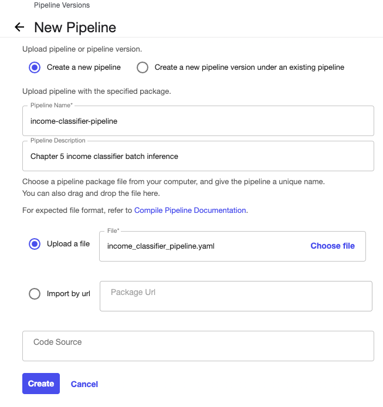
이미지 해설: KFP 의 "New Pipeline" 화면입니다. 맨 위 Create a new pipeline 이 선택돼 있고(이미 있는 파이프라인에 새 버전을 넣는 옵션은 아닙니다), Pipeline Name 에 income-classifier-pipeline, 설명에 Chapter 5 income classifier batch inference 가 들어가 있습니다. 가운데 Upload a file 라디오가 켜져 있고 File 칸에 income_classifier_pipeline.yaml 이 보이며, 그 아래 Import by url(Package Url 입력) 라디오는 꺼져 있습니다. 여기서 확인할 것: 두 라디오 중 Upload a file 쪽이 켜져 있는지, File 칸에 파일 이름이 채워졌는지 봅니다.
- 맨 아래 Create 를 눌러 등록합니다. 컴포넌트 네 개가 이어진 그래프가 나타나면 성공입니다.
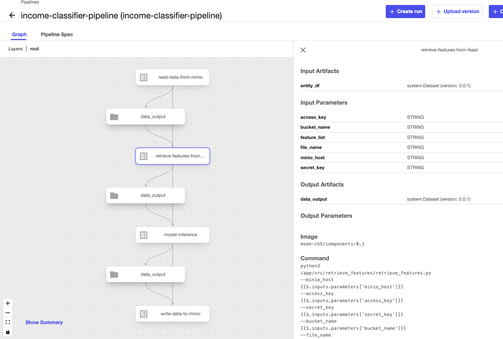
이미지 해설: 등록된 income-classifier-pipeline 의 Graph 탭입니다. 위에서 아래로 read-data-from-minio → data_output → retrieve-features-from…(선택돼 오른쪽 상세 패널이 열림) → data_output → model-inference → data_output → write-data-to-minio 순으로 이어집니다. 사각형 노드가 작업(Task), 폴더 모양이 작업 사이로 넘어가는 파일(아티팩트 data_output) 입니다. 오른쪽 패널은 retrieve-features-from-feast 의 입력 아티팩트(entity_df), 입력 파라미터(access_key, bucket_name, feature_list, file_name, minio_host, secret_key), 출력 아티팩트(data_output), 이미지 book-ch5/components:0.1, 실행 명령(python3 /app/src/retrieve_features/retrieve_features.py --minio_host {{$.inputs.parameters['minio_host']}} ...)을 보여 줍니다. 오른쪽 위에 Create run 버튼이 있는데, D-6 에서는 실험을 먼저 만들고 이 버튼과 같은 경로로 실행합니다. 여기서 확인할 것: 작업 노드가 4개이고, 노드 사이에 폴더(data_output)가 끼어 있어 앞 작업의 결과 파일이 다음 작업의 입력이 되는 구조인지 봅니다.
- 아직 K8s 에 파드가 기동·실행되지는 않았습니다. 다음 단계에서 실행하면 파드가 생기는 모습을 볼 수 있도록 미리 모니터링 창을 하나 띄워 둡니다.
[PC 터미널 4: 모니터링 창] (새로 엽니다. 이 창은 계속 화면을 갱신하므로 다른 명령을 치지 않습니다)
# watch 가 없으면(macOS 기본) 이 줄 대신 아래의 kubectl get pods -n <KFP_NAMESPACE> -w 를 입력
watch -d kubectl get pod,workflows -n <KFP_NAMESPACE>
watch 는 명령을 2초마다 반복 실행해 화면을 갱신하고, -d(difference) 는 이전 화면과 달라진 부분을 강조해 줍니다. 파드와 Workflow(Argo 가 실행하는 작업 묶음)를 한 화면에서 볼 수 있습니다. 종료는 Ctrl+C 입니다.
watch: command not found 가 나오면 (macOS 에는 watch 가 기본으로 없습니다) watch 대신 아래 명령을 같은 PC 터미널 4 에서 실행하세요. 화면을 계속 갱신하지는 않지만 변화가 생길 때마다 새 줄이 이어서 출력됩니다. 종료는 Ctrl+C 입니다.
[PC 터미널 4: 모니터링 창] (watch 가 없을 때만)
kubectl get pods -n <KFP_NAMESPACE> -w
-w 는 watch 의 약자로 변화를 계속 출력합니다. kubectl get 은 -w 와 여러 종류(pod,workflows)를 한 번에 쓸 수 없습니다 (error: you may only specify a single resource type). 그래서 대체 명령은 Pod 만 지켜봅니다. 파이프라인이 실행되면 새 Pod 가 줄지어 나타나는 것을 볼 수 있습니다. Workflow 는 필요할 때 PC 터미널 1 에서 kubectl get workflows.argoproj.io -n <KFP_NAMESPACE> 로 따로 조회하세요. macOS 에서 watch 자체를 설치하려면 Homebrew 가 필요한데, 초보자에게는 위 대체 명령이 더 간단합니다.
flowchart LR A["income_classifier_pipeline.yaml 파이프라인 정의 파일"] -->|"D-5 Upload"| B["KFP 에 파이프라인 등록 그래프만 저장"] B -->|"D-6 Create run"| C["Argo Workflow 생성"] C --> D["작업별 파드 생성 및 실행"]
위 그림처럼 D-5 는 첫 화살표까지만 수행합니다. 둘째 화살표(Create run)부터 파드가 생깁니다.
✅ 기대 결과
- Pipelines 목록에
income-classifier-pipeline이 생기고, 그래프에 작업 4개(read-data-from-minio,retrieve-features-from-feast,model-inference,write-data-to-minio)가 이어져 보입니다. watch화면에는 아직 새 파드나 Workflow 가 생기지 않습니다(기존에 떠 있던 KFP 시스템 파드만 보입니다).
🔍 확인 방법
- 그래프의 노드를 눌러 오른쪽 패널의 Image 가
book-ch5/components:0.1인지 확인합니다(D-3 에서 만들어 클러스터에 올린 컴포넌트 이미지). - 그래프 위의 Pipeline Spec 탭에서 YAML 본문을 볼 수 있습니다.
⚠ 자주 나는 오류
| 증상 | 원인 | 조치 |
|---|---|---|
| 업로드했는데 "Package URL is empty" 류 메시지, 또는 빈 항목이 생김 | Upload a file 대신 Import by url 라디오가 켜진 상태에서 Create |
본문이 "Upload a file 라디오를 먼저 누르라"고 강조한 이유입니다. 원 가이드에 이 메시지가 언급돼 있지만 정확한 문구는 알 수 없습니다. 잘못 생긴 빈 항목은 내용을 확인한 뒤 지우고 다시 업로드하세요 |
http://localhost:8080 이 열리지 않음 |
forward 창(PC 터미널 2)이 꺼졌거나 다른 프로그램이 8080 점유 | python bookenv.py forward 를 다시 켜 두세요 |
| 파일 선택 창에서 yaml 이 없음 | D-4 컴파일을 건너뜀 / 경로가 다른 폴더 | <ENV_ROOT> 에서 ls upstream/chapter-5/ 로 확인 |
D-6. 실험 만들고 실행하기 (14개 파라미터)
이 단계에서는 실험(Experiment)을 만들고, 등록한 파이프라인으로 실행(Run)을 시작합니다. 14개 파라미터를 화면에 채워 넣는 것이 핵심이고, 실행이 시작되면 K8s 에 파드가 줄줄이 생기는 모습을 kubectl 로 관찰합니다.
🎯 목적
- KFP 실험
income-classifier를 만들고income-classifier-run-1이라는 Run 을 시작합니다. - 14개 파라미터가 무엇이고 왜 이런 값인지 이해합니다(특히 PC 에서 보는 주소와 Pod 에서 보는 주소의 차이).
- Run 이 진행되는 동안 Argo Workflow 와 파드가 어떤 순서로 생기는지
kubectl로 확인합니다.
📋 사전조건
- D-5 를 마쳐서 KFP 에
income-classifier-pipeline이 등록되어 있어야 합니다. - 앞 단계(B-4)에서 MLflow 에
random-forest-classifier모델이 Production stage 로 등록되어 있어야 합니다(파라미터model_stage=Production이 그 모델을 찾습니다). - 앞 단계에서
feature-data-sets버킷에entity_df.parquet,feature-registry버킷에feature_store_k8s.yaml(및 registry)이 올라가 있어야 합니다. - [PC 터미널 2: forward 창] 은 계속 켜 두고, [PC 터미널 4: 모니터링 창] 에서 D-5 의
watch -d kubectl get pod,workflows -n <KFP_NAMESPACE>가 켜져 있으면 가장 좋습니다. - 책에서 가져온 파라미터 파일은
book/ch05/run-parameters.json입니다.
⌨ 명령어 / 클릭 순서
[브라우저] http://localhost:8080 (KFP UI)
- 왼쪽 메뉴 Experiments → + Create experiment 를 누릅니다.
- 이름
income-classifier, 설명Chapter 5 batch inference runs를 입력하고 Next 를 누릅니다.
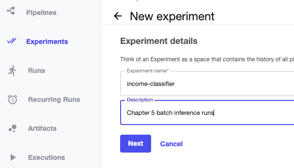
이미지 해설: 왼쪽 메뉴에서 Experiments 가 선택(파란색)된 상태의 "New experiment" 화면입니다. Experiment name 칸에 income-classifier, Description 칸에 Chapter 5 batch inference runs 가 들어 있고 아래에 파란 Next 버튼과 Cancel 이 있습니다. 여기서 확인할 것: 이름과 설명이 오타 없이 들어갔는지 봅니다.
- MLflow 의 Experiment 와 이름은 같지만 별개입니다. KFP 실험은 파이프라인 실행(Run) 을 묶고, MLflow 실험은 학습 run 을 묶습니다. (이론 배경은 이론편 참고)
- 실행(Run 만들기) 화면에서 Pipeline → Choose 를 눌러
income-classifier-pipeline을 고르고 Use this pipeline 을 누릅니다. 실험 목록으로 돌아왔다면 해당 실험(income-classifier)의 Create run 으로 들어갑니다. - Run name 에
income-classifier-run-1을 넣고 파라미터를 채웁니다. 같은 값이book/ch05/run-parameters.json에도 있습니다.
정리하면 클릭 순서는 다음과 같습니다.
- Experiments
- + Create experiment (이름·설명 입력)
- Next
- Pipeline → Choose (
income-classifier-pipeline선택) - Use this pipeline
- Create run (실험 목록으로 돌아왔다면 여기서 진입)
- Run name 입력 + 파라미터 14개 입력
- Start
[PC 터미널 1] 파라미터 파일을 열어 값을 확인합니다. (아래는 본문에 기록된 실습용 예시값 그대로입니다.)
cat book/ch05/run-parameters.json
{
"minio_host": "minio-service.kubeflow.svc.cluster.local:9000",
"access_key": "minio",
"secret_key": "minio123",
"entity_df_bucket": "feature-data-sets",
"entity_df_filename": "entity_df.parquet",
"feature_store_bucket_name": "feature-registry",
"feature_store_config_file_name": "feature_store_k8s.yaml",
"feature_list": "demographic:Sex,demographic:Race,demographic:Native_country,relationship:Relationship,relationship:Marital-Status,occupation:Workclass,occupation:Education,occupation:Occupation",
"model_name": "random-forest-classifier",
"model_type": "sklearn",
"model_stage": "Production",
"mlflow_host": "http://mlflow-service.mlflow.svc.cluster.local:5000",
"output_bucket": "inference-datasets",
"output_file_name": "income_predictions.parquet"
}
14개 파라미터 해설 표 (소스 값 = 수강생 환경의 예시값)
| # | 파라미터 | 소스 예시값 | 의미 | 쓰는 작업 |
|---|---|---|---|---|
| 1 | minio_host |
minio-service.kubeflow.svc.cluster.local:9000 |
Pod 가 S3 호환 저장소에 접속하는 host:port. http:// 를 붙이지 않습니다 |
4개 작업 공통 |
| 2 | access_key |
minio |
S3 접근 키 (실습용 값, 실제 환경에서는 바꾸세요) | 4개 작업 공통 |
| 3 | secret_key |
minio123 |
S3 비밀 키 (실습용 값, 실제 환경에서는 바꾸세요) | 4개 작업 공통 |
| 4 | entity_df_bucket |
feature-data-sets |
추론할 사용자 목록(entity_df)이 든 버킷 | read-data-from-minio |
| 5 | entity_df_filename |
entity_df.parquet |
위 버킷 안의 파일 이름 | read-data-from-minio |
| 6 | feature_store_bucket_name |
feature-registry |
Feast 설정·레지스트리가 든 버킷 | retrieve-features-from-feast |
| 7 | feature_store_config_file_name |
feature_store_k8s.yaml |
Pod 안에서 쓸 Feast 설정 파일 이름 | retrieve-features-from-feast |
| 8 | feature_list |
demographic:Sex,...,occupation:Occupation (8개) |
조회할 피처를 피처뷰:피처 형태로 쉼표 나열 |
retrieve-features-from-feast |
| 9 | model_name |
random-forest-classifier |
MLflow 에서 찾을 등록 모델 이름 | model-inference |
| 10 | model_type |
sklearn |
모델 종류(MLflow flavor). 불러오는 방식을 정합니다 | model-inference |
| 11 | model_stage |
Production |
모델 버전 중 이 stage 의 것을 씁니다 (대소문자 주의) | model-inference |
| 12 | mlflow_host |
http://mlflow-service.mlflow.svc.cluster.local:5000 |
Pod 가 MLflow 에 접속하는 주소. http:// 를 포함합니다 |
model-inference |
| 13 | output_bucket |
inference-datasets |
최종 예측 파일을 둘 버킷 | write-data-to-minio |
| 14 | output_file_name |
income_predictions.parquet |
최종 예측 파일 이름 | write-data-to-minio |
feature_list 8개 항목 풀이: demographic:Sex, demographic:Race, demographic:Native_country(인구통계 피처뷰), relationship:Relationship, relationship:Marital-Status(관계 피처뷰), occupation:Workclass, occupation:Education, occupation:Occupation(직업 피처뷰). 콜론 앞이 피처뷰 이름, 뒤가 피처 이름입니다.
위 "쓰는 작업" 열은 파라미터 이름과 이미지(img027~img034)에 보이는 입력 파라미터를 근거로 정리한 것입니다. 예를 들어 img031 에서
read-data-from-minio의 입력은access_key,bucket_name,file_name,minio_host,secret_key, img034 에서model-inference의 입력은access_key,minio_host,mlflow_host,model_name,model_stage,model_type,secret_key입니다.
가변값 치환본 — 내 환경 값으로 바꿔서 쓸 때는 아래 JSON 을 사용하세요. 주소 두 개의 형식이 서로 다르다는 점(minio_host 는 scheme 없음, mlflow_host 는 http:// 포함)에 주의하세요.
{
"minio_host": "<POD_S3_HOSTPORT>",
"access_key": "minio",
"secret_key": "minio123",
"entity_df_bucket": "feature-data-sets",
"entity_df_filename": "entity_df.parquet",
"feature_store_bucket_name": "feature-registry",
"feature_store_config_file_name": "feature_store_k8s.yaml",
"feature_list": "demographic:Sex,demographic:Race,demographic:Native_country,relationship:Relationship,relationship:Marital-Status,occupation:Workclass,occupation:Education,occupation:Occupation",
"model_name": "random-forest-classifier",
"model_type": "sklearn",
"model_stage": "Production",
"mlflow_host": "<POD_MLFLOW_URL>",
"output_bucket": "inference-datasets",
"output_file_name": "income_predictions.parquet"
}
🔧 본인 환경에 맞게 교체:<POD_S3_HOSTPORT>= 소스 예시값minio-service.kubeflow.svc.cluster.local:9000. 클러스터 안의 Pod 가 S3 호환 저장소(서비스 이름은 그대로 minio-service)에 접속하는호스트:포트입니다. scheme(http://)를 붙이지 않습니다. 확인:kubectl get svc -n <KFP_NAMESPACE> minio-service로 서비스 이름·포트를 보고<서비스>.<네임스페이스>.svc.cluster.local:<포트>로 조립합니다.<POD_MLFLOW_URL>= 소스 예시값http://mlflow-service.mlflow.svc.cluster.local:5000. 클러스터 안에서 MLflow 로 가는 주소이며http://를 포함합니다. 확인:kubectl get svc -n mlflow.access_key/secret_key의minio/minio123은 실습용 예시값입니다. 실제 환경에서는 바꾸세요.
PC 쪽 주소(<PC_S3_URL>=http://localhost:9000,<PC_MLFLOW_URL>=http://localhost:5000)는 여기에 쓰지 않습니다. 이 값은 PC 의 aws cli·노트북에서만 통합니다.
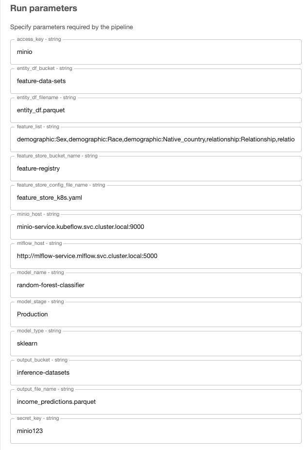
이미지 해설: Run 만들기 화면 아래쪽의 "Run parameters" 영역입니다. KFP 는 파라미터를 알파벳 순서로 보여 주므로 JSON 파일의 순서와 다릅니다. 위에서부터 access_key=minio, entity_df_bucket=feature-data-sets, entity_df_filename=entity_df.parquet, feature_list=demographic:Sex,demographic:Race,demographic:Native_country,relationship:Relationship,relatio…(칸 폭 때문에 뒤가 잘려 보임, 실제 값은 8개 전체), feature_store_bucket_name=feature-registry, feature_store_config_file_name=feature_store_k8s.yaml, minio_host=minio-service.kubeflow.svc.cluster.local:9000, mlflow_host=http://mlflow-service.mlflow.svc.cluster.local:5000, model_name=random-forest-classifier, model_stage=Production, model_type=sklearn, output_bucket=inference-datasets, output_file_name=income_predictions.parquet, secret_key=minio123 이 보입니다. 칸 이름 옆의 - string 은 모두 문자열 타입이라는 뜻입니다. 여기서 확인할 것: 14개 칸이 모두 채워졌는지, minio_host 에는 http:// 가 없고 mlflow_host 에는 있는지, feature_list 를 한 글자도 빠뜨리지 않고 붙여 넣었는지 봅니다.
- 서비스 주소에
localhost를 넣지 않는 이유는 작업이 PC 가 아닌 Pod 에서 돌기 때문입니다. Pod 안에서localhost는 "그 Pod 자신"을 뜻합니다. - 또한 책의 방식은 키를 파라미터로 전달해 UI 에도 노출되므로 로컬 실습에서만 쓰고, 운영에서는 Secret 과 서비스 계정 권한으로 전달해야 합니다.
flowchart LR
subgraph PC["내 PC"]
UI["브라우저 localhost 8080 KFP UI"]
CLI["터미널 aws cli localhost 9000"]
end
subgraph K8S["클러스터 안 Pod"]
T1["read-data-from-minio"]
T2["retrieve-features-from-feast Feast SDK"]
T3["model-inference"]
T4["write-data-to-minio"]
end
S3[("S3 호환 저장소 SeaweedFS 접속 주소 POD_S3_HOSTPORT")]
ML["MLflow 서버 접속 주소 POD_MLFLOW_URL"]
UI -->|"Create run"| T1
T1 --> T2
T2 --> T3
T3 --> T4
S3 -->|"feature-data-sets entity_df.parquet"| T1
S3 -->|"feature-registry registry.db 와 원천 parquet 읽기"| T2
ML -->|"Production 모델 조회"| T3
T4 -->|"inference-datasets income_predictions.parquet"| S3
CLI -.->|"결과 확인"| S3이 그림에서 피처 조회(retrieve-features-from-feast)는 Redis(온라인 스토어)가 아니라 S3 에 있는 registry.db 와 원천 parquet 에서 get_historical_features 로 과거 시점의 피처를 가져옵니다. (Redis 는 이 배치 추론 파이프라인에서 읽지 않습니다.) 작업 사이의 중간 파일(data_output)은 KFP 자체 아티팩트 버킷 mlpipeline 에 저장되어 다음 작업으로 전달됩니다. 점선은 PC 에서 <PC_S3_URL> 로 접속해 결과를 나중에 확인하는 경로입니다.
- Start 를 누릅니다. 이번 실행은 약 2분 걸렸고(수강생이 기록한 과거 실행 결과), 네 작업이 차례로 초록색 체크로 바뀌었습니다.
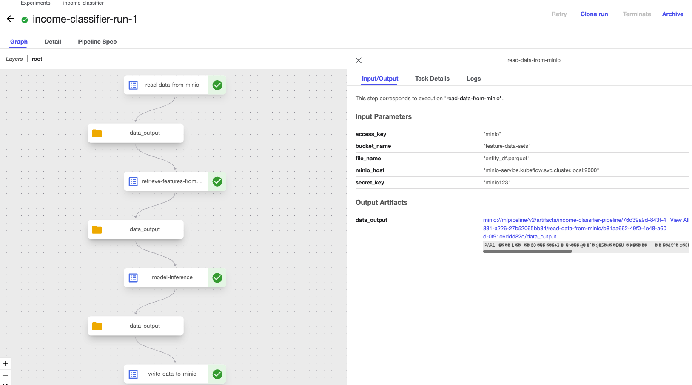
이미지 해설: income-classifier-run-1 의 Run 상세(Graph 탭)입니다. 맨 위 이름 옆에 초록 체크가 있고 오른쪽에 Retry(회색), Clone run, Terminate(회색), Archive 가 보입니다. 그래프는 read-data-from-minio → data_output → retrieve-features-from… → data_output → model-inference → data_output → write-data-to-minio 순서이고 작업 4개 모두 초록 체크입니다. 오른쪽 패널은 read-data-from-minio 의 Input/Output 탭으로, Input Parameters(access_key="minio", bucket_name="feature-data-sets", file_name="entity_df.parquet", minio_host="minio-service.kubeflow.svc.cluster.local:9000", secret_key="minio123")와 Output Artifacts 의 data_output(minio://mlpipeline/v2/artifacts/income-classifier-pipeline/76d39a9d-843f-4831-a226-27b52065bb34/read-data-from-minio/b81aa662-…/data_output) 링크, 그 아래 PAR1 로 시작하는 깨진 문자 미리보기를 보여 줍니다. 여기서 PAR1 은 parquet 파일의 시작 표식입니다(바이너리를 텍스트로 보여 줘서 깨져 보이는 것입니다). 여기서 확인할 것: 4개 작업이 모두 초록 체크인지, 입력 파라미터가 내가 입력한 값과 같은지 봅니다.
[PC 터미널 1] 실행 중과 실행 후에 Workflow 상태를 봅니다. KFP 는 파이프라인을 Argo Workflow(K8s 의 사용자 정의 리소스, CRD)로 바꿔 실행합니다.
# Argo Workflow CRD 를 사용함!
kubectl explain workflows
kubectl get workflows -n kubeflow -o yaml
kubectl get workflows.argoproj.io -n kubeflow
NAME STATUS AGE MESSAGE
income-classifier-pipeline-65js8 Running 116s
...
NAME STATUS AGE MESSAGE
income-classifier-pipeline-65js8 Succeeded 4m44s
kubectl explain workflows는 Workflow 리소스의 필드 설명서를 보여 줍니다(kubectl get으로 조회가 되는 이유는 Argo 가 설치될 때 이 CRD 도 같이 등록되기 때문입니다).- 위 출력은 같은 명령을 시간차로 두 번 실행한 결과입니다. 처음엔
Running(AGE 116s), 나중엔Succeeded(AGE 4m44s)입니다.AGE는 Workflow 가 만들어진 뒤 흐른 시간이므로 "실행에 걸린 시간"이 아니라 조회한 시점까지의 경과 시간입니다. <WORKFLOW_NAME>형식은income-classifier-pipeline-<5글자>이며 Run 마다 뒤의 5글자(예:65js8)가 달라집니다.
[PC 터미널 1] Run 이 실행되면서 기동된 순서대로 파드를 확인합니다.
# Run 실행 시, 기동된 순서대로 K8s 파드 확인
kubectl get pod -n kubeflow -l pipelines.kubeflow.org/v2_component=true --sort-by=.metadata.creationTimestamp
NAME READY STATUS RESTARTS AGE
income-classifier-pipeline-65js8-system-dag-driver-1368447337 0/2 Completed 0 17m
income-classifier-pipeline-65js8-system-container-driver-4052658554 0/2 Completed 0 17m
income-classifier-pipeline-65js8-system-container-impl-266872564 0/2 Completed 0 17m
income-classifier-pipeline-65js8-system-container-driver-2465540992 0/2 Completed 0 16m
income-classifier-pipeline-65js8-system-container-impl-344406694 0/2 Completed 0 16m
income-classifier-pipeline-65js8-system-container-driver-3226452138 0/2 Completed 0 16m
income-classifier-pipeline-65js8-system-container-impl-3755583876 0/2 Completed 0 16m
income-classifier-pipeline-65js8-system-container-driver-3228365004 0/2 Completed 0 15m
income-classifier-pipeline-65js8-system-container-impl-1714445474 0/2 Completed 0 15m
-l pipelines.kubeflow.org/v2_component=true: KFP v2 가 만든 파드만 라벨로 골라냅니다.--sort-by=.metadata.creationTimestamp: 생성 시각순으로 정렬합니다. 그래서 "무엇이 먼저 떴는지"가 위에서 아래로 읽힙니다.- 파드는 1 + 4 × 2 = 9개입니다. 맨 앞
system-dag-driver1개(실행 전체의 시작), 그다음 작업마다system-container-driver(준비) →system-container-impl(실제 코드) 한 쌍씩 있습니다. READY 0/2,STATUS Completed는 끝난 파드의 정상 모습입니다(실패가 아닙니다). 덧붙이면 READY 의 분모는 init 컨테이너를 뺀 일반 컨테이너(main, wait) 수이며, 끝난 뒤에는 둘 다 종료되어 0 으로 보입니다.AGE(17m, 16m, 15m)는 위 Workflow 조회보다 나중에get pod를 실행해서 커진 값입니다. 실제 실행은 약 2분이었습니다.
▶ Create run 이후 파드가 생기는 순서
버튼을 차례로 눌러 보세요. 각 단계에서 어떤 파드가 뜨고 무엇을 하는지 아래에 나옵니다.
✅ 기대 결과
- KFP 화면에서 Run 이
Running을 거쳐 약 2분 뒤 4개 작업 모두 초록 체크로 바뀝니다(수강생이 기록한 과거 실행 결과). kubectl get workflows.argoproj.io의 상태가Running에서Succeeded로 바뀝니다.- 파드 9개가
Completed로 남습니다.
🔍 확인 방법
파드 한 개씩 열어 보기 — 파드 이름 끝의 숫자는 Run 마다 다릅니다. 아래 예시의 이름은 본문의 실제 Run(income-classifier-pipeline-65js8)의 것이니 본인 파드 이름으로 바꾸세요.
🔧 본인 환경에 맞게 교체:<ROOT_DRIVER_POD>= 소스 예시값income-classifier-pipeline-65js8-system-dag-driver-1368447337,<TASK_DRIVER_POD>=income-classifier-pipeline-65js8-system-container-driver-4052658554,<READ_TASK_POD>=income-classifier-pipeline-65js8-system-container-impl-266872564. 확인 방법: 위kubectl get pod ... --sort-by=.metadata.creationTimestamp출력에서 복사하세요.
(1) 루트 DAG 드라이버 파드 — 실행 전체의 시작
[PC 터미널 1]
kubectl get pod -n kubeflow <ROOT_DRIVER_POD> -o yaml
kubectl get pod -n kubeflow <ROOT_DRIVER_POD> -o yaml | grep -i image: | sort | uniq
image: ghcr.io/kubeflow/kfp-driver:2.4.1
image: quay.io/argoproj/argoexec:v3.4.17
- 파이프라인 실행
income-classifier-pipeline-65js8의 루트 DAG 드라이버 파드입니다. 사용자 코드가 아니라 KFP 내부 컴포넌트입니다. - 역할: 노드 이름이
...root-driver이고--type ROOT_DAG로 실행됐습니다. 이 실행(run id76d39a9d-…)의 최상위 DAG 실행을 등록하고, 하위 태스크를 어떻게 돌릴지 정하는 첫 단계입니다. - 메인 컨테이너 이미지는
ghcr.io/kubeflow/kfp-driver:2.4.1입니다. 클러스터의 KFP 백엔드가 2.4.1 인 것과 맞습니다. - 컨테이너 구성 (Argo 표준 3단 구조)
init(argoexec init): 실행 준비. 13:35:22 에 종료했습니다.main(kfp-driver, emissary 실행기): 실제 드라이버 실행. 13:35:29~32, 약 3초 걸렸습니다.wait(argoexec wait): 출력 파라미터를 수집하고main.log를 KFP 오브젝트 스토어의mlpipeline버킷(artifacts/.../main.log)에 올립니다. 13:35:34 에 종료했습니다.
(2) read-data-from-minio 의 컨테이너 드라이버 파드 — "실행 전 준비 담당"
[PC 터미널 1]
kubectl get pod -n kubeflow <TASK_DRIVER_POD> -o yaml
kubectl get pod -n kubeflow <TASK_DRIVER_POD> -o yaml | grep -i image: | sort | uniq
image: ghcr.io/kubeflow/kfp-driver:2.4.1
image: quay.io/argoproj/argoexec:v3.4.17
read-data-from-minio태스크의 컨테이너 드라이버 파드입니다. 실제 데이터를 읽는 파드가 아니라, 그 파드를 실행하기 전에 준비 작업을 하는 파드입니다.- 앞서 본 루트 DAG 드라이버는 실행 전체를 시작하는 파드였고, 이 파드는 태스크 하나를 시작하는 드라이버입니다. 같은 이미지(
kfp-driver:2.4.1)를--type CONTAINER로 실행합니다. - 이 파드가 하는 일은 다음과 같습니다.
- 캐시 판단: 출력
cached-decision=false. 태스크에enableCache: true가 걸려 있지만 이전 실행 기록이 없어 캐시 미스가 났고, 그래서 태스크를 실제로 실행합니다. 같은 입력으로 다시 실행하면true가 되어 실행이 생략될 수 있습니다. - 실행 기록 등록:
execution_id=2이고, 부모 DAG 는 1 입니다(루트 드라이버의execution-id=1). - 출력 위치 결정:
data_output아티팩트가 저장될 위치를 정합니다. KFP 자체 오브젝트 스토어의mlpipeline버킷입니다.minio://mlpipeline/v2/artifacts/income-classifier-pipeline/<run-id>/read-data-from-minio/<uuid>/data_output - pod-spec-patch 생성: 가장 중요한 출력입니다. 다음 파드(실제 작업 파드)에 덧씌울 실행 명령을 만들어 냅니다. 이미지는
book-ch5/components:0.1이고/kfp-launcher/launch ... --뒤에python3 /app/src/read_data/read_data.py --minio_host ... --bucket_name ...이 붙습니다. 즉read_data.py는 이 파드가 아니라 뒤이어 뜨는 실행 파드에서 돕니다.
- 캐시 판단: 출력
- 이 태스크의 입력값은 다음과 같습니다. 버킷
feature-data-sets, 파일entity_df.parquet, S3 호스트minio-service.kubeflow.svc.cluster.local:9000.
(3) read-data-from-minio 의 실행(executor) 파드 — 코드가 실제로 도는 곳
[PC 터미널 1]
kubectl get pod -n kubeflow <READ_TASK_POD> -o yaml
kubectl get pod -n kubeflow <READ_TASK_POD> -o yaml | grep -i image: | sort | uniq
image: book-ch5/components:0.1
image: docker.io/book-ch5/components:0.1
image: ghcr.io/kubeflow/kfp-launcher:2.4.1
image: quay.io/argoproj/argoexec:v3.4.17
read-data-from-minio태스크의 실행 파드(executor) 입니다. 앞의 드라이버가 만든 pod-spec-patch 가 실제로 적용되어 코드(read_data.py)가 돈 파드이고,Succeeded(종료 코드 0)로 끝났습니다.-
파드의 구조는 다음과 같습니다.
- init 컨테이너 2개:
init(argoexec) = Argo 준비 작업,kfp-launcher=ghcr.io/kubeflow/kfp-launcher:2.4.1이미지에서launch실행 파일을 공유 볼륨(/kfp-launcher)에 복사해 둡니다. -
main 컨테이너: 이미지
book-ch5/components:0.1. emissary 를 거쳐 다음 명령이 실행됩니다.text /kfp-launcher/launch --pipeline_name ... --run_id ... --execution_id 2 ... -- \ python3 /app/src/read_data/read_data.py --minio_host ... --bucket_name ... --file_name ... --data_output_path ...즉 우리 스크립트는 KFP launcher 로 감싸져 실행됩니다. launcher 는 입력 파라미터와 출력 경로를 준비하고, 스크립트가 끝나면 출력 아티팩트를 KFP 스토어에 올리고, MLMD(메타데이터 서버)에 실행 결과를 기록합니다. -
wait 컨테이너: 로그(
main.log)를mlpipeline버킷에 보관합니다. - 출력 위치:
minio://mlpipeline/v2/artifacts/income-classifier-pipeline/<run-id>/read-data-from-minio/<uuid>/data_output - 입력: 버킷
feature-data-sets의entity_df.parquet
- init 컨테이너 2개:
⚠ 바로잡기 (파드 구조 표현): 본문 메모 중 "S3 포인터만 교환한다"는 식의 요약은 쓰지 않습니다. 정확히는 executor 파드 = init 컨테이너 2개(argoexec init + kfp-launcher) + main + wait 이고, wait 는main.log를 올리고, 아티팩트(data_output) 업로드는 launcher 가 합니다. (드라이버 파드는 init + main + wait 의 Argo 3단 구조입니다.) 아래 D-7 의 mermaid 그림이 이 구조를 그대로 그리고 있습니다.
[PC 터미널 1] main 컨테이너의 로그를 봅니다(-c main 은 main 컨테이너만 지정하는 옵션입니다).
# main 컨테이너의 로그 확인
kubectl -n kubeflow logs <READ_TASK_POD> -c main
time="2026-10-29T13:36:05.001Z" level=info msg="capturing logs" argo=true
I1029 13:36:05.736043 19 cache.go:116] Connecting to cache endpoint 10.96.239.64:8887
Downloading entity_df.parquet from bucket feature-data-sets...
Reading the downloaded file /tmp/entity_df.parquet...
Saving the processed data to /minio/mlpipeline/v2/artifacts/income-classifier-pipeline/76d39a9d-843f-4831-a226-27b52065bb34/read-data-from-minio/b81aa662-49f0-4e48-a60d-0f91c6ddd82d/data_output...
Data saved successfully.
I1029 13:36:06.995342 19 launcher_v2.go:703] output metadata file does not exist in /tmp/kfp_outputs/output_metadata.json
I1029 13:36:07.079502 19 object_store.go:177] uploadFile(localFilePath="/minio/mlpipeline/v2/artifacts/income-classifier-pipeline/76d39a9d-843f-4831-a226-27b52065bb34/read-data-from-minio/b81aa662-49f0-4e48-a60d-0f91c6ddd82d/data_output", blobFilePath="read-data-from-minio/b81aa662-49f0-4e48-a60d-0f91c6ddd82d/data_output")
I1029 13:36:07.264719 19 launcher_v2.go:150] publish success.
I1029 13:36:07.519714 19 client.go:717] Attempting to update DAG state
time="2026-10-29T13:36:08.014Z" level=info msg="sub-process exited" argo=true error="<nil>"
로그 읽는 법: 앞 4줄은 우리 스크립트(read_data.py)가 찍은 것(다운로드 → 읽기 → 저장 → "Data saved successfully.")이고, 뒤쪽 launcher_v2.go/object_store.go/client.go 줄은 launcher 가 찍은 것입니다. uploadFile(...) 줄이 출력 아티팩트를 mlpipeline 버킷에 올리는 순간이고, publish success. 는 메타데이터 기록 성공, 마지막 sub-process exited ... error="<nil>" 은 정상 종료(오류 없음)를 뜻합니다. output metadata file does not exist 는 이 컴포넌트가 별도의 출력 메타데이터 파일을 만들지 않았다는 안내 메시지입니다. 이 로그에서는 이어서 publish success. 가 나오므로 성공 흐름의 일부로 보면 됩니다.
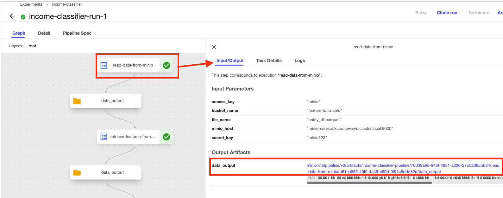
이미지 해설: Run 상세 화면에서 그래프의 read-data-from-minio 노드(붉은 상자)를 눌러 오른쪽 패널의 Input/Output 탭을 연 모습입니다. 붉은 화살표는 "노드 → 패널"을, 아래 붉은 상자는 Output Artifacts 의 data_output 링크 minio://mlpipeline/v2/artifacts/income-classifier-pipeline/76d39a9d-843f-4831-a226-27b52065bb34/read-data-from-minio/b81aa662-49f0-4e48-a60d-0f91c6ddd82d/data_output 를 가리킵니다. 이 경로는 위 로그의 Saving the processed data to /minio/mlpipeline/... 와 같은 위치입니다. 입력 파라미터(minio_host="minio-service.kubeflow.svc.cluster.local:9000" 등)도 위 (2)번 설명의 값과 일치합니다. 여기서 확인할 것: 화면의 data_output 경로(run id 76d39a9d-…, 작업 uuid b81aa662-…)가 kubectl logs 에 찍힌 저장 경로와 같은지 봅니다.
⚠ 자주 나는 오류
| 증상 | 원인 | 조치 |
|---|---|---|
| 작업이 접속 오류로 실패 | minio_host/mlflow_host 에 localhost(PC 기준 주소)를 넣음 |
Pod 안에서 localhost 는 자기 자신을 가리킵니다. <POD_S3_HOSTPORT>, <POD_MLFLOW_URL> 을 쓰세요 |
| MLflow 쪽 접속 실패 | mlflow_host 에서 http:// 를 빠뜨림 / minio_host 에 http:// 를 붙임 |
두 값의 형식이 다릅니다 (minio_host 는 scheme 없음, mlflow_host 는 포함) |
No model found in stage Production 류 모델 못 찾음 |
B-4 에서 Production 등록을 빠뜨렸거나 model_name·model_stage 오타·대소문자 |
MLflow 화면이나 search_model_versions 로 등록 상태를 확인한 뒤 재실행하세요 |
파드가 Init 에서 오래 머묾 |
이미지 로드 지연이나 아티팩트 저장소 Secret 문제일 수 있습니다(이 실습 구성에서 정확히 무엇이 원인인지는 알 수 없습니다) | kubectl describe pod, kubectl logs <파드> -c <컨테이너> 로 단서를 찾아보세요 |
| 두 번째 실행에서 작업이 건너뛰어짐 | 같은 입력이라 캐시 hit (cached-decision=true) |
정상 동작입니다. 새로 돌리고 싶으면 입력을 바꾸거나 캐시를 끄고 실행하세요 |
Run 이 끝났는데 READY 0/2 |
끝난 파드의 정상 표기 | 오류가 아닙니다 (STATUS 가 Completed 인지 보세요) |
| 파라미터를 틀리게 입력 | UI 에서 14개를 직접 채움 | Clone run 으로 복제해 값을 고쳐 다시 시작하세요 |
D-7. 결과 확인 (입출력 아티팩트·로그·파드 구조·최종 parquet)
이 단계에서는 Run 이 정말로 끝까지 일을 했는지를 세 군데에서 확인합니다: ① 작업별 로그, ② 작업 사이로 넘어간 파일(입출력 아티팩트)과 저장소(mlpipeline 버킷), ③ 최종 결과 파일 income_predictions.parquet 의 내용. 초록 체크만 보고 끝내지 않고 파일 전달과 실제 결과 저장까지 이어졌는지 봅니다.
🎯 목적
model-inference작업 로그에서 모델 조회·추론이 정상 종료됐는지 봅니다.- 작업 사이의 입출력 아티팩트가 서로 연결됐는지, KFP 저장소(
mlpipeline버킷)에 무엇이 남았는지 봅니다. - 최종 결과
inference-datasets/income_predictions.parquet가 저장됐고 내용이 읽히는지 확인합니다.
📋 사전조건
- D-6 의 Run 이 4개 작업 모두 초록 체크로 끝나 있습니다.
- [PC 터미널 2: forward 창] 이 켜져 있습니다 (
http://localhost:8888저장소 화면,http://localhost:9000S3 API 사용). - [PC 터미널 1] 에서 aws cli 가 접속하도록 환경변수가 설정되어 있습니다. 새 터미널이면 다시 export 합니다 (같은 터미널에서 이어서 실행한다면 생략).
[PC 터미널 1]
export "AWS_ACCESS_KEY_ID"="minio"
export "AWS_SECRET_ACCESS_KEY"="minio123"
export "AWS_ENDPOINT_URL"="<PC_S3_URL>"
🔧 본인 환경에 맞게 교체:<PC_S3_URL>= 소스 예시값http://localhost:9000. 내 PC 의 터미널/노트북이 forward 를 거쳐 S3 API 에 접속하는 주소입니다(D-6 파라미터minio_host에 쓰는 Pod 쪽 주소와 다른 값). 확인: forward 창에S3 API ... http://localhost:9000줄이 보이는지.minio/minio123은 실습용 예시값이며 실제 환경에서는 변경합니다.<INFERENCE_TASK_POD>= 소스 예시값income-classifier-pipeline-65js8-system-container-impl-3755583876(model-inference 의 executor 파드). 확인: D-6 의 파드 목록(생성 순서)에서 세 번째 태스크(model-inference)의container-impl를 고릅니다. 목록은 dag-driver 1개 뒤에 read → retrieve-features → model-inference → write 순으로 (driver, impl) 쌍이 이어지므로, 데이터 행 기준 일곱 번째 줄입니다.
⌨ 명령어 / 클릭 순서
1단계 — [브라우저] model-inference 로그 보기
그래프에서 model-inference → Logs 를 열어 모델 조회와 추론 로그를 봅니다.
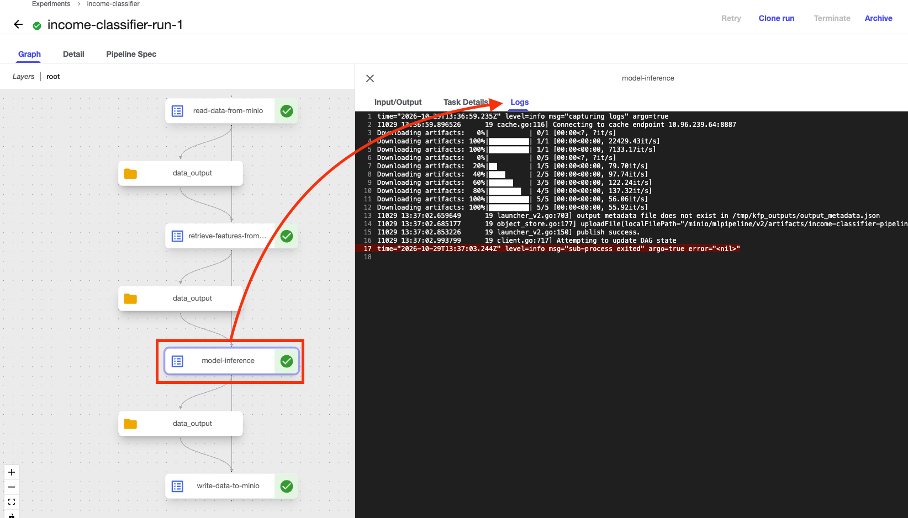
이미지 해설: Run 상세에서 model-inference 노드(붉은 상자)를 누르고 오른쪽 패널의 Logs 탭(붉은 화살표)을 연 모습입니다. 로그는 18줄이며 대략 이렇게 읽습니다. 먼저 Argo 가 로그 수집을 시작하고(capturing logs) 캐시 서버(10.96.239.64:8887)에 연결합니다. 이어서 Downloading artifacts 진행 막대가 나오는데, 앞 작업 결과 파일 1개(1/1)를 받고 그다음 5개(5/5)를 받습니다. 그 뒤 launcher 가 output metadata file does not exist..., uploadFile(...model-inference/.../data_output), publish success., Attempting to update DAG state 를 차례로 기록합니다. 17줄(붉은 배경)의 sub-process exited ... error="<nil>" 은 오류 없이 종료했다는 뜻입니다. 여기서 확인할 것: 마지막에 publish success. 와 error="<nil>" 이 있는가 (없고 Python 오류 메시지가 있으면 그 작업이 실패한 것).
2단계 — [PC 터미널 1] 같은 로그를 kubectl 로 보기
#
kubectl get pod -n kubeflow <INFERENCE_TASK_POD> -o yaml
kubectl get pod -n kubeflow <INFERENCE_TASK_POD> -o yaml | grep -i image: | sort | uniq
image: book-ch5/components:0.1
image: docker.io/book-ch5/components:0.1
image: ghcr.io/kubeflow/kfp-launcher:2.4.1
image: quay.io/argoproj/argoexec:v3.4.17
이미지 4종은 D-6 의 read-data-from-minio 실행 파드와 같습니다. 사용자 코드 이미지(book-ch5/components:0.1) + launcher + argoexec(init/wait) 구성입니다.
[PC 터미널 1]
# main 컨테이너 로그 확인 : 위 창에 Logs 출력 내용과 동일!
kubectl logs -n kubeflow <INFERENCE_TASK_POD> -c main
본문에는
k logs ...로 적혀 있습니다. 이는k가kubectl의 별칭(alias)으로 설정된 환경에서만 동작하므로, 이 가이드에서는kubectl logs로 적었습니다.
time="2026-10-29T13:36:59.235Z" level=info msg="capturing logs" argo=true
I1029 13:36:59.896526 19 cache.go:116] Connecting to cache endpoint 10.96.239.64:8887
Downloading artifacts: 100%|██████████| 1/1 [00:00<00:00, 7133.17it/s]
Downloading artifacts: 100%|██████████| 5/5 [00:00<00:00, 55.92it/s]
I1029 13:37:02.659649 19 launcher_v2.go:703] output metadata file does not exist in /tmp/kfp_outputs/output_metadata.json
I1029 13:37:02.685177 19 object_store.go:177] uploadFile(localFilePath="/minio/mlpipeline/v2/artifacts/income-classifier-pipeline/76d39a9d-843f-4831-a226-27b52065bb34/model-inference/a6d1857b-0a98-4afc-b896-c522c884fcf5/data_output", blobFilePath="model-inference/a6d1857b-0a98-4afc-b896-c522c884fcf5/data_output")
I1029 13:37:02.853226 19 launcher_v2.go:150] publish success.
I1029 13:37:02.993799 19 client.go:717] Attempting to update DAG state
time="2026-10-29T13:37:03.244Z" level=info msg="sub-process exited" argo=true error="<nil>"
UI 의 Logs 는 진행 막대가 갱신되는 중간 줄(0%, 20% ...)까지 줄마다 보여 주고, 위 kubectl logs 예시에는 각 막대의 최종 줄만 나오므로 줄 수가 더 적습니다. 내용(다운로드 → 업로드 → publish success → 정상 종료)은 같습니다.
3단계 — executor 파드의 구조를 그림으로 정리
앞 단계들에서 본 파드를 하나의 그림으로 합치면 다음과 같습니다. 작업 하나당 파드 2개 (driver → executor)이고, executor 파드 안에는 init 컨테이너 2개 → main → wait 가 순서대로 돕니다.
flowchart TD
R["system-dag-driver 파드 실행 전체의 최상위 DAG 등록"] --> D["system-container-driver 파드 캐시 판단 출력 위치 결정 pod-spec-patch 생성"]
D -->|"pod-spec-patch 적용"| E
subgraph E["system-container-impl 파드 executor"]
direction TB
I1["init 컨테이너 1 argoexec init Argo 준비 작업"] --> I2["init 컨테이너 2 kfp-launcher launch 파일을 공유 볼륨 kfp-launcher 폴더에 복사"]
I2 --> M["main 컨테이너 사용자 코드 이미지 book-ch5 components 0.1 launch 로 감싸서 python 스크립트 실행"]
M --> W["wait 컨테이너 argoexec wait main.log 를 mlpipeline 버킷에 업로드"]
end
M -->|"launcher 가 출력 아티팩트 업로드 및 MLMD 기록"| S[("mlpipeline 버킷 v2 artifacts 아래 data_output")]
W -->|"로그 보관"| L[("mlpipeline 버킷 artifacts 아래 main.log")]- init 컨테이너 2개: ① argoexec init (Argo 준비), ②
kfp-launcher(launch실행 파일을 공유 볼륨에 복사해 두는 역할). - main: 우리 스크립트(예:
read_data.py,inference스크립트)가/kfp-launcher/launch ... -- python3 ...형태로 감싸져 돕니다. 스크립트가 끝나면 launcher 가 출력 아티팩트를mlpipeline버킷에 올리고, MLMD(메타데이터 서버)에 실행 결과를 기록합니다. - wait:
main.log(로그)를mlpipeline버킷의artifacts/...경로에 올립니다. 아티팩트(data_output) 업로드는 wait 가 아니라 launcher 의 일입니다.
▶ executor 파드 안에서 일어나는 일 (컨테이너 순서)
버튼을 누르면 해당 컨테이너가 하는 일과 남기는 산출물이 아래에 나옵니다.
4단계 — [브라우저] 입출력 아티팩트 연결 확인 (model-inference 화면)
write-data-to-minio → Input/Output 에서 앞 단계의 예측 파일이 입력으로 연결됐는지 확인하라는 것이 본문의 지시입니다. 아래 소스 화면(img034)은 실제로는 model-inference 작업의 Input/Output 화면입니다.
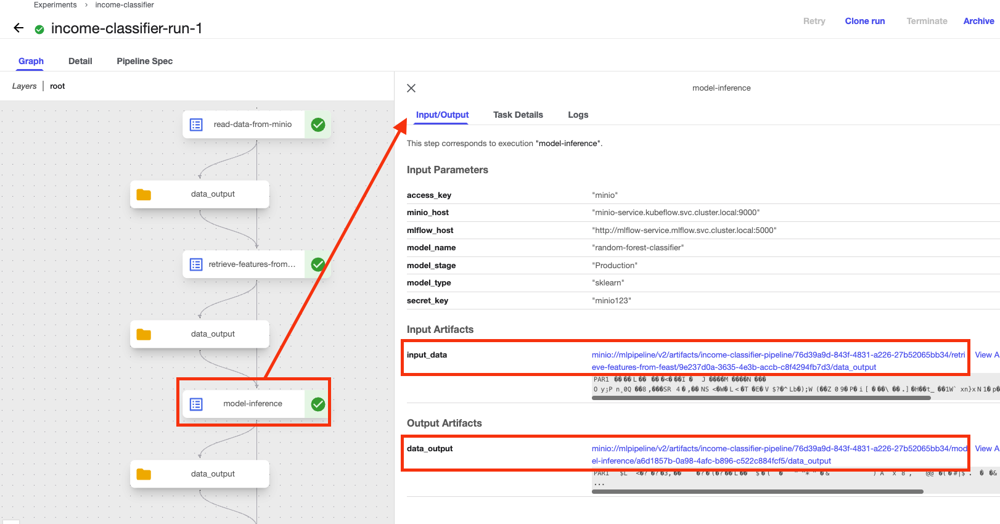
⚠ 바로잡기: 책은 이 이미지를 "write-data-to-minio 의 Input/Output" 설명 아래에 두었으나, 실제 화면은model-inference의 Input/Output 아티팩트 화면입니다 (패널 제목과 입력 파라미터mlflow_host,model_name,model_stage,model_type이 그 증거). 그래서 캡션을 "model-inference 입출력"으로 적었습니다.write-data-to-minio의 입력 연결은 같은 방법으로 그래프에서 그 노드를 눌러 Input/Output 탭에서 직접 확인합니다.
이미지 해설: model-inference 노드(붉은 상자)에서 Input/Output 탭(붉은 화살표)을 연 화면입니다. Input Parameters: access_key="minio", minio_host="minio-service.kubeflow.svc.cluster.local:9000", mlflow_host="http://mlflow-service.mlflow.svc.cluster.local:5000", model_name="random-forest-classifier", model_stage="Production", model_type="sklearn", secret_key="minio123" — D-6 에서 입력한 파라미터 중 이 작업이 쓰는 7개입니다. Input Artifacts 의 input_data 는 minio://mlpipeline/v2/artifacts/income-classifier-pipeline/76d39a9d-…/retrieve-features-from-feast/9e237d0a-…/data_output, 즉 앞 작업(retrieve-features-from-feast)의 출력이 이 작업의 입력으로 연결되어 있습니다. Output Artifacts 의 data_output 은 .../model-inference/a6d1857b-…/data_output 으로, 방금 본 로그의 uploadFile(...) 경로와 같습니다. 두 칸 모두 아래에 PAR1 로 시작하는 깨진 문자열 미리보기가 있습니다. 여기서 확인할 것: input_data 경로의 작업 이름이 앞 작업(retrieve-features-from-feast)인가, data_output 경로가 model-inference 의 로그와 일치하는가.
- 주소가
minio://mlpipeline/...로 보이는 것은 이 구성에서 KFP 가 S3 호환 아티팩트 위치를 표시하는 방식입니다. 실제 저장소 이미지는 SeaweedFS 입니다 (제품이 MinIO 라는 뜻이 아님).
5단계 — [PC 터미널 1] mlpipeline 버킷에 무엇이 남았나
#
aws s3 ls s3://mlpipeline --recursive --human-readable
2026-10-29 22:36:19 12.8 KiB artifacts/income-classifier-pipeline-65js8/2026/10/29/income-classifier-pipeline-65js8-system-container-driver-2465540992/main.log
2026-10-29 22:36:51 12.7 KiB artifacts/income-classifier-pipeline-65js8/2026/10/29/income-classifier-pipeline-65js8-system-container-driver-3226452138/main.log
2026-10-29 22:37:21 10.6 KiB artifacts/income-classifier-pipeline-65js8/2026/10/29/income-classifier-pipeline-65js8-system-container-driver-3228365004/main.log
2026-10-29 22:35:47 9.7 KiB artifacts/income-classifier-pipeline-65js8/2026/10/29/income-classifier-pipeline-65js8-system-container-driver-4052658554/main.log
2026-10-29 22:37:33 361 Bytes artifacts/income-classifier-pipeline-65js8/2026/10/29/income-classifier-pipeline-65js8-system-container-impl-1714445474/main.log
2026-10-29 22:36:08 1.0 KiB artifacts/income-classifier-pipeline-65js8/2026/10/29/income-classifier-pipeline-65js8-system-container-impl-266872564/main.log
2026-10-29 22:36:35 2.5 KiB artifacts/income-classifier-pipeline-65js8/2026/10/29/income-classifier-pipeline-65js8-system-container-impl-344406694/main.log
2026-10-29 22:37:04 1.5 KiB artifacts/income-classifier-pipeline-65js8/2026/10/29/income-classifier-pipeline-65js8-system-container-impl-3755583876/main.log
2026-10-29 22:35:34 9.5 KiB artifacts/income-classifier-pipeline-65js8/2026/10/29/income-classifier-pipeline-65js8-system-dag-driver-1368447337/main.log
2026-10-29 22:37:02 277.0 KiB v2/artifacts/income-classifier-pipeline/76d39a9d-843f-4831-a226-27b52065bb34/model-inference/a6d1857b-0a98-4afc-b896-c522c884fcf5/data_output
2026-10-29 22:36:07 1.4 MiB v2/artifacts/income-classifier-pipeline/76d39a9d-843f-4831-a226-27b52065bb34/read-data-from-minio/b81aa662-49f0-4e48-a60d-0f91c6ddd82d/data_output
2026-10-29 22:36:32 1.5 MiB v2/artifacts/income-classifier-pipeline/76d39a9d-843f-4831-a226-27b52065bb34/retrieve-features-from-feast/9e237d0a-3635-4e3b-accb-c8f4294fb7d3/data_output
출력은 두 종류의 경로로 나뉩니다 (수강생이 기록한 과거 실행 결과).
| 경로 | 개수 | 무엇인가 | 누가 올렸나 |
|---|---|---|---|
artifacts/<workflow>/<날짜>/<파드 이름>/main.log |
9개 (driver 4 + impl 4 + dag-driver 1) | 파드별 main 컨테이너 로그 | wait 컨테이너 |
v2/artifacts/<파이프라인>/<run-id>/<작업>/<uuid>/data_output |
3개 (read 1.4 MiB, retrieve-features 1.5 MiB, model-inference 277.0 KiB) | 작업 사이로 넘어간 중간 파일 | launcher |
- 파드 9개와
main.log9개가 1:1 로 대응합니다 (D-6 의 파드 목록과 비교해 보자). - 이 목록에는
write-data-to-minio의data_output이 없다. 마지막 작업은 중간 파일 대신 최종 결과를inference-datasets버킷에 쓰기 때문으로 보입니다 (다만 추정이어서, 컴포넌트 정의에서 출력 아티팩트가 있는지 확인해야 확정할 수 있습니다). - 시각이
22:3x로 보이는데, 파드 로그의 시각은13:3x(UTC,Z)입니다. 9시간 차이이므로 같은 시각을 시간대만 달리 표시한 것으로 보입니다 (참고로 실습 PC 가 한국 시간대(KST, UTC+9)였을 것으로 추정됩니다).
6단계 — [브라우저] 최종 결과 파일 위치 확인
http://localhost:8888/buckets/inference-datasets/ 에서 income_predictions.parquet 를 확인합니다. (저장소 화면 SeaweedFS Filer.)
[PC 터미널 1]
aws s3 ls s3://inference-datasets --recursive --human-readable
2026-10-29 22:37:31 276.6 KiB income_predictions.parquet
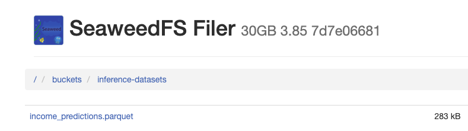
이미지 해설: 위쪽 제목은 SeaweedFS Filer(저장소 웹 화면, 버전 표시 30GB 3.85 7d7e06681)이고 경로 막대가 / / buckets / inference-datasets 입니다. 폴더 안에 파일 income_predictions.parquet 하나가 있고 크기가 283 kB 로 표시됩니다. 위 aws s3 ls 의 276.6 KiB 와 같은 크기를 단위만 달리 표기한 것입니다(276.6 KiB ≈ 283,000 바이트 ≈ 283 kB). 여기서 확인할 것: 버킷 이름이 inference-datasets 인가, 파일 크기가 0 이 아닌가 (아래 mlpipeline 의 model-inference/.../data_output 277.0 KiB 와 비슷한 크기).
7단계 — [PC 터미널 1] 파일 내용 읽어 보기
#
cat book/ch05/show_predictions.py
"""Read the chapter 5 prediction file from the inference-datasets bucket.
python book/ch05/show_predictions.py
"""
import io
from minio import Minio
import pandas as pd
client = Minio("localhost:9000", access_key="minio", secret_key="minio123", secure=False)
data = client.get_object("inference-datasets", "income_predictions.parquet").read()
frame = pd.read_parquet(io.BytesIO(data))
print("rows, columns:", frame.shape)
print("user_id in output:", "user_id" in frame.columns)
print(frame["Predicted_Income_Class"].describe().round(4).to_string())
줄별 풀이:
Minio("localhost:9000", ..., secure=False): 내 PC 에서 실행하므로 PC 쪽 주소(<PC_S3_URL>의localhost:9000, scheme 없이)를 쓰고, http 이므로secure=False. (Pod 안에서 도는 파이프라인 작업이 쓰는<POD_S3_HOSTPORT>와 다릅니다.)client.get_object(...).read(): 버킷의 파일을 바이트로 읽습니다.pd.read_parquet(io.BytesIO(data)): 바이트를 파일처럼 감싸 pandas 표로 읽습니다.frame.shape: (행 수, 열 수)."user_id" in frame.columns: 결과에user_id열이 있는지 True/False.describe():Predicted_Income_Class열의 개수·평균·표준편차·최소·사분위·최대.
실행
python book/ch05/show_predictions.py
rows, columns: (30162, 91)
user_id in output: False
count 30162.0000
mean 0.2478
std 0.2900
min 0.0000
25% 0.0000
50% 0.1119
75% 0.4289
max 1.0000
(수강생이 기록한 과거 실행 결과.)
출력 읽는 법:
(30162, 91): 예측 결과 30,162 행, 열 91 개. 열 수는 피처 인코딩(원-핫) 결과에 따라 달라질 수 있으므로 고정 성공 조건으로 쓰지 않습니다 (다른 판본의 가이드에는 92 로 적힌 곳도 있습니다).user_id in output: False: 결과에user_id가 없습니다. 추론 코드가 인코딩 전에 이 열을 drop 하기 때문입니다. 어떤 사용자의 예측인지 알아야 하는 실제 서비스라면 결과에 다시 붙여야 합니다 (→ E 섹션 참고).Predicted_Income_Class의 값은 0~1 사이이고 평균이 0.2478 입니다. 이 값은 분류된 클래스(0/1)가 아니라 확률처럼 보이는 연속값(예: 0.1119, 0.4289)입니다.predict_proba의 출력이라면 어느 열이 어느 클래스의 확률인지는 모델의classes_순서로 확인해야 합니다.
ℹ️ 참고: 여기까지 확인하면 작업 성공뿐 아니라 파일 전달과 실제 결과 저장까지 이어진 것입니다. parquet 미리보기에PAR1이나 깨진 문자가 나오면 바이너리를 텍스트로 표시한 것이므로, 그 화면만으로 내용이 잘못됐다고 판단하지 않습니다 (parquet 파일은 첫 4바이트가PAR1인 형식입니다).
✅ 기대 결과
- model-inference 로그 끝에
publish success.와sub-process exited ... error="<nil>". mlpipeline버킷에main.log9개 +v2/artifacts/.../data_output3개 (수강생 기록: 1.4 MiB, 1.5 MiB, 277.0 KiB).inference-datasets/income_predictions.parquet약 276.6 KiB (283 kB).show_predictions.py출력:rows, columns: (30162, 91),user_id in output: False,Predicted_Income_Classcount 30162, mean 0.2478, min 0.0, max 1.0 (수강생 기록).
🔍 확인 방법
- 작업 로그:
kubectl logs ... -c main의 마지막 줄이error="<nil>"인가. - 입출력 연결: 각 작업의
input경로가 앞 작업의output경로와 같은가 (UI Input/Output 탭). - 저장소:
aws s3 ls s3://mlpipeline --recursive에data_output3개,aws s3 ls s3://inference-datasets에 결과 파일. - 내용:
show_predictions.py의 행 수·열 수·user_id유무·확률 범위(0~1). - 행 수: 입력
entity_df.parquet의 행 수와 결과 행 수가 같은지 비교해 봅니다 (덧붙이면 수강생 기록은 30,162 행이고, 내 데이터는 다를 수 있습니다).
⚠ 자주 나는 오류
| 증상 | 원인 | 조치 |
|---|---|---|
aws s3 ls 가 접속 거부/타임아웃 |
forward 창이 꺼졌거나 AWS_ENDPOINT_URL 미설정 (새 터미널) |
forward 를 켜고 위 export 3줄을 다시 실행 |
inference-datasets 가 비어 있음 |
write-data-to-minio 가 실패했거나 output_bucket/output_file_name 오타 |
D-6 파라미터 확인, write-data-to-minio 로그 확인 |
show_predictions.py 에서 NoSuchKey/연결 오류 |
파일명 오타, 또는 forward 꺼짐 (localhost:9000 은 PC 에서만 통함) |
6단계로 파일 존재 확인 후 재실행 |
parquet 미리보기가 PAR1 ��... |
바이너리를 텍스트로 표시한 것 | 정상. show_predictions.py 로 내용을 읽습니다 |
k logs 가 command not found |
k 별칭이 없는 환경 |
kubectl logs 로 씁니다 |
| 결과에서 사용자를 알 수 없음 | 추론 코드가 user_id 를 drop |
정상 동작. 서비스용이면 결과에 다시 붙이는 처리가 필요 (E 섹션) |
| 열 수가 91 이 아님 | 피처 인코딩 결과 차이 | 열 수를 성공 기준으로 쓰지 않습니다. 행 수와 Predicted_Income_Class 범위로 판단 |
E. 결과 해석: 실행 성공과 예측 품질, 실습 종료·삭제
E-1. 실행 성공과 예측 품질은 다르다
🎯 목적: D 단계에서 Run 이 초록색
Succeeded가 되고income_predictions.parquet가 만들어졌다고 해서 "예측이 쓸모 있다"는 뜻은 아닙니다. 결과를 업무에 연결하기 전에 꼭 짚어야 할 세 가지(ID, 확률, 재실행 추적)를 이해합니다. 📋 사전조건: D-7 에서python book/ch05/show_predictions.py로 결과 파일을 읽어 본 상태.
수강생이 기록한 과거 실행 결과(D-7 의 show_predictions.py 출력)는 이랬습니다.
rows, columns: (30162, 91)
user_id in output: False
count 30162.0000
mean 0.2478
std 0.2900
min 0.0000
25% 0.0000
50% 0.1119
75% 0.4289
max 1.0000
(30162, 91)은 "30,162명 × 91개 열"입니다.user_id in output: False가 이번 절의 첫 번째 주제입니다.Predicted_Income_Class의 최솟값 0.0 ~ 최댓값 1.0 은 "범위가 0~1 사이로 보인다"는 뜻이지, 정확도가 좋다는 뜻이 아닙니다.
E-1-1. 결과에 user_id 가 없다
책 코드의 결과에는 user_id 가 없습니다. 추론 코드가 인코딩 전에 이 열을 지우기 때문인데, 실제 서비스라면 예측이 누구의 것인지 알 수 있도록 결과에 다시 붙여야 합니다. 모델 입력에서 ID 를 제외하는 것과 결과에서 ID 를 버리는 것은 다른 문제입니다.
참고로 다시 붙일 때는 행 순서만 믿고 붙이지 않는 것이 안전합니다. 모델에 넣기 전의 키 표(user_id, 기준 시각)를 따로 보관해 두고, 결과와 키 기준으로 결합한 뒤 행 수·중복·누락을 확인합니다. 아래는 개념을 보여 주는 예시이며 실습 필수 단계가 아닙니다.
# [PC 터미널 / 노트북 셀] 개념 예시 (실습 필수 아님)
# keys: 모델 입력에서 뺀 user_id, 기준 시각을 담은 표 (추론 전에 따로 보관해 둔 것)
# preds: 추론 결과 표
import pandas as pd
keys = keys.reset_index(drop=True)
preds = preds.reset_index(drop=True)
assert len(keys) == len(preds), "행 수가 다르면 순서로 붙이면 안 된다"
joined = pd.concat([keys, preds], axis=1) # 위치가 같은 행끼리 결합
assert joined["user_id"].is_unique # 사용자 중복이 없는지 확인
⚠ 위 예시는 "키 표와 결과의 행 순서가 추론 과정에서 바뀌지 않았다"는 전제가 필요합니다. 이 전제가 불확실하면 추론 컴포넌트가 키를 결과와 함께 내보내도록 고치는 쪽이 더 안전합니다. 실제 파이프라인에서의 동작은 직접 실행해 보지 않았습니다(직접 확인하지 않음).
E-1-2. 확률과 클래스를 구분한다
확률과 클래스도 구분해야 합니다. predict_proba() 가 반환한 값은 클래스 확률 추정치이지 클래스 번호가 아니며, 열 순서는 classes_ 로 확인합니다. 임계값은 오탐(틀리게 "양성"이라 함)과 미탐(양성을 놓침)의 업무 비용에 맞춰 확인해야 합니다.
- 이 실습의
Predicted_Income_Class열은 이름에 "Class" 가 들어 있어도, 실제로는predict_proba결과의 두 번째 열 값(0~1 사이 확률)입니다. 평균 0.2478 은 "평균적으로 이 클래스일 확률 추정이 약 25%"라는 뜻으로 읽습니다. - "두 번째 열이 어느 클래스인가"는 순서를 짐작하지 말고
model.classes_로 확인합니다. - "0.5 이상이면 양성" 같은 임계값은 자동으로 정해지지 않습니다. 오탐/미탐 중 무엇이 더 비싼지에 따라 업무가 정합니다.
# [JupyterLab 노트북 셀] 개념 예시 (실습 필수 아님)
print(model.classes_) # 예: [0 1] -> predict_proba 의 열 순서가 이 순서
proba = model.predict_proba(X) # shape: (행 수, 클래스 수), 각 행의 합은 1
positive_proba = proba[:, list(model.classes_).index(1)] # 클래스 1 의 확률 열
E-1-3. 재실행을 추적하려면 무엇을 남기나
재실행을 추적하려면 다음을 함께 남기는 편이 좋습니다.
| 남길 것 | 이유 | 이 실습에서의 예 |
|---|---|---|
| 대상 사용자와 기준 시각 | 같은 사람도 시점에 따라 피처 값이 다릅니다 | entity_df.parquet 의 user_id, event_timestamp |
| 구체 모델 버전 | Production 같은 이름표는 다른 버전을 가리키도록 바뀔 수 있습니다 |
models:/random-forest-classifier/<숫자> |
| 피처 정의 | 어떤 피처를 어떤 규칙으로 뽑았는지 | feast apply 로 올라간 registry.db 의 FeatureView |
| 코드와 데이터 스냅샷 | 같은 코드·같은 입력이어야 같은 결과를 재현합니다 | 이미지 book-ch5/components:0.1, 원천 parquet |
⚠ KFP run ID 는 업무 키가 아닙니다. run ID 는 "이번 실행"을 구분해 줄 뿐, 같은 날짜의 결과가 중복 저장되지 않게 해 주지 않습니다. 이 실습의 최종 파일명은
income_predictions.parquet로 고정이라 재실행하면 같은 이름으로 덮어씁니다. 운영형이라면 사용자·시간·모델·배치 식별키를 포함한 경로/키를 따로 설계합니다.
E-1 확인 방법과 자주 나는 오류
| 🔍 확인 방법 | ⚠ 자주 나는 오류 |
|---|---|
결과 행 수가 입력 행 수와 같은가, ID·기준 시각이 복원되는가, 누락·중복이 없는가, classes_ 를 확인했는가 |
행 순서만 믿고 ID 를 다시 붙임 / 두 번째 predict_proba 열을 "클래스 번호"로 해석 / 임계값 미확인 / 누락 사용자를 0 으로 채워 덮어씀 |
E-2. 실습 종료 · 재개 · 삭제
🎯 목적: "접속만 끊는 것"과 "클러스터를 지워 모든 실습 기록을 없애는 것"을 구분합니다. 📋 사전조건: 남겨 두고 싶은 결과(예: 최종 parquet, 노트북, MLflow 실험 기록)를 먼저 PC 로 내려받을지 정합니다. 클러스터를 지우면 그 안의 기록은 함께 사라집니다.
E-2-1. 접속만 종료하고 나중에 이어서 하기
서버가 차지하고 있는 창, 곧 [PC 터미널 2: forward 창], [PC 터미널 3: Jupyter 창] 과 열어 두었다면 [PC 터미널 4: 모니터링 창], [PC 터미널 5: Feast UI 창] 에서 각각 Ctrl+C 로 끄면 접속(통로)만 멈춥니다. 일반 명령 창인 [PC 터미널 1] 은 그대로 두거나 닫아도 됩니다. 클러스터와 그 안의 데이터는 그대로입니다.
다시 시작할 때는 새 터미널을 열어 아래 순서로 합니다. 새 터미널은 앞 창의 설정(폴더 위치, 가상환경)을 물려받지 않습니다. macOS(zsh) 에서는 새 창마다 먼저 setopt interactive_comments 를 입력합니다(A-0). 상태를 확인한 뒤 A-3(포트 포워딩) 부터 진행하고, Jupyter 는 A-6 에서 다시 켭니다.
[PC 터미널 1] 새로 연 터미널이면 먼저 저장소 폴더로 이동하고 가상환경을 켭니다
cd "<ENV_ROOT>"
source .venv-book/bin/activate
[PC 터미널 1] 클러스터가 살아 있는지 확인
# python 이 없으면 python3 bookenv.py status 로 입력
python bookenv.py status
[PC 터미널 2: forward 창] 통로를 다시 열기 (A-3). 이 창에서는 다른 명령을 치지 않습니다.
# 새로 연 터미널이면 먼저 폴더 이동. 이 창은 가상환경을 켜지 않아도 됩니다. python 이 없으면 python3 bookenv.py forward 로 입력
cd "<ENV_ROOT>"
python bookenv.py forward
down 은 "통화 상대(집 자체)를 철거하는 것"입니다. 전화선은 다시 꽂으면 되지만, 집을 철거하면 안에 둔 물건도 없어집니다.E-2-2. 클러스터와 모든 실습 기록 지우기
클러스터와 모든 실습 기록을 지우려면 다음을 실행합니다. python bookenv.py down 이 입력이고, $ ... 로 시작하는 줄과 그 아래는 down 이 내부에서 실행하며 보여 주는 내용입니다(수강생이 기록한 과거 출력).
# [PC 터미널 1] 실습 리소스 삭제 (새로 연 터미널이면 폴더 이동이 필요합니다. python 이 없으면 python3 bookenv.py down 으로 입력)
cd "<ENV_ROOT>"
python bookenv.py down
$ /opt/homebrew/bin/kind get clusters
$ /opt/homebrew/bin/kind delete cluster --name book-env
Deleting cluster "book-env" ...
Deleted nodes: ["book-env-control-plane"]
# [PC 터미널 1] 로컬에 빌드 저장된 컨테이너 이미지 제거
docker rmi book-ch5/components:0.1 book-ch5/feast-job:0.1 book-env/mlflow:3.0.0 book-env/runtime:0.1
Untagged: book-ch5/components:0.1
Deleted: sha256:f6b8df5479f5fe36defa814ce27a1949e66a3323b3d36cfa669f8e3ea9761af2
Untagged: book-ch5/feast-job:0.1
Deleted: sha256:8a0092fca037813ddfc38cd452cb543dba8f8aaccc14655894030ceeca270cda
Untagged: book-env/mlflow:3.0.0
Deleted: sha256:58e58927e621b3d9590aebfc4a572f819b48375540248f62e9b23e97766dab1e
Untagged: book-env/runtime:0.1
Deleted: sha256:cf5cc65115a8886d8c8cfb5ac175b297f293114240fe6ae5b6ce2b39d7ed80a0
🔧 본인 환경에 맞게 교체:
-/opt/homebrew/bin/kind= 원 노트를 쓴 수강생(Apple Silicon macOS + Homebrew)의 환경에서kind가 설치된 경로. 본인 PC 에서는which kind로 확인하면 다르게 나올 수 있습니다(출력 줄 자체는down이 자동으로 찍는 것이라 직접 칠 필요 없음).
-book-env=<CLUSTER_NAME>클러스터 이름(소스 예시값).
-book-ch5/components:0.1,book-ch5/feast-job:0.1,book-env/mlflow:3.0.0,book-env/runtime:0.1= 각각<COMPONENT_IMAGE>,<FEAST_JOB_IMAGE>,<MLFLOW_IMAGE>,<RUNTIME_IMAGE>(D-2 에서 빌드한 이미지 이름과 태그).docker images로 확인하고, 본인이 다른 태그를 썼다면 그 이름으로 바꿉니다.
-sha256:...해시값은 이미지마다·환경마다 다릅니다. 값이 같을 필요 없고 "Untagged와Deleted가 이미지마다 나옵니다"는 형태를 확인합니다.
각 줄 풀이:
| 출력 | 뜻 |
|---|---|
kind get clusters |
현재 PC 에 있는 kind 클러스터 목록을 봅니다(삭제 전 존재 확인). 본문의 출력 예시에는 목록 이름 줄이 따로 보이지 않습니다. |
kind delete cluster --name book-env |
book-env 라는 이름의 클러스터를 지웁니다. python bookenv.py down 의 핵심 작업이 이것입니다. |
Deleted nodes: ["book-env-control-plane"] |
클러스터를 이루던 Docker 컨테이너(노드)가 지워졌습니다. |
docker rmi ... |
직접 빌드해 PC 에 저장해 둔 이미지 4개를 지웁니다. 클러스터 삭제와 별개이며, 디스크 공간을 되찾고 싶을 때만 합니다. |
Untagged → Deleted: sha256:... |
이름표(태그)를 먼저 떼고, 더는 쓰는 곳이 없으면 이미지 본체를 지웠다는 뜻입니다. |
E-2-3. 6단 요약
| 항목 | 내용 |
|---|---|
| 🎯 목적 | 접속 종료와 리소스 삭제를 구분하고, 깨끗하게 정리합니다. |
| 📋 사전조건 | 보존할 기록(결과 parquet, 노트북, 필요한 MLflow 기록) 결정. |
| ⌨ 명령어 | Ctrl+C(접속만 종료) / python bookenv.py status, forward(재개) / python bookenv.py down(클러스터 삭제) / docker rmi ...(이미지 정리) |
| ✅ 기대 결과 | down 후 kind get clusters 목록에 book-env 가 없습니다. docker rmi 뒤 docker images 에서 4개 이미지가 사라집니다. |
| 🔍 확인 방법 | kind get clusters, docker images \| grep book- (아무것도 안 나오면 정리 완료) |
| ⚠ 자주 나는 오류 | 지우기 전에 기록을 안 내려받음 / 사용 중인 컨테이너가 있어 이미지 삭제가 거부됨(컨테이너를 먼저 정리) / Ctrl+C 만 하고 클러스터를 지운 것으로 착각 |
⚠ 덧붙이면 공개 매니페스트 기준으로 Redis 는 PVC(영구 볼륨)가 없어 Pod 가 다시 만들어지면 값이 사라질 수 있고, PostgreSQL 은 PVC 를 씁니다. 클러스터 삭제 전에 "모든 기록"이 PC 밖으로 자동 보존된다고 생각하지 않습니다. Redis 에 있던 피처는 C-4 의
materialize를 다시 실행해야 복원됩니다(feast apply만 다시 해서는 값이 복원되지 않습니다).
오류 대응 표 (증상 / 원인 / 해결)
오류 대응 표 (증상 / 원인 / 해결)
🎯 목적: 막혔을 때 "어느 단계 → 어떤 증상 → 왜 → 어떻게" 순서로 빠르게 찾습니다. 📋 읽는 법: [소스] = 수강생 노트 본문에 직접 나오는 문제·주의. [덧붙임] = 노트에는 없고 공개 매니페스트·공식 문서·일반 지식으로 덧붙인 내용(환경에 따라 다를 수 있으므로 실제 로그로 먼저 확인). "추정"은 확정 원인이 아니라 가능성입니다. 원인을 단정하기 전에
kubectl describe pod,kubectl logs, 실제 에러 문구를 먼저 봅니다.
NoSuchBucket)이 여러 단계에서 나올 수 있으니, 증상이 나온 단계를 먼저 보고 표에서 같은 단계 행을 찾습니다.A 단계: 환경 구축 · 포트 포워딩 · 버킷 · 코드/가상환경
| 단계 | 증상 | 원인 (또는 확인할 원인) | 해결 · 확인 | 출처 |
|---|---|---|---|---|
| A-1 | python bookenv.py check 에서 도구 not found |
PATH 누락, 실행 파일 위치 차이 | 도구 설치/PATH 확인 후 check 재실행. 필요하면 DOCKER/KIND/KUBECTL/GIT 환경변수로 경로 지정 |
[소스]+[덧붙임] |
| A-1 | Docker 정보가 안 나옴, Docker 접근 실패 | Docker/OrbStack 데몬 미실행, 권한, 선택된 Docker context 차이 | 런타임을 켜고 docker info 확인. 서버 정보가 나오는지 봅니다 |
[덧붙임] |
| A-2 | up 이 매우 오래 걸림, 대기 후 timeout |
첫 실행은 이미지 다운로드·빌드로 20분 이상 걸릴 수 있음. 자원 부족, PVC, MySQL 준비 중 재시작 | 기다립니다. status/describe/events/logs 로 준비 안 된 리소스를 확인하고, 해결 후 up 재실행(기존 클러스터는 재사용) |
[소스]+[덧붙임] |
| A-2 | 일부 Pod 의 RESTARTS 가 0 이 아님 | KFP 컴포넌트가 DB 준비 전에 기동해 재시작한 것으로 추정(원인 미확정) | 최종적으로 1/1 Running 이면 수강생 노트 사례(2~5회)처럼 정상 범위로 봅니다 |
[소스] |
| A-2 | rollout 대기 초과(900초) | 이미지 pull 지연/자원 부족 | kubectl describe pod, Docker 메모리 확인 |
[소스]+[덧붙임] |
| A-2 | CRD apply 오류 | cluster-scoped 정의가 아직 준비 안 됨, kube context 차이 | CRD 가 established 인지, 현재 context 가 <KUBE_CONTEXT>(예: kind-book-env) 인지 확인 |
[소스]+[덧붙임] |
| A-2 | ImagePullBackOff |
폐기된 이미지 경로, 네트워크, 해당 CPU 플랫폼 이미지 없음 | 실제 pull 에러 문구와 image: 확인. 실습 구성은 SeaweedFS·Executor 패치가 적용된 것을 씁니다 |
[덧붙임] |
| A-3 | 포트 5000 점유(macOS) | macOS AirPlay Receiver 가 5000 번을 쓸 수 있음 | 시스템 설정에서 AirPlay 수신 끄기(권장). 포트를 바꾸는 방법은 초보자에게 권하지 않으며, 꼭 바꿔야 하면 치환 명령 모음의 "수동 port-forward" 절과 MLflow URL 변경을 함께 따르세요 | [덧붙임] |
| A-3 | localhost:8888 이 안 열리거나 다른 앱이 뜸 |
이미 사용 중인 포트(기존 forward/Jupyter 등) | lsof -i :8888 로 점유 프로세스 확인 후 필요 없는 것 종료 또는 로컬 포트 변경 |
[덧붙임] |
| A-3 | 노트북에서 "연결 오류", forward 창에 Reconnecting 반복 |
forward 터미널 종료 / Pod 재시작 / 터널 실패 | forward 창에서 python bookenv.py forward 재실행. Pod·events·포트 확인, 일시적 reconnect 와 지속 실패를 구분 |
[소스]+[덧붙임] |
| A-3 | Redis 에 http://localhost:6379 로 접속 시도 → 실패 |
Redis 는 HTTP 가 아니라 TCP 프로토콜 | redis-cli PING 같은 Redis 클라이언트 사용 |
[덧붙임] |
| A-3 | S3 주소(9000)로 접속하면 HTML 화면이 안 나옴 | 9000 은 S3 API 포트, 웹 화면(Filer)은 8888 | aws s3 ls, head-bucket 으로 검증. 브라우저는 localhost:8888/buckets/ |
[덧붙임] |
| A-4 | 버킷 이름 오류 InvalidBucketName |
밑줄(_) 등 부적합 문자(예: feature_data_sets) |
하이픈 이름 feature-data-sets 사용. S3 일반 버킷 이름은 소문자·숫자·점·하이픈 |
[덧붙임] |
| A-4 | AccessDenied, Signature 오류 |
계정/endpoint/region/시간/TLS 불일치 가능 | 실제 에러와 설정 일치 확인. 자동으로 "버킷 없음"이라고 판단하지 않습니다 | [덧붙임] |
| A-4 | 버킷 목록 개수가 문서와 다름 | bookenv.py buckets 가 만드는 업무 버킷은 5개, 여기에 KFP 가 만든 mlpipeline 이 더해져 aws s3 ls 에는 6개가 보입니다 |
5개 + mlpipeline 로 이해. 생성은 buckets(클러스터 안 Job), 확인은 aws s3 ls(forward 필요) |
[소스]+정정 |
| A-5 | 첫 셀 AssertionError |
upstream/chapter-4 경로가 없거나 커널 CWD 가 다름 |
A-5 의 git clone 확인, 노트북 커널의 현재 위치와 DATA.resolve 확인 |
[소스] |
| A-5/B | import 실패 |
잘못된 가상환경/패키지 | sys.executable 이 <VENV_NAME> 안을 가리키는지 확인, 해당 환경에 제공된 requirements 설치 |
[덧붙임] |
B 단계: MLflow 학습 · 등록
| 단계 | 증상 | 원인 (또는 확인할 원인) | 해결 · 확인 | 출처 |
|---|---|---|---|---|
| B-1~3 | MLflow connection refused / 연결 오류 |
forward(5000) 없음, 잘못된 tracking URI | <PC_MLFLOW_URL> 로 curl .../health, forward 창, 서버 Pod 확인 |
[소스] |
| B-2/3 | NoSuchBucket |
mlflow-artifacts 또는 mlflow-datasets 버킷 부재 |
python bookenv.py buckets 후 A-4 목록 재확인 |
[소스] |
| B-3 | PLEASE CREATE BUCKET IN MINIO BEFORE PROCEEDING |
mlflow-datasets 버킷이 없음 |
버킷 생성(python bookenv.py buckets) |
[소스: 노트북 출력] |
| B | MLflow UI 는 되는데 모델/아티팩트 업로드 실패 | 노트북(PC)에서 S3 접근에 필요한 MLFLOW_S3_ENDPOINT_URL 등 누락. UI 접속과 아티팩트 접근은 별개 |
PC·Pod 각각의 S3 endpoint/키 설정 확인 | [덧붙임] |
| B-3 | train/test CSV 행 수가 설명과 다름(예: 28,935 / 10,924 행, 끝에 ,,,,0.0) |
X_train(원래 인덱스 유지)과 y_train(Series)을 concat 할 때 인덱스가 어긋남 |
X_train.reset_index(drop=True) 후 y 와 합치기. 저장 후 행 수(분할 24,129 / 6,033)·NaN·정답 대응 확인. 자세한 정정 코드는 B-3 절 참고 |
[소스 관찰]+정정 |
| B-3 | 참조 피처(reference_features)의 source 가 test 파일로 기록됨 |
노트북 셀의 source 변수 오기 가능 | feature_df_path 로 정정, MLflow input provenance 재확인 |
[덧붙임] |
| B-4 | 최고 run 등록에서 IndexError |
AUC > 0.8 후보가 하나도 없음 | 후보 목록·분할·지표 확인 | [덧붙임] |
| B-4 | 모델 등록 실패(XGBoost 가 1등일 때) | 코드가 income-classifier 아티팩트 경로만 찾음 |
Random Forest run 을 등록 | [소스] |
| B-4 | 이름은 forest 인데 다른 flavor 모델 | 이름·점수 필터가 모델 종류를 강제하지 않음 | 선택 run 의 실제 모델/아티팩트와 D 의 model_type 일치 확인 |
[덧붙임] |
| B-4 | Production 이 없다 / model 을 못 찾음 |
stage 미지정, 이름·버전·URI 불일치 | transition_model_version_stage 결과와 search_model_versions 출력 확인(UI 스크린샷만으로 Production 표시를 판단하지 않습니다) |
[소스]+[덧붙임] |
| B-4 | stage 관련 deprecation 경고 | MLflow 모델 stage 전환 API 는 2.9.0 부터 deprecated 로 알려져 있습니다(공식 문서 재확인 필요) | 이 실습은 3.0.0 에서 stage 로 동작한 기록이 있어 그대로 진행. 새 구현은 alias → 숫자 버전 URI 로 | [소스]+[덧붙임] |
C 단계: Feast 피처 정의 · 조회
| 단계 | 증상 | 원인 (또는 확인할 원인) | 해결 · 확인 | 출처 |
|---|---|---|---|---|
| C | Redis 인증 오류 | 비밀번호 치환 누락(예: 실습용 redis123), 터널 부재 |
Secret/로컬·Pod YAML 의 비밀번호, 6379 forward, PING 확인 |
[덧붙임] |
| C-2 | Registry 쪽 NoSuchBucket |
feature-registry 버킷 미생성/이름 오류 |
버킷 생성과 YAML 의 registry 경로 확인 | [소스]+[덧붙임] |
| C-3 | 과거(history) 피처가 null |
ID·timestamp·TTL·원천 endpoint 불일치 | 원천에 해당 행이 있는지, 시간 범위, dtype, Registry 확인 | [소스]+[덧붙임] |
| C-4 | 온라인 조회 결과 Sex 가 None |
materialize 안 함, 사용자 원천 없음, 기간/프로젝트 불일치 |
materialize 로그, 사용자 최신 원천 데이터, 실제 online 조회 확인. apply 만으로는 값이 Redis 에 올라가지 않습니다 |
[소스] |
| C-4 | Redis DBSIZE 가 기대(30162)와 다름 |
공유 DB 의 다른 키·프로젝트, 데이터 변경, SCAN 중복 |
DBSIZE 와 샘플 조회를 함께 보고, 키 개수는 보조 증거로만 씁니다 |
[덧붙임] |
| C UI | Feast UI 에서 Entity 타입이 INVALID |
화면만으로는 원인 미확정. 실습 진행에는 지장 없음 | entity.py 의 value_type·join key 점검. 정상 타입이라고 단정하지 않습니다 |
[소스: 이미지]+정정 |
| C/D | entity_key_serialization_version 경고 |
설정에 버전을 명시하지 않아 나오는 경고 | 실습 진행에는 영향 없는 경고로 기록됨. 버전별 기본값은 공식 문서에서 확인(권장값을 단정하지 않습니다) | [소스] |
D 단계: Kubeflow Pipelines 배치 추론
| 단계 | 증상 | 원인 (또는 확인할 원인) | 해결 · 확인 | 출처 |
|---|---|---|---|---|
| D-2 | 빌드 중 apt-get 404 |
구형 buster 베이스 이미지 저장소 문제로 기록됨 |
실습에서 제공하는 bookworm 기반 Dockerfile 사용 |
[소스] |
| D-2/3 | ErrImageNeverPull |
imagePullPolicy: Never 인데 kind 노드에 이미지가 없음 |
빌드 → kind load(python bookenv.py load) → crictl images 로 노드 안 이미지 확인, 정확한 태그 확인 |
[소스] |
| D-2/3 | ErrImagePull |
구형 image, 잘못된 registry, 미적재 | component → 컴파일 IR → 실제 Pod image: 대조 |
[덧붙임] |
| D | exec format error, no matching manifest |
CPU 아키텍처(arm64/amd64) 불일치 가능 | 노드/이미지 아키텍처 확인, 호환 이미지·build platform 선택. Apple Silicon 이면 Rosetta/플랫폼 설정 확인(필수 아님) | [덧붙임] |
| D-2 | 추론 시 모델 로드 오류(버전 경고/실패) | 학습(1.5.2)과 추론 컴포넌트 scikit-learn 버전 불일치 | scikit-learn==1.5.2 고정. 저장 모델은 다른 버전 로드가 지원되지 않으며, Python/NumPy 등 전체 환경 차이도 확인 |
[소스]+[덧붙임] |
| D-2 | FallbackAsyncAdaptedQueuePool ImportError |
MLflow 와 SQLAlchemy/Alembic 조합 문제로 보고된 사례 | traceback 확인 후 제공된 requirements/lock 사용. (MLflow 3.0.0 core 요구는 sqlalchemy<3 이므로 <2.1 은 보고된 회피책) |
[덧붙임] |
| D-3 | Job 이 이미 존재해 재실행 안 됨 | 이미 완료된 Job, immutable template | 이전 로그 확인 후 해당 실습 Job 만 삭제(kubectl -n kubeflow delete job feast-job) 하고 다시 apply |
[소스]+[덧붙임] |
| D-3 | Registry 조회 시 s3://feature-data-sets 를 봄 |
본문 오기 | s3://feature-registry 가 맞습니다(registry.db 가 올라가는 버킷) |
정정 |
| D-4 | 컴파일 YAML 에 이상한 필드(enti pipeline.py의 컴파일 결과ty_df_filename:) |
본문 IR 복사 중 텍스트가 끼어든 오기 | entity_df_filename: 이 정상. inference_pipeline.py 로 직접 컴파일해 생성한 파일을 사용 |
정정 |
| D-4 | 컴파일 시 파일을 못 찾음 | 실행 디렉터리 | upstream/chapter-5 에서 실행 |
[소스] 순서에서 추정 |
| D-5 | Package URL is empty / 업로드 폼에서 파일이 안 먹음 |
"Upload a file" 라디오 대신 URL 을 선택 | 라디오 → Choose file 다시 선택 | [소스]+[덧붙임] |
| D-6 | NoSuchKey (read 단계) |
entity_df.parquet 미업로드/이름 오류 |
업로드한 버킷/파일명과 Run 파라미터 일치 확인 | [덧붙임] |
| D-6 | 모델을 못 찾음(No model found in stage Production) |
B-4 의 Production 미지정, 오타·대소문자, MLflow DNS 문제 | B-4 재확인, Pod 용 <POD_MLFLOW_URL> 확인 |
[소스]+[덧붙임] |
| D-6 | MLflow/S3 접속 실패 | 파라미터 주소에 localhost 사용 — Pod 에서 localhost 는 Pod 자기 자신 |
*.svc.cluster.local 서비스 DNS 사용(<POD_S3_HOSTPORT>: scheme 없음, <POD_MLFLOW_URL>: http:// 포함). PC 의 forward 는 Pod 통신 경로가 아닙니다 |
[소스] |
| D-6 | Registry 오류(retrieve) | D-3 Job 실패, 로컬 설정 선택, Pod 에서 보이는 endpoint 불일치 | registry.db, feature_store_k8s.yaml, FileSource 의 내부 endpoint 확인 |
[덧붙임] |
| D-6 | Pod 가 Init 에서 오래 멈춤 | 사용자 네임스페이스의 아티팩트 Secret 문제 사례 | 해당 Secret 확인(이 구성에서의 재현은 미확인) | [소스 참고] |
| D-6 | 로그인 후 403/쿠키 오류 | HTTP 접속의 Secure 쿠키 | 증상 별도 확인(이 실습은 인증 없음) | [소스 참고] |
| D-6 | 사용자 코드 로그가 안 보임 | driver Pod 를 읽고 있음, 또는 cache hit | 실제 implementation Pod 의 -c main 로그, UI 의 캐시 표시 확인 |
[소스]+[덧붙임] |
| D-6 | 같은 입력인데 새 결과가 안 나옴 | KFP 캐시, 바뀌는 stage 이름, 같은 파일명 덮어쓰기 | 캐시를 끄거나 내용/버전 식별값을 입력에 포함 | [덧붙임] |
| D-6 | 0/2 Completed, metadata file absent 로그 |
정상 종료이거나 선택적 metadata 가 없는 경우일 수 있음 | 종료 코드, publish success., Workflow Succeeded, 아티팩트를 함께 판단 |
[소스 로그] |
| D-7 | write 단계 NoSuchBucket |
inference-datasets 버킷 부재 |
A-4 에서 생성, output_bucket 파라미터 확인 |
[덧붙임] |
| D-7 | S3 InternalError |
저장소 볼륨 한도 문제 등 여러 원인 가능(실습 구성은 volume.max=100 패치를 사용) |
실제 S3 로그·용량·패치 args 확인. 모든 InternalError 의 원인으로 일반화하지 않습니다 | [덧붙임] |
| D-7 | UI 미리보기에 PAR1, 깨진 문자 |
parquet 이라는 바이너리 파일을 텍스트로 표시 | 정상. pd.read_parquet 또는 show_predictions.py 로 파싱해 확인 |
[소스] |
E 단계: 결과 해석 · 종료
| 단계 | 증상 | 원인 (또는 확인할 원인) | 해결 · 확인 | 출처 |
|---|---|---|---|---|
| E-1 | 결과에 user_id 없음 |
추론 코드가 인코딩 전에 제거 | 키 표를 따로 보관해 키 기준으로 결합(행 순서만 믿지 않기) | [소스] |
| E-1 | Predicted_Income_Class 를 클래스 번호로 오해 |
두 번째 predict_proba 열의 확률임 |
classes_ 확인, 임계값은 업무 비용으로 검증 |
[소스] |
| E-1 | 열 순서는 맞는데 의미가 다름 | 배치에서 get_dummies(drop_first=True) 를 따로 적용하면 기준 범주가 학습과 달라질 수 있음 |
학습 때 fit 한 인코더를 모델과 함께 저장해 추론에서도 같은 변환 사용 | [덧붙임] |
| E-1 | 같은 출력 파일이 덮어써짐/중복 | 고정 output_file_name, 업무 키 부재 |
이름/경로에 사용자·시간·모델·배치 식별자 포함 | [소스]+[덧붙임] |
| E-2 | 재시작 후 Redis 값이 사라짐 | 공개 매니페스트의 Redis 에 영구 볼륨이 없음 | materialize 재실행. apply 만 다시 해서는 값이 복원되지 않습니다 |
[덧붙임] |
| 보충 | 보충 스크립트 FileExistsError |
feature_study.py 가 이미 있는 폴더를 mkdir |
별도의 새 빈 폴더에서 실행 | [덧붙임] |
오류가 났을 때 공통 진단 순서
# [PC 터미널 1] 어디가 안 떴는지 먼저 본다 (python 이 없으면 python3 bookenv.py status)
python bookenv.py status
# 실패한 Pod 이름을 알았다면
kubectl --context "<KUBE_CONTEXT>" -n "<KFP_NAMESPACE>" describe pod "<FAILED_POD>"
kubectl --context "<KUBE_CONTEXT>" -n "<KFP_NAMESPACE>" logs "<FAILED_POD>" -c main
kubectl --context "<KUBE_CONTEXT>" -n "<KFP_NAMESPACE>" get events --sort-by=.metadata.creationTimestamp
🔧 본인 환경에 맞게 교체:<KUBE_CONTEXT>= 소스 예시kind-book-env(kubectl config current-context로 확인),<KFP_NAMESPACE>= 소스 예시kubeflow,<FAILED_POD>=kubectl get pods -n kubeflow에서Error/ImagePullBackOff등으로 보이는 Pod 이름.
연결 / 파일 / Registry / 모델 / 이미지 / 스키마 중 어느 쪽 문제인지 먼저 좁히고, 무제한 재시도하지 않습니다. 정상 종료 시의 경고를 실패로 오판하거나, 스키마 오류를 네트워크 재시도로 풀려고 하지 않습니다.
단계 완료 확인 체크리스트와 최소 점검 명령
단계 완료 확인 체크리스트와 최소 점검 명령
🎯 목적: 각 단계를 끝낼 때마다 "정말 끝났는지"를 무엇을 보고 판단하는지 한 곳에 모읍니다. 📋 읽는 법: 아래 숫자·문구(예:
30,162행,Ready v1.31.6)는 수강생이 기록한 과거 실행 결과입니다. 본인 환경에서는 시간·해시·run ID 가 다르므로 값이 아니라 형태를 확인합니다. 체크박스는 직접 실행해 확인한 뒤에 스스로 체크합니다.
A. 환경 구축
- [ ] A-1:
python bookenv.py check→All required tools are available.(Docker 서버 정보가 정상 출력, Python 3.11·uv 는 별도 확인) - [ ] A-2:
kubectl get node -owide→book-env-control-plane Ready ... v1.31.6형태.python bookenv.py status에서 kubeflow(14개 안팎)·mlflow·postgres·redis 가 모두Running - [ ] A-2:
kubectl get deploy -n kubeflow minio -owide→ 이미지에seaweedfs가 보임(이름은 minio 지만 실제 저장소는 SeaweedFS) - [ ] A-3: forward 를 켠 상태에서 아래 명령으로 각 통로 확인
- [ ] A-4:
aws s3 ls에 업무 버킷 5개 +mlpipeline(KFP 가 준비) = 6줄.head-bucket으로 API 도 확인 - [ ] A-5: 책 코드 두 개(upstream)가 내려받아졌고, 가상환경 interpreter 의 핵심 버전이 노트의 출력(
3.0.0 0.40.1 2.9.0 1.5.2순서의 MLflow / Feast / KFP / scikit-learn)과 같습니다 - [ ] A-6: JupyterLab 이 8890(또는 출력된 포트)으로 열리고, 두 노트북이 올바른 커널로 열립니다
# [PC 터미널 1] forward(A-3) 창이 켜져 있는 동안 실행
curl -sS -o /dev/null -w "mlflow %{http_code}\n" <PC_MLFLOW_URL>/ # 예: http://localhost:5000
curl -sS -o /dev/null -w "kfp-ui %{http_code}\n" http://localhost:8080/
curl -sS -o /dev/null -w "filer %{http_code}\n" http://localhost:8888/buckets/
curl -sS <PC_MLFLOW_URL>/health # MLflow 서버 상태 확인용 엔드포인트
aws s3 ls # 버킷 목록 (AWS_* 환경변수를 export 한 같은 터미널에서)
# Redis 는 HTTP 가 아니라 TCP 프로토콜이라 curl 의 HTTP 로는 확인할 수 없다.
# 소스의 방식(예시): 인증 후 PING 을 보내고 +OK, +PONG 이 오는지 본다.
printf 'AUTH redis123\r\nPING\r\nQUIT\r\n' | curl -s -T - telnet://localhost:6379
HTTP 코드 200 이 나와야 화면이 열린다는 것은 본문의 화면 기록에 근거한 기대치이며, 실제 코드값은 환경에 따라 다를 수 있습니다. redis123 은 실습용 예시값입니다(실제 환경에서는 변경).
B. MLflow 학습 · 등록
- [ ] B-1: 환경 셀과
import가 오류 없이 통과,DATA.exists()가 참 - [ ] B-2:
df.info()→ 30,162행 · 9열 원천 확인,artifact_location='s3://mlflow-artifacts/1'. UI 의eda-run Artifacts 에 PNG 8장 - [ ] B-3: split 이 24,129 / 6,033 으로 나뉩니다. 저장된 CSV 의 행 수·NaN·정답 대응 확인(
wc -l이 이보다 크면 인덱스 어긋남입니다. B-3 의 선택 정정을 건너뛰었다면 이 항목은 넘어가도 됩니다).aws s3 ls s3://mlflow-datasets --recursive에feature_df/train/testCSV - [ ] B-3: UI Runs 에 run 4개(탐색 1 + 모델 3. 학습 셀을 더 돌렸다면 그 이상), 모델 run 마다 metric(
roc_auc_score_test)과column_list.pkl존재 - [ ] B-4: 선택 run 의 모델 파일이 존재.
search_model_versions출력에1 Production <run_id>형태가 보이고 UI Models 에 v1. 모델 이름만 믿지 않고 run ID 연결을 확인
C. Feast 피처
- [ ] C-1:
aws s3 ls s3://feature-data-sets→ parquet 3개(원천). 로컬 repo 의 3 파일, 버킷·비밀번호·FileSource 확인 - [ ] C-2:
feast apply로그에 정의 3줄(FeatureView 3개),s3://feature-registry/아래registry_local.db. apply 와 적재(materialize)는 다릅니다 - [ ] C-3: 과거 조회 결과에
user_id,event_timestamp,Sex.null/TTL 검사 - [ ] C-4: Redis
DBSIZE= 30162 (--scan | wc -l도 같게 나오지만 보조 증거). 온라인 조회의Sex가 비어 있지 않음(샘플 값이 정상이어야 함) - [ ] C-5:
feature-registry에feature_store.yaml·registry_local.db, 로컬 endpoint 확인 - [ ] (선택) Feast UI: Data Sources 3 / Feature Views 3 / 피처 총 8. Entity Type
INVALID표시는 원인 미확정, 실습 진행에는 지장 없음
D. Kubeflow Pipelines
- [ ] D-1: 네 component 파일의
image:가 실제로 바뀜, Redis 비밀번호 치환 - [ ] D-2:
docker images에book-ch5/components:0.1,book-ch5/feast-job:0.1. 노드 안에서도crictl images | grep book-ch52줄(= Docker 쪽과 kind 노드 쪽 양쪽 확인). CPU 플랫폼 일치 - [ ] D-3:
job/feast-job condition met(Complete), 로그 3줄,s3://feature-registry에registry.db(※ 본문의feature-data-sets는 오기) - [ ] D-4:
entity_df.parquet·feature_store_k8s.yaml업로드. 컴파일 후grep "image:"4줄이 모두book-ch5/components:0.1, 파라미터 14개 - [ ] D-5: UI 업로드 후 그래프에 4개 노드. "Upload a file" 라디오로 선택
- [ ] D-6: 모든 파라미터·DNS·flavor·stage 일치. 약 2분 후 4개 모두 초록 체크,
kubectl get workflows.argoproj.io -n kubeflow→Succeeded. 실제 task 의main로그 또는 cache hit 표시. model-inference 로그 끝에publish success. - [ ] D-7: 중간 아티팩트가 연결,
aws s3 ls s3://inference-datasets→income_predictions.parquet.show_predictions.py→(30162, 91),Predicted_Income_Class가 0~1 범위
E. 결과 해석 · 정리
- [ ] E-1: 행 수·ID/시간·누락·중복·확률·
classes_확인, 선택 모델·정의·코드·스냅샷 기록 - [ ] 오류 대응(오류표·공통 진단 순서): 실패 위치·입력·접속·권한·스키마 중 근거 확보
- [ ] E-2: 보존할 기록을 먼저 내려받음. 접속 종료와 클러스터 삭제를 구분.
python bookenv.py down후kind get clusters에book-env가 없고docker rmi완료 - [ ] 보충: (해 봤다면) 별도 환경에서 네 스크립트가 끝나고 고정 모델 URI·FeatureService tag·키 보존 결과 확인
최소 점검 명령 묶음
참고로 아래는 위 체크를 한 번에 돌려 보는 모음입니다. 본문에 이대로 있는 블록은 아니며, 같은 터미널에서 이어서 실행합니다(새 터미널이면 export AWS_* 를 다시 합니다).
# [PC 터미널 1] 노드, 서비스 상태
kubectl --context "<KUBE_CONTEXT>" get nodes -o wide
kubectl --context "<KUBE_CONTEXT>" -n "<KFP_NAMESPACE>" get pods,deploy,svc,jobs
# 통로(forward) 확인
curl -fsS "<PC_MLFLOW_URL>/health"
curl -fsS "http://127.0.0.1:<KFP_UI_PORT>/" -o /dev/null
curl -fsS "http://127.0.0.1:<PC_FILER_PORT>/buckets/" -o /dev/null
# S3 (AWS_ACCESS_KEY_ID / AWS_SECRET_ACCESS_KEY 를 export 한 터미널에서)
aws --endpoint-url "<PC_S3_URL>" s3 ls
aws --endpoint-url "<PC_S3_URL>" s3api head-bucket --bucket "<REGISTRY_BUCKET>"
# Redis PING 은 HTTP curl 로 대신할 수 없음 (실습용 비밀번호 redis123, 실제 환경에서는 변경)
kubectl --context "<KUBE_CONTEXT>" -n "<REDIS_NAMESPACE>" exec deploy/"<REDIS_DEPLOYMENT>" -- redis-cli -a "redis123" PING
🔧 본인 환경에 맞게 교체:
-<KUBE_CONTEXT>=kind-book-env,<KFP_NAMESPACE>=kubeflow,<REDIS_NAMESPACE>/<REDIS_DEPLOYMENT>= Redis 가 떠 있는 네임스페이스와 Deployment 이름(kubectl get deploy -A | grep redis로 확인).
-<PC_MLFLOW_URL>=http://localhost:5000,<PC_S3_URL>=http://localhost:9000(PC 쪽 주소. Pod 쪽 주소와 다릅니다).
-<KFP_UI_PORT>=8080,<PC_FILER_PORT>=8888,<REGISTRY_BUCKET>=feature-registry(forward 설정에서 바꿨다면 그 값).
⚠
health가 HTTP 성공을 돌려줘도 백엔드·아티팩트 저장소·온라인 저장소까지 모두 정상이라는 뜻은 아닙니다. S3 인증, 모델 다운로드, Feast 샘플 조회, 최종 parquet 파싱을 각각 따로 확인합니다.
보충: 도전과제/심화 실습 (FeatureService 와 모델 버전 계약 고정)
보충 — 도전과제/심화 실습: FeatureService 와 모델 버전 계약 고정
본문 상태: 수강생 노트의 "보충" 토글에는
~한 줄만 있고 세부 절차가 비어 있습니다. 아래는 선택 심화 실습으로, 원 가이드가 안내하는 4개 스크립트(feature_study.py,income_study.py,pipeline_study.py,run_pipeline_study.py)의 역할을 정리한 것입니다. 본 실습(A~E)의 필수 단계가 아니며, kind 클러스터와 별도의 폴더·가상환경에서 합니다. 스크립트 내용은 읽어서 역할을 정리한 것이고 여기서 실행해 확인하지는 않았습니다(직접 확인하지 않음).
🎯 목적: Feast 로 학습 피처를 조회하고, 그 피처 묶음(FeatureService)의 이름을 MLflow 모델 버전과 연결해 "이 모델은 이 피처 정의로 학습됐다"는 계약을 고정해 보는 연습입니다.
📋 사전조건: Python 3.11 이 있는 Linux 또는 WSL2(원 가이드가 명시. macOS 에서의 동작은 확인되지 않았습니다), 별도의 빈 작업 폴더, 위 네 스크립트(원 가이드 다운로드 링크, refs 참고).
⌨ 명령어:
# [PC 터미널] 별도의 빈 폴더에서 (본 실습의 <ENV_ROOT> 와 섞지 않는다)
# A-0 에서 uv 로 받아 둔 Python 3.11 로 가상환경을 만듭니다 (시스템 python3 가 3.10 이하일 수 있어서)
uv venv .venv --python 3.11 --seed
source .venv/bin/activate
python -m pip install mlflow==2.16.2 scikit-learn==1.5.2 feast==0.40.1 \
pandas==2.2.3 numpy==1.26.4 pyarrow==17.0.0 kfp==2.10.1 sqlalchemy==2.0.36
python feature_study.py
python income_study.py
python pipeline_study.py
python run_pipeline_study.py
🔧 본인 환경에 맞게 교체: 위 버전(mlflow 2.16.2, kfp 2.10.1 등)은 이 심화 실습용으로 안내된 값이며 본 실습의 서버·SDK 버전(MLflow 3.0.0 / Feast 0.40.1 / KFP 2.9.0)과 다릅니다. 본 실습의 가상환경(<VENV_NAME>)에 섞어 설치하지 말고 새 가상환경을 만듭니다. Windows 네이티브가 아닌 WSL2 안에서 실행합니다.
네 스크립트의 역할
| 순서 | 스크립트 | 하는 일 | ✅ 기대 결과 · 🔍 확인 | ⚠ 주의 · 자주 나는 오류 | 검증 범위 |
|---|---|---|---|---|---|
| 1 | feature_study.py |
합성(가짜) 원천·라벨 데이터 생성, SQLite 온라인 저장소·Registry, FeatureView 와 income_model_v1(FeatureService) 등록, 과거 조회·materialize·온라인 조회 |
사용자 42 의 과거 조회 [36.0], 온라인 조회 [52.0] 형태 |
repo.mkdir() 에 exist_ok 가 없어 재실행하면 기존 폴더와 충돌(FileExistsError). 다른 프로젝트 파일을 무작정 지우지 말고 새 폴더에서 실행 |
코드를 읽음, 실행 안 함 |
| 2 | income_study.py |
Feast 과거 조회로 데이터를 가져와 60/20/20 분할, baseline 과 두 후보 모델 평가, 정의·코드·스냅샷 해시를 기록, 모델 버전 tag 와 고정 URI 저장 | selected_model_uri.txt 생성, 모델을 다시 로드했을 때 확률이 일치하는지 검사, validation gate 통과 |
합성 데이터 점수를 책 데이터 결과와 비교하지 않습니다. MLflow 2.16.2·SQLite 환경을 본 실습의 3.0.0 서버 환경과 섞지 않습니다 | 코드를 읽음, 실행 안 함 |
| 3 | pipeline_study.py |
읽기 → 과거 조회 → 추론 → 저장, 네 component 를 컴파일. 키·중복·결측·확률 범위를 검사하고 모델에 붙은 FeatureService tag 이름이 일치하는지 확인 | income-study-pipeline.yaml 생성 |
base_image 는 3.12 로 적혀 있지만 다음 단계의 SubprocessRunner 는 현재 PC 의 Python 을 씁니다. 컨테이너 실행·배포 검증이 아닙니다 |
자료마다 설명이 달라 직접 확인하지 않음 |
| 4 | run_pipeline_study.py |
local.init(SubprocessRunner(use_venv=False)) 로 PC 에서 네 작업을 실제로 돌림(로컬 절대 경로와 고정 URI 사용) |
kfp-local-output 에 user_id 42·기준 시각·36.0·확률·모델 URI·FeatureService 가 보존된 결과 |
현재 가상환경의 의존성이 필요. Windows 네이티브 대신 WSL2. 로컬 경로는 K8s Pod 안에서 그대로 쓸 수 없다 | 코드를 읽음, 실행 안 함 |
이 실습에서 배울 것 (그리고 한계)
- 고정 모델 URI:
Production같은 이름표 대신models:/<이름>/<숫자 버전>으로 못 박아 두면 "나중에 다른 버전을 가리키게 바뀌는 문제"가 줄어듭니다. - FeatureService tag: 모델 버전에 "이 모델은
income_model_v1피처 묶음으로 학습"이라는 이름을 기록합니다. - 키 보존: 추론 결과에 사용자 ID 와 기준 시각이 남아 있는지 확인합니다(E-1 의
user_id소실 문제의 반대 사례).
⚠ 덧붙이면 코드는 모델 버전에 정의 해시를 기록하기는 하지만,
pipeline_study.py는 FeatureService 이름 tag 만 비교합니다. 정의 해시·데이터 해시까지 추론 전에 검사하는 기능이 구현돼 있다고 말하면 안 됩니다. 계약을 더 단단히 하려면 이름뿐 아니라 실제 정의 해시·전처리·스냅샷을 대조하는 기능을 직접 추가해야 합니다.⚠ 원 가이드에는 이 로컬 예제를 kind 로 옮기는 별도 Dockerfile·제출 스크립트·저장소/Executor 패치 링크가 있다고 하나, 그 내용은 열어 보지 못해 알 수 없습니다. 위 로컬 네 파일을 본 실습의
book-ch5코드와 그대로 섞지 않습니다.
확인 · 오류 요약
| 🔍 확인 방법 | ⚠ 자주 나는 오류 |
|---|---|
selected_model_uri.txt 존재, 모델 재로드 확률 일치, kfp-local-output 에서 키(user_id 42)·기준 시각·FeatureService 보존 |
FileExistsError(기존 폴더) / 본 실습 가상환경과 패키지 버전 충돌 / 로컬 성공이 Pod DNS·S3 인증·볼륨·KFP launcher 성공을 보증한다고 오해 |
도전과제 접근 방향·주의점
도전과제 접근 방향 · 주의점
수강생 노트의 C·E 섹션에는 도전과제가 따로 펼쳐져 있지 않습니다. 이론편(4장)에 있는 도전과제를 이 실습 환경에 비춰 접근 방향만 정리합니다. 아래는 모두 덧붙인 제안이며 직접 실행해 성공을 확인한 것이 아닙니다. 호환 여부를 알 수 없는 곳은 "확인되지 않음"으로 적었습니다. 개념 설명은 → 이론편(4장·5장) 참고.
| 도전과제 | 접근 방향 | 확인할 것 · 주의점 |
|---|---|---|
| MinIO → SeaweedFS | 이 실습의 클러스터는 이미 KFP 의 minio Deployment 가 SeaweedFS 이미지로 바뀌어 있고, 서비스 이름과 계정(minio/minio123, 실습용)을 유지한 호환 구성입니다. 즉 "교체 예"가 이미 들어 있습니다. 제품 이미지만이 아니라 weed 실행 args, S3 자격증명, Filer, volume 설정, KFP storage 설정을 대조해 봅니다. 4장 단독(docker compose)으로 하려면 SeaweedFS 를 S3 게이트웨이(9000)로 띄우고 AWS_ENDPOINT_URL 만 같은 주소로 유지 |
Deployment/Service 이름 유지 여부. S3 head/create/get/put/list, MLflow 모델 읽기·쓰기, KFP 중간 아티팩트·로그 업로드를 모두 확인. 접속 계정 설정 방식, 버킷 생성 방식, path-style 지원은 aws s3 mb/head-bucket 으로 먼저 시험(확인되지 않음). KFP 공식 문서는 2.15 부터 기본 object store 가 SeaweedFS 로 바뀌었다고 안내하지만, 이 실습의 2.4.1 에 적용한 수동 패치가 그대로 통한다는 보증은 아닙니다 |
| Redis → Valkey | Valkey 는 Redis 프로토콜과 호환된다고 안내됩니다. Redis 이미지 자리에 Valkey 이미지를 두고 같은 비밀번호(requirepass)를 적용, Feast online_store.type: redis 와 같은 connection_string 을 그대로 시험합니다. 먼저 redis.yaml 의 실행 인자(command/args)를 열어 어떤 서버·CLI 이름을 쓰는지 확인한 뒤 바꿉니다. 로컬 피처는 원천에서 다시 materialize 하면 되므로 데이터 이전은 필요 없습니다 |
Service/DNS 이름, 비밀번호, CLI 실행 이름(redis-cli → valkey-cli 필요 여부), readiness, persistence 설정 수정. Deployment/Service 이름(redis-deployment-master 등)을 바꾸면 feature_store.yaml 과 runtime 이미지의 REDIS_CONNECTION_STRING 도 같이 바꿔야 합니다. 검증은 DBSIZE=30162 와 온라인 조회 성공으로. Feast 가 Valkey 를 공식 지원한다는 문서는 찾지 못했습니다. 파일(RDB) 호환 범위는 Redis 버전에 따라 다르다고 안내되므로 일반화하지 않습니다 |
| 최신 버전 실습 (MLflow, Feast, KFP, K8s) | 먼저 재현 기준 환경(kind node v1.31.6 / KFP backend 2.4.1 / SDK 2.9.0 / MLflow 3.0.0 / Feast 0.40.1 / scikit-learn 1.5.2)을 기록해 둡니다. 그 뒤 별도 환경에서 한 번에 하나씩 올리고(MLflow만 → Feast만 → KFP) 매번 위 체크리스트로 회귀 확인 |
깨질 수 있는 곳 — ① stage → alias/숫자 버전 코드 전환(추론 컴포넌트의 models:/이름/Production 수정) ② Dockerfile.components 의 SQLAlchemy/Alembic 제약 ③ Feast feature_store.yaml 필드 변화와 경고 ④ KFP overlay·CRD·executor 변경(공식 최신 설치 예시와 이 실습의 2.4.1 구조는 다름), SDK ↔ 서버 호환 ⑤ 의존성 lock·모델 재학습. "서버·SDK 숫자만 최신으로 바꾸면 된다"고 생각하지 않습니다 |
| K8s 설치 (kind 외 / 기존 클러스터) | 초보자는 Docker provider 의 kind 부터. 선택지로 minikube / k3s / Docker Desktop 내장 K8s 등이 있습니다. 이미 클러스터가 있다면 context·namespace·권한·스토리지·DNS·인증을 먼저 조사. kind 외 환경에서는 이미지를 노드로 넣는 방법(kind load 대신 minikube image load, ctr images import 등)이 달라집니다 |
KFP standalone 과 전체 Kubeflow 의 차이, CRD 설치 권한, PVC 의 StorageClass, 외부 이미지 registry 필요 여부. imagePullPolicy: Never/:latest 정책 때문에 고정 태그나 registry 가 필요할 수 있습니다. 노드 CPU 아키텍처(arm64/amd64)와 이미지 일치. minikube/k3s 에서 이 실습이 그대로 되는지는 확인되지 않았습니다 |
| 동작 순서·흐름 작성 | A~E 산출물과 각 component 의 입력·출력·서비스·실행 주체를 표로 만듭니다. 다음 마무리 절의 시퀀스 그림을 보지 않고 본인 말로 다시 그려 봅니다. (1) 노트북이 9000/5000 으로 S3·MLflow 에 학습 기록 (2) 6379 로 Feast materialize (3) Pod 가 클러스터 내부 주소로 S3 → Feast → MLflow → S3 순서 실행 | 각 화살표에 어떤 파일/값이 오가는지 적습니다. 학습 → 등록 → 정의 준비 → 배치의 의존성, apply 와 materialize 구분, PC 주소와 Pod 주소(DNS) 구분, 메타데이터와 파일 구분, driver 와 executor 구분, 중간 산출물(mlpipeline)과 최종 업무 결과(inference-datasets) 구분 |
| 보충을 kind 로 이전 | 보충의 로컬 스크립트를 컨테이너화하고 source/repo/model/artifact 저장 경로를 공유 저장소(S3)로 전환 | SubprocessRunner 와 DockerRunner/KFP 의 격리 차이. 원 가이드의 별도 이전 파일 내용은 열어 보지 못했습니다. 본 실습의 book-ch5 코드와 그대로 섞지 않습니다 |
⚠ 도전과제는 본 실습(A~E)을 한 번 끝까지 성공시킨 뒤에 시작합니다. 처음부터 바꾸면 "환경 문제인지 바꾼 부분 문제인지" 구분할 수 없습니다.
🔬 심화 노트: OS별 차이·버전·숨은 전제
🔬 심화 노트: OS별 차이 · 버전 · 숨은 전제
필수 경로가 아닌 선택 심화입니다. 모든 항목은 수강생 노트에 없는 덧붙임이며 공식 문서/공개 코드를 읽어 정리한 것입니다. 이 가이드에서는 실제로 설치·실행해 보지 않았고, 외부 사실은 "…으로 알려져 있습니다(공식 문서 재확인 필요)", 확인하지 못한 것은 "(직접 확인하지 않음)" 또는 "확인되지 않음"으로 적었습니다. 최신 문서의 내용은 그 시점 기준이며 이 실습 버전(오래된 고정 버전)의 근거로 자동 사용하지 않습니다.
🔬 심화 노트 1. 재현 버전과 "최신"은 다르다
- 수강생 노트의 성공 기록 기준 조합: kind node
v1.31.6, KFP backend2.4.1, SDK2.9.0, MLflow3.0.0, Feast0.40.1, scikit-learn1.5.2. 이 가이드에서 새로 설치해 검증한 것은 아닙니다. - KFP 공식 설치 문서의 예시 버전은 이 조합보다 훨씬 새롭고 overlay 구조도 달라졌다고 알려져 있습니다. 그렇다고 본문의
2.4.1을 새 숫자로 단순히 바꾸라는 뜻은 아닙니다. 공식 호환 표가2.4.1 + SDK 2.9.0조합을 따로 보증하는지는 확인되지 않았습니다(수강생 노트에서는 그 조합이 성공한 기록이 있습니다). - kind: 이름을 붙인 클러스터에 이미지를 넣을 때는
kind load docker-image <이미지> --name <클러스터>처럼--name이 필요합니다. 노드 안 이미지는docker exec -it <노드> crictl images로 확인합니다(수강생 노트의crictl확인 방식과 일치). - kubectl 은 API 서버와 minor 버전 한 단계 이내 차이가 지원 범위로 알려져 있습니다. K8s 1.31 서버에 최신 kubectl 을 무조건 설치하라는 안내는 적절하지 않습니다. kind CLI 버전, 지원되는 node image, kubectl 세 가지를 함께 고릅니다.
- kind 노드 이미지를 임의로 최신으로 올리지 않습니다. 특정 최신 노드 이미지가 macOS arm64(Docker Desktop)에서 클러스터 생성에 실패했다는 이슈 보고가 있었다고 알려져 있습니다(공식 이슈 재확인 필요). kind 릴리스 노트의 지원 태그를 확인합니다.
- Docker 메모리: kind 문서는 macOS/Windows 에서 노드 이미지를 빌드할 때 최소 6GB, 8GB 권장이라고 합니다. 이 실습(KFP+MLflow+Redis+PostgreSQL 동시 실행)에 필요한 정확한 요구 자원은 본문에 없습니다. 원 가이드의 "8GB / 40GB" 같은 수치는 (직접 확인하지 않음) 이므로
docker info의 Total Memory 를 보고 여유 있게 잡는 정도로만 참고합니다. kind 버전0.27이라는 표기도 (직접 확인하지 않음).
🔬 심화 노트 2. macOS · Linux · Windows · Apple Silicon
| 환경 | 명령 · 실행 차이 | 확인 한계 |
|---|---|---|
| macOS Intel | bash/zsh, source <VENV_NAME>/bin/activate, Docker 앱이 Linux 컨테이너 환경 제공, kind darwin-amd64 |
직접 실행 안 함 |
| macOS Apple Silicon | kind darwin-arm64. /opt/homebrew 경로(노트 출력의 kind 경로)는 이 환경의 흔적. 전체 KFP·Argo·MLflow·Feast 이미지의 arm64 지원 여부 확인 필요. exec format error 가 나면 Rosetta/플랫폼 설정을 확인(필수 아님) |
chrislusf/seaweedfs:3.85 등의 arm64 지원 여부는 확인되지 않았습니다. x86 전용 이미지는 에뮬레이션으로 느리거나 실패할 수 있습니다(일반적으로 알려진 내용이며 직접 확인하지는 않았습니다) |
| Linux x86_64 / aarch64 | CPU 에 맞는 kind 바이너리, docker 그룹 권한, cgroup·스토리지 확인. open 대신 xdg-open |
배포판별 설치 성공·메모리 요구량은 확인되지 않음 |
| Windows PowerShell | .\<VENV_NAME>\Scripts\Activate.ps1, 환경변수는 $env:NAME="값", grep 대신 Select-String, bash 의 export/source/wc/sed/watch 는 그대로 못 씁니다 |
직접 실행 안 함 |
| Windows WSL2 | Linux 도구·venv·명령을 같은 WSL 환경 안에서 사용(권장 제안). Docker 연동 확인 | Windows 쪽 venv/경로와 WSL 의 Linux venv 를 공유해 쓰지 않습니다. 실제 통합 실행 안 함 |
# [Windows PowerShell] A-5 의 가상환경 활성화와 환경 설정에 대응하는 예 (직접 실행해 확인하지 않음)
uv venv <VENV_NAME> --python 3.11 --seed
uv pip install --python <VENV_NAME> -r book/requirements.txt
.\<VENV_NAME>\Scripts\Activate.ps1
$env:AWS_ACCESS_KEY_ID = "minio" # 실습용 예시값, 실제 환경에서는 변경
$env:AWS_SECRET_ACCESS_KEY = "minio123" # 실습용 예시값, 실제 환경에서는 변경
$env:AWS_ENDPOINT_URL = "<PC_S3_URL>"
$env:FEAST_S3_ENDPOINT_URL = "<PC_S3_URL>"
$env:MLFLOW_S3_ENDPOINT_URL = "<PC_S3_URL>"
Select-String -Path upstream/chapter-5/income_classifier_pipeline.yaml -Pattern "image:"
kubectl --context <KUBE_CONTEXT> -n <KFP_NAMESPACE> get pods -w
- 본문의
open <URL>은 macOS 전용입니다. 브라우저 주소창에 URL 을 직접 입력하면 어느 OS 에서나 됩니다(Linuxxdg-open, WindowsStart-Process는 선택적 대안). - macOS 에는
watch가 기본으로 없을 수 있습니다(brew install watch). 대신kubectl get pods -w를 씁니다. 본문의k logs의k는 개인 별칭이므로kubectl logs로 바꿔 씁니다. - macOS 의 AirPlay Receiver 가 포트 5000 을 쓸 수 있다 → A-3 에서 MLflow
localhost:5000이 안 열리면 AirPlay 수신을 끄거나 forward 로컬 포트를 바꿉니다. uv pip --python에는 가상환경의 루트 경로를 줄 수 있다고 알려져 있습니다. 활성화를 생략해도 설치 대상 지정은 되지만, 이후python·jupyter·feast명령은 같은 환경을 써야 합니다. Apple Silicon 에서 wheel 이 없으면 빌드 의존성이 필요할 수 있습니다.- 포트 충돌 후보: 5000(AirPlay), 8888(Jupyter 기본이자 Filer), 8080(다른 웹 서비스), 9000·6379(4장 compose 실습 흔적 등 로컬에 이미 떠 있는 MinIO/Redis).
🔬 심화 노트 3. MLflow
- stage 와 alias:
transition_model_version_stage는 MLflow 코드에서since="2.9.0"deprecation 표기가 붙은 것으로 알려져 있습니다(공식 문서 재확인 필요). 최신 공식 workflow 는 alias·tag 와 숫자 버전 URI 를 안내합니다. 이 실습의Production은 책 추론 코드와 맞추기 위한 호환 절차입니다. - 참고로 새 구현이라면 별칭을 고른 뒤 숫자 버전으로 고정하는 방식이 더 명확합니다.
# [JupyterLab 노트북 셀] 개념 예시 (실습 필수 아님)
from mlflow import MlflowClient
client = MlflowClient("<PC_MLFLOW_URL>")
client.set_registered_model_alias("<MODEL_NAME>", "champion", "<MODEL_VERSION>")
chosen = client.get_model_version_by_alias("<MODEL_NAME>", "champion")
fixed_uri = f"models:/<MODEL_NAME>/{chosen.version}"
print(fixed_uri, chosen.run_id)
이 방식으로 D 를 바꾸려면 추론 컴포넌트의 model_stage 조건, models:/이름/stage 로더, 14개 입력 파라미터 계약을 함께 수정해야 하고, column_list.pkl 도 같은 chosen.run_id 에서 내려받아 같은 버전에 묶어야 합니다. 책 코드는 stage 가 일치하는 첫 run 을 찾은 뒤 stage URI 를 따로 로드하므로, stage 이동이나 후보가 여러 개일 때 열 목록과 모델 버전이 어긋날 위험이 있습니다.
- S3 접근은 두 곳 모두 필요: 메타데이터는 PostgreSQL, 기본 artifact root 는
s3://mlflow-artifacts. 클라이언트(노트북/Pod)가 S3 파일을 직접 읽고 쓰므로 양쪽에 endpoint·키가 있어야 합니다. MLflow 3.0.0 의 S3 구현은MLFLOW_S3_ENDPOINT_URL을 읽습니다.AWS_ENDPOINT_URL하나만 설정하면 모든 경로가 해결된다고 안내하지 않습니다. - SQLAlchemy 제약: 원 가이드의
sqlalchemy<2.1,alembic<1.17은 보고된 ImportError 의 회피책입니다. 공식 MLflow 3.0.0 core requirements 는sqlalchemy<3,>=1.4.0이라고 알려져 있어, Dockerfile 주석의 "MLflow 3.0.0 요구조건이sqlalchemy<2.1" 은 지나친 일반화입니다(문제 조합은 설치·재현해 보지 않았으므로 직접 확인하지 않은 내용입니다). 제공된 lock 의 실제 핀과 traceback 을 확인합니다. - 보안: 실습 MLflow 서버는 인증이 없습니다. 키·비밀번호가 평문인 실습용 구성이므로 서버를 외부에 노출하지 않습니다.
🔬 심화 노트 4. Feast
feast ui는--port/-p옵션이 있고 기본 포트가 8888 이라, 실습의 8889 는 Filer(8888) 충돌을 피하는 선택입니다.feast materialize START_TS END_TS는 ISO8601 시각 두 개를 받아 지정 범위의 offline 데이터를 online 으로 옮깁니다.materialize-incremental은 별도 동작이며 같은 명령으로 바꿔 쓰지 않습니다.- TTL 은 "오늘"에서 역산하지 않는다: point-in-time join 은 entity 의 timestamp 에서 과거 방향으로 TTL 범위를 조회합니다. 예제 원천이 2022~2023 년 데이터인데 적재 기간을 무조건 "오늘"로 바꾸면 값이 없을 수 있습니다. 책 FeatureView 의 TTL 은 365일이며 본문의 "2일" 설명은 가정입니다. 이 TTL 값 자체는 (직접 확인하지 않음) 으로 표시하고
features.py의 정의를 직접 확인합니다. created_timestamp_column은 같은 event 시각의 중복을 해소하는 역할이 기본이며, 지연 도착 데이터를 자동으로 걸러내지 않습니다. 이를 다루는 옵션이 이 실습 버전(0.40.1)에서 지원되는지는 확인되지 않았으므로 추가해 보라고 권하지 않습니다.- Redis 온라인 스토어는 entity key 를 hash 로 저장하고, key TTL 설정이 있을 때만 키 만료를 건다고 알려져 있습니다. "FeatureView TTL=365일이니 Redis 키도 365일 뒤 삭제된다"고 설명하지 않습니다.
entity_key_serialization_version경고는 설정에 값이 명시되지 않아 나옵니다. 어떤 값이 권장되는지는 버전별 문서를 확인합니다(이 가이드는 특정 값을 권장하지 않습니다).
🔬 심화 노트 5. 모델 입력 계약 · 직렬화 · 평가의 한계
- CSV 인덱스 어긋남(B-3):
pandas.concat(axis=1)은 행 index 기준으로 정렬합니다. 분할된X의 index 와 새로 만든ySeries 의 index 가 달라서 빈 행이 생깁니다.ignore_index=True만 넣는 것은 해결이 아니다(axis=1 에서는 열 이름만 새로 매깁니다).X.reset_index(drop=True)처럼 X·y 가 같은 행 index 를 갖게 만듭니다. - scikit-learn 모델 버전: 저장 모델을 다른 scikit-learn 버전에서 로드하는 것은 지원되지 않는다고 안내됩니다. 1.5.2 로 맞춰도 Python·NumPy·SciPy·사용자 코드 차이가 남을 수 있습니다. A 는 Python 3.11, D 이미지는 3.10 인데 수강생 노트에는 성공 기록이 있지만 일반 호환 보증으로 쓰지 않습니다. 모델의 MLmodel/requirements 와 이미지의 실제 환경을 기록하고 같은 환경을 우선합니다.
- 원-핫 인코딩 기준 범주: 학습 전체와 추론 배치에
get_dummies(drop_first=True)를 각각 적용하면 "생략되는 기준 범주"가 달라질 수 있습니다. 예: 학습 범주 A/B/C 는 A 를 생략, 배치에 B/C 만 있으면 B 를 생략.reindex로 열 순서를 맞춰도 B 가 전부 0 이 되면 의미가 틀립니다. 훈련 세트에 fit 한OneHotEncoder(handle_unknown="ignore")와 estimator 를 sklearn Pipeline 으로 저장하는 것이 안전합니다. - XGBoost 비교 주의: 본문 노트북 코드는
binary:logistic모델을 만든 뒤binary:hinge모델로 바꾸고 0/1 예측으로 ROC AUC 를 계산합니다. 다른 모델의predict_proba기반 AUC 와 직접 비교해 "XGBoost 가 항상 낮다"고 결론내릴 수 없습니다. 로그의 실제 objective·metric 계산 방식을 확인합니다. - 모델 로더는 sklearn/xgboost/tensorflow 세 갈래를 두지만 공통 후속 코드가
predict_proba를 호출합니다. 모든 flavor 에 같은 추론이 된다는 보증은 아니다(이 실습은 sklearn 모델 예).
🔬 심화 노트 6. KFP
- SDK 컴파일은 IR(중간 표현 YAML)을 만들고 런타임이 이를 실행합니다.
Dataset/Artifact타입은 KFP 입출력 계약일 뿐 pandas 스키마나 업무 키를 검증하지 않습니다. 런처는 다음 Pod 가 읽을 파일을 아티팩트 저장소에서 옮기고 실행 메타데이터를 기록합니다. 사용자 추론 코드가 driver Pod 에서 돈다고 설명하지 않습니다. - 캐시: KFP 는 같은 task 입력·파라미터면 결과를 재사용할 수 있고
task.set_caching_options(False)와 제출 시enable_caching설정을 제공한다고 안내됩니다. 소스 IR 은enableCache: true이고, 모델 stage 와 고정 S3 파일명은 바뀔 수 있는 값이라 문자열이 같다고 결과 재사용이 안전한지 판단할 수 없습니다.
# [PC 터미널 / 편집기] 개념 예시: inference_pipeline.py 에서 task 를 만든 뒤 적용하고, 변경 후 다시 컴파일해야 한다
fetch_data_task.set_caching_options(False)
retrieve_features_task.set_caching_options(False)
run_inference_task.set_caching_options(False)
write_data_task.set_caching_options(False)
반대로 입력 객체의 버전/내용 해시, 숫자 모델 버전, 코드 이미지 digest 를 식별값으로 설계하면 재사용 판단이 명확해집니다.
- KFP 는
SubprocessRunner(use_venv=False)로 로컬 실행할 수 있지만 현재 환경의 subprocess 로 실행하는 것입니다.base_image를 적었다고 로컬에서 그 이미지가 뜨지 않습니다. 로컬 성공은 Pod DNS·S3 인증·볼륨·KFP launcher 성공을 검증하지 않습니다. - 본문의
kfp.components.load_component_from_file이 v2 SDK 에서 계속 지원되는지(deprecated 여부)는 확인되지 않았습니다. 본문은 kfp 2.9.0 에서 컴파일에 성공했습니다. - 키를 파라미터로 전달하면 KFP UI·실행 명세·Pod 인자에 노출될 수 있습니다. 운영형이라면 Secret/ServiceAccount/권한을 쓰고, 인증이 없는 KFP UI·Filer 를 인터넷에 공개하지 않습니다. 이 실습은 로컬 교육용입니다.
🔬 심화 노트 7. 저장소 교체 · 영속성
- KFP 공식 object-store 문서는 2.15 부터 기본 저장소가 SeaweedFS 로 바뀌었고 MinIO 등 S3 호환 저장소도 계속 지원된다고 안내합니다. 실습의 2.4.1 에 SeaweedFS 패치를 적용한 것은 별도의 실습용 호환 수정입니다.
-volume.max=100만으로 모든 저장소 오류가 해결된다고 보지 않습니다. - Valkey 공식 안내는 Redis OSS 7.2 이하와의 프로토콜·설정·RDB/AOF 호환을 설명하고, Redis CE 7.4 이상의 RDB 는 호환되지 않는다고 합니다. 현재
redis:7-alpine의 정확한 patch·digest 를 읽지 않았으므로 데이터 파일 이전 성공을 단정하지 않습니다. 로컬 피처는 원천에서 다시 적재하면 되지만 업무 시스템 데이터는 백업·비교·복구 절차가 필요합니다. Valkey 로 바꿀 때는redis.yaml의 실행 인자를 먼저 확인합니다.
🔬 심화 노트 8. 본문이 가정하는 "숨은 전제"
upstream/폴더 위치와 노트북 상대경로(../../upstream/chapter-4)가 고정돼 있습니다. 폴더를 옮기면 첫 셀이AssertionError를 냅니다.- forward 터미널을 상시 켜 둡니다. 노트북은 PC 에서, 파이프라인은 Pod 에서 돕니다(그래서 PC 주소와 Pod 주소가 다릅니다).
- 버킷 이름,
Productionstage, 모델명random-forest-classifier가 코드·파라미터에 고정(하드코딩)돼 있습니다. - 노트 출력의 날짜(2026-10-28~29), 이미지 digest, 시간, run id 는 환경마다 다릅니다. 값이 아니라 형태를 확인합니다.
- 로그·출력의
/Users/<사용자이름>/...경로, 키·비밀번호는 원 노트를 쓴 수강생 환경의 실습용 값입니다.
마무리: 전체 흐름과 학습 점검 질문
마무리: 전체 흐름 한눈에 보기 · 동작 순서와 흐름 직접 써보기
🎯 목적: A~E 에서 만든 것이 서로 어떻게 이어지는지를 그림으로 정리하고, 보지 않고 직접 설명해 봅니다. 개념은 이론편(4장·5장)을 참고하세요.
전체 흐름 1: Client → MLflow / Feast → 저장소 → KFP
sequenceDiagram
participant C as "PC 노트북와 터미널"
participant ML as "MLflow 서버"
participant FE as "Feast SDK"
participant S3 as "S3 저장소 SeaweedFS"
participant RD as "Redis 온라인 스토어"
participant K as "KFP와 Argo"
C->>ML: "B 학습 run 기록 모델 등록 Production 지정"
ML->>S3: "모델과 그래프 column_list 저장"
C->>S3: "C parquet 원천 업로드"
C->>FE: "feast apply 로 정의 등록"
FE->>S3: "registry 저장"
C->>FE: "materialize"
FE->>RD: "최신 피처 적재"
C->>S3: "D entity_df 와 feature_store_k8s 업로드"
C->>K: "D 컴파일한 파이프라인으로 Run 시작"
K->>S3: "작업 Pod 가 입력 읽기 결과 저장"
K->>ML: "작업 Pod 가 모델 조회"- 학습·등록(B)과 피처 정의(C)는 PC 에서 하고, 배치 추론(D)은 Pod 에서 돕니다. 그래서 같은 S3·MLflow 를 가리켜도 주소는 PC 쪽(
<PC_S3_URL>,<PC_MLFLOW_URL>)과 Pod 쪽(<POD_S3_HOSTPORT>,<POD_MLFLOW_URL>)이 서로 다릅니다. - Redis 는 C 의 온라인 조회용입니다. 아래 5장 배치 추론은 Redis 를 읽지 않습니다.
전체 흐름 2: 5장 배치 추론 시퀀스 (D 단계)
sequenceDiagram
participant U as "사용자"
participant K as "KFP와 Argo"
participant P as "작업 Pod"
participant S as "S3 저장소"
participant F as "Feast SDK"
participant M as "MLflow"
U->>K: "파라미터 14개로 Run 시작"
K->>P: "read-data-from-minio 실행"
P->>S: "entity_df.parquet 읽기"
P->>S: "아티팩트 저장 mlpipeline"
K->>P: "retrieve-features-from-feast 실행"
P->>S: "feature_store_k8s.yaml 내려받기"
P->>F: "엔티티와 기준 시각 전달"
F->>S: "registry.db 와 원천 parquet 조회"
F-->>P: "과거 시점 피처"
K->>P: "model-inference 실행"
P->>M: "모델 이름과 stage 로 버전 조회"
P->>S: "모델과 column_list.pkl 읽기"
P->>P: "인코딩과 predict_proba"
K->>P: "write-data-to-minio 실행"
P->>S: "inference-datasets 에 parquet 저장"
U->>S: "show_predictions.py 로 확인"⚠ 그림 읽기 주의:retrieve-features-from-feast는 Redis(온라인 스토어)를 읽지 않습니다. S3 의registry.db와 원천 parquet 에서get_historical_features로 과거 시점의 피처를 조회합니다. 그래서 위 그림에 Argo/Pod → Redis 화살표가 없습니다. Redis 는 C-4 의 실시간 조회(get_online_features)에서 쓰입니다.
동작 순서와 흐름 직접 써보기 (학습 점검 질문)
이 실습의 도전과제 중 하나는 "동작 순서와 흐름을 작성해 보기"입니다. 위 그림을 가리고 아래 질문에 먼저 스스로 답해 본 뒤 정답을 확인해 보세요. 아래 답은 모범 답안입니다.
질문 1. 노트북(PC)에서는 localhost:9000 으로 S3 에 접속하는데, KFP Run 파라미터의 minio_host 에는 왜 localhost 를 쓰면 안 되는가? 쓰는 값은 어떤 형태인가?
✅ 정답: 작업은 PC 가 아니라 Pod 안에서 돕니다. Pod 안의
localhost는 PC 가 아니라 Pod 자기 자신입니다. PC 의 forward(포트 포워딩)는 PC 에서 클러스터로 들어가는 통로일 뿐 Pod 의 통신 경로가 아닙니다. 그래서minio_host에는 클러스터 내부 서비스 DNS 의host:port형태(<POD_S3_HOSTPORT>, scheme 없음)를,mlflow_host에는http://가 포함된<POD_MLFLOW_URL>을 씁니다.
질문 2. feast apply 와 feast materialize 는 각각 무엇을 하는가? apply 만 하고 온라인 조회하면 어떻게 되나?
✅ 정답:
feast apply는 피처 정의(Entity/FeatureView 등)를 Registry(registry*.db)에 등록합니다.feast materialize는 지정한 기간의 원천(offline) 데이터를 읽어 값을 Redis(online store)에 적재합니다. apply 만 하면 정의만 있고 Redis 에 값이 없으므로 온라인 조회 결과가None일 수 있습니다.
질문 3. D 단계에서 retrieve-features-from-feast 가 읽는 곳은 Redis 인가, S3 인가? 근거는?
✅ 정답: S3 입니다. Pod 가
feature_store_k8s.yaml로 Registry(registry.db)를 읽고, 원천 parquet 에서get_historical_features로 기준 시각의 과거 피처를 조회합니다. 배치 추론은 "그 시점의 피처"가 필요하므로 최신 값만 담는 온라인 스토어(Redis)가 아니라 과거 이력이 있는 offline 쪽을 씁니다.
질문 4. 모델은 B 에서 어디에 저장되고, D 의 model-inference 는 그것을 어떻게 찾아가는가? 이 방식의 약점은?
✅ 정답: B 에서 학습한 모델 파일·
column_list.pkl은 MLflow 가s3://mlflow-artifacts에 저장하고, 모델 이름·버전 정보(메타데이터)는 PostgreSQL 에 둡니다. D 에서는 모델 이름과Productionstage 로 MLflow 에 버전을 묻고(<POD_MLFLOW_URL>), S3 에서 모델과column_list.pkl을 읽습니다. 약점은Production이 바뀔 수 있는 이름표라서 재실행 때 다른 버전을 가리킬 수 있다는 점입니다. 그래서 실행을 시작할 때 숫자 버전으로 고정하고 기록해 두는 것이 안전합니다.
질문 5. 최종 결과 income_predictions.parquet 에 user_id 가 없는 이유와, 그대로 업무에 쓸 때의 문제는?
✅ 정답: 추론 코드가 인코딩하기 전에
user_id열을 지우기 때문입니다. 모델 입력에서 ID 를 빼는 것은 괜찮지만 결과에서도 버리면 "이 예측이 누구 것인지" 알 수 없습니다. 키(user_id, 기준 시각)를 따로 보관해 두었다가 결과와 키 기준으로 결합하고, 행 수·중복·누락을 확인해야 합니다.
질문 6. Predicted_Income_Class 평균이 0.2478 이면 "25% 가 고소득 클래스로 분류됐다"고 말해도 되는가?
✅ 정답: 안 됩니다. 이 열은 클래스 번호가 아니라
predict_proba의 한 열인 확률 추정치입니다. 평균 0.2478 은 확률의 평균일 뿐입니다. 몇 %가 해당 클래스로 분류됐는지는 임계값(예: 0.5)을 정해 잘라야 알 수 있고, 어느 열이 어느 클래스인지는classes_로 확인합니다. 임계값은 오탐/미탐에 드는 업무 비용을 따져서 정합니다.
질문 7. 같은 날 파이프라인을 두 번 실행하면 결과 파일은 어떻게 되는가? KFP run ID 가 중복을 막아 주는가?
✅ 정답: 최종 파일명이
income_predictions.parquet로 고정이면 두 번째 실행이 같은 이름으로 덮어씁니다(또는 캐시가 켜져 있으면 이전 결과가 재사용될 수 있습니다). KFP run ID 는 실행을 구분하는 값일 뿐 업무 중복 방지 키가 아닙니다. 사용자·기준 시각·모델 버전·배치 식별자를 경로나 파일명에 넣도록 설계해야 합니다.
질문 8. 실습을 마친 뒤 Ctrl+C 로 forward 창을 끄는 것과 python bookenv.py down 의 차이는? 다시 시작하려면?
✅ 정답:
Ctrl+C는 접속(통로)만 멈추고 클러스터와 데이터는 그대로 남습니다. 다시 시작할 때는python bookenv.py status로 상태를 확인하고 A-3(forward)부터 하면 됩니다.down은kind delete cluster --name book-env로 클러스터와 그 안의 실습 기록을 모두 지웁니다. 이미지를 지우려면 별도로docker rmi를 해야 합니다. 지운 뒤에는 처음(A-2up)부터 다시 해야 합니다.
마무리 한 줄 요약
학습·등록(B) → 피처 정의와 적재(C) → 이미지·Job·파이프라인 실행(D) → 결과를 읽고 해석하고 정리(E). 초록색 Succeeded 는 "파이프라인이 끝났다"는 뜻일 뿐입니다. ID 가 붙어 있는지, 확률을 올바르게 읽었는지, 재현 가능한 기록이 남았는지는 직접 확인해야 합니다.
참고 자료
- 원 실습 가이드: 04-experiments-features-pipelines (Machine Learning Platform Engineering)
- SeaweedFS Filer 버킷 화면 (forward 후 로컬 접속)
- 실습 환경 저장소 ml-platform-book-env
- 저자 코드 chapter-4
- 저자 코드 chapter-5
- Kubeflow Pipelines manifests/kustomize
- MLflow Model Registry 문서
- Feast 공식 문서
- kind - Loading an Image Into Your Cluster
- Kubernetes - Jobs
- 실습 환경 bookenv.py
- 실습 환경 kind 설정
- 실습 환경 MLflow manifest
- 실습 환경 PostgreSQL manifest
- 실습 환경 Redis manifest
- KFP object-store patch
- KFP executor patch
- 실습 환경 requirements
- 실습 환경 Dockerfile.components
- 책 chapter-4 README
- 책 chapter-5 README
- 책 chapter-5 inference_pipeline.py
- 책 chapter-5 run_inference.py
- 보충 feature_study.py
- 보충 income_study.py
- 보충 pipeline_study.py
- 보충 run_pipeline_study.py
- kind Quick Start
- kubectl port-forward
- Kubernetes version skew policy
- uv environments
- MLflow Model Registry workflow
- Feast point-in-time joins
- Feast 0.40.1 CLI 코드
- Feast 0.40.1 Redis online store 코드
- KFP 설치 가이드
- KFP Version Compatibility
- KFP caching
- KFP local execution
- KFP object store 설정
- scikit-learn model persistence
- pandas.concat
- Redis SCAN
- Valkey migration
- AWS S3 bucket naming rules
- MLflow 3.0.0 artifact stores 문서 (열리지 않아 직접 확인하지 않음)
- Feast CLI 문서 (주소가 바뀌어 직접 확인하지 않음)
- KFP 호환성 표 문서 (주소가 바뀌어 직접 확인하지 않음)